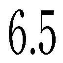
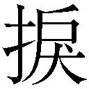
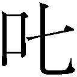
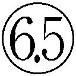

| やはり俺の青春ラブコメはまちがっている。6.5 (ガガガ文庫) | |
| 渡航 | |
| (2014) | |
小学館ｅＢｏｏｋｓ
やはり俺の青春ラブコメはまちがっている。
渡航
イラスト ぽんかん⑧
文化祭が終わると、秋はなおさらの深まりを見せる。
天は高く、頰を撫でる風も涼しくなってきた。
特別棟へと向かう廊下には人気がない。肌寒いほどの涼しさを感じてブレザーを羽織り直す。静けさの中で、ゆっくりとした俺の足音だけが響いていた。
この学校では秋は慌ただしく過ぎ去っていく。
文化祭の次は体育祭、そして修学旅行。
特に俺たち高校二年生の秋は予定が目白押しで、おそらくはこの三つのイベントが連なっている今こそが最大級の青春期間だろう。
そのためか、クラス、学年、学校全体が浮ついているように感じる。
高校生なんてただでさえ浮ついて見える連中だ。それが今はなおさらに盛り上がっている。文化祭で全校が一丸となり（俺を除く）、体育祭では敵味方入り乱れ（俺を除く）、修学旅行では親しい者同士が寄り集まり（俺を除く）、輝かしい青春の一ページを飾るのだ。俺を俺をって注釈入れすぎて白黒ついた美味しいお菓子みたいになってんじゃねぇか。牛乳に浸して食うとたぶん美味しい。
別にお菓子の匂いに惹かれてきたというわけでもないが、部室の扉を開けると甘い香りが漂っていた。
「あ、ヒッキー。やっはろー」
入ってきた俺に気づいて、元気よく手を上げると、お団子髪が軽く揺れた。
由比ヶ浜結衣。俺のクラスメイトであり、俺と同じくこの奉仕部に所属している。見た目は今どきの女子高生って感じで普通に考えれば俺に気軽に声をかけてくるような存在じゃなさそうだが、いつの間にやらここに居ついてしまった。子犬チックというか、習性的にはなんだか狸のような奴である。
由比ヶ浜の前にある机には所狭しとお菓子が並べられていた。どうやら放課後ティータイム中だったらしい。
マグカップから湯気が立ち上っている。その隣にある飾り気の少ないティーカップにも、今まさに紅茶が注がれんとしていた。
ティーポットの持ち主は長く艶やかな黒髪をほっそりとした指先で搔き上げる。澄ました横顔は白磁にも似て、傾きかけた夕日を受けて今は紅茶のようにほんのりと朱に色づいている。
俺自身はさして作法に詳しくないが、彼女、雪ノ下雪乃の所作は育ちの良さを感じさせ、どこぞの貴族の出と言われても納得してしまいそうだった。
お茶の準備が整うと、雪ノ下はしずしずと座る。
「では、いただきましょうか」
そう雪ノ下が言うと、由比ヶ浜が続けて手を合わせる。
「いただきます」
「めしあがれ」
どこかままごとじみたやりとりだったが、どうにもこの二人の雰囲気はそうして茶化すには絵になりすぎていたので控えておく。今この瞬間、この部室にいらないものは何かと聞かれれば確実に俺だろう。
だからでしょうか、ぼくの分のお茶が用意されていないのは。そういう俺の分だけないとかやめようよ。こないだやった日払いのコンサートスタッフのバイトで俺の弁当だけ箸がついてなかったときみたいじゃん。俺そんときだけインド風の食事の仕方をしようかと思ったんだぞ。近くにコンビニあったからよかったものの......おのれ、現場監督。
「あ、ヒッキーの分......」
カップに口をつけ、手作りらしいマフィンをもぐもぐしてから由比ヶ浜が言う。
すると、雪ノ下もそのことに気づいたのか、そっとソーサーにカップを置いた。ふるふると視線を動かし、机まわりを確認している。けれど、そう都合よく余ったカップもあるまい。
だが、心配も気遣いもいらない。ぼっちはいついかなるときも備えているのである。だいたい誰も助けてくれないからな。
「いや、俺は自前であるから」
俺は鞄からシャッと黄色と黒の警戒色バリバリのデンジャーなパッケージの飲み物を取り出した。飲み始めから既にクライマックス、そう、ＭＡＸコーヒーである。クライマックスというかむしろ出オチといってもいい。
いつもの指定席についてマッカン（ＭＡＸコーヒーの缶のこと）のタブを開ける。このちょうどぬるくなってきたあたりが練乳のもったりとした甘みの破壊力が強く、通はこれを好むのだ。この糖分量から考えるとそのうち自衛隊の正式なレーションとかに採用されてもおかしくない。
遭難したらＭＡＸコーヒー。山に行くときは持っていくといい。
それぞれ飲み物に手をつけていると、雪ノ下がおもむろにノートパソコンを取り出した。
文化祭実行委員会があった頃ならいざ知らず、今雪ノ下がノーパソを持ち歩く理由がちょっとわからず、俺は呆けた目で見てしまう。それはそうと、ノーパソとノーパンってすごくよく似ているよね。「ノーパン」「ノーパン」「ノーパン」「ノーパン」「ノーパン」、さてこの中にノーパンがあります。どれでしょうか!?
一人で脳内クイズをしていると、マフィンをむぐむぐしていた由比ヶ浜もまた、ほえっと不思議そうな顔で雪ノ下の手元を覗き込む。ちなみにさっきのクイズ、正解は全部ノーパンだよ！
「ゆきのん。どしたの、それ」
「平塚先生に押し付けられたのよ。新しい活動内容、と言っていたけれど......」
電源を入れ、立ち上がるのを待っている間に雪ノ下は手短に答える。といっても、雪ノ下自身その内容を把握しているわけではないようだ。
ちょっと古いパソコンなのか立ち上がるまでに少々の時間を要する。その間、雪ノ下は顎に手をやり、いつもの考えている仕草をしながら画面をじっと見つめていた。
その視線につられて俺も由比ヶ浜も、雪ノ下の背後からパソコンを覗き込むと、デフォルトの味気ない背景画面にぽつんと『Read me!』と書かれたテキストファイルがあった。
他に仕事に関係しそうなファイルは見当たらない。雪ノ下がつっと指を滑らせて、そのファイルをクリックした。
奉仕部各位
新たな奉仕部の活動内容として、メールでの悩み事相談を開始します。
題して、『千葉県横断お悩み相談メール』
各自奮励し、悩み事解決に努めるようお願いします。
奉仕部顧問 平塚静
ごくごく簡潔なテキストを読んだ反応はそれぞれにばらばらだった。
「......なるほど、おおむね理解したわ。とりあえず送られてきた相談メールに適切なアドバイスを返信すればいいのよね。けれど、そうそう送られてくるものなのかしら......」
雪ノ下は内容よりもシステム面のほうが気になるのか、何度か矯めつ眇めつテキストを読み返している。
一方の由比ヶ浜は目を丸くしていた。
「なんか、平塚先生ってこんなちゃんとしてたっけ......」
驚くポイントがさすが由比ヶ浜。略して、さすガハマさんとか呼んじゃいそう。
「いや、メールだとこんなもんだぞ。普段、あんな感じだから意外だけどな」
「そうなん......え？」
しばし考えるような間を取ってから由比ヶ浜はぱぱっと俺を二度見した。
まぁ、その驚きはわかる。いつもはこうガラッパチというかアパッチというかアバランチというかアバレンジャーというか......少なくとも礼儀正しく清楚可憐で生真面目な印象とかはゼロだもんな。
「一応ちゃんとした大人ってことだろ」
言うと、由比ヶ浜も雪ノ下も揃って訝しげな眼で俺を見ていた。
「......まるで普段から平塚先生とメールしているような口ぶりね」
雪ノ下から冷ややかな声をかけられた。静かに腕を組み、鋭く射抜くような視線を突き立てられる。が、別に睨まれるようなこっちゃない。
「メールしているというより、アレだな、メールが来るってほうが正しいな。メルマガとかアマゾンとかマックとかあの類いと同じカテゴリーな感じだ。たまになんか来んだよ、超長いメールが」
「......そう。どうでもいいけれど」
短く答えると、雪ノ下はまたパソコンに向き直った。カタカタとキーボードを打つ音がやけに大きく聞こえる。その音の裏で小さな声がした。
「長いメール......。なんか、あたし今、相談内容思いついたかも」
ぽつりと呟く由比ヶ浜さんがちょっと怖いんですけど......。いや、俺もあの長文メールを避ける方法を知りたいんですよ？ メール返さないと電話かかってくるし......。
俺も早速相談メールを打とうかと思っていると、雪ノ下のキータッチの音が止んだ。
「早速来たわね」
「あ、マジでくるんだ。どれどれ～？」
由比ヶ浜が雪ノ下の後ろに回り、ぎゅっと肩に抱きつく。自然とスキンシップを取るあたりはさすがは上位カーストの女子だ。
「......重い」
ぼそっと雪ノ下が呟くが、それは何が重いんでしょうかねぇ。まぁ、興味は尽きないのだが、そこを詮索するとひどい目に遭いそうなのであえて聞き流すことにして問いかける。
「どんなんが来たんだ？」
「えっとねー。ＰＮホモォさんからの......変な顔文字だなぁこれ......」
オーケー。だいたい誰が送ってきたのかわかった。
「もうそれ読まなくていいぞ」
俺が言うと、パソコンの前に座る雪ノ下も同様の意見なのか、頭痛を抑えるようにこめかみに手をやり小さくため息を吐いた。
「そうね、予想がつくし......」
「い、一応は読んであげようよ！ ほら、あたし読むし！」
由比ヶ浜がぐいぐい雪ノ下の袖を引っ張る。雪ノ下はやや鬱陶しそうにしながらも子犬チックな嘆願スタイル相手には断りきれないらしい。由比ヶ浜の手を取るとそれをひっこめさせながら言う。
「わかったから引っ張るのをやめて。一応は聞くわ。一応、ね......」
「うん！ じゃあ読むね！」
えっと、とメールの続きを読み始める由比ヶ浜と渋々ながら聞く体勢に入る雪ノ下。
由比ヶ浜には甘いんだよな。コミック何姫だよこれ。なんとなく微笑ましい気分でぼーっとゆるゆりした関係の二人を眺めていると由比ヶ浜が続きを読み上げる。
【ＰＮ：ホモォさんからの相談】
文化祭以来、クラスのとある男子たち（ＨくんとＨくん）の仲が気になります。
お互い意識しすぎていて腐適切だと思います！ Ｈ×Ｈなんて卑猥！ 超卑猥！ いいぞもっとやれ。
二人がもっと仲よくなるといいと思うんですけど、やっぱり今くらいの距離感のほうが捗るので悩んでいます。どっち側に進めばいいでしょうか？？
腐適切という単語が誤字かどうか悩むところだった。
というか、これはいったい何をどう悩んでいるんだ......。だいたいＨ×Ｈってなんだよ、ハンターハンターなの？
思わず頭を抱えていると、由比ヶ浜も苦笑いを浮かべる。雪ノ下に至ってはもう相談内容を聞いておらず、手元の文庫本を読みふけっていた。関わり合いになりたくないのはわかりますけど、その対応はあんまりじゃないでしょうか。
雪ノ下がスルーを決めこんでいる一方その頃、由比ヶ浜はパソコンの画面と俺の顔を交互に見て意見を求めていた。
「ど、どうしよっか、これ......」
聞かれても困る。こんなとある男子の超展開......。
「いや、俺に聞かれても......。どっち側っていうか、行くも地獄、退くも地獄って状態だろこれ......」
「聞くのも地獄なのよね......」
ぽつりとなんかうまいこと言いましたよ、この人......。雪ノ下が文庫本のページをはらりとめくり、すっと俺と由比ヶ浜を見る。
「そもそも解決策......、なんてあるのかしら？」
「......ないね。ごめん、ヒッキー」
問われてむーっと考えてみた由比ヶ浜だが、しばししてからすげぇ申し訳なさそうに謝ってきた。なにこの深刻な空気......。諦めないで！
「ていうか、お前ら、Ｈくんを俺で確定させるのやめてくんない？」
自分でもわかっているが、形式上認めるわけにはいかないので抗議してみた。だが、由比ヶ浜も不満げな様子である。
「でも、姫菜いつも言ってるし......」
いつも言われていたのか......。本人がいないところで話題になるのは人気者の証とも言われるが、まったく嬉しくない。むしろこれって俺が慣れ親しんだ陰口の部類なんじゃないの？ 逆に陰口のほうがマシまである。
雪ノ下が文庫本に栞を挟み、本を閉じた。
「けれど、比企谷くんが誰かと仲よくできているはずがないから、これは悩み自体が存在しないわね」
「なるほど。じゃあ、解決ということで！」
二人して一件落着みたいな感じで再びお茶に手をつけ始めた。
なにこれ。「Ｈ×Ｈ」説を否定してもらえたのはいいんだけど、俺の人格まで否定されてるんだけど。
「......解決したのはいいんだけどよ、この後どうすんだ？ メール返したほうがいいの？」
聞いてみると由比ヶ浜も雪ノ下も口元に手をやり、ふむと考える。
「あ、そうだね......。相談だし返さないと」
「では、比企谷くん。よろしく」
「なぜ俺......」
確かにパソコンに一番近い場所にいるの俺だけどよ、そんな炬燵から出た奴が蜜柑とりにいくみたいなルールなの？ なんだよ、俺んちかよ。
不満全開で眼を腐らせて、二人をジト目で睨めつけると、由比ヶ浜が取ってつけたように言い添えた。
「ほ、ほら、ヒッキー、現国得意じゃん！」
「雪ノ下のほうが成績は上なんだが......」
あくまで俺は学年三位。一位は雪ノ下である。こいつの場合、他の教科もすべて俺より上なのでもう悔しいとかそういう次元ではなく、大したもんだと感心してしまう域にある。
が、悔しくないだけであって腹が立つことは立つ。なぜかといえば成績や勝ち負けのことになると、俺に対して勝ち誇った顔をするからである。
今も雪ノ下は瞳を閉じて軽く微笑んでいる。穏やかな表情ながらも髪を払うその仕草には自信が満ちていた。
「比企谷くん、大事なのは成績ではないわ」
「じゃあ何が大事なんだよ」
「真摯さ......、はあなたに求めてはいけないわね......」
俺が問うと雪ノ下はすぐに答えたが、言葉が後ろへと行くごとに表情が怪訝になり、眉間に皺が寄っていた。
さらに、由比ヶ浜までもが腕を組みうーんと考えこむ。
「やる気？ ......もないし」
「コミュニケーション能力も×......。ねぇ、あなたの取り柄ってなんなのかしら？」
「小首傾げて不思議そうな顔するんじゃねぇよ」
またこのきょとんとした表情が可愛いから腹立つんだこいつ......。
俺の取り柄とか超いろいろあるだろ、こうなに、なんか、ほら、......家族愛に溢れてる的な。まぁ、これ言うとまたシスコンって言われるから言わないんだけど。......ああ、これだ。この学習能力は俺の取り柄な気がする。でも、どんどん自閉的になってく負の学習能力だなこれ。
我ながら余りの卑屈さにちょっと項垂れていると、取り繕うように由比ヶ浜が口を開いた。
「あ、でもでも文章とか書くの早そう！」
言われて雪ノ下もふむと頷く。
「そうね。真剣に取り組まない分、所要時間は短いかもしれないわね。比企谷くんは手が早い。よかったわね、長所が見つかって」
そんなにっこり微笑みながら言われてしまうと、返す言葉がない。ため息を一つ吐いておとなしく、従うことにした。
「......わかった、とりあえずこのメールは俺が返す」
まぁ、実際、この中だと俺が返信メールを書くのが妥当だろう。雪ノ下だと辛辣なこと書いちゃうだろうし、由比ヶ浜だとなんだかほわっとした結論になりそうだし。
パソコンを引き寄せ、たったかたったか書き始める。
【奉仕部からの回答】
まさかとは思いますが、この「Ｈ×Ｈ」とは、あなたの想像上の存在にすぎないのではないでしょうか。
いや、それはまったく的外れかもしれませんが、可能性として指摘させていただきました。メールの文章だけしか情報がない『千葉県横断お悩み相談メール』の、これは限界とお考えください。
ッターンとエンターキーを叩き、敏腕精神科医かと思うくらいの素晴らしい回答を送っておいた。満足感のおかげかぬるくなったＭＡＸコーヒーが美味い。
一仕事終えたなーと思っていたら、ポーンとポップアップが開かれた。
「なんかもう一通来たぞ」
ちょうど紅茶を淹れ直していた由比ヶ浜と雪ノ下に声をかける。
「じゃあ、ヒッキー読んで」
さして大きくないノートパソコンだ。わざわざ移動するよりかは俺が読んでしまったほうがいいだろう。
「ん。ＰＮ、お姉ちゃんですよさんから」
言った瞬間、紅茶を注いでいた雪ノ下の手がぴたりと止まった。
「.........それは読まなくてもいいんじゃないかしら」
その反応で、俺もこのメールの差出人を察する。ああ、いかにもやりそうだな、あの人......。
「ていうか、これ学外からも届くのかよ......」
どんな告知の仕方してんだよ。戦慄している俺をよそに由比ヶ浜は首を振り振り俺と雪ノ下を見る。どうやら誰から送られてきたのか、まだわかっていないらしい。むむっと首を捻っていると、ぽんと手を打った。
「ああ！ 陽乃さんか！」
正解。
「まぁ、あの人のやることだし。よく考えれば今さら驚くようなことでもないわね......」
雪ノ下はそう言うが、普通に怖いわ。どんだけ妹のこと気になってんだよ、ていうかそんなに暇なのかよ、この人。
「......とりあえず読んでみるか」
【ＰＮ：お姉ちゃんですよさんからの相談】
ひゃっはろ～！ 聞いて聞いて！
最近、妹がわたしに冷たいの〉〈
わたしはもっと仲良くしたいんだけど～。なんとかして☆
よろしく、比企谷くん♡
「.........」
俺も由比ヶ浜も絶句である。しかも、俺名指しだし......。
文面を聞いていた雪ノ下がひどく不機嫌な様子で手元の文庫本のページを繰った。
「こういうメールをしてくる限り、仲良くはできないわね。まずそういうところを改めるべきではないかしら」
本人がこう言ってるんだ。ならこれが答えってことでいいだろう。
俺は言われたとおりに打っていく。が、雪ノ下の言い方だとちょっとあたりがきついので、そのあたりは現代語訳することにした。さらなるいざこざを招くのも面倒くさいし。ほら、一応、これって奉仕部の仕事だからね？ そういうのはおうちでやってね？
「こんなもんか......」
ぽつりと独り言（特技）を言って、自分が書いた文章を眺める。
【奉仕部からの回答】
逐一妹さんの行動を把握してちょっかいをかけてくるあたりが嫌われる主な原因だと思われます。今一度ご自身の行動を振り返ってみてはいかがでしょうか。
確認していると、由比ヶ浜がそっと立ち上がり、こそこそとこっちに寄ってきた。
視線で「なんか用か？」と問うと、由比ヶ浜は口元に人差し指を当て、軽くウインクし秘密めかした。
俺の横に立つと、やや身体を屈めて手を伸ばしキーボードを打つ。一文字打つごとに桃色がかった茶髪が揺れ、フローラル系の香水がふわっと香る。
ふえぇ......、距離が近いよぉ......。
思わず、その場でちょっと仰け反ってしまった。いくら千葉がメロンの名産地でもちょっとそのメロンは危険だと思うんですよ......。
こいつ何するつもりなのかしらと思ってじっと身を固くしていると、どうやらメールの続きを打っているらしい。
ってゆきのん言ってますけど、前より柔らかくなってると思います。もうちょっと待ってみるといいと思います。
その最後に付け足された部分を読んで、つい笑みがこぼれる。いかにも由比ヶ浜らしい文面だ。まぁ、これを読んだ陽乃さんがおとなしく従うとも思わないが。
それでも、あの文化祭を経て、雪ノ下姉妹の関係性はわずかながらも前進したように俺は思う。きっとそれは由比ヶ浜も同じように感じたはずだ。
どこに向かって前進したかは知らない。あの姉妹の間にある真実が何なのか、俺はまだ知らないし、おそらくずっと知ることはないのだろう。だから、今の俺たちに言えることはこれくらいしかないのだ。
読み返して確認し終えた由比ヶ浜が俺の肩にそっと手を乗せる。
俺はそれを合図に、メールを送信した。
送信トレイの表示が０になると、ほぼ同時に受信ボックスの横に１と表示される。またメールが来たらしい。そのままクリックして未読メールを開く。
すると、由比ヶ浜が声を上げた。
「あ、優美子だ」
確かに差出人にはyumiko☆と書かれている。☆がついているとはいえ、この学校でゆみこといえば、まず三浦が出てくる。
「こういうときでも本名プレイか......」
「優美子、堂々としてるから......」
あははと由比ヶ浜が苦笑する。
さすがは女王。学内食物連鎖の頂点に君臨するがゆえの防衛本能のなさである。まぁ、この学校で三浦に害を与えうるものなんて、それこそ雪ノ下みたいなイレギュラーな存在だけだろうから、いいんだろうけど。
だが、これは結構危険なことでもある。今は学内だからまだいいが、情報化社会、ネット界隈における個人情報の露呈はリスキーな行為でもあるのだ。俺も中学時代、出会い系っぽいサイトにメアドと携帯番号晒されて、たくさんのメル友ができてしまい、架空の請求書に怯えた過去がある。あれほんと怖い。
余計なお世話であるが一応その危険性は伝えておくべきだろう。
「由比ヶ浜。ネット上で本名書くとかいいことばっかじゃねぇから本人に教えてやったほうがいいぞ」
「え？ これくらい大丈夫じゃない？」
「まぁ、これはまだな。でも、そういう意識もっとかねぇとエスカレートするぞ」
名前くらいなら、写真くらいなら、その日の出来事くらいなら。一つ一つのことは大したことがなくても組み合わせてしまえば特定は容易なのである。
そのあたりのことを簡単に由比ヶ浜に説明していると、雪ノ下が本を閉じて、感心したように頷いていた。
「さすが、リスクマネジメントには一家言あるわね。クラス内ですら本名を名乗っていないだけのことはあるわ」
「俺は名前覚えられてないだけだけどな」
言い返すと雪ノ下はしゅんとしてしおらしく申し訳なさそうな顔をする。
「あら、そうだったの......。ごめんなさいね、引き出物くん」
「ゆきのん、その間違え方は無理があるよ!?」
「そうだ。俺はそんなハッピーな存在じゃない」
「返し方まで卑屈だ!?」
いや、別に全然傷ついてないというか、さすがにそろそろもう慣れたというか。
「そんなことより、三浦さんのメール、内容は？」
雪ノ下が姿勢を正して俺たちのほうへ向き直る。いや、そんなことて君。
が、由比ヶ浜も特段気にしていないのか、ひょいとパソコンを覗き込んで読み上げた。
「えーっとね......」
【yumiko☆さんからの相談】
なんか、相模がウザい
ストレート！ ストレート一本勝負ですよ！ プロデューサーさん！ 直球勝負とかお前、何マーチだよ。
これには由比ヶ浜も苦笑いである。
「あ、あはは......。でも、なんか優美子っぽくないかも」
「そうかぁ？ あいつそれくらい普通に言いそうだけど」
むしろ、もっとひどいことを平気で言いそうなイメージがある。
「確かにあまり三浦さんらしくないわね」
意外なところから反論が飛んできた。視線だけで説明を求めると、雪ノ下は肩にかかった髪を払って答える。
「三浦さんならこういうことは本人に直接言うでしょう」
「あー。なるほど。それもそうか、お前もそういうタイプだもんな」
「一緒にしないでもらえるかしら」
雪ノ下はむっとして不機嫌そうに顔を逸らす。あまり大差ないと思うのだが、本人の中では明確に違うらしい。同類にカテゴライズされたのがよほど不満だったのか、雪ノ下は俺を軽く睨んできた。
「それに、最近はあまり言っていないでしょう。言っても効果がない人がいるものだから」
「あはは、ヒッキーはしょうがないもんね」
由比ヶ浜が呆れ交じりに笑って同意するが、雪ノ下は小さなため息を吐いた。
「あなたもよ」
「あたしも諦められてたんだっ!?」
......やっぱり本人に言ってるじゃねぇかよ。
まぁ、本人に言うのもどうかとは思うんだけど。というか、三浦と雪ノ下は似てるっちゃ似てるんだよな。タイプ自体は真逆だが、性根に持ってるものはわりと近いのかもしれない。だからこそ余計に相容れない部分もあるのだろう。
複雑ですね、乙女は。などと思いながら適当にパソコンを弄っていると、三浦からのメールに続きがあることに気づく。
「なんか続きがあるぞ」
「へ？ あ、ほんとだ」
由比ヶ浜も画面に注視する。その様子を雪ノ下が見て頷き、続きを読むように視線だけで促した。
落ち込んでるっつーか、暗くて空気悪いんだけど。
ウザい。
由比ヶ浜が読み終えたのを聞き、雪ノ下が軽く腕を組む。
「......つまり、元気がないから心配、ということかしら」
「そーみたい。なんか優美子っぽいなぁ」
由比ヶ浜はほっこりとした微笑みを浮かべる。
その笑顔のおかげか、俺まで三浦がなんだかいい人に思えてきてしまった。
確かに思い起こしてみれば、いつぞやの教室で三浦と由比ヶ浜が対峙した後も、テニス勝負のときに由比ヶ浜が奉仕部側についた後も、三浦は変わらず由比ヶ浜と友達付き合いをしている。これは普通ありえないと俺は思う。カースト内での派閥争いにおける恨みというのは未来永劫続くものであり、決定的な対立をしてしまえばあとは主導権を握れなかった者がそこを去るほかない。ワンランク下のカーストに属し、それに馴染むこともできなければぼっちの道を歩むしかないのが普通だ。
由比ヶ浜が未だに上位カーストに属している理由。それはもちろん本人のコミュニケーションスキルもあるだろう。波風立てることを嫌う葉山の陰ながらのサポートもあるかもしれない。だが、最たる理由は、三浦の性格にあると思われる。
女王たるもの、些事にとらわれない器の大きさが求められるのだ。女王の女王たる所以をそこに見た気がする。
......だから、まぁ逆にこのメールも、たぶん優しさとかじゃなくて、単純にウザいとは思うものの、気にはかけていて、でもウザいから自分で直接声かけたりするのもなんかウザいという彼女なりの複雑な思いがあるのだろう。なにそれややこしくてウザい。
しばし思案に暮れていた雪ノ下はぱっと腕組みを解くと由比ヶ浜に問いかけた。
「実際のところ、相模さんの様子はどうなの？」
「んー、その、なんていうか、ね......」
由比ヶ浜が言葉を濁す。その言葉の続きは俺が引き取った。
「まぁウザいな。基本的には元気なんだが、周りの連中が相模を気遣っているというか、周囲にもその気遣いを強要するというか......」
「それは相当に鬱陶しいわね......」
雪ノ下は辟易とした表情を浮かべる。話を聞いただけでこの反応だ。同じ教室にいる俺たちからしたらもっと鬱陶しい。
おそらくはこの、相模を気遣う雰囲気こそが空気の悪さの原因だろう。
「......解決策は」
「ああ、それなら問題ない。そのうち終わる」
言いかけた雪ノ下の言葉を途中で遮る。すると、雪ノ下は怪訝な表情でちらりと俺を見た。
「どういう意味かしら？」
「まだ文化祭直後だから相模たちがひきずってるだけだ。そのうち普通になるさ」
わずかな沈黙の後、探るようにゆっくりと雪ノ下は口を開く。
「......引きずっている、というのは、文化祭のときのあなたとの一件を？」
「だろうな。空気でわかる」
すると、由比ヶ浜が否定も肯定もせず、軽く口をとがらせて不満げな表情をした。その反応でなおさら確信を抱いた。
やはり相模一派が俺についてあることないこと吹いて回っているのだろう。いかに比企谷八幡が悪辣で非道であるかを。
いってみれば反比企谷のロビィ活動をしているようなもんだ。この手の攻撃には慣れちゃあいるが、居心地が悪いことに変わりはない。いっそ完全に無視してくれりゃあいいんだが、見えるところでうろちょろされたり聞こえる範囲で蚊みたいにぶんぶん言われたら多少イラッとはくる。
ただまぁ、救いなのは三浦がそれをウザいと思っていることだ。敵の敵は味方という俺の人生哲学からすると、この件については三浦が味方ということになる。噓やだ俺の味方になってくれるとか三浦さんいい人じゃん、三浦さん優しいじゃん。好きになっちゃいそう！ 絶対ならないけど！ 三浦にひっそりと感謝、というか共犯意識めいたものを抱いていると、傍らで浅く息を吐くのが聞こえた。
「でもさ、なんかああいうのいい気持ちしないし、......悪く言われるの、やだし」
ちらと横を向くと、由比ヶ浜が俯いている。表情は窺えず、きゅっとスカートの端を軽く握りこんでいるのだけが見えた。
「由比ヶ浜さん......」
静かな声音に応えるように、雪ノ下も柔らかく、その名前を呼ぶ。それで我に返ったのか、由比ヶ浜がぱっと勢いよく顔を上げた。
「そ、そのっ！ なんか人の悪口って聞くといーってなるじゃない？」
......まぁ、なんだ、優しい奴なんだ、こいつは。けど、俺は優しくはないのである。
「俺は人の悪口聞くの楽しいけどな」
「性格悪っ！」
由比ヶ浜が叫ぶが、かたや雪ノ下は冷静だった。微笑みを浮かべると、普段より気持ちゆっくりとした調子で言う。
「比企谷くんは陰口で楽しんだりしないわよ」
......おお、なに、こいつも優しいの？ 思わぬ擁護に驚いていると、それは由比ヶ浜も同様であったらしく、ちょっと間をおいてから頷いた。
「そ、そうだよね。ヒッキー腐ってるけど結構......」
その言葉を素早く、断ち切る氷のように冷たい声。
「比企谷くんに陰口を聞かせてくれるような人、いないもの」
「理由が悲しい！」
由比ヶ浜がうわぁんと涙声をあげた。いや、悲しいのはぼくですよ？ なんだよ、危うくちょっと感動しちゃうところだったじゃねぇかよ。
「けれど、真実でしょう？」
極めつけはこの氷の微笑。雪ノ下がにっこりと俺に微笑みかけてくる。
「だいたい合ってるから否定できねぇ......」
ほんと他に言葉が出てこねぇよ。なに、こいつ比企谷検定何級なの？ 呆れ交じりに雪ノ下を見たが、雪ノ下は俺の心情などまったく意に介することなく、軽く咳払いをすると勝手に話を進めていく。
「とにかく、相模さんたちの動向、Ｆ組の内情をもうちょっと知ってから適切な対処をとりましょう。私が相模さんに直接言ってもいいのだけれど、それだと悪化するだけでしょうし......」
どうやら雪ノ下は解決のために何か具体的な行動を起こす気でいるらしい。だが、それはあまり意味のある行動だとは思えない。
「いや、これほっといてもそのうち自然に終息するからなんもやんなくていいと思うんだけど。実害ないし」
俺が思うに、今相模が気遣われているのは一過性のものだ。文化祭からまださして月日が経過していないからこそのブームだ。直近の恥ずかしい過去を少しでも誤魔化そうとほかに攻撃すべき相手、より惨めな相手を探しているだけにすぎない。黙っていても終わるものにわざわざ労力を割くのもアホらしかろう。
だが、雪ノ下は納得いかないようで、すっと俺をまっすぐに見据えた。
「.........実害なら、あるわ」
「う、うん！ やっぱり雰囲気悪いのって困るしね！」
由比ヶ浜も前のめりに賛同する。二人がやる気なら仕方ない。多数決になるなら俺もその決定には従わざるを得ない。
「......。まぁいいけどよ」
俺が不承不承に言うと、満足げに雪ノ下が頷く。
「では、まずは相模さんたちの様子を見て、解決の糸口を探りましょう」
そう言われても既に放課後。相模たちはとうの昔に帰っているだろう。
「んじゃ、とりあえず今日のところはもうできることはないな」
「そうね。......そろそろいい時間だし、帰りましょうか」
俺たちは椅子から立ち上がると、めいめいに片づけをし、帰る準備をする。
今日の奉仕部の活動は、海老名さんの妄想を軽くあしらい、陽乃さんからの相談には現状維持を勧め、三浦からのメールについては先送りにするという、見事なまでになんにもやっていなかった。
この部活やべぇなと思っていると由比ヶ浜がよいしょっと鞄を背負い直して気合を入れた。
「うん、明日から頑張ろう！」
明日から頑張る。いい言葉だ。毎日でも言いたいくらいに素敵な言葉だと思う。
目は口ほどに物を言う。というが、より正確に言うのなら口よりもよほどうるさいのが視線である。
既に授業を終え、帰りのＳＨＲの時間になっていた。小学生風に言うと、帰りの会の時間である。ＳＨＲとかいわれても正直わかりづらい。初めて聞いたときは北アメリカ大陸横断レースするのかと思ったぜ。
今日も粘つくような視線を感じてちらりと後ろを向く。普段人から注目されることがないため、こうした気配には敏感なのだ。なんだこの悲しい習性は。
そして、振り返れば奴がいる。
クラスの女子たちだ。なんだよ人気者なのかよ、とも思いかけたが、もちろん実態はそうではない。
三日月のように細まり歪め曲げられた瞳には俺への侮蔑と嘲笑が込められている。それを確認して俺はまた姿勢を戻した。すると、甲高い笑い声が短く響いた。嫌悪と好奇が入り混じった眼差しがちりちりと俺の首筋を焼く。
その眼差しの主はクラスの女子連中でも三浦を中心としたトップカーストではなく、その下位に位置するグループ。その中心にいるのが、今日も今日とて伏し目がちにいかにも傷ついてます凹んでますな表情の相模南。
因縁というほどでもないが、俺と相模の間にはちょっとした隔たりがある。まぁ、この学校の大半の人間とは隔たりがあるんだが、そういった無関係性による隔絶ではなく、純然たる感情の溝、あるいは悪意によって生まれた隔たりだ。
この隔たりが一番面倒くさい。
互いを認識しない完璧な無視、無関係性による隔絶であれば、双方の距離は常に一定に保たれ、平行性を維持し続ける。
だが、感情によって立ち位置を変えてしまった場合は別だ。それがたとえさらなる距離をとったにしても、必ずいずれどこかでぶつかる。
関わりたくないほどに嫌いなのであれば、徹底的に無視するしかない。それこそ呼吸をするように自然な無視、それが理想形だ。人の嫌い方にもコツがあるのだ。
担任からの連絡事項を聞き流し、皆がめいめいに立ち上がる。
すぐに教室を飛び出していく者、とりあえず近くの席の人間とお喋りしだす者、ゆっくりと帰り支度に取り掛かる者と様々だ。
俺はといえば、三浦からのメールの一件についての情報収集もかねて、ゆるゆるとさもまだ何かやることがあるふうの雰囲気を漂わせながら教室に残っていた。
放課後になってこそ、より高校生らしさ、というのは滲み出てくる。
なかでも、教室の後方に集まっている連中、葉山や戸部、そして三浦たちはまさしくその王道をいっていた。
「じゃ、あたし部活行ってくるね」
「あー、いってらー。あ、結衣。あーし土曜買い物行くから」
「うん、オッケー。あたしも行く行く。じゃね」
情報が欠落している三浦の言葉をうまく補完しながら由比ヶ浜も返す。っていうか、三浦誘い方が下手すぎるだろ......、ほとんど俺なみの誘い方レベルだった。まぁ、女王だから仕方ないな。つまり、俺もほとんど王様みたいなことなんじゃねぇの。※ただし裸。
由比ヶ浜は三浦たちに軽く手を振ると教室から出ていく。部室に向かうのだろう。その後ろ姿を見送る三浦もどこか微笑ましげで、どうやら三浦の中で由比ヶ浜の部活動というのは認知されているらしい。きちんと意思表示をする場合には三浦もそれに理解を示すようだ。また一つ三浦について詳しくなってしまった。
残った三浦はクイーン・ビーさながら脇に海老名さんを配し、壁際に寄りかかっている。葉山たちは部活があるためか、既に帰り支度は済ませていて、ひとしきりお喋りを楽しんだら出ていくのだろう。
教室の出入り口は前と後ろに一つずつ。必然、後ろから出ていく連中の視界には葉山たちが入っている。
寄り固まって談笑している葉山たちに、クラスの連中もすれ違いざま一言二言会話して、別れの挨拶をしていく。なんだそりゃ参勤交代か。
が、そういうのは葉山たちに対して友好的な連中だけだ。別に仲良くもない連中は前の扉からすっと消えていく。
また一人、教室を後にする。出て行ったのは川......さき？ うん、たぶん川崎だ。なんだあいつ、まだバイトかなんかやってんのかね。
俺の横を通るとき、川崎が歩む速度を急に上げた。そのまますたすたすたっとやけに小走りになる。そして、一定の距離を取るとまたいつもの気だるげな足取りになった。
川崎は扉の傍まで行くと、ちらと振り返る。俺と目が合うと、ううっと言葉を詰まらせたような表情で、わずかに頭を下げて、ぱっと歩いて行ってしまった。
どうやら別れの挨拶のつもりらしい。アホか。横通ったときに言えよ。
川崎が去ってしばらくまたぼーっとしていると、今度はその前方を相模たちが通っていく。前の出入り口を使うのは三浦たちと距離を置いているからだろう。この事実からも相模が三浦に苦手意識を持っていることは明白だ。
そして、その苦手意識というのが、余計に三浦の神経を逆撫でするのだろう。かつての由比ヶ浜がそうであったように、はっきりしない態度をとられることが三浦にとっては一番イラッとくることなはずだ。
まずは、ここまでわかれば充分。要は三浦を苛立たせない行動を、相模がとれるようになれば問題は解決だ。あとはその手段をどうするかということになる。
まぁ、最も有効なのはタイムアウトを狙う作戦だろう。つまりクラス替えまで放っておけばいいだけ。のはずなのだが、雪ノ下は早急に手を打ちたがっているわけで、そうもいかねぇんだろうな......。
とにかく、俺も今しがた確認した情報を反芻しつつ、だらだらと歩きながら部室へと向かうことにした。
× × ×
部室では今日ものどかなティータイムだった。そのうちバンドとか始める勢い。
俺が部室に入ると、既に二人ともパソコンの前に座っていた。
二人とも紅茶を飲みつつ、お菓子に手を伸ばし、互いに額を突き合わせて思案顔で画面を見ている。
俺はいつもの指定席に座り、二人があれこれ言っているのをぼーっと眺めていた。
俺の分の紅茶はなさそうだったので、部室に来る前に買っておいたアツアツのＭＡＸコーヒーをずずーっと啜る。
秋も深まり冬へと向かうこの時期はＭＡＸコーヒーの旬だ。あと、春が過ぎたあたりから夏場にかけてもキンキンに冷やしたＭＡＸコーヒーが美味い。むしろ年間通して美味いのがＭＡＸコーヒーである。
そして今日のお茶うけは濡れ煎餅。
濡れ煎餅は、千葉県は銚子のお土産として有名だ。特に銚子電鉄オフィシャルのものなんかは広く知られているだろう。千葉県は米どころとして名高く、また醬油の名産地としてもお馴染みだ。千葉の米と醬油でオーバーレイ。米と醬油がゆーめの、（夢の）、コラボレーション☆
......まぁ、ＭＡＸコーヒーとの相性はどうなのと聞かれたら、「......自分、千葉愛してますんで！」みたいな爽やかな笑顔で答えることしかできない感じ。
俺が千葉の名産に舌鼓を打っていると、略して千葉鼓を打っていると、雪ノ下がふむと腕組みをした。
「さて、どうしようかしらね」
「あー、これね」
ふむと考え込む雪ノ下とその横で同じようにうーんと唸る由比ヶ浜。どうやら例の新しい活動、千葉県横断お悩み相談メールに悩まされているらしい。
いったい今度は何が来たやらと、席を離れて後ろから覗き込んでみる。
【ＰＮ：めぐ☆めぐさんからの相談】
体育祭を盛り上げるためのアイデアを募集しています。それと、今年で最後なので絶対勝ちたいです！
にちっと濡れ煎餅を一齧りしながらそのメールを読んで、ちょっと驚いた。
......初めてまともな相談内容のメールが来た。うん、まぁ、そこに驚いてる時点でもうこの部活どうなのって感じだけど。
「体育祭、ね」
雪ノ下が陰鬱そうにため息を吐く。
「はあん、もうそんな時期か」
そういや、帰りのＨＲで赤白分けてたな。
近頃は春や初夏に体育祭や運動会をやるところも多いそうだが、うちの学校は秋に体育祭がある。これが終わると、いよいよもって季節は冬へと移り変わっていくのだ。もっとも、俺たち二年生に限っては、すぐ後に修学旅行が控えているわけだが。
体育祭も学生にとっては大きなイベントであることには変わりなく、青春を謳歌せし者たちにとっては楽しみな行事ではあるだろう。特に運動部系の男子にとっては自分の活躍を女子にアピールできるポイントでもある。ここでかっこよく決められれば俺にも彼女が......なんて妄想をしている男子も一人や二人ではあるまい。
だが、女子、特に雪ノ下はそうでもないらしく、嫌そうに眉根を寄せる。
「......嫌だったわよね、クラス対抗リレー」
あー、あったあった。中学のときとかやらされるんだよね。
「あの謎のプレッシャーな」
思い出すとあのときの感覚が蘇る。つい同意の言葉が漏れ出てしまった。それにうんうんと頷き、由比ヶ浜が続く。
「あたし、あんま足速くないからきつかったなー」
「そうそう、いるんだよなー、クラスメイトが抜かれると舌打ちしてマジギレするサッカー部の永山」
「それ誰!? なんで個人名!?」
由比ヶ浜が驚き交じりにばっと振り向く。知らないのか、永山。俺の中学の同級生だよ。まぁ、知ってたら怖いけど。
いや、俺あいつ嫌いだったんだよ、たぶんあっちも俺のこと嫌いだったと思うけどさ。
だが、嫌いだったのはサッカー部の永山だけではない。クラス対抗リレーという単語のせいで俺のトラウマフォルダが火を噴く。
「それとバトン受け取るの嫌がる女子とかな。なんでああいうのってわざわざ俺の前で『マジありえないんだけどー』とか言うの？ ツンデレ？」
どう考えても俺の気を引きたくて言っているとしか思えない。好きな子ほどいじめちゃう心理っていうの？ つまり逆説的に俺は超人気者ってことだな。違うかー。
思わず自嘲気味な笑みがこぼれ出ると、由比ヶ浜もたははと苦笑いする。
「いやーそれは......」
くっ、由比ヶ浜のちょっと憐れんだ感じの視線が痛い......。ときどき優しさや気遣いを苦しく思うことがあります。
「自分でわかっていると思うからあえて言明は避けるけれど、女子が嫌がっているときってかなりの確率で本気よ？」
でもね、雪ノ下さん。冷たい真実を突きつけられたら楽ってわけでもないんですよ？
「言明してるじゃねぇかよ。言明の意味調べとけよ。それと、体育祭といえばあれな」
「まだあるんだ......」
俺が続けようとすると、由比ヶ浜がちょっと引き攣った笑みを浮かべる。愚か者、体育祭の思い出なんてたくさんあるにきまっているだろう。
「ある。これは男子特有だと思うけど、組体操な。一人足りなかったりして先生と一緒にやるんだわ。『扇』とかやろうにも人足らなくてよ」
あるある～と俺の中の脳内八幡が八万人ほど賛同していたが、雪ノ下も由比ヶ浜もピンとこなかったのか、きょとんとしている。女子は組体操やらないからわからんか......。
「まぁ、組体操は『扇』に限らず、だいたい先生と組まされることになるんだ。おかげで運動会じゃ注目集めまくりでよ」
「それを目にするご両親が哀れだわ......」
雪ノ下がこめかみに手をやり渋い顔をする。うちの両親を気遣ってくれてありがとう。でも、心配無用です。うちの親、それ見て爆笑してたし、なんなら俺のことすっぱり忘れて小町を撮影することで忙しかったし。お兄ちゃんなんてこんなもんですよ......。
ふっと短い自嘲交じりのため息を吐き、いろいろ思い出して少しばかり暗い気持ちになりかけたそのとき、トントンと短くリズミカルに刻まれた音がした。
さして力は入っていないのだろうが、静かな室内ではそれがことさらよく聞こえた。
俺たちは揃って扉をちらりと見やる。
「どうぞ」
雪ノ下が声をかけると、見覚えのある女子生徒が入ってくる。
「失礼しまーす」
ほんわかした空気を身に纏い、きょろきょろと部室内を見回すとそのたびに編まれたお下げ髪が揺れた。前髪はヘアピンで留められ、つるっとした綺麗なおでこに夕日が照り返し、彼女の人柄そのままの明るさを感じさせる。
城廻めぐり。俺の一つ上の三年生。そして、我が総武高校の生徒会長だ。俺と雪ノ下は文化祭実行委員会のときに面識がある。
めぐり先輩はへぇと物珍しそうに部室をひとしきり眺め終わると、にこっと俺たちに微笑みかける。
「えっと、奉仕部ってここでいいのかな？ 前に体育祭のことで相談のメールしたんだけど、直接話したほうが早いかと思って......、来ちゃった」
言われ、俺たちはパソコンの画面に視線をやった。
ＰＮ：めぐ☆めぐ。
なるほど。めぐり先輩の出したメールというのはこれのことだろう。体育祭という内容も、最後だから、という文言もばっちりあてはまる。
「このメールの差出人......」
由比ヶ浜がパソコンとめぐり先輩を交互に見ていると、めぐり先輩が自分のことを指さした。
「あ、それたぶん私」
言いながら俺たちの近くまでとことこ歩み寄ってきた。
「文化祭のときみたいに体育祭も盛り上げていきたいんだ。協力をお願いできないかな、雪ノ下さんと、えっと......」
そこで、ちらっと俺を見やると、めぐり先輩は言葉を詰まらせる。うむむっと難しい顔をしていると、由比ヶ浜がぽしょっと内緒話のように呟いた。
「比企谷です、比企谷」
それを聞くと、めぐり先輩はぽんと手を打った。そして、由比ヶ浜にほんわかとした微笑みを投げかける。
「あ、ヒキガヤさんね。それと......」
とまたしても難しい顔をして俺をちらっと見るめぐり先輩。勘違いされていることに気づいた由比ヶ浜が慌てて訂正した。
「いや、あ、あたしは由比ヶ浜です！ そっちがヒキガヤ」
「ああ～、そっか」
言われてめぐり先輩は納得したように頷いた。
「そうです......、その、比企谷、とか、そんな呼ばれると、その、困ります......」
由比ヶ浜は顔を逸らし、その声もだんだんと小さくなっていく。もうほとんど聞こえない。そうですね、ぼくも今これを聞いていてどういうリアクションをとればいいのかとても困っています。
「呼ばれると困るだなんてまるで忌み名ね。さすがだわ......」
雪ノ下が感心したように頷く。
やめたげてよぉ！ 名前関連でからかったりするのはやめたげてよぉ！ 近藤くんのことコンドームって呼ぶのやめたげてよぉ！ 俺の場合、ヒッキーと呼ばれたりするんですけど、これって冷静に考えると結構ひどいですよね。
「ごめんなさい。私、人の名前覚えるの得意じゃなくて......」
申し訳なさそうにしゅんと俯いためぐり先輩が言う。
すると、雪ノ下が落ち着いた声音で優しく言い添えた。
「お気になさらず。彼は人に名前を覚えられないのが得意なだけですから」
「お前が言うのおかしいでしょう？ いや、合ってんだけどさ」
実際、俺を呼ぶとき、「あの」とか「ねぇ」とかが多いからみんな俺の名前覚えてないんじゃないかと疑わしいぜ。
「ならいいじゃない。それに存在感消したりするのも得意よね？」
雪ノ下がにっこりと微笑む。なにが、なら、なのかさっぱりわからないうえに、それにときたもんだ。だが、残念ながらそれも事実なので一切否定できなかった。
「そ、そんなことないよ！」
しかし、予想外のところから否定の言葉が飛んでくる。由比ヶ浜が俺と雪ノ下の間に割って入ってきた。
「教室だと一人でいるから逆に悪目立ちしてるし！」
「そんなフォローあるかよ......」
まったくフォローになってないし。俺を追いこんでどうすんの？ そういう漁法なの？
「あはっ」
俺たちのやりとりを見ていためぐり先輩が不意に笑った。
そして、俺に向かって一歩踏み出し、距離を詰める。
「比企谷くん」
近い距離で名前を呼ばれ、思わず俺の足が一歩引く。
「は、はい」
返事をすると、めぐり先輩がうんと頷いた。
「比企谷くんね。うん、ちゃんと覚えた。文化祭のときも人が少ないときとかすごく頑張ってくれたし、頼りにしてるね」
無邪気に微笑まれると、名前を覚えられていなかったことなんて大したことじゃないように思える。というか、名前間違えられるのなんて普通のことだしな。
それよりも、文化祭で俺が働いていたことを覚えてもらっていたことに、わずかながらの感動があった。
と、同時にやはり照れくさい。
お互いの顔が至近距離にあるというのに、めぐり先輩はそんなことが気にならないようで変わらず、俺にまっすぐでほんわかとした笑顔を向けていた。
おかげで、俺のほうが顔を逸らしてしまう。
「は、はぁ......まぁ、やってはみますけど......」
と、外した視線の先で、なんか膨れっ面の奴がいた。
「むー......」
なんだよフグかよ。外敵でも現れたの？
不機嫌そうな由比ヶ浜の背後から、えらく冷たい声が飛んでくる。
「城廻先輩。それは放っておいてかまわないので依頼の詳細を教えてください」
なんだか最近めっきり寒くなってきたなぁ......と季節を肌で感じてしまいそうな声音だった。そのおかげか、めぐり先輩もにこにこ顔から一転、おっと何か思い出した様子で手を打つ。
「あ、そうそう。みんなに相談したいのはね、体育祭の男子と女子の目玉競技のアイデア出しなんだよ」
めぐり先輩がぴしっと指を立てて説明し始める。
「目玉競技......」
頭の中で眼球だけの妖怪が妙に甲高い声をあげながら走り回っている姿が想像された。思わず、俺の髪の毛がピンと立ってレーダーになりそうだった。
そんなくだらない想像をしてしまうくらいにはぼんやりとした依頼だ。例えるなら、バイト先で暇なときにそこの先輩が「なんか面白い話して」とか言い出すのに近いかもしれない。そのくせ、なんか言うと「つまんないわー、それすべってるわー」とか言い出すんだぜ？ 面白い話なんてないって言うと、「お前、つまんねー奴だなー」とか始まるし。どうしろっつーんだよ、ああいう話題の振り方する奴はそいつ自体がつまらない存在であることが多い。
まぁ、めぐり先輩はそういう人ではないと思うが、今の話ではちょっと具体性に欠ける。こっちとしてもどうすればいいかよくわからない。
そう思ったのは俺だけではなく、由比ヶ浜が遠慮気味に小さく手を挙げる。
「それってどういうのですか？」
由比ヶ浜の脇にいた雪ノ下もそっと腕を組む。
「そういえば去年は何をしたんだったかしら......」
「あー、言われてみると、覚えてねぇな......」
俺も記憶を掘り返してみたが、それらしきものが出てこない。なんか、ずっと自分の椅子に座ってぼーっとしてた気がする。たぶん何かしらの競技には出てたと思うんだが、まったく覚えていない。
覚えていることといえば、運動部の連中が「高校生にもなって体育祭とかだりぃわー」「ほんとだよなー」とか言い合っていたくせにいざ競技が始まるとガチでやってて、あいつらが超楽しんでたってことくらいだ。戻ってきたら女子とハイタッチとかしてたし。一方その頃の俺は女子のハイソックスを見ているだけでした。
肝心の目玉競技については全然思い出せずにいると、雪ノ下が憐れむようなため息を吐いた。
「人はあまりに辛い記憶は封印してしまうというものね......」
「俺の体育祭、黒歴史扱いするのやめてくれる？ だいたい、簡単に忘れられたらトラウマ抱えてねーっつーの。というか、お前も覚えてない時点で同じだろうが」
「忘れることで前に進めることだってあるでしょう」
なぜか勝ち誇った顔で言われた。
「なに、なんなの、そのちょっと悟ってます私的な雰囲気。全然いいこと言ってないし」
「あ、あはは......。で、でもあたしもあんま覚えてないし」
由比ヶ浜は俺たちを気遣うように同調してくれるが、君の場合はアレですね、たぶんガチで物忘れをしているだけだと思うんですよね。
三人ともきれいさっぱり去年の目玉競技とやらを忘れてしまっていたせいか、めぐり先輩がかくっと肩を落とした。
「やっぱり覚えてないか......。コスプレースっていう、コスプレしてレースするのやったんだけどね......」
コスプレース......。なんだか、聞き覚えがあるような......と思ったが、あれはコンプエースだったか。
やっぱ覚えてねぇな。ただ、それを見ていたであろう当時の俺は、トップカースト連中がきゃっきゃうふふと互いのコスプレ姿で盛り上がっている様子を目の当たりにして苦い顔をしていたことだろう。今の俺でもそう思うし。
競技の説明をされても、雪ノ下も由比ヶ浜もはてなと首を捻っている。
これにはめぐり先輩も苦笑するしかない。そっかーと呟くと、思いを新たにしたのか、むんと気合いを入れ直す。
「毎年地味なんだよね。だから今年は派手なのやりたくてさ」
ほんわかとしていながらもやる気がみなぎった眼差しで俺たちをひたと見据える。その熱意に押されたのか、由比ヶ浜も雪ノ下もたじっと一歩引いた。
「な、なるほど......」
「お話はわかりました。いつまでにアイデアを出せば......」
雪ノ下が尋ねると、めぐり先輩はぱっと雪ノ下の手を取った。
「それなんだけど、体育祭運営委員の会議があるからそこで考えるんじゃダメかな？」
「は？ はぁ、それはかまいませんけど、あの、なぜ、手を......、はな、離していただけないでしょうか......」
不意打ちの接触に雪ノ下が戸惑っている。普段、由比ヶ浜とゆりゆりしているから慣れたもんだと思っていたが、そうでもないらしい。ゆりゆりした行為に慣れたというよりは由比ヶ浜に慣れただけなんだな、こいつは。
雪ノ下に離せと言われてもめぐり先輩がその手を引っ込める素振りはない。それどころかさらにもう一歩踏み込んできた。
「実はね、体育祭運営委員会の委員長がまだ決まってなくて......。だから、雪ノ下さん、どうかなぁ？」
じっと見つめられ雪ノ下が頰を染めてたじろぐ。だが、抵抗する気力はわずかに残されていたようでめぐり先輩の手をそっとほどいた。
「お断りします」
「やっぱりかぁ～」
めぐり先輩はがっくりと項垂れて残念そうにはしているが、それ以上無理強いをすることはなく、すっぱりと引き下がった。
が、きらっと目を輝かせると今度は由比ヶ浜のほうに振り向いた。
「じゃあじゃあ、由比ヶ浜さん、どうかな!?」
「へ!?」
急に矛先を向けられた由比ヶ浜が飛び上がった。そして、超高速でぶんぶんと手を振った。
「え、え、む、無理です！」
「そうだよねぇ～。いきなり言われても困っちゃうよね」
めぐり先輩は肩を落とし力なく微笑む。その表情に心が痛んだのか、由比ヶ浜もちょっとしょんぼりしてしまった。
「ごめんなさい......」
「ううん、気にしないで。引き受けてもらえたら嬉しいなーくらいのことだから。気遣ってくれてありがとう」
言いながらめぐり先輩は由比ヶ浜の頭を優しく撫でる。突然の行動に由比ヶ浜は驚いてあうあう言ってるが、めぐり先輩は気にせず撫で続けていた。
しかし、この段階で委員長が決まってないっていうのも結構な問題だな。運営に支障が出てくるんじゃなかろうか。
その危機感は当然めぐり先輩も抱いているようで、由比ヶ浜の頭から手を離すと、うーんと腕組みし、身体を斜めに傾けて目を瞑った。
「けど、委員長が決まらないのも困っちゃうんだよ。......こうなったら」
こうなったら......、と俺も考えてみてはたと一つの考えがよぎる。こうなったらアレだな、流れ的に俺に来るんじゃなかろうな。雪ノ下、由比ヶ浜とお願いされたら、展開的には俺のほうに来ちゃうよな......。手を握られたり頭撫でられたりしたら、断れる自信がまったくない。やばい、やばいぞ......。
どうにか回避する方法を考えていたが、それより早くめぐり先輩が結論を出した。
「こうなったら、頑張って心当たりを探すしかないね」
そう言って、うんうんと頷くめぐり先輩。
......あ、あれ？ ここにいますよ！ まだ先輩が意思確認をしていない人がここにいますよ！ ほら、俺！ 俺は！
......俺は？
だが、俺の心の叫びが届くわけもなく、めぐり先輩の中で委員長問題は解決してしまったらしい。くぅ......、俺もめぐり先輩に頭を撫でられたかった......。いや、ほら、妹はいるけど姉はいないからさ。そういう憧れって、あるよね......。
俺が儚く散っていった憧れの残滓に想いを馳せていると、ぽつりと雪ノ下の呟きが耳に入ってきた。
「委員長が決まっていない......」
見れば雪ノ下は顎に手をやり、考え事をしている。彼女の中で思うところがあるらしく、ふっと顔を上げ、めぐり先輩に声をかける。
「それは誰がやってもいいんでしょうか？」
唐突な問いかけにめぐり先輩はぱちぱちと目を瞬かせたが、その問いの意味するところを即座に解して答える。
「え？ いやぁ、誰でもっていうのはちょっと困るけど。ちゃんとしてる人で、安心して任せられる人がいいかなーって」
その論法だと俺はちゃんとしてなくて任せられないということになるんですが......。
まぁ、委員長を任すんだ。そら人格者であるに越したことはない。その点においちゃ俺にお声がかからないのも納得である。
だが、雪ノ下は違う意見らしく、静かに首を振った。
「いえ、そういった人格性の問題ではなく、資格や所属組織についての制限があるか否かということです」
どうやら論点がずれていたらしい。言い直されて、今度はめぐり先輩も質問の意図を正しく理解する。
「ああ、そういうことかぁ。それなら問題ないよ。実は立候補を募ってたんだ。ただ、だーれも立候補がいなくて......」
「募集してたんだ、全然知らなかった」
ほぇ～と由比ヶ浜が軽い驚きを伴った声を出す。その反応にめぐり先輩はううっとわずかによろけた。
まぁ、面と向かってお前らの活動など知らんと言われてるようなものだしな......。由比ヶ浜の素朴な驚きには悪意がない分、よりたちが悪い。
よよよっと崩れ落ちそうになりながらめぐり先輩の一人反省会が始まっていた。
「知らないよね......、そうだよね......。告知の仕方が悪かったのかなぁ......。掲示もしたし、ＨＰにも書いたし、プリントも配ったし、先生にも言ってもらったし、私のブログも更新したんだけどなぁ......」
いや、先輩のブログとか知らんし。なに？ アイドルなの？ 穴を掘って埋まってるの？
「あ、その、ごめんなさい！ えっと、あたし、そういうの全然見ないんで！ 掲示板とかどこあるかわかんないし、あ、でもでも今度からはちゃんと見ます。で、ですね......」
取り繕うように由比ヶ浜が言うと、めぐり先輩はそっと手を上げ、言葉の続きを押し留める。目元を拭う振りをし、にこっと微笑みかけた。
「いいの、いいの由比ヶ浜さん。私の告知の仕方が悪かったの。これからはツイッターも使うことにするよ」
「そういう問題じゃねぇだろ......」
思わず口をついて出てしまった。先輩に対してなんて口のきき方！ とも思ったが、なんかこの人はそういう扱いでもいい気がしてきた。
実際、めぐり先輩が気にしている素振りもない。
「うん、ＬＩＮＥも始めるよ！」
いや、だからさ......。その前向きさはとても素敵だと思うんですけどね......。
「城廻先輩。その必要はありませんよ」
雪ノ下が若干呆れた様子で口を開く。そしてこめかみに軽く手を当て、短いため息を吐いた。
「どういうこと？」
めぐり先輩はくりっと首を捻る。その疑問に雪ノ下は端的に答えた。
「一人、適任がいますので推薦します」
「え？ だれだれ？ どんな人？」
興味津々で前のめりになっためぐり先輩。対して雪ノ下は自分の考えを纏めるようにゆっくりと話す。
「こういった役職の経験があり、かつ、上昇志向は比較的強く、名誉職に対する執着もあり、転じてやる気があると言えそうな人物」
「うんうん。いいよね、経験とやる気がある人」
聞きあたりのいい部分を上手にピックアップし、ノリノリで合いの手を入れるめぐり先輩だが、俺はそうのんきではいられなかった。
雪ノ下の出したヒントからドンピシャである人物が浮かび上がってきてしまう。俺はクイズが得意なのだ。「手袋を逆さまに言って？」というクイズでは見事正解して六回殴られたほどである。あの文化、マジ何なの。
その優秀な頭脳が答えを導き出してしまった。それも、あまりよくない解答を。
「おい、雪ノ下。おい......。まさか」
呼びかけると、俺が答えに達したことは理解したのだろう。雪ノ下はちらりと俺を見る。そして、秘密めかしたように口の形だけで「正解」とそう言った。
こいつ唇つやっとしてるな、とかそういうどうでもいい感想も浮かんだが、それよりも俺の中で落胆と諦観の感情が辛うじて勝った。辛うじてなのかよ。
未だ由比ヶ浜とめぐり先輩はわかっていない。ただ俺と雪ノ下のやりとりを見ては首を捻っている。だが、答えを聞けば俺と同じようなリアクションになるだろう。こいつ唇つやっとしてるな、とは思わないかもしれないが。
「雪ノ下さん、教えて？」
急かされると、雪ノ下はめぐり先輩に向き直る。
「二年Ｆ組、文化祭実行委員長、相模南さんです」
「ええっ!?」
それに驚きの声を上げたのは由比ヶ浜だ。まったく予想していなかったのだろう。めぐり先輩も同じく驚いていたが、その表情はしだいに冷めたものに変わっていく。
「あー、うん。な、なるほどねぇ......。でも、どうかなぁ......」
言い淀むめぐり先輩に代わって、俺が雪ノ下の真意を問うことにした。
「雪ノ下、どういうつもりだ」
「トラウマの克服と同じよ、一度何かを失ってしまったなら、それと同等以上のものでしか購うことはできない。違う？」
言われて納得した。そうだった、こいつは泳げない奴を練習と称してプールに突き落とすタイプの人間だった。
つまり、この体育祭運営委員長をやらせることで相模の自信を取り戻す、あるいは周囲からの相模の評価を引き上げようというのだ。
これがうまくいけば、相模の自己承認欲求を満たすことができ、彼女のフラストレーションは解消される。
連鎖して、二年Ｆ組の空気の悪さも多少は改善されるだろう。悪い雰囲気の主たる原因は相模なのだから。まぁ、俺の存在が嫌な空気に拍車をかけていることは否定できないんだけど。
「けど、そうまでしてやることか？ Ｆ組のことなんて......」
「そうまでしてやることよ」
雪ノ下が鋭い口調で俺の言葉を遮った。キッと向けられた視線には強い意志が感じられる。
まぁ、そこまで決意が固いならこいつを説得するのは難しいだろう。説得するのも面倒くさいし。
それに雪ノ下の説明は納得できないものでもない。それなりに理はある。
だが、納得できたのは相模を推薦する理由だけ、いわば相模を主眼に置いた場合の理由だけがわかった。
問題は委員長という役職を主眼に置いて考えた場合についてだ。
それについては、めぐり先輩も承服しかねている様子だ。
「うーん、相模さんかぁ......」
渋い顔でそう呟く。
すると、雪ノ下が自身の唱えた提案を補強するように言い添えた。
「もう一度機会を与えることも、人を育てるには重要だと思いますが」
「そうだね、うん。それは私も思う」
雪ノ下の意見に、めぐり先輩は目を閉じて大きく頷く。
そして、ゆっくりと顔を上げ雪ノ下を真正面から見据える。
「でも、ちゃんとした仕事だから中途半端なことをされると困っちゃうんだ」
以前の、あの文化祭のときのようなことはさせられないと、その瞳が言っていた。優しい、けれども毅然とした態度。それはいつものほんわかとしたどこか抜けた印象のめぐり先輩とは違う。確かに生徒会長らしい威厳がそこにはあった。
「.........」
威圧というほどの迫力ではないが、めぐり先輩の真剣な眼差しに雪ノ下も黙る。
確かにめぐり先輩の言うように、相模は前科持ちだ。文化祭での怠業や責任放棄は長として許される行為ではない。
「俺も賛成はしないな」
人間はそう簡単には変われない。ありがたいお言葉や、優しい同情、安い決意表明くらいで変われるなら世界は変身ヒーローで溢れかえっている。
あの文化祭での失敗を通じて、相模が人間的に成長したとはとてもじゃないが思えない。成長していたら少なくとも俺に対して悪意を向けるということはしないだろうし、周囲に同情することを強要するような真似もしないはずだ。
人は変われないのだ。もし、変われるとしたら手段は一つ。
何度も何度も痛い目を見て、心に消えない傷を刻みつけて、その痛みからの回避本能によって、結果的に行動が変化するだけだ。
まだ相模はその域に達していない。
ゆえに相模に運営委員長を任せるべきではないと俺は思う。
「さがみん、どうだろうね......。前みたいなことになっちゃうと......」
由比ヶ浜の懸念はまったくもって正しい。おそらく、同じことになると思う。
「そうはならないわ。私がそうさせない」
その懸念に、雪ノ下は自信たっぷりに宣言した。
だが、俺にしてみればその雪ノ下の自信も危なっかしいものに感じられる。
「アホか、お前は。お前が文化祭んときみたいになっても意味ねぇだろ。また倒れるまで働く気かよ」
言うと、雪ノ下がぽけっと口を開けて固まっていた。
「......なんだよ」
「あ、え、いえ......、ちょっと意外だったから」
雪ノ下は小さい声でもごもご言うと、フリーズした自分を恥じるようにやや頰を染めて咳払いをした。
「あなたの心配は杞憂よ。体育祭はクローズドのイベントだし、日程も一日のみ。文化祭に比べてその作業量は少ないから私自身の稼働が減るのもそうだけれど、相模さんでも回せる余地が出てくると思う」
滔々と説明する雪ノ下。それを俺も由比ヶ浜もふんふん言いながら耳を傾けていた。と、由比ヶ浜の動きがぴたと止まった。
「ていうか、それ、ゆきのんもばっちり働くこと前提じゃん」
ジト目を向けられ、雪ノ下もバツが悪そうにうっと言葉を詰まらせる。
「ゆ、由比ヶ浜さん。けれど、依頼のこともあるし、三浦さんからのメールも......」
ちょっと言い訳がましく雪ノ下があれこれ言う。それを由比ヶ浜はむーっと低く唸りながら見ていた。
「はぁ......」
そして、呆れたようなため息を一つ。由比ヶ浜はぱっと顔を上げ、雪ノ下に微笑んだ。
「あたしも手伝うよ。今度はちゃんと頼ってね？」
「由比ヶ浜さん......」
ほっとした表情で雪ノ下が声を漏らす。
「ありがとう......」
「ううん、全然いいよ」
由比ヶ浜が雪ノ下に一歩近づき、隣に寄り添った。そっとその手を握り、お互いの体温を確かめ合う。仲よきことは美しき哉。
俺はばっちり疎外され、遠巻きに美しい百合情間違えた、友情を眺めていた。
と、もう一人、それを傍から見ていためぐり先輩が嘆息を漏らす。
「雪ノ下さんが手伝ってくれるなら大丈夫かなぁ......」
どこか安穏とした言葉だった。しかし、その信頼があの文化祭での苦境を生み出したともいえる。
「どうでしょうね。あいつも別に完璧ってわけじゃないですから、過信しないほうがいいと思いますよ」
俺は軽い抗議を込めて、めぐり先輩をちらと見る。すると、めぐり先輩は微笑で返してきた。
「大丈夫だと思うよ。由比ヶ浜さんが傍にいてくれるし」
確かに。目の前でああも見せつけられたら、そりゃ安心できるわな。今回は由比ヶ浜がつきっきりで雪ノ下のサポートをしてくれるだろう。なら、また倒れるようなことは起きまい。そして雪ノ下が万全であるなら、体育祭は滞りなく進めることができるはずだ。
「......まぁ、そうですね」
俺が答えると、めぐり先輩は俺の耳元に顔を寄せ、内緒話みたいに小さい声で付け加えた。
「それに、君も傍にいてあげるんでしょ？」
めぐり先輩の声が耳をくすぐった。こそばゆさと甘い香りのせいで俺が固まっていると、めぐり先輩はぱっと離れる。
そして、ほんわかした笑顔で俺の答えを待っている。
「......まぁ、仕事ですからね」
まともに視線を合わせられず、窓の外を見やる。ただ、めぐり先輩の楽しげな笑い声は耳に届いた。
「よしっ！ じゃあ決まりだねっ！」
ぱんぱんと手を叩き、俺たちの視線を集めるとめぐり先輩は高らかに宣言する。
「それじゃ、相模さんに打診をしてみよっか。私と雪ノ下さんで話しに行くのがいいかな？」
「そうですね。明日にでも行きましょう」
めぐり先輩の提案に雪ノ下がこくっと頷く。が、雪ノ下は性格的にそういうのに向いているタイプじゃないんだよなぁ......。
「あ、あたしも行く！」
となればその穴を埋めるのはまぁ、由比ヶ浜の役割だな。うん、これなら問題ないだろう。
「じゃあ、また明日。よろしくね！」
言うと、めぐり先輩は回れ右して部室を出ようとする。だが、あ、と何か思い出したのか、またくるっとターンした。スカートがふわりと靡く。
「ちなみにみんな何組？ うちの学校ってクラス内で半分ずつ分けるじゃない？ 一応確認しておきたいな。私は赤組なんだけど」
そういえば、めぐり先輩からの相談メールには「最後なので勝ちたい」とも書いてあったな。だから気になるんだろうか。
別に組み分けくらいは個人情報というほどでもない。まずは俺が答える。
「赤」
言い終え、ちらと由比ヶ浜を見た。
「赤」
由比ヶ浜は雪ノ下を見る。
「赤」
雪ノ下はめぐり先輩を見る。
まるで点呼のごとく、行われた連続赤組宣言。それを満足げに眺めるとめぐり先輩は気合を入れてぐっと拳を握った。
「私と一緒だね。よし！ みんなで優勝目指してがんばろー！ おー！」
いきなりぶち上げられたテンションについていけず、俺たちは顔を見合わせてしまった。なんでこの人、こんなノリノリなの......。
俺たちが答えずにいると、めぐり先輩はまたぐっと拳を掲げる。
「がんばろー！ おー！」
......はっ！ い、いかん、これはあれだ。ドラクエＶのレヌール城の王様やヒーローショーの司会のお姉さんと同じやつだ。ここでちゃんと答えないと永久ループに嵌ってしまう。
その空気は由比ヶ浜も感じ取ったらしく、素早く俺に目配せしてくる。
「お、おー......」
さすがにちょっと恥ずかしかったので、招き猫みたいに控えめに拳を上げて、俺も由比ヶ浜も答える。
それに満足して、めぐり先輩は今度こそ部室を後にした。
......なんというか、なんだこれ。
めぐり先輩が部室へ来た翌日の放課後、俺は部室で一人、留守番をしていた。
わずかに開いた窓から秋風が涼やかに吹き抜ける。部室はしんと静まり返っていて、時計の秒針と手元の文庫本を繰る音だけがしていた。
雑音のない、普段よりも温度の低い部室にいると読書が捗る。文字列と行間とを読み進めているうちに深く入り込み、気づけば読みかけだった文庫本のページは最後まで到達していた。
読み終えると、満足感と心地よい疲労感でくあと欠伸が出てくる。
俺が部室に来てからかれこれ三〇分ほど経過していた。
相模との折衝は難航しているのだろうか。ちょっと様子でも見に行くか、と立ち上がると、遠く扉の向こうからわずかに声が漏れて届いてきた。
扉ががらっと無遠慮に引かれる。
「はぁ～、疲れた～」
「......まったくね」
ぼやきながら由比ヶ浜と雪ノ下が入ってくる。
「お疲れさん」
声をかけると、雪ノ下も由比ヶ浜も短いため息と一緒にこくっと頷くだけだ。ああ、本当にお疲れの様子ですね。俺まで疲れが移ってしまいそうだ。もしくは鬱ってしまいそうだ。現場の雰囲気、大事。
と、二人の後ろからほんわかした空気が流れてくる。
「ありがとう。比企谷くんもお疲れさま～」
明るい笑顔でそう言ってくれるのはめぐり先輩である。相模との交渉からそのままついてきたらしい。
ああ、癒されるなぁ、この笑顔、そして優しい言葉。
こうだよ、上に立つべき人間はやっぱりこうでないと。間違っても、帰ろうとした部下に「あれ？ もう帰るの？」とかプレッシャーをかけてはいけない。その点、めぐり先輩なら同じ言葉でも「もう、帰っちゃうの......？ もうちょっと一緒にいたいな......」みたいな意味が含まれてそうな感じがして場が和むに違いない。喜んで残業しちゃうだろうよ。もうなんかすごい想像つくもん。そして勘違いして告白して、とても優しい笑顔でやんわりお断りされ、俺は居たたまれなくなり、その場を去るところまで想像つくもん。ほんわかゆるふわ系女子の冴えない男子からの告白され率は異常。
俺が癒されタイムとトラウマタイムの狭間で揺れ動いていると、冷や水を浴びせるような雪ノ下の声がする。
「城廻先輩、その男は別に疲れていないのでお気遣いは無用です」
ええ、確かに疲れていませんけれども。
「ゆきのん、今のはただの挨拶だから」
ですよね！ 由比ヶ浜さん！ ぼく、わかってましたよ！ でも、あえて言う必要ないですよね！ ていうか、なんでわざわざ雪ノ下に教えちゃうのん？ いや、そんなことより他に心配すべきことがあった。
「で、相模はどうだったんだ？」
聞くと、由比ヶ浜はうんざりした表情で肩を落とす。
「結構大変だった......。さがみんは結構渋ってたんだけど、いろいろ話してさ......」
「いろいろね」
その言葉に何か含みでもあるのだろうかと復唱してみる。由比ヶ浜は頷く。
「うん、ほら、なんていうの、皆でワッショイしてる感じ」
たぶん、ヨイショって言いたいんだろうな、こいつ......。
俺はもう由比ヶ浜語を日本語訳できるようになっているが、めぐり先輩がうん？ と小首を傾げる。
「まぁ、神輿に担ぎ上げるわけだから、当たらずとも遠からず......、というところね」
そこを素早く雪ノ下がフォローした。いや、全然遠うでしょ......。
「お前最近、由比ヶ浜に甘くない？」
そんなに百合百合しいのか、この世界は。何文社だよ。なんとかタイムなんちゃらなの？
すると、雪ノ下は何を言っているかわからないというふうにきょとんとした顔をする。
「そんなことないわ、普通よ」
「そうかぁ？」
ぜってーそんなことねぇだろという視線を向けると、雪ノ下は悲しそうに目を伏せた。
「......ごめんなさい、比企谷くんは人と普通に接することがないからわからないのよね。これが普通というものよ。覚えておくといいわ」
そうか、これが普通だったのか。世界って平和だなぁ。
まぁ、いいや。今問題にすべきは由比ヶ浜と雪ノ下の百合事情でもなければ、普段からの俺への扱いのひどさや俺の人権問題でもない。委員長を相模が引き受けたか否かだ。
「で、結局どうだったんだ？」
聞くと、雪ノ下はことさらに冷めた目をして答えた。
「一応引き受けてはもらえたわ」
「一応？」
わざわざつけられた枕詞に首を捻る。すると、雪ノ下はどこか諦めたようにふっと短く息を吐き、視線を窓の外へとやる。
「ええ。私たち、というよりは葉山くんが頼んだ結果といったほうが正しい感じだけれど」
「葉山を使ったのか、いいアイデアだ」
相模にとっての葉山はいわば憧れ的存在だ。雪ノ下や由比ヶ浜からお願いされるよりも相模的にポイント高い。こういうときだけは便利なカードなんだよな、葉山。
しかし、雪ノ下が積極的に葉山を頼るなんてずいぶんと珍しいことがあるもんだ。明日は台風でも来て、京葉線止まるんじゃないの。
そう思っていると、由比ヶ浜が付け足して言う。
「っていうより、見かねた隼人くんが間に入ってくれたって感じなんだけど」
ああ、なんかその姿が目に浮かぶ。またちょっと嬉しそうな顔で「無理だよ～」とか言いながら引き受けたんだろうな......。人の性根はそうそう変わらない。
「まぁ、でも、引き受けてもらえたんだし」
とりなすようにめぐり先輩が言った。確かに結果さえ出ているのであれば、その経緯は問わない。委員長不在問題も、２‐Ｆ内の空気改善問題も一応の進展、ないしそのための布石は打てた。これで万事うまくいくといいが......。でも、きっとそうはいかないんでしょうねぇ......。
ちょっとため息が出そうだったが、それを留めるようにめぐり先輩が続けて言う。
「それじゃ、早速だけど、......行こっか」
「どこへですか？」
由比ヶ浜が聞くと、めぐり先輩がにこりと笑った。
「これから運営委員の会議があるの」
会議......。うっ、何か嫌な単語を聞いてしまった......。
だが、その笑顔に逆らえるわけもない。そのうえ雪ノ下も由比ヶ浜も頷いて立ち上がっちゃうし......。
こうなれば俺もその会議に参加せざるを得ない。諦めて席を立つと、部室を後にした。
× × ×
体育祭運営委員会の行われる会議室は文化祭のときと同じ部屋だった。一時期は毎日のように通い詰めていたところだ。
しばらくぶりに訪れた会議室は整然としていて、文化祭の準備をした頃の面影はどこにもない。
既に体育祭運営委員の人間もちらほらいる。その多くは生徒会の役員だ。どうやら委員会の中心メンバーは生徒会役員で構成されるらしい。
「ご苦労さま～」
めぐり先輩が声をかけると、役員たちは一礼してすっと脇に下がり道を開ける。なんだよ、忍者かよ。
生徒会役員のほかはジャージ姿の生徒たち。体型や雰囲気から察するに運動部員らしい。
なぜ彼らがいるのか不思議に思っていると、めぐり先輩がこそっと耳打ちする。
「当日のお手伝いのために各運動部から人を出してもらってるの。さすがに人員整理とか準備作業までは手が回らないから」
はぁ、なるほどね......。運営委員会とはいいつつも、実質は生徒会役員と俺たちや相模みたいな有志のお手伝いで構成されてるみたいだな。
要するに委員会内で首脳部と現場班とが存在しているわけだ。そして、アイデア出しなんかの企画関係をやるってことは俺たちは首脳部側ってことなんだろう。
その現場班にはどこかで見覚えのある奴もいた。
向こうもそうだったらしく、俺と目が合うと隣の奴とひそひそと言葉を交わした。その話しかけられた奴にもやはり見覚えがある。
ジャージ姿、そして机の脇に置いてあるのはバッシュケースだろうか。ということはバスケ部なのか。
それにしてもいったいどこで見たんだったかな......、と記憶を探ってみるがいまいち該当しない。まぁ、あんなモブモブしい奴らのことまで覚えてるわけないな。
人間、深く記憶をするためには強い刺激が必要なのだ。それこそ、川なんとかさんみたいに黒レースのパンツを見せるとかしないとね！ 川なんとかさん刺激的！
モブ子とモブ実のことはとりあえず無視し、めぐり先輩にいざなわれるまま、会議室の前方へと向かう。
すると、その最奥でペラ紙をめくっている女性がいた。長い脚を組み替えると、白衣の裾がひらりと靡く。
「平塚先生......」
やっぱりこの人か......。ややうんざりしながらその名前を呼ぶと、平塚先生が俺たちに気づき、振り返る。
「お、うまく人員確保できたようだな」
めぐり先輩の後ろにいる俺たちの姿を認めて、平塚先生はにっこり微笑む。それにめぐり先輩も微笑で返した。
「はい、先生の言うとおりにしてよかったです」
「また先生の差し金ですか......」
俺がジト目で平塚先生を見ると、先生はふっと楽しげな息を漏らす。
「私も毎年同じような体育祭ばかりでいい加減飽きてきたからな。面白いのを期待しているよ」
「遊び気分だし......」
あまりにも正直すぎる言い分に、由比ヶ浜が呆れたように言った。まぁ、毎年毎年同じ行事繰り返してたら飽きもするよな。いったい何度目の体育祭なんですかね......。
何度もやったわりにはわくわくしている表情の平塚先生を見て、雪ノ下が何か確かめるようにふむと頷く。
「体育祭も平塚先生が担当なさるんですか？」
「まぁな、こういう仕事は若手にお鉢が回ってくるんだ。ほら、私、若手だから。若手だから」
大事なことなので二回言いましたよ、この人......。
自分で言ってて嬉しそうな平塚先生が哀れで俺たちは誰も何も言うことができない。もう誰かもらってやってくれよおぉぉ、本当に若手のうちに幸せを摑ませてやってくれよおぉぉ。
悲しみのために黙ってしまった俺たちだったが、平塚先生はその空気の変化に気づいてしまったのか、誤魔化すように咳払いをして切り返した。
「ところで、委員長のほうはどうだ？ 決まったかね？」
問われて、めぐり先輩が曖昧に笑う。
「雪ノ下さんには断られてしまって......。でもでも、他の人を推薦してもらってその子にお願いしました」
「ほう、推薦......」
その単語に平塚先生が怪訝そうに一瞬目を細めた。その視線で言葉の続きを促す。受けてめぐり先輩がこくりと頷いた。
「はい、相模さんにやってもらえそうです」
「相模？ ふむ、なるほどな......」
何か考えるように平塚先生は腕を組む。
「まぁ、君たちが選んだのならそれで構わない。で、その委員長はどうしたんだ？ まだ来ていないようだが......」
平塚先生がひょいと身体を仰け反らせて俺たちの後ろを探るように見るが、そんなふうにされても相模はいない。そういえばなんで相模いないの？ いなくていいけど。
一応理由を聞こうと俺も雪ノ下を見る。すると、雪ノ下が淀みなく答えた。
「相模さんは後ほど来るそうです」
「そうか......。では、相模が来たら会議を始めよう」
言うと平塚先生は、扉へと視線をやった。
俺たちもつられてそちらを見る。誰も入ってくる気配のない扉を。
× × ×
俺たちが会議室にやってきてからしばし。
ざわざわとした談笑や探るような咳払い、そしてときどきインターバルのように訪れる沈黙。それが何度か繰り返されていた。
ちらと壁掛け時計に目をやるが、既に会議の定刻は過ぎている。
それでもまだ会議が始まっていないのは相模が遅れているからだ。
まぁ、五分、一〇分の遅刻くらいなら大したことはない。よくあることだ。ちょっと遅れちゃったなーくらいの感覚で許せるだろう。
だが、一五分となるとこれはもうがっつり遅刻している感が出てしまう。バイトでも一五分刻みで勤怠管理しているところとかあるし。
さすがにみんな「まーだー？」とばかりにちらちらと首脳部へ視線が向けられていた。
俺たちも待つしか選択肢がない。由比ヶ浜がメールや電話をしてはいたが、特にリアクションがなく、疲れたため息を吐く。
そのため息が会議室全体に伝染していく。
相模がなかなかやってこないことに、会議室内の空気がちょっとずつ淀み始めているのが肌で感じられた。
横に座る由比ヶ浜と雪ノ下にそっと話しかけた。
「そろそろ誰か呼びに行くなり捜しに行くなりしたほうがいいんじゃねぇの？」
「ええ、そうね......」
雪ノ下も時計をちらと見て呟く。
「あ、じゃああたし行って......」
由比ヶ浜が立ち上がりかけたとき、がらっと無遠慮に扉を開く音がした。皆が一斉にそちらへと振り向く。
「遅くなっちゃってごめんなさーい」
特に悪びれることもなく、相模はゆうゆうとやってきた。
わざわざ呼び込まれるまでもなく前の席へと向かう。自分が前方に座ることをまったく疑っていない様子だった。
途中、知り合いを見つけたのか、「あ、やっほー」なんて手まで振っている。その相手が誰なのかと思えばモブ子とモブ実だった。
「遥とゆっこも運営委員なんだ。よろしくね～」
「......。うん、よろしくねー」
やや硬い表情ながら二人も手を振りかえす。
その名前でなんとか思い出した。
モブ子とモブ実、彼女たちは文化祭のとき、相模と一緒にいた連中だ。バスケ部ってことで体育祭の運営に駆り出されているのだろう。
友達を見つけたことで安心したらしく、相模はより態度が大きくなった。
確かに、委員長になってもらおうと頼んだのはこちら側だ。請われて来ている以上、ある程度優位に立つことは十分に予想ができた。
とはいえ、それがわかるのは首脳部の俺たちだけで、他の生徒たちが関知することではない。彼らは少しばかり苛立ちを込めた視線で相模を見る。
相模は席に着くと、その眼差しに気づいて、やや怯んだ。
「えっと、すいません。......委員長をやります、相模南です」
口ごもりつつ言ってぺこりと一礼する。
ともあれ、これでようやく会議が始められる状態にはなった。
それを確認するように、前側角っこにいた平塚先生が会議室全体を見回す。
「城廻、では会議を始めようか」
声をかけるとめぐり先輩が頷き、ほんわかとした号令をかけた。
「はいっ。では、運営会議を始めます。相模さん」
「は、はい」
突然名前を呼ばれた相模の声には焦りが見える。
「今日は私と一緒に進行やろうか。次回からは仕切りよろしくねっ」
ナイス判断だ。この様子じゃ相模にいきなり議事進行を振ってもこなせるとは思えない。またあの文化祭のときのようにつまずいてしまうだろう。最初から相模に任せてグダグダになるよりは、めぐり先輩が一緒にやって先に重要なポイントを押さえてしまったほうがいい。前回の反省がきちんと生きているようだ。
めぐり先輩はさっと立ち上がると、ホワイトボードの前へと向かう。それに生徒会役員の一人も続いた。ホワイトボードの横に立ち、シャッとペンを捧げ持つ。
「ではでは、今日の議題は体育祭の目玉競技についてです」
宣言すると、役員からペンを受け取り、ホワイトボードに丸っこい可愛らしい文字で議題を大きく書き始めた。
そして、そのホワイトボードをべんっと叩く。
「みんなアイデアを出してこ～！ 意見ある人は手を挙げてっ！」
めぐり先輩が一座を見渡すが、みんな顔を見合わせて黙ってしまう。
そんな中で、由比ヶ浜がびしっと手を挙げた。
「はい、由比ヶ浜さん！」
こういうときは最初の一人が案を出せるか否かでその後の会議の活性度が変わってくる。どんな意見だとしてもまずは口火を切ることが大事なのである。むしろ、その発言のレベルは低ければ低いほどいいまである。
その点では由比ヶ浜は最適なトップバッターだといえた。さすが空気を読むスキルに長けたキョロキョロなんちゃってビッチ。そのキョロさを持って活路を見出だすとはなかなかやる。
と、感心しかけていたが、ちらっと表情を見ると、普通に楽しそうに「あれもいいけど、こっちかなぁ～」とか呟いてて、こいつあれだ、普通に自分が楽しみたいことを考えてるだけっぽい。
まぁ、そうだよね！ そんな深く戦略とか考えて会議に臨んだりするタイプじゃないよね！
あれもしたいとか、これもしたいだとか、もっともっとしたい的な感じで由比ヶ浜は超元気よく立ち上がると声を張った。
「部活対抗リレーとかっ！」
「それだと部活に入っていない生徒が参加できなくて不満が出るから、配慮がなぁ......」
言った瞬間、平塚先生がぽつりと呟いた。
そして、ホワイトボードに書かれた『部活対抗リレー』の文字には上からきゅーっと線が引かれる。
どうやら即座に却下された、ということらしい。わからん......。
由比ヶ浜はすごすごと自分の席に座る。
なんだか納得いかない感じで首を捻り、それを慰めるように雪ノ下がぽんと肩を叩いた。
「ほかにもじゃんじゃん出してね！」
なおも明るく言うめぐり先輩。
今度は雪ノ下がすっと静かに手を挙げた。
「はい、雪ノ下さん！」
めぐり先輩に指名されると雪ノ下は落ち着き払った声音で答える。
「借り物競走」
「生徒個人の所持品を扱うと紛失や破損のトラブルにつながることも多くてな......」
間髪容れず平塚先生が言う。おそらくは過去にそうした事例があったのだろう。嫌なことでもあったのか、その表情はちょっとばかし暗い。自分がそういう案件担当したのかな......。
「うーん、そっかぁ......」
言いながら、めぐり先輩はホワイトボード上の『借り物競走』に上からきゅーっと線を引いた。そして、そのホワイトボードを改めて眺め、さすがにめぐり先輩もちょっと顔を曇らせる。だが、すぐにむんと気合いを入れ直し、ことさら元気な声をあげた。
「気を取り直して頑張ろう！ 次！」
こうなると、誰も物怖じして手を挙げない。それでも今日の由比ヶ浜は一味違った。再びはいっと勢いよく挙手。
「はい、由比ヶ浜さん！」
めぐり先輩もそれに応じて明るく軽やかにその名を呼ぶ。
「パン食い競走！」
由比ヶ浜が言うと、またしても平塚先生がぽつりと呟く。
「喉に詰まらせる事故、結構あるからなぁ......。食べ物粗末にするとすぐクレーム来るし......」
配慮、というやつである。自主規制でもいい。その結果、『パン食い競走』に上からきゅーっと線が引かれた。
ホワイトボードと平塚先生を交互に見て、雪ノ下が呆れたように言う。
「配慮ばかりですね......」
「最近はどこもうるさくてなぁ......。何かと規制が多いのだよ」
答える平塚先生までうんざりしていた。そうか、平塚先生もここで何かリスクのあるものを通しちゃうと上の人や保護者からいろいろ言われたりするんだろうなぁ......。中間管理職とかって大変そうですね。
会議室全体の熱が下がり始めている中で、それでもめぐり先輩は頑張って明るく振る舞っている。
「とにかく何か考えてみよう！ ほかのみんなもどんどん意見言ってね！」
頑張っているめぐり先輩に触発されたのか、由比ヶ浜に雪ノ下、そして生徒会役員たちも真剣にアイデアを出す。
意見はその後も出る。続々出る。
出るのだが、そのたびにどこかから反対意見が出ては潰されていた。ホワイトボード上はもうひどいものだった。
『大食い競争』
『玉入れ（意味深）』
『玉転がし（意味深）』
『デカスロン』
『デカメロン』
『ボッティチェリ』
『チムチムチェリー』
『大岡はチェリー』
以上すべてにきゅーっと上から線が引かれていく。
途中から連想ゲームになってるじゃねぇか。もうマジカル何とかでいいんじゃないの？ あと、童貞風見鶏の大岡のことを悪く言うのはやめてあげてください！ 童貞だっていいじゃないですか！
しかし、この感じだと、このまま何も決まらないまま会議終わっちゃいそうだな......。
今俺が何か発言しても、おそらくほかの意見同様に潰されてしまうだろう。会議にも流れというのが存在する。肯定的な雰囲気のときは意見提言も受け入れられやすいが、ネガティブな状態のときはどんなに優れたアイデアも否定もしくは保留されてしまうのだ。
人は社会性の動物である。空気と雰囲気とに同調する生き物である。波に飲まれ、人波に流されて変わっていく生き物である。
だから、誰も流れに逆らおうとはしない。
逆流することはそれこそ波風を立てることなのだ。俺のように頑として譲らぬ鋼の意志を持つ、例えるならコンクリートでガチガチに護岸してある孤島のような人間でない限りは、流れに逆らってはならない。
それがわからぬ者は削られ続ける。
「みんな意見出してくださーい」
議事進行役の一人である相模が言った。
その一言は大した声量でもない。進行役とはいえ、そのほとんどをめぐり先輩が担っている以上、相模に注意を向けていた者も少なかろう。
だが、それでも相模に視線を向けた者がいる。
知っている人間の声は耳に入りやすいものだ。認識とは単なる知覚だけでなく、意識と結びつくことによって成立する。それゆえにこの会議室では相模と親交ある者ほど相模の声が聞こえてしまう。
この、滞り始めた会議での、無気力な者の、無責任な発言。
こいつ......。なーんもしてないのに、意見出せ出せって.........、上司かよっ！
思ったが、俺もなんの意見も出していなかった。つまり、俺、上司。
俺は将来きっと偉くなると思うが、俺みたいな奴が上司だと部下が可哀想なので絶対に働かないことにした。働かない、絶対に働かない。働いたら負けだ。
働かない意志をまたいっそう固くしつつ、やることがない俺はそっと窓の外へと視線をやった。
× × ×
窓の外では夕日が輝いていた。
秋も深まり、陽が短くなっているのだ。
どうやら陽が短くなると気も短くなるようで、会議室の空気はいつの間にやら最悪になっていた。長時間の会議で一同ぐでっとなっている。
飽きて携帯いじってたり、虚ろな目でぼーっとしてたり、プリントでパタパタ扇いでたりと、運営委員会の面々は不機嫌そうですらある。
「ううっ......。もし、ほかに意見あったら、ど、どうですかぁ......、ほかにないですかぁ......」
めぐり先輩が疲れきった声で言うが、皆の反応も鈍い。
相模の「ほかにありませんか～」という声にも誰もリアクションを返すことができなかった。進行役の二人が切れ切れの声を出している中、担当の平塚先生はずっと沈黙を守っていた。あとついでに貞操も守っていた。身持ち固すぎぃ！
俺の失礼な思念が届いてしまったせいなのだろうか、平塚先生はそれまで腕を組んで瞑目していたが、片目を開けると俺をちらりと見る。そして、顎でクイと俺に合図を送った。
どうにかしろということらしい。
思わずため息が漏れ出る。
「はぁ......。こりゃ決まんねぇな......」
俺に続いたのは雪ノ下だった。こめかみを押さえながら同じように疲れた息を吐き出す。
「そうね、思った以上にアイデアが貧困だったわ......」
「何か言っても反対する意見のほうが多いくらいだし......」
何度も提案していた由比ヶ浜だが、そのたびに各所から否定的な意見が相次いでいた。
既に、二人ともこの会議に対して諦めモードである。猫耳モードではない。
流れが間違ってしまっている以上、積極的な提言をしたところで効果は薄い。ダメな会議はさっさと打ち切るべきなのだ。
「俺たちが考えるってのも無理あるな。考えるだけ無駄だ」
「じゃあどうするの？」
由比ヶ浜に問われ、ふむと考える。
俺たちではできない。なら、ほかのできる奴がやるべきなのである。なんだったらできない奴であってもやらせているうちにできるようになるかもしれないので、やはり俺以外の誰かがやるべきなのである。ここは親鸞上人よろしく、他力本願の精神で誰かに助けてもらえるのを期待しよう。俺、マジブッディスト。まぁ、親鸞そんなつもりで言ってねぇけど。
「あれだ、適材適所っつーだろ」
いかにも素敵な四文字熟語を言うと、雪ノ下がふむと頷く。
「確かに大事な考え方ではあるわね......」
そうそうこの考え方、大事。
バイトでもなんでも、なんかできるところ見せちゃうと次からその手の仕事の一切合財が押し付けられるもんだ。コンビニバイトでもちょっとイラストかける子が毎度毎度ポップ作らされてたし。店長が「絵、上手だし、ちゃちゃっと描けるでしょ？ よろしくね」とかなんとか言ってさ。できるからといって別にやりたいわけじゃないかもしれないっつーことをもうちょっとよく考えるべきだよな。
そんな過去の経験則からつい言葉がまろび出る。
「まぁ、できる奴は組織に使い倒されて使いつぶされるのが世の常だ。そのくせ大して給料上がんねーんだから働くのがアホらしくなる」
「わかる！ わかるなー」
急にあげられた大きな声に振り向くと、平塚先生がぱしーんと膝を打ってうんうんと深く頷いていた。
「平塚先生......。そこは共感してはいけないのでは......」
ほかの生徒が平塚先生に同情の眼差しを向ける中、雪ノ下だけが冷たい視線を突き立てる。ちゃんと正論を言えるのは偉いな。俺なんて今涙で前が見えないよ......。誰か早く先生をもらってあげないと、俺が真面目に働いて養ってしまいそうだ。早くっ！ 誰か早くもらってあげて！
俺は目元の涙をそっと拭い、気を取り直して提案を続ける。
「できないものをできない奴がやってもしょうがない。その道のプロを呼んだほうがいい」
「つまり、依頼を放棄するということでいいのかしら」
雪ノ下が怪訝そうに俺を見た。だが、俺は胸を張って断言できる。
「違う。ワークシェアリングだ、ジョブローテーションだ、アウトソーシングだ」
横文字の羅列を聞き、由比ヶ浜がほえ～と何か感心したような息を漏らす。
「なんかよくわかんないけどすごそう......」
ご賛同ありがとう。とりあえず、お前はすぐ人に騙されそうだから気をつけろよ。自然なんたら食品とか買わされてマルチ商法に引っかかりそう。
一方、そのあたりはしっかりしてそうな雪ノ下は頭を抱えていた。君はもう少し人を信じることができると人生ハッピーになると思うよ。
「よくもまぁそれっぽい単語を次から次へと......。ものは言いようね......」
ため息を吐く雪ノ下の横で、がばちょっとめぐり先輩が起き上がった。
「でも、それでうまくいくならいいよね！ 信じて任せることも大事だよ！」
力強い賛成をいただき、俺もこくりと頷きを返すと、雪ノ下のほうへ向き直る。
「雪ノ下」
「ええ」
声をかけるとすぐさま、雪ノ下が答えた。わずかなやりとりではあったものの、俺の考えていることは充分に通じていたらしい。
そして、すっと手を挙げ、めぐり先輩を見る。
「城廻先輩。外部スタッフとしてアドバイザーを招集したいと思います」
そう言われためぐり先輩が目を瞬かせる。
「あどばいざー？」
「......ばいざー？」
めぐり先輩がはてなと小首を傾げて復唱し、由比ヶ浜もそれを追っかけるようにして首を捻った。
「俺たちだけで結論出ない会議してもしょうがないですし。ここらで専門家の意見を聞いてみるってことでいいんじゃないんですかね」
俺が言い添えるとめぐり先輩がにこっと微笑んだ。
「そうだね、手伝ってもらえるなら嬉しいかも。ね、相模さん」
形式ばかりのものとはいえ、委員長は相模だ。一応の意思確認はしておくべきだろう。めぐり先輩がそのあたりまで如才なくこなすと、相模は話を振られると思っていなかったのか、慌てて口を開いた。
「は、はい。そうですね。あんまりいいアイデアも出てないし......」
相模も現状の認識はできている。ここで断る理由もなかろう。この会議に参加していた者なら大抵の人間が同じことを言うはずだ。
だが、相模が言った後、ひそり、と。
水に一滴の墨汁を落としたような、ほんのわずかな囁きが聞こえた。声帯を震わせない無声音。けして響くわけではないが、俺の耳には確かに残った。
「先生」
が、それもめぐり先輩の声で搔き消される。めぐり先輩は視線を平塚先生のほうへとスライドさせた。
それを受けると、平塚先生はうむと頷く。
その了承を得て、俺は由比ヶ浜に向き直る。
「由比ヶ浜」
「はぇ？」
呼ばれて由比ヶ浜は自分のことを指さして目をぱちくりさせた。
ちょいちょいと手招くと、由比ヶ浜は椅子を横に動かすと、上体を逸らして俺のほうに寄ってくる。
思っていたより近い......。
ほのかな香水とシャンプーの香りで軽くくらくらしそうだ。落ち着くために一呼吸、と間を取ったせいで、その微妙に開いた時間を不思議に思った由比ヶ浜が俺の顔を覗き込んでくる。だから近いんだっつーの。
至近距離で目が合う気恥ずかしさでお互い視線を逸らした。
なるべく見ないように、意識しないようにして手短に伝える。由比ヶ浜は聞いている間、顔を伏せていた。茶色の髪がかかった耳は透過光のせいか、ほんのり赤く色づいている。
俺からの話が終わると、由比ヶ浜が顔を上げた。
「わかった。じゃあ、ちょっと呼んでみるよ」
携帯電話を片手に立ち上がると、電話をかけに会議室の外へと出ていく。
俺はそれを見送ると、疲れた体を椅子に深く沈み込ませた。
× × ×
ほどなくして、そのアドバイザーが到着した。
「で、彼らがそうなのかしら？」
雪ノ下は扉の前に立つ二人の人物をちらと一瞥した。
「なんで私呼ばれたの？」
「ふむぅ？」
きょとんとしているのは海老名さんと、......材木座だ。
むしろ、なぜ材木座がいるのか俺がきょとんなんだが......。まぁ。いいか。材木座だし。深く考えてはいけない。
海老名さんは相も変わらず不思議そうな顔で由比ヶ浜に話しかけていた。
「ね、ゆい。私、なんで呼ばれたの？」
「ちょっと相談事があってさ」
「相談？」
海老名さんはくるりと会議室を見渡して首を捻る。確かに、この体育祭運営委員会と海老名さんを繫ぐものはない。その理由は本人がいくら考えたところでわからなかろう。
「それはだな......」
「体育祭では毎年、独自の目玉競技が開催されているの。けれど、今年はなかなかアイデアが出てきていなくて......、そこで海老名さんの知恵を借りたいのだけれど」
俺が説明するよりも早く、雪ノ下が要点をすべてまとめて話してしまった。
「暇だし別にいいけど......、なんで私？」
「ああ、それはヒッキーが選んだの」
由比ヶ浜が答えると、海老名さんは興味深そうに俺を見た。
「ヒキタニくんが......、へえ」
海老名さんは驚きを伴った声で言い、俺をまじまじを見てくる。
「......文化祭、ホシミュとか大盛況だったろ。またああいう変なアイデアあんならお願いしたいんだけど」
実際、海老名さんのプロデュース能力の高さは買っている。海老名さんはアレンジメントやディレクションが得意な、いわば一を一〇にするタイプのプロデューサーなはずだ。加えて、プロジェクトの進行や管理についても文化祭の実績的に信頼はおける。さらに、スクールカースト最上位の葉山たちとのコネクションも持っている。
こと総武高校においてはこれ以上のプロデューサーはいるまい。
「ふぅん、期待されてるなら頑張ろうかな」
海老名さんはふふっと軽やかに笑う。
すると、横にいた材木座がぬうぅと横目で海老名さんを睨んだ。
「八幡！ 我も！ 我も頑張るぞ！」
「はいはい」
材木座が俺の袖を引っ張りながら妙にアピールしてくるのがウザくて気持ち悪かったので軽くあしらった。
「そんじゃ、頼むわ。目玉になりそうなもの、頼む」
俺が言うと、海老名さんはすっと眼鏡の位置を直す。
「目玉になりそう......つまり、話題になって盛り上がりそうな競技ってこと？」
「まぁ、平たく言えばな」
「話題になって盛り上がればいいんだよね......ナニが盛り上がってもいいんだよね」
海老名さんは、それまで思案顔だったのにぐ腐っと一瞬笑顔を浮かべ、また普通に戻る。なに、ナニを盛り上がらせるんですか......、怖い、怖いよ、この人......。
心底ビビっていると、ぱんと手を打つ音がした。
「うんうん、頼もしくていいよね。じゃあ、まずは男子の目玉競技のアイデア出し、手伝ってもらおうかな」
事の成り行きを見守っていためぐり先輩がまとめると、海老名さんも材木座も頷いた。
「じゃあ、考えてみる～」
「義輝におまかせ～☆」
二人ともほぼ同時に言うと、お互いに顔を見合わせた。
「頑張ろうね、えっと......ざ、ざ？ ザザ虫くん？」
だいたい合ってる。
が、ザザ虫義輝はよほど気に入らなかったのかぷるぷると拳を震わせていた。
「笑止！ 此度のプレゼン対決！ 我が勝つ！ あ、あと、ざ、ザザ虫って言うな！ こ、この、この、エビ！」
小学生なみの悪口を言い捨てると、材木座は走って逃げ出した。
なんだろ、あいつ海老名さんにライバル意識燃やしてるのかな......。クソオタの矜持として腐女子には負けられないとかそういうことなんだろうか。やべぇ、すげぇどうでもいい。
「いつのまに対決になったのかしら......」
雪ノ下が不思議そうに言う。
「さぁ？ でも、競争原理のほうがいいものはできるかもな」
「それもそうね」
さすがは勝ち負けで白黒をはっきりつけたがる雪ノ下。あっさりと納得した。だから、パンダのパンさん好きなの？ 白黒ついてるもんね、あれ。
かくして、ザザ虫とエビのプレゼン対決が始まろうとしていた......。
材木座の宣戦布告からいくばくかの時を経たとある放課後。
体育祭運営委員会の会議室は異様な雰囲気に包まれていた。
ついに、決戦の刻が来たのである。
東、材木座義輝。
西、海老名姫菜。
クソオタワナビ対ハイスペック腐女子という、悪夢のようなドリームマッチが幕を開ける。図らずもマッチメイキングしてしまった俺たちは会場のセッティングをしていた。会議室前方のロールスクリーンを下ろし、プロジェクターの暖気をし、パソコンとの接続を確認。実際に投影してのチェック、とそれぞれが仕事をこなす。
最後に、雪ノ下がレーザーポインターのオンオフをチェックし終えると、めぐり先輩に声をかける。
「城廻先輩。こちらの準備は終わりました」
「ありがとう」
めぐり先輩はにっこり微笑みを返すと、横に座る相模の様子を窺う。
「じゃあ始めよっか......。さ、相模さーん？」
「はい、そ、そうですね......」
相模は声を震わせている。この会議からはおそらく相模一人に進行は任されるはずだ。その様子はといえば、緊張、というよりは怯えているように見える。
だが、相模が怯えているのはこの委員長のポジションというよりは横にいるやる気満々の海老名さんだろう。
「それじゃあ、ひなちゃんと......君、よ、よろしく......」
「まかせてっ！」
「うおほん......」
かたや興奮気味、かたや緊張気味の両名がすっくと立ち上がると、スクリーン横へと移動した。互いに向かい合うと、不敵な笑みを交わす。
いよいよ、プレゼン対決が始まる......。
意外なことに先手を取ったのは材木座だった。
大抵、この手の勝負事は先手を取ったほうが負ける感じがするんだが......。ほら、だいたい料理漫画だと特に。
「るふん」
材木座はスクリーンの前に立ち、咳払いを一つした。
へこっとした首だけ下げる礼をすると、パソコンを操作し、パワポで作ったレジュメを表示させた。そこには『体育祭競技提案』と案外まともなタイトルがある。筆文字っぽいフォントだが、それ以外は特に凝ったところもなさそうだ。
往々にして『シンプル・イズ・ベスト』という言葉は手抜きのための言い訳に使われることが多い。俺もよく言ってる。
さて、そのシンプルなタイトルからどんな内容のプレゼンが出てくるのだろうと、皆が固唾を呑んで見守っていた。
ときおり、まだ生き残りの蚊が飛んでいるような羽音らしきものが聞こえるだけ。静かなもんだ。皆、聞く体勢はばっちり整っている。
だが、材木座は一向に話しだそうとしない。
「...、.........。..................。......。.........す」
材木座は息を吐き出すと、またぺこりと一礼して下がっていこうとする。
えっ!? 終わりっ!?
ま、まさか、さっきの蚊の羽音みたいなやつは材木座の声だったのか!?
「極度の緊張でまったく声が出ていなかったのね」
雪ノ下が冷静に分析する。
まぁ、こういうのは慣れがないとな......。実際、学校生活で人前に立って話す経験というのはさして多くない。発表の場というのはそれそのまま嘲笑の場でもあるのが現実だ。前に立った人間、矢面に立たされた人間のことは無条件で批判、批難していいのだという風潮すらある。
「ヒッキー」
由比ヶ浜の言わんとしていることはわかる。まぁ、俺たちに協力してくれているのだし、それがたとえ材木座であったとしても礼は尽くすべきだ。義を見てせざるは勇なきなり、昔の人はいいこと言うぜ。
「俺か......。まぁ、そうだな。俺しかいないか......」
悲しいことに、今この場で材木座とコミュニケーションを取れるのは俺だけなのだ。なんか王蟲との交流ってこんな気分なのかしら......。
短いため息を吐くと、俺は立ち上がる。彫像のように固まっている材木座に声をかけた。
「材木座、手伝ってやるから、もっぺんやるぞ」
ギギギ......ギギ......とまるでムスビみたいな音を出しながら、材木座の首が動き、俺を視界にとらえる。そして、強張っていた表情がまるで雪解けのように柔らかなものになった。
「......ふ、ふむん。であるか」
安心したのか、だんだんといつもの調子を取り戻してきた。それはそれで腹立つな......。
「んじゃ、始めるか......」
軽く一礼して、俺はパワポを叩く。
「提案する内容はこちら。千葉市民対抗騎馬戦、です。え、なにこれ」
思わず材木座のほうを振り向く。復活していた材木座は俺に向かって、大仰な手振りで大音声を振りまいた。
「千葉市民対抗騎馬戦。略してえええええ！ チバセンっ！」
それを最初からみんなに向けてやってればいいのに......。
「で、これなんなんだよ」
「はぽん。その昔、千葉では里見氏と北条氏の争いがあってだな。その歴史性を考慮した素晴らしい競技だ」
「当時はこの辺、海だったと思うけどな。で、ルールは」
俺に向かって饒舌に話す材木座に相槌打ちつつ、次のスライドを出そうとエンターキーを叩く。と、その手を材木座が止めた。
「あ、いや、待て八幡！ ほら、ちょっとなんか恥ずかしいから！ そのスライドまだちゃんとできてないから！ 途中段階であれだから、落書き！ 落書きだから！ ほ、本気で作りこんでないから！」
ひたすら言い訳をまくしたてつつ、えらく勢い込んで俺の手を摑んだもんだから、その拍子にエンターキーが押されてしまう。
「ほげええええええええ！」
材木座が絶叫し、コラ画像っぽいものが映し出される。普通のよくある騎馬戦の写真に、鎧武者が上に乗っている雑なやつだ。ペイントで切り貼りしたのか、クオリティがアホほど低い。
衆人環視のもとに雑コラが晒されて、材木座はまたフリーズしている。その間に、先に進めることにした。
「えー、ルールは普通の騎馬戦とほとんど同じですが、鎧を着てコスプレをした大将騎を複数決め、その大将騎を倒した数で勝敗が決します。これにより、通常の騎馬戦よりも戦略性が増し、見た目のインパクトを演出することが可能です。......なんだ、ルールのほうは案外まともじゃねぇか」
最後に書かれていた『大将桜に浪漫の嵐（笑）』の部分は読まずに、ルール説明を読み上げる。正直なところ、材木座がちゃんとしたものを考えてきたことに驚きを隠せない。
「そ、そうかぁ？」
材木座自身ちゃんと評価されたことに戸惑っているらしい。
「シンプルでわかりやすいね。イメージもしやすいし」
うんうんとめぐり先輩が頷く。どうやら雑コラも概略を伝えるには十分だったらしい。ぱちぱちと拍手すると、それが会議室全体に薄く広がっていった。
まぁ、なんだ。ちゃんとやってもその表現の仕方が間違っていると評価されないことは多々ある。本来、その表現の仕方をきちんと教えてやるべきなんだろうとは思う。そうすれば、授業でトラウマ作ることも少なくなるだろう。
材木座は拍手されている事実に驚き、きょろきょろと視線をあちこちにやり落ち着かない。
「は、八幡、これはいったい......」
「ま、悪くないアイデアなんじゃねぇの。お疲れさん」
材木座の肩を軽く叩き、俺は自分の席へと戻る。
「デュ、デュフ」
存外高い評価を受けて、材木座が満足した微笑みを漏らす。すると、その拍手もぴたりとやみ、ひそひそキモいとか言われていた。
あれがなきゃあよかったんだけどな......。
× × ×
材木座のプレゼンが終わると、続いて海老名さんの番だ。
さすがに海老名さんはホシミュ☆の経験もあるし、カースト上位だけあって、慣れた様子で説明を始めた。
「えっと、私が考えたのはこれです」
海老名さんはぽちっとエンターキーを押し、パワーポイントのスライドを進める。その表紙には『棒倒し』と書かれている。
意外に普通だ......。海老名さんのはずなのに......。ひょっとして海老名姫菜じゃなくて、ビギナ・ギナなんじゃないの？
「今回のポイントは、ずばり大将の存在です。さっきのプレゼンとちょっとかぶっちゃいましたけど、こちらは戦略性よりもカリスマ性を重視しています」
俺の疑いの眼差しに気づくことなく、海老名さんは淀みなく説明を続ける。ううむ、この人、実は地味にスペック高いんだよな。アイデアもスキルもリーダーシップもあるなかなか稀有な人材だ。
「生徒人気の高い、サッカー部部長の葉山隼人くん。彼をこの棒倒しでの大将と位置づけることで全体からの注目を集めます」
パッとスライドが切り替わり、やたらめったら爽やかな笑顔を浮かべている葉山の写真が映しだされる。なんだこれ......。
俺はげんなり気味だが、運営委員会の女子はきゃぴきゃぴはしゃいでいる。こうかはばつぐんだ。
「結構楽しそうじゃん」
特に、相模は大賛成らしい。
この様子じゃ、ほかの女子もわりと似たような反応をするのだろう。海老名さんのキャスティングは間違っていない。イベントをやるなら集客力のあるキャストを選び、確実なペイを狙う。海老名さんの戦略にブレはない。
しかし、この案にも穴はあるようで海老名さんは困ったように顔を曇らせる。
「隼人くんは白組なので、赤組の大将を誰か立てないといけないんですが、えっと......誰か、赤組でよさそうな人いないですか？」
海老名さんが委員長である相模に視線を向ける。
「さぁ、どうかなぁ......」
相模が首を捻る一方で、めぐり先輩は会議室全体に話を向けた。
「赤組の人っている？ もし、わかったら誰か候補を出してもらえると助かるな」
皆が口々に何組か確認し始める。だが、それらしき名前は出てこない。めぐり先輩自身もうんうん言いながら考え、あ、と声をあげた。
「雪ノ下さんたち、赤組だし、誰か候補思いついたりするかな？」
「えっ!? ヒキタニくん、赤組なの!?」
そこへ急に海老名さんが食いついた。というか、俺にがぶり寄ってきた。
「じゃあもうヒキタニくんで決まりじゃん！ 敵対する大将同士のカップリングが紅白でめでたいから今日はもうお赤飯だよ！ キマシタワー！」
きてない、まったくきてない。
「ほむぅ、八幡。貴様も紅の者であったか......」
にやりと材木座が笑う。ということはあいつも赤組なのか......。じゃあ、いっそのこと材木座が大将、と思いかけたが、葉山と釣り合いの取れそうな奴じゃないといけないんだよな......。マイナス方向のベクトルという意味では釣り合いが取れている気がするが、コンセプト的にそういうわけにもいくまい。
もちろん、同じ理由で俺が大将という選択肢も存在しえない。葉山と同じく、広く人気を集められる、人から応援されるような人物でなければならない。
が、既にお腐れモードに入っている海老名さんは暴走を続けていた。
「と、とりあえず、エビナはエビナは驚きと戸惑いと喜びを隠そうともせずそのまま淡々と説明を続けます。えっと、し、白組の隼人くんが、あ、あか、赤くなったヒキタニくんの棒倒しをぶはっ」
海老名さんはかくっと仰け反り、それきり動きを止めてしまった。危険な状態っぽいのを察して、めぐり先輩が生徒会役員に向かってこくっと頷く。すると、生徒会役員たちがしゅたっと動き、海老名さんの手を引っ張って外へ連れ出す。ずるずると引きずられていく姿はなんかロズウェル事件みたいになってた。
この隙に俺が赤組大将になる案は潰しておこう。まぁ、俺が潰さなくても皆が反対してくれるだろうけど。
「俺は運営委員もあるんで無理っすね。っつーわけで、この棒倒しやる場合にはほかの候補探しましょう」
「うーん、そうだね。まずはどれをやるか決めないといけないし」
めぐり先輩も頷く。
「じゃあ、相模さん、決を取ろうか」
「はい。じゃあ、騎馬戦がいい人～」
ぱらぱらと手が挙がる。
「じゃあ、次ね。棒倒しがいいと思う人～」
言いながら相模も手を挙げている。こちらもぱらぱらと先ほどと同じような人数の手が挙がっていた。
拮抗しているがわずかな差で棒倒しのほうが優勢だろうか。葉山の活躍が見られるのは棒倒しのほうだし、別に意外でもない。
「ほぼ同数、だね......」
数えためぐり先輩がそう言う。
このまま棒倒しに決めてしまってもいい。多数決を取った場合にはそれが許されている。少数意見も、ほぼ同じでわずかに劣る約半数の意見であっても、それを拒絶することができる。母数が増えれば増えるほど、切り捨てられる人の数は増える。
これが多数決だ。このシステムには致命的な欠陥があるといっていい。つまり、まちがっている。ということは逆説的に、少数決のほうが正しく、要は俺みたいな少数派が常に正しいってことじゃねぇの。そうか、俺が正義だったのか。
「じゃ、男子のほうは棒倒しってことで......」
相模は特に深く考えることもなく、決断を下す。
「で、騎馬戦は女子の目玉競技のほうにしてどっちもやりませんか？」
「おー、なるほど」
めぐり先輩は納得してぽんと手を打つ。そして、平塚先生に視線を向ける。平塚先生もうんと頷いた。いつもどおり、あくまで生徒の自主性に任せる方針らしい。
そのことを確認すると、めぐり先輩が会議室全体に視線を巡らせる。
「みんなもどう？」
まぁ、順当な判断だな。競技としては半数近い支持を集めていたわけだし。めぐり先輩の投げかけにも特に否やの声はあがらない。
半分の意見を黙殺する、そのことへどう対応をするのか、多数決の場合はむしろそのアフターケアのほうが重要だ。
その点でいえば、相模の対応は充分に及第点といえる。
判断としても間違っているとは思わない。騎馬戦もコンセプト、アイデアともに棒倒しに劣っているわけではないし、現に生徒会を主体とする首脳部側は賛成だ。
だが、会議室内の反応は鈍い。
ざわりと、一瞬嫌な空気が走った。
ぞわりぞわりと虫の足音みたいに這い寄るのは囁き声。
その前兆めいたものを雪ノ下も由比ヶ浜も敏感に察した。
「......」
雪ノ下は目を細めて声の発生源を見た。未だ相模は気づいていないが、既に空気は変わってしまっている。
「えっと、反対意見もなさそうだし、じゃあ女子のほうは騎馬戦に決定ってことで。あとは割り振りを決めましょう」
自身の意見が通り、まとまったことで相模は上機嫌だった。
「プログラム一覧を配ります。各自希望するものを前に書きに来てください」
相模が指示を出す。すると、生徒会の役員たちがプリントを配布し始めた。ここからしばらくは自由に考え、決まりしだいホワイトボードに書きに行く。
俺も何か決めないといけないのかとプリントを見ていると、めぐり先輩がとことこと歩み寄ってきた。
「みんなは当日、運営本部として動いてもらうつもりだから、担当はもたなくて大丈夫だよ」
「はい。では、私たちは統括側の割り振りをしますか？」
雪ノ下が頷き、首脳部側個別での打ち合わせを提案する。
「うん、そうだね」
「あ、じゃあさがみんも......」
由比ヶ浜が相模の姿を捜す。
が、同じ会議室の中だ。見失うほど離れちゃいない。
だから、よく見えてしまった。
「担当さぁ、どうするー？ うち、棒倒し担当がいいなぁ。ね、ゆっこたちもそうしようよ」
相模は遥とゆっこの元にいた。文化祭実行委員会のときもつるんでいた連中だ。この体育祭運営委員会でも近づくのは必然といっていい。
ただ、以前のときとは明らかに距離感が違う。
遥とゆっこはちらと互いに目配せをすると、図ったように同じことを言った。
「え、うちらは......」
「部活もあるから、準備が大変そうなのはちょっと......」
わずかに開いた距離に相模自身も一瞬戸惑いの表情を見せる。だが、すぐに笑顔を貼りつけた。
「え......。えー？ でも、そうすると後の結構しょぼいよ？」
相模が言うと、二人は同期しているように、まるであらかじめパート分けでもされていたかのように、やんわりと断っていくための手を打つ。
「うん、そうなんだけど。大会とかあるし、さ」
「やっぱり時間の融通がききづらいから派手めなほうのはちょっと......」
「あ、でも、南ちゃんは気にしないで好きなのやっていいよ」
相模が手を出せない、部活という領域の問題を繰り返し繰り返し持ち出し、最後は相模に対する気遣いを見せて話を強制終了させる。
その手順の踏み方はどこか詰め将棋じみていた。
「そ、そっかー、だよねー」
相模は気にしていないことをアピールするためにことさら明るい笑顔を作る。
「ごめんねー」
逆に二人は気にしていることを強調するかのように、申し訳なさそうな声を出した。これで、相模たちの交渉は終了。
ちょうどそこへ由比ヶ浜が声をかける。
「おーい、さがみん。打ち合わせー」
「あ、うん、いくいくー。じゃ、うち行くからー」
二人に手を振り、首脳部側へ戻ってきた相模を交えて俺たちも打ち合わせを始めようとする。
「のう、八幡。我はいったいどうすればいいのかな」
「え？ ......あー。まぁ、騎馬戦のことも詰めるし、いてもらったほうが都合いいな」
答えると、材木座はうむと頷き、手近な椅子にドカッと座る。まぁ、材木座はこれでいいが、海老名さんはどうしようかな。まだ戻ってきてないんだけどいいのかな......。まだどっかのエリア51にいるんだろうか......。
相模が席に着くと、首脳部側の打ち合わせが始まる。
必要な役職を確認し、担当を決めていく。各競技を行う際の人員整理あたりは現場班に任せてしまっていい。
問題となってくるのはその他、救護や放送、また当日までの製作物作製や会場設営あたりだ。これについても首脳部だけで回すことはできないので、それなりの量を現場班のほうに仕事を回す必要がある。
めぐり先輩が例年の内容を参照しつつ、説明すると、相模が頷いて次の議題に移ろうとする。
「じゃあ、ほかに必要なものは......」
「目玉競技は全校規模なわけだし、現場総動員することになるわね。これについては、男女それぞれ全員が動員ということでいいかしら？」
「あ、そうだね」
雪ノ下に言われて気づいた相模がすっと立ち上がる。既に現場は現場で割り振りを決めにかかっている。早めに伝えて仕事量の総量を伝えておかなければならない。
「すいませーん。目玉競技については全員参加でお願いします。担当はそれ以外のもの選んで書いてくださーい」
相模の言葉に、現場班が少しざわっとした。あまりモチベーションは強くないのか、そのざわめきには否定的なニュアンスのほうが強い。
その中で、ぴたりと動きを止める者がいた。
さっきまで相模と話をしていた、遥とゆっこだ。二人はそっと囁きを交わし、何かを確認して頷き合う。
二人が呼吸を合わせるようにして、一歩前に出た。
「あのさ、南ちゃん。うちら、それ反対だから」
どちらがどちらか見分けがつかないが、片割れが言うと、会議室内に声の波紋が広がる。
「え......」
直接的な否定に相模が声を詰まらせる。何を言っているのか理解できないふうだった。実際、正しく現状を把握できている人間はいなかっただろう。
「強制で全員参加っていうのは、あたしたち、ちょっと協力できないかも......」
もう一人のほうがそう言うと、相模の顔色が変わる。
「えっと、でも、みんなで決めたことだし......、ね、ねぇ」
「でも、みんな部活があるし......。ほかの競技にするとかじゃないと......」
「準備に時間かかったり負担が大きいのは困るんだけど」
二人が言い募ると、相模も黙るしかない。
委員会メンバーたちの多くは運動部から駆り出されている連中だ。生徒会役員たちが主体となっている首脳部とは決して一枚岩ではない。
めぐり先輩も難しい顔をしている。
「あのね、大変なのは確かにそうなんだけど、なんとか協力をお願いできないかなぁ」
遠慮がちにそう言うと、さすがに生徒会長からの言葉には面と向かって反論しづらいのか、遥とゆっこも視線を逸らして黙り込む。だが、決して頷きはしない。
その頑なな様子にめぐり先輩も苦笑いをしてしまう。
温度差は明らかだった。
首脳部としても、現場班に「お願い」をしている以上、強くは言えない。明確な上下関係、指示系統が築かれていないのだ。
だから実行委員長といえど、その実態としては同じプロジェクトのメンバーという繫がりでしかなく、命令をすることはできないし、お願いに対して服従する必要性もない。
構造的な欠陥があるのだ。
これが信頼関係であったならば、お願いも受け入れられる可能性は充分にあっただろう。おそらくめぐり先輩たち先達の人たちはそうやってきたはずだ。
だが、相模とあの二人の間にそれはなかったのだ。いや、正確に言うならば、失われたのだというべきかもしれない。
文化祭実行委員会のときは同じ側の立ち位置にいたからこそ、彼女たちは親しくしていられた。しかし、体育祭運営委員会においては、相模は首脳部、彼女たちは現場班と分けられたうえに、部活動や作業量の増大と目に見える負担として違いが出てしまった。
前兆は確かにあった。
相模の細かな言動に対して起きたさざ波。あれは彼女たちから発せられていたのだろう。現場への配慮に欠けた言動が積もりに積もり、彼女たちの不満を溜めてしまった。
それが今、暴発している。
「そこまでにしておこう」
よく通る、力強い声。
見れば立ち上がった平塚先生が勢いよく扉を開けていた。
「今日はもう遅い。いったん解散してまた話し合おう」
首脳部と現場班、互いに立場の違いはあれど、等しく同じ生徒だ。もう一段高いところからの声でなければ動かすことができない。
この場を収めることができるのは平塚先生だけだ。
遥とゆっこは顔を見合わせると、鞄を引っ摑んでぱたぱたと会議室から出ていく。それに続くかのように、現場班の連中も出ていった。
残されたのは首脳部、生徒会役員と俺たち、そして相模だけだ。
「城廻、ちょっといいか」
「はい......」
平塚先生に呼ばれ、めぐり先輩も外へ出る。
会議室に沈黙が降りる。
立ち尽くしていた相模が、手近な椅子に倒れ込むようにして座った。
傾いた陽射しが会議室に入り込んでいる。
落日の眩しさに、相模はただただ目を伏せていた。
× × ×
残照が空を赤く染め上げている。海側から湧き出た雲が西の空を覆い尽くし、煌々と燃えているようだった。対して陸側からはじわりじわりと暗がりがのびていく。
会議室の中も暗澹とした空気が蟠っていた。
結局、平塚先生が会議の散会を告げてから何も進展はなかった。会議室を後にするゆっこや遥を筆頭とした現場班の連中はそのまま各々が所属する部活へ戻っていったのだろう。
俺たちは平塚先生とめぐり先輩が戻ってくるのを待っていた。
材木座が重苦しい吐息を漏らすと、居心地悪そうに身をる。それを合図にしたように、由比ヶ浜も生徒会の面々もため息を吐いた。
雪ノ下だけが瞑目したまま、背筋の伸びた姿勢で凜然とした雰囲気を保っている。
彼女ただ一人を除いて、誰もが身の置き所のない気分に晒されていた。そして、その視線は自然と一人の人物へと向かう。
相模南。
文化祭実行委員長を務め、今回、体育祭運営委員会の委員長に担ぎ上げられた彼女だったが、その肩書きに見合う威容は見受けられない。相模はあれきり口を開かず、机につっぷしたまま、時折、かつかつと爪でスマートフォンを叩く音がするだけだ。
俺の座っている席からでは表情までは窺えないが、それでも明るい表情ではあるまい。
文化祭のときには共にいた友人たちが、今回は相模に賛同しなかった。それも公然と対立する姿勢を見せたという事実は彼女に重くのしかかっている。
結びつきがあればこそ、それが途切れたときに痛みが生じる。
いいザマ、とは思わない。
いっそ哀れですらあった。
もともとさほどに仲がよいというわけではなかっただろうに、失うときだけはきっちりと傷を与えていく、流動性のある人間関係というのは厄介なものだ。
リターンが少ないくせに、やみくもにリスクを拡散させていく。
何がきっかけで知己となったかは知らねども、顔見知りで、ときどき校内で出くわせば「よっ」と挨拶してなんなら二言三言の会話くらいはするかもしれない、そんな関係。
クラス、あるいは部活といった固定的な関係性とは違う。文化祭実行委員会、体育祭運営委員会などはその典型だろう。こういう限定的お友達付き合いを、「よっ友」と呼んだりするんだそうだ。いつだか小町が教えてくれた。......それ友達なの？ 友達認定のハードル低すぎない？
相模にとっての誤算は、その「よっ友」である遥とゆっこが今回も居合わせたことだろう。より正確に言うのであれば、今回は相模とは違う立場でそこにいたことだ。
相模は首脳部側の人間として、遥だかゆっこだかは現場班の人間として。
シンプルに色分けされた相違点は容易く火種になる。文化祭のときのように彼女たち三人が同じ立場であったなら、今回も仲よくやれただろう。
あの委員長ないよねーとか、仕事だるいよねーとか、あの人たち注文つけてくるくせに自分ら全然動いてなくない？ とか。そんなことを言い合いながら楽しく仕事できたはずなのだ。
悪口や陰口のコミュニケーションにおける効用は計り知れない。
経験、認識の共有。自身の悪性の開示と、その悪性をお互いが弱みとして握り合う、共犯意識。共犯意識ゆえの結束。さらには陰口を叩き合うことでガス抜きとなりその後のコミュニケーションを円滑にする。
陰口最高だ。陰口さえあれば誰とだって仲よくなれる。
だが、それをやられる側はたまったもんではない。
何かの犠牲によって成り立つ友情は常に新鮮な生贄を求める。供給が断たれてしまえば、身内から差し出さねばならない。
立ち位置の違いを発端にして、繰り返された相模の失点。加えて、二対一の構図になった時点で相模がその生贄たる子羊になることはわかりきっていた。
遥とゆっこは今頃、相模へのひいては首脳部側への悪口雑言で盛り上がっていることだろう。
そう思えばこそ、相模を哀れに思う。未だ、携帯電話を握りしめ、何かしらの結びつきにすがろうとしているその姿を見てしまうとなおさらだ。
その同情は俺だけが抱いていたものではなかろう。
由比ヶ浜もまた、ちらと相模を見て、口元を歪ませていた。
思惑はどうであれ、相模を体育祭運営委員長に推したのは俺たちだ。その事実にちょっとした罪悪感があるのかもしれない。
「めぐり先輩たち。遅い、ね......」
誰かに向けた言葉というわけではなさそうだったが、由比ヶ浜が口を開いたことで、会議室内の空気はいくらか軽くなった。
「そうね......」
すっと瞼を開いた雪ノ下が答える。
「様子見てきましょうか？」
生徒会役員の一人が立ち上がって尋ねてくるが、雪ノ下は首を振る。
「まだお話が終わっていないのでしょうし、今行ってもあまり変わらないと思います」
落ち着き払った声音にその役員も頷いて席に着いた。
だが、役員たちが痺れを切らしてくるのもわかる。思っていた以上に、平塚先生とめぐり先輩の話は長引いていた。
二人が戻ってきた頃には、かれこれ二〇分ほどたっていただろうか。
常よりもずっと真剣な表情をした平塚先生と、心なしかしょんぼりとした面持ちのめぐり先輩が会議室に入ってくる。
「すまない。待たせた」
一言告げてから平塚先生は会議室の一番端の椅子に腰かけた。それに続いてめぐり先輩も中央の席へと向かう。
平塚先生は皆の視線が自分に集まったのを確認して口を開いた。
「城廻とも話したんだが、次回の運営委員会は中止にしようと思う」
「少し時間を空けてお互いクールダウンして様子を見ようってことにしたんだけど......」
めぐり先輩が補足するように付け加える。
まぁ判断としては妥当なところだろう。ギスギスした空気の原因が排除できない以上、時間の経過による風化、あるいは感情の劣化を待つほかない。
だが、それで済むとも思えなかった。
「でも、一日二日でなんとかなるかなぁ......」
ぽつりと、呟いたのは由比ヶ浜だ。
「まぁ無理だろうな......」
怒りというのは持続時間が短い感情なのだそうだ。だから一度冷却期間を置くという判断は正しい。
だが、怒りは持続しなくとも憎しみや恨みは続く。深い深いところでくすぶり続け、熾火のように静かにゆっくりと燃え続けるものだ。
さらにたちの悪いことに嘲りや弄り、蔑みはより長く続く。誰かを貶めることは褒めることよりずっと簡単で、そこにウイットを混ぜようものなら楽しい娯楽ですらある。軽やかであるからこそ、「ネタ」感覚で続けられてしまう。憎悪や怨恨と違い、罪の意識もないぶん、長期的周期的に続くのだ。
この数日のタームによって、悪化する可能性だって充分にある。
「それでも、今のまま会議をするよりはマシだよ」
俺の懸念を感じ取ったのか、平塚先生が苦々しげに言った。
確かに、明日いきなり顔を合わせてもいい結果が生まれるとは言い難い。何より、当の相模がこの調子じゃあなおさらだろう。
ちらりと視線を向けると、相模は唇を嚙んで黙り込んでいた。
「それで、構わないかね？」
平塚先生が相模に確認すると、相模はこくりと頷く。
「そう、ですね......」
切れ切れの声で答えるとまた顔を俯かせた。
「............」
雪ノ下はその様子をじっと見ていたが、ふいっと視線を外すと、めぐり先輩に顔を向けた。
「......では、中止の連絡を」
「うん。じゃあ、生徒会のほうからしておくよ」
めぐり先輩が応じると、役員たちが意を汲み取りさっと動く。メーリングリストなのか翌日の朝礼なのか、方法までは知らないが、すぐに作業を終えた様子を見ると一応簡単に連絡をする術はあるらしい。
それを見届けて平塚先生が口を開いた。
「では、今日のところは我々も解散にしよう」
その言葉をきっかけに各々がお疲れさまでしたと軽く挨拶し、帰り支度を始めた。
「ふむ。ではな、八幡」
ずっと無言のまま付き合わされていた材木座なんかは手早く荷物をまとめるとぱたぱたと足早に会議室を後にした。ほかの生徒会役員たちも手早く準備を終え、帰途につく。
俺も帰ろうかと鞄を引っ摑むと、狙い澄ましたように声がかかった。
「比企谷。君たちは少し残りたまえ」
「え、いや今日はちょっとアレなので......」
難色を示したものの、平塚先生はくいっと顎でほかの連中を指し示す。見れば雪ノ下は居残りを予期していたのか、先ほどと変わらぬ姿勢で待機している。由比ヶ浜は特に何も考えていないのか、ぽけーっとしていた。
どうやら所属組織の一員としてここに残されることは決定事項らしい。逆らっても無駄であることを瞬時に悟り、俺はしぶしぶ座った。
さて、なんのお話でしょうか。と、話の続きを待っていると、平塚先生は俺たちにではなく、思わぬ方向へ声をかけた。
「それと、相模。君も」
名前を呼ばれた相模がぴくっと反応する。だが、特に断る様子も見せず、はいと小さな声で返した。
俺と雪ノ下、由比ヶ浜、相模。そして、めぐり先輩を見渡して、平塚先生は話を切り出した。
「単刀直入に聞こう。これからどうする？」
言葉の真意を測りかねて俺と由比ヶ浜は顔を見合わせる。が、そうしたところで答えはわからない。雪ノ下のほうを見ると、察するものがあるらしく、平塚先生をひたと見据えている。
「それは、今後どう運営を進めていくか、という意味でしょうか」
「まぁ、そうだな。それだけではないが......」
歯切れの悪い言葉を残しながら平塚先生はちらっと視線を相模にやった。
「相模、君はどう進めていくつもりだ」
「えっ......」
自分に話が向けられるとは思っていなかったのか、相模はしばし考えてから口を開く。
「って言われても、やるしか、ない、と思うんですけど......」
出てくるのは途切れ途切れで曖昧な声。
質問に対する回答にはなっていないが、一応このままではまずいという現状認識はあるらしい。問われたのは対策であり認識ではないが、今の相模にそこまで求めるのは少々酷だろうか。
平塚先生はため息を吐く代わりに、真面目くさった頷き声を漏らした。そして、相模に向き直るとゆっくりと語りかける。
「ふむ。まずは課題を整理しようか」
状況を確認して要点をまとめる時間を相模に与える。平塚先生はあくまでこの問題の回答を相模に出させるつもりらしい。平塚先生らしいやり方だ。
相模はそわそわと視線を動かしながらわずかに口を閉じたり開いたりしている。どこから話を切り出すべきか迷っているようだった。
あっちへこっちへと忙しなく動く相模の目はその場にいる人間に向けられては逸らされていく。それは俺にも向けられたが、羞恥と嫌悪に表情を歪めてすぐに視線を外されてしまった。
誰も何も言わず、ただ相模の言葉を待つ。
それをプレッシャーと捉えたか、相模は迷いながらも口を開いた。
「えっと......、現場の人たちが言うこと聞いてくれない」
「............」
まぁ、そういう捉え方になるよな。呆れというよりも納得をした気分だ。座がしんと静まり返る。その中でただ一人、めぐり先輩だけがちょっと困ったように笑った。
「うーん......。そうだね。体育祭にしても、目玉企画にしても現場班は運動部の人たちに協力してもらわないとうまくいかないんだよね。でも、今回はどこも余裕がなさそうで、その時間と労力の確保が難しい......ってことでいいかな」
「そ、そうです」
すぐに返事をした相模だが、めぐり先輩のフォローを本当にわかっているかどうかは怪しい。
まぁ、別にそれでもいい。委員長という肩書きがある以上、最後に結論を出すのは相模だ。だから、ここで相模に考えさせるのは正しい。しかし、逆に言えば、最後に結論を出すのが相模でありさえすればいいのだ。
相模以外の人間がすべきことはその結論にまで導いてやること。
そのあたりのことは雪ノ下も充分に理解しているようで、ちょっと間を置くとめぐり先輩のほうを見た。
「では、各部活との折衝と調整......、大会が近い部活のスケジュールを確認して、うまく割り振っていきましょう」
雪ノ下の提案は至極真っ当だ。
遥やゆっこたちが口にした彼女たちなりの理由、言ってみれば彼女たちが盾として使った論拠を一つ一つ確実につぶしていくというやり方をとるわけである。
だが、まだ足りていない。
理詰めのやり方は論理的に考える人間にしか通用しない。
「それだけじゃだめだろ」
「うん......、そうかも」
俺が言うと、由比ヶ浜も控えめに首肯する。どうやら由比ヶ浜は今回の件のもう一つの問題点を理解しているようだ。
「言ってみたまえ」
平塚先生に促され、俺は至極簡単に説明する。
「向こうがこっちに反発心を持ってる以上、よほどうまく取り回さないとまた動かなくなる」
人間は感情で動く。
合理非合理にかかわらず、判断基準を感情に委ねる。それどころか、一時の気分で決めたことに対して後付けで理論を構築することすらする。
嫌なこと、嫌いなものに対して、それを嫌悪し、忌避する自身を正当化するためにあらゆる論法を駆使するのだ。
どれだけ論理立てて説明しても、違う論点を持ち出してくる。わざわざソースを引っ張ってくるまでもない。
「よくわかんないんだけど......」
少し苛立ったように相模が言った。
......お前のことだよ、相模。
そう言ってやろうかとも思ったが、今現在理解していない時点で彼女にはその自覚はないのだろう。
はっきり言ってやってもいいが、ここで相模と揉めてもひたすら面倒くさい事態になることはわかりきっている。極力、固有名詞や具体例を省いて、端的に伝えることにした。
「気に入らないと思われたら、いくらこっちの言ってることが正しくても感情で批判され続けるってことだよ」
シンプルすぎるほどの答えだ。あまりに単純明快すぎておよそこの世の真理といってもいい。 俺の言ったことに誰も反論しなかった。
黙って聞いていた平塚先生はふっと短いため息を吐いて口を開いた。
「......相模が委員長を続ける以上、この問題はずっとついて回ることになるな」
その認識は実に正しい。
一度失った信用は簡単には取り戻せない。一方で、信用を失うのはあまりに容易い。
相模は失敗したのだ。
そして、失敗に対してこの世界はあまりに厳しい。
高校デビューや大学デビューなんかの初期段階での失敗は致命的だし、総仕上げや決勝戦での失敗は永遠に責め続けられる。
失敗をしてもいい、なんていうのは成功した人間だけが言う言葉で、結果を残すことができなかった者は間違っても口にしてはいけないし、未だ成功しえない者はそんな砂糖菓子のような甘い言葉を信じてはいけない。
相模自身、失敗してしまった事実は感覚的に理解できているらしく、平塚先生の言葉を嚙みしめるように聞いていた。
そして、言わんとしていることに気づく。
「それって、うち、やめたほうがいいってことですか？」
食ってかかるような相模の口ぶりに平塚先生は苦笑する。
「そうは言っていないよ。リカバリーをしていかなければならないから、そのぶん、大変にはなる。そのことは理解しておいてほしい」
先生はオブラートに包んだ物言いをした。
だが、婉曲にすぎる。
失敗を取り戻すのが不可能とは言わないまでも、それは成功者や年長の人間が言うほど簡単ではないし、多くの場合、失敗はさらなる失敗を呼ぶ。
このままいけば相模は失敗のスパイラルへと落ちていくだろう。
まるで覚悟を試すかのような、平塚先生のまっすぐな視線を受けて、相模は少し怯んだ。
「......あ、その」
言いかけて、雪ノ下をちらと見る。
その視線は答えを求めたものだったのかもしれない。けど、それは大きな間違いだ。何が間違っているって、求める相手が間違っている。そういう行為は欲した答えを言ってくれそうな人間に向かってすべきことだ。
雪ノ下は平素と変わらない冷めた表情のまま、それでも常よりなお冷えきった声音で相模に突きつける。
「ここで降りてもかまわないわ。もともと私たちがお願いしたことで、純然たる相模さんの意志ではないもの。無理に続ける理由はないでしょう」
「で、でも......」
抗弁しかけた相模の言葉を雪ノ下が叩き斬る。
「お願いしたのは私なのだし、その責は私自身が負うわ」
つまり、任命責任を果たし、委員長としての仕事は雪ノ下が完遂するということである。その言葉はリアリティがありすぎた。雪ノ下なら確実に、相模以上に仕事をやってのける。そのことは文化祭の一件で明らかだ。
これで相模の役割上の穴は塞がれる。相模を押し留めている問題は解消された。 問われているのは相模の意志、ただ一つ。
その覚悟を確認するために、平塚先生は厳かな声で尋ねた。
「相模。君はどうする」
「う、うちは......」
答える声は震えている。
きっと相模は引き留めてほしかったのだ、慰留してほしかったのだろう。
それを言い訳に、自身の責任を誰かに仮託することができるから。
あるいは、惜しまれながらも自らの意志で決別したように形作れれば逃げたように見えず、自尊心を保つことができるから。
けれど、雪ノ下雪乃はそれを許さない。
それは一つの賭だろう。
今現在、奉仕部がなさんとしている依頼、２‐Ｆ内の空気をよくする、そのための方法として相模南の自信を取り戻し、負の雰囲気を払拭するという目的を達成するには、相模の逃げ道を断つ必要がある。
逃げれば、誰かのせいにするしかなくなる。何かを悪しざまに言うことでしか自尊心を保つことができなくなる。
そうすれば、相模は何一つ変わることなく、クラスの雰囲気も変わらないだろう。いや、相模自身のプライドを取り繕うために雰囲気が余計悪くなることだってあり得る。
それを封じるためには、相模自身に決断をさせなければならない。自らの意志で委員長をやると宣言させることで退路を断たせねばならない。
「.........」
相模はすぐには答えを出さなかった。
俺はそのことが少し意外だった。
相模がここで降りた場合のリスクは、実際のところないのだ。クラスではより下位の者をスケープゴートにすれば彼女の面目を保つことはできるし、遥とゆっこにしても、別のクラスの「よっ友」程度でしかない以上、ここで縁を切ってしまったって大きなダメージはない。校内で出くわしたらさらっと忘れてしまったかのように軽く挨拶だけ交わしておけばいい。
相模にとって唯一の懸念は説得を受けた際に葉山が出張ってきたことくらいか。それにしたって、葉山が誰かを悪しざまに言うことがないのはわかりきっているから、彼女の自尊心を傷つけることにはなるまい。
分の悪い賭だと思う。
それでも、雪ノ下が仕掛けた以上、何かしらの勝算はあるのだろう。負けず嫌いにもほどがある雪ノ下雪乃が、負けるとわかっている勝負に無策で臨むはずがない。
雪ノ下は相模の一挙手一投足、一呼吸に至るまでじっと見つめていた。
見られていることに気づいた相模が伏し目がちに雪ノ下を窺う。
二人の視線が交錯する。
「......後のことを気にしているなら、その心配は無用よ。任せてもらってかまわないわ」
雪ノ下が追い討ちをかけるような一太刀を浴びせる。
それは相模を気遣うように見えて、その実、相模の存在など無価値だと、改めて断じる一言だっただろう。相模がいようがいまいが運営にはなんの支障もないと、遠回しでもなんでもなく、およそ直截にそう言ったのだ。
相模の頰がわずかに動いた。口の端をやや引き攣らせると、愛想笑いの出来損ないみたいな表情になる。
なるほど、これが雪ノ下の算段か。
具体的、直接的な責や罵倒ではなく、その言葉の裏を相模自身に悟らせる。そのうえで奮起に期待すると、まぁそんなところだろう。
人に言われる批難より、自分自身を苛む声のほうがよほど耳に痛いときは確かにある。
誰かに悪く言われたなら、そいつを悪く言い返せばいい。けれど、自分で自分のダメさ加減に気づいて、自分を責め始めたらいったい誰に文句を言えばいいのかもわからない。
厳しい、けれど真っ当な追い込み方だ。
だが、雪ノ下のそのやり方はちょっと違う。
そういう発破のかけ方はある程度やる気のある人間、見込みのある奴に対してやるべきことだ。ずっと人のせいにしてきた人間には通じない。それどころか、逃げ道を塞いだ結果、諦める方向へ進んでしまう。
現に相模は打ちひしがれて、瞼すら力なく落ちてきている。
それでも、雪ノ下は手を緩めることがない。さらにもう一言続けようとした。
「相模さん、あなたは......」
「やめとけ、雪ノ下」
それを言葉半ばに押し留めた。
止められた雪ノ下はちらっと俺を見る。だが、その視線に抗議の意図はなさそうだ。
俺は相模を視界から外して、雪ノ下に向き直る。
「これ以上言ってもいい結果にはならねぇよ。誰かになんか言われたくらいで変われるならそもそもこうなってない」
どんなにありがたい言葉も、届く人間にしか届かない。名言一つで人生変わるなら世の中ハッピーソーライフだ、ビューティフルワールドだ。
金言名句で成功できる奴はどんなきっかけだって、その成功を摑んだだろう。
言葉に力はない。それを受け取った人間に力があるかどうかだけだ。
それでいえば、相模は確実に持っていない側の人間だ。いや、相模に限らず、多くの人間はそうだ。俺なんてまさにそう。
俺が遮ってしまったせいで会議室はまた静かになってしまう。
そのおかげで、蚊が鳴くような頼りなげな声も耳に届いた。
「......やります」
上擦った声はかすれ気味で、喉の奥に絡んでいたようだったが、それでも絞り出されている。 声の主は机を睨みつけ、くしゃくしゃにスカートを握りこんだ拳は震えていた。
それでも相模南は確かに答える。
平塚先生はずっと組んだままだった腕を解くと、そっと机の上に乗せる。安堵したように深い息を吐いた。
「......そうか。では、引き続き頼む」
だが、俺は安心などできない。それどころか不安ですらあった。なぜ、相模南が委員長を続けるなんて選択肢を取りえるのか。
俺の思う相模は逃げ道があれば迷わずそこへ行くし、蜘蛛の糸が垂らされていれば摑む人間だ。ましてやここに葉山やクラスの連中、相模の取り巻きたちがいるわけでもない。
いるのは、相模にとっては敵も同然、少なくとも味方ではないはずだ。
その中では比較的、相模に当たりの柔らかいめぐり先輩は立ち上がると相模の横に立つ。
「じゃあ、まずはあの子たちとの関係修復、だね」
「......そう、ですね」
相模が自信なさげに呟く。
「話せばわかってもらえると思うんだ」
めぐり先輩がぽんと相模の肩に手をやり、諭すように言った。
二人のやりとりを見ていた平塚先生はぱっと俺たちに顔を向ける。相模のことはめぐり先輩に任せるのがよいと判断したらしい。
「現場班との調整は相模に任せるとして......」
「私たちは各部活間との調整。次回の会議までにまとめて、説明できるように準備しておく必要がありますね」
すぐさま雪ノ下が答えると、平塚先生が満足げに頷いた。それを受けて、雪ノ下はボールペンと手帖を取り出す。
「各部の大会スケジュール確認と、それに合わせた割り振りは私がやるとして......」
素早くやることをリストアップしていく雪ノ下の横へ、由比ヶ浜ががたっと椅子をスライドさせてくる。
「運動部の部長さんたちへの連絡はあたしがするよ。だいたいみんな知ってるし」
「ええ、お願いね」
雪ノ下が微笑みかけると由比ヶ浜はふんっと鼻息荒く頷く。どうやらお願いされたことが嬉しいらしい。
「あとは、チバセンの作業量をどこまでカットできるか検討しないと......」
雪ノ下がペンを顎に当て一思案。そして、すいっと俺に視線を向けた。
「......手が空いているのが一名いるわね」
「え......、いや、まぁ、その......」
言われて俺は自分の手を見てみる。あれー？ おかしいな。別に全然空いてないと思うんだよなー？ 手に風穴あいてたり、妖怪吸いこんだりしてないよなー？
「では、比企谷くんはチバセンのコストカットについて打ち合わせを。棒倒しはそう手間がかかるものではないから現状のままでいいでしょう」
俺が答えに窮しているうちに、雪ノ下はさっさと話を進めてしまう。
「打ち合わせとか言われても無理だ。そういうコミュニケーション系の仕事を俺にさせるな。俺は暗い部屋の片隅でひたすら造花作ったり、パン工場でずっとイチゴ乗っけたりする系の労働のほうが向いてるタイプだぞ」
あとは深夜のコンビニのバックルームでマンガ読んでたり、気に入らない雑誌勝手に返品したりとか。いや、そもそも俺は労働に向いてないのだ。
「適材適所っつーだろ」
いつぞや言った素敵な言葉を口にする。が、雪ノ下は聞く耳持ちゃしない。
「ええ。だからよ。あなたにしかできないことじゃない。ほかの誰があの、ざ、ざい......財津くんとコミュニケーションをとれるの？」
雪ノ下にものっそい正論を言われた。けど、いい加減名前覚えてあげようよ！
「俺もあんまりとれてる気しないんだけど......。あいつ人の話全然聞かないし」
「メールすればいいじゃん」
今度は由比ヶ浜に言われてしまった。確かにメールならまだ比較的まともにやりとりができるかもしれない。何より顔見なくて済むから用件だけ書いておけばいい。
しかし、そもそも俺はメールが嫌いなのだ。
自分からメールするのってなんか負けた気分になるから嫌なんだよ。なんでメールするときは必ず男子からっていう不文律が存在しているの？ その謎ルールのせいで一気にハードルが上がるし、こっちから送ると返ってこなかったときのダメージ半端ないでしょ？ おかげで、中学以降、俺のメールの文章から「？」の記号が消えたんだからね？
まぁ、今回は材木座だし別にいいか。気を使う必要ないどころか、ゴミ以下の扱いをしても大丈夫だからそのへんは気が楽だ。
「......まぁ、適当にやっとく」
渋々ながらも答えると、雪ノ下はこくりと頷く。
「頼んだわね」
「ああ」
材木座の案にダメ出しすることなら慣れてるしな。ボロクソに言って、あいつのすべてを否定してやる。
これで、分業体制は確立された。
雪ノ下がスケジューリングとシフトの調整、由比ヶ浜は各運動部部長たちとの折衝、俺はコストカットのための打ち合わせ。それなりに妥当といえるだろう。
これ以上俺の仕事が増えてもなんだ。この程度で済んで御の字と考えるべきだろう。むしろ、実作業面では俺が一番楽なはずだ。
しかし、いいのだろうか、こんなにも彼女たちに任せっきりで。
特に由比ヶ浜は大変に違いない。運動部の連中と火種を抱えた状態でのコミュニケーションをとるのが困難であることは確定的に明らか。であれば、その負担を減らしてやるのができる男、ハイスペックなぼっちエリート、略してボッティチェリの義務、否、宿命というものだ。しかしながら、俺の知り合いで部長やってる奴なんていないから由比ヶ浜のお手伝いをすることはああああああっ！ いるじゃないかー、俺の知り合いに部長いるじゃないかー。バリッバリの運動部の部長で俺の戸塚間違えた、俺の知り合いが。いるじゃないかー。
そうなると俺の慈悲と良心が疼きだしてしまうな。これはもう慈悲。
ひたすら自分への言い訳を並べ立てる。こういうのって大事だと思います。
心中での全俺による言い訳弁論大会を終了させ、さも今しがた思いついたかのように、咳払いを一つした。
「あ、由比ヶ浜。なんならついでに戸塚の連絡先もわかるから俺が連絡しておこうか？ まぁほら、一人連絡するのも二人連絡するのも同じだし、ついでにやっておいてもいい。さすがに由比ヶ浜が全部連絡するっていうのも大変だろ。ついでだから全然気にしなくていい」
周りへの言い訳も大事だよね！
だが、由比ヶ浜はきょとんとして、ぶんぶんと手を振る。
「え？ いいよいいよ、悪いよ、あたしも連絡先知ってるし。任せてっ！」
振っていた手をぐっと握ると、由比ヶ浜は頼もしげに胸を張った。真正面からそうも言われてしまうと、あれこれ言い募って抵抗することもできない。あの、いや、そういうことじゃないんだけど......。
極めつけに、由比ヶ浜はちょっと顔を逸らしてから、ちらっと上目づかいに俺を見た。
「でも、......その、ありがとね」
「......どういたしまして」
全然そんな意図はなかったのだが、そう答えるほかない。ああ、戸塚とメールする大義名分が失われてしまった。それどころか俺の下心が露わにされたようで胸が苦しい。
良心の呵責に耐えかねてげっそりしていると、平塚先生が口を開いた。
「方針は固まったな。それじゃあ、今日はこのくらいにしておこう」
すっと立ち上がり、めぐり先輩のほうへ声をかける。
「城廻。鍵は私が閉めるからもう帰っていいぞ」
「あ、はーい」
ずっと相模の相手をしていためぐり先輩が手を挙げて返事をした。そして、相模の背をそっと撫で帰宅を促す。
「さっ、相模さん。また来週から頑張ろうね」
「......はい」
弱々しい声ながらも返事をすると相模は鞄を摑む。そして、めぐり先輩に付き添われるようにして会議室を後にした。
残った俺たちも今度こそ帰ることにした。
各自鞄を持つとドアへ向かう。平塚先生がスイッチを切ったのだろう、ふっと蛍光灯が消える。背中越しの夕闇から声をかけられた。
「君たちにはまた面倒をかけるな」
振り返ると平塚先生が斜陽の中に立っている。逆光と薄暗がりのために表情までは窺い知れないが、声音はいつもより柔和だった。
「あー、全然。あたし結構楽しいんで」
「それに、そういう部活動ですから」
そう返すのは明るい声と淑やかな声。
「そもそもそれをやらせてるのは先生ですよ」
気だるげな声が先の二人に続くと、平塚先生は朗らかに笑った。
× × ×
秋も深まりつつあるのか、人気のない昇降口はなおいっそうに寒々しく感じる。
三人分の足音がまばらに響いていた。一つは規則正しく一定の律動で刻まれ、また一つはぱたぱたと軽やかに跳ね、残る一つはずるずると引きずるようだった。
由比ヶ浜は踵をつぶしたローファーをつっかけるようにして履くと、俺より一歩前に出て、振り返った。
「さがみん、委員長続けてくれてよかったね」
「どうだろうな。あそこでやめてたほうがいろいろよかった気もするけど」
ぱたんと放り投げるようにして置いた靴に足を突っ込みながら答えると、後ろから雪ノ下がしずしずと歩いてきた。
「体育祭の運営単体で考えればそうなるでしょうね」
「でも、それだと何も変わらないもんね」
由比ヶ浜がうんうんと頷く。
まぁ、確かに。二人の言うことはごもっともだ。
奉仕部の受けた依頼は二つある。
体育祭を成功させること。そして、相模の評価を上げさせ自信を持たせてクラス内の雰囲気を良化させること。
二つの依頼を同時に達成できる絶好機であることは確かだが、その二つだからこそ両立が難しい問題に思える。
ボトルネックとなっているのは相模南。排除もできなければ制御もできない。よくまぁ、あの状態で相模に続投を決意させたものだ。
俺は雪ノ下にちろっと訝しむ視線を向ける。
「ていうか、お前、よくあんな発破のかけ方したな。ああいう追い込み方したら普通やめるぞ。俺だったらその場で帰ってる」
やる気ないなら帰っていいよ、どころの騒ぎじゃない。パワパフだかパワハラだかってやつじゃないの、あれ。パワパフは違うか。
とにかく、雪ノ下は新入社員のメンターにしてはいけないタイプだ。
だが、雪ノ下は顎に指を当て、小首を捻る。そして、しれっと言ってのけた。
「あら、私は事実を言っただけよ？」
「いや事実だけどよ......」
事実だし、真実だし、そんくらいのことはコナンくんでなくたってわかる。
だが、今どきは新入社員の研修には「あまり厳しくしないように」「怒らないように」とかって文言が出てくるような時代だと聞く。あんまり言いすぎると逆効果なはずだ。
疑念を込めた眼差しを向けていると、雪ノ下は肩にかかった髪を払い、こともなげに言う。
「......追い詰められれば鼠だって猫を嚙むでしょう」
「.........」
これが雪ノ下なりの人の育て方なのだろうか。猫っていうか、君のその追い込み方はライオンとかトラとかそれ系だからね？
窮鼠猫を嚙むの猫とかそんな可愛いもんじゃない。獅子だ。
獅子は我が子を千尋の谷に突き落として殺す。獅子は兎を狩るのにも全力を尽くして殺す。獅子身中の虫を追い出して殺す。もうそういう格言を残したいくらい。
思わず絶句していると由比ヶ浜が困ったように笑い、話題を変えた。
「......あはは。あ、ていうかさ、ヒッキーマジでさがみんに超嫌われてるんだね」
「ふっ、まぁな」
「誇らしげ!?」
なぜか由比ヶ浜に驚かれた。
こいつは何を今さら言っているのか。その程度のこととうの昔に百も承知だ。ていうか、あれに好かれちゃうとか人間的にやばいんじゃないの。ほら、葉山とか。
だいたい嫌われるのなんて相模に限ったことじゃないし。
「むしろあれだな。相模どころかほとんどの人間に嫌われてるまである」
言うと由比ヶ浜はうーんとちょっと考え考えしながら喋る。
「そういうことじゃなくてさ。さがみん、ヒッキーに馬鹿にされるのが一番ムカつくみたい。ヒッキーがやめとけって言ったら、めっちゃ睨んでたし......」
「まぁそうだろうな。自分より下だと思ってる奴に上から目線でもの言われたら殺意の一つや二つ芽生えて当たり前だ」
「いやー、殺意まではいかないと思うけど......」
由比ヶ浜は呆れ気味だが、人間どんな下らん理由でも人を殺せちゃうものだから、ついうっかり殺されちゃわないように気をつけようね？ 特に言論は気をつけたほうがいい。
何を言ったか、よりも誰が言ったか、のほうが重視されることがままある。同じ内容の言葉であったとしても、言う人間の地位や肩書き、カーストでその意味は大きく変わるのだ。
だからこそ、カーストに縛られない者やこれ以上落ちようのない者は好き勝手言える。
ぼっちには言論の自由が認められているのだ。一方でトップカースト連中は常に言論統制されているようなものだ。今どき言論弾圧とかどんなブラック国家だよ。ぼっちマジ先進国なんですけど？
またしても俺がトップカーストへの勝利を確信しているのをよそに、由比ヶ浜は何か思いついたかのようにぽんと手を叩いた。
「あ、それもあったからさがみんやる気になったんじゃない？」
「はぁ？」
脈絡がよくわからず間抜けな声を出してしまう。
由比ヶ浜はてとてとと雪ノ下の横に並んで顔を覗き込ませた。
「ね、ゆきのん。ヒッキーが止めるのわかっててああ言ったの？」
「......さぁ、どうだったかしらね」
手短に答えると雪ノ下はさっさと先に行ってしまう。俺と由比ヶ浜は思わず顔を見合わせる。すると、由比ヶ浜がどこか得意げに微笑んだ。
なんだよ、人の手の内とか読んでんじゃねぇよ......。
夕暮れの空気は校舎も校庭もなにもかもを茜色に染めている。おかげでこっちの顔まで染まりそうだ。
× × ×
開け放していた窓から風が吹き込む。夜半に差し掛かると、気温はぐっと下がり、遠く虫の音が聞こえてきた。
俺は読書の手を止めると、リビングへと向かう。
未だ眠気は訪れない。明日は休みだ。学校もない。一人昼まで眠れそう。
となれば、コーヒーの一杯も飲んで秋の夜長を楽しむのがよかろう。
リビングの灯りをつけ、対面式キッチンのほうへと回った。
蛇口を捻り、電気ケトルに水をぶっこむ。程よいところで止め、颯爽とセットした。お湯が沸くまでしばし待つ。
電気ケトルを眺めながら、俺のほかには誰もいない静かなキッチンで今日のことを顧みた。
相模南のこと。
遥とゆっこのこと。
さすがにこの状態ではもう無関係と言っていられない。仕事を避けることができないのが明白である以上、あとはどれだけ俺の仕事を減らせるかという問題になる。
俺の仕事は、材木座対策が主になっているが、それは直近に限った話だ。
今後運営が進むにつれて雑多な仕事が多くなってくる。そうなると雑用全般が俺の仕事になるわけだが、この雑用の範囲が怪しい。
文化祭での経験則から察するに、ほぼすべての物事にタッチすることになるんじゃないの？ なにそれどこのブラック企業の新入社員？
相模の仕事ぶりいかんによっては雪ノ下の仕事が増え、そうなると俺に仕事が振られてくるわけだ。肝要なのは雪ノ下に裁量を握らせないこと。
とはいえ、おそらくそれもうまくはいかないだろう。
相模が委員長をやっている限り、明らかな問題が残る。それは放課後の会議室でも話していたとおりだ。
だが、いくら救いようのない者であっても、救われたいという意志がある限りにおいては手を差し伸べる。それが雪ノ下の思う奉仕部の理念なのだろう。
意志があるのなら、その方法を与える。
問題は提示する方法だ。
考えていると、お湯の沸く音がした。
まぁ、週明けの相模の行動を見てみないことには対策も何もあるまい。案外、しれっと上っ面のお友達付き合いを再開するかもしれないし......。
そこで思考を打ち切ると、マグカップにインスタントコーヒーを適当にぶちまけた。
電気ケトルに手を伸ばすと、不意にドアが控えめに開けられた。
「お兄ちゃん、どしたの？」
見れば、ヘアバンドで全開にしたおでこに冷えピタを貼った小町がいる。勉強の息抜きに来たらしい。小町の足元でカマクラがくあと大きく欠伸をしていた。
「......いや、コーヒーでもと思ってな。飲むか？」
「飲む！」
即答して小町はソファにでーんと座り込んだ。その横にひょいとカマクラが飛び乗る。手早くコーヒーを淹れ、ミルクと砂糖を適当に加えるとソファまで運んでやる。
「ほれ」
「ありがと」
小町は手渡されたマグカップをふーふー冷ましてから口をつけた。それを見届けて、俺はテーブルに寄りかかる。
「どうだ、勉強の調子は。うまくいってるか？」
世間話くらいのつもりで尋ねると小町は深々とため息を吐いた。
「勉強......、勉強......べん、きょ」
そこで言葉が止まり、ほわっと魂が抜けたように動きをストップさせた。どうやら相当苦戦しているらしい。
今さら言うようなことでもないが、小町はアホだ。だが、要領はいいし、頭の回転も速いほうだと思う。気が利くし、可愛いし、家事は何でもこなすし、料理だってうまい。やだなにこれ！ なんか途中から妹自慢みたいになっちゃってる！
とにかく、小町は元々の素養から考えれば勉強もちゃんとできる子なはずなのである。それがいまいち成績に結びつかないのは、努力量の問題と、何よりも効率の悪さが問題なのだ。
「いいか、小町。受験は全教科満点を取る必要はないんだ。得意不得意と自分の伸び代を計算に入れて教科ごとの対策を考えてやんねぇと時間の無駄だぞ」
「お兄ちゃんせんせい......」
何どうしたのこの子。小町は虚ろな目で俺を見ながら苦しげにううっと低く呻く。この手の言葉は日頃から言われているのか、それを振り払うようにぶんぶんと頭を振った。
まぁ、俺だってこんな抽象的なこと言いたくない。具体性を欠くアドバイスなど自分語りと変わらないのだ。
ここはポイントを絞って助言するべきだろう。
「で、なんの教科に苦しんでんだ、お前は」
「国語......」
しゅんと肩を落として小町が言う。
「俺、国語で苦労したことないから勉強法はわからんな」
小さい頃から本を読みふけっていたためなのか、国語のテストで困ったためしがない。問題文に書かれた作者の気持ちはおろか、設問文に書かれた出題者の気持ちまで答えられてしまう。漢字と古語、古文文法も覚えれば終了だし......。特になんの疑問もなく問題を解いてしまっていたので、小町が国語のどのあたりに引っかかるのか、なぜ引っかかってしまうのかが理解できない。ごめんな、できるお兄ちゃんで。
ほかにないのか、と視線を向けると小町ははいっと手を挙げる。
「社会」
「暗記だな」
社会はほとんど暗記だ。日本史だろうが世界史だろうが地理だろうか公民だろうが基本は暗記。一部の高校受験だと論述問題もあるが、これもちゃんと覚えてれば問題なく書ける。
まだ何かあるかと見れば、小町はまたしても手を挙げる。
「理科」
「それも暗記だ」
一般的に理科というと、物理や化学のイメージが先行し、理数系にカテゴライズされがちだが、高校受験の理科ははっきりと暗記科目だといえる。ばねや星の傾き、化合物の質量を求める問題など数式を使うものも確かにあるが、それも問われるのはごくごく初歩的なレベル。出し方さえ覚えてしまえば機械的に値を代入するだけで済む。
よし、国語は諦めるとして、これで二教科は問題ないな。と思って小町を見やるが、俺と目を合わせてくれなかった。あ、あれ？ 小町ちゃん？
そして、ふっとどこか諦めたようなため息と共に小町が呟く。
「......英語」
「やっぱり暗記だな」
高校受験の英語はとりあえず英単語一通り覚えて、熟語覚えて、あとは文法知識を入れておけばだいたいオーケーだ。ひどい勉強法だが、これで受験は問題ないんだから困る。学校教育のあり方からしておかしい。こんな学び方で英語喋れるようになるわけねぇっつーの、海外の人とのコミュニケーションとれるわけねえっつーの。だいたい、日本語喋れても日本人とうまく会話できないんですけど。そのへん文科省はどう思ってんの？
小町はもはや俺の話を聞いておらず、カマクラのおでこをつついて遊んでいた。
「あの、小町ちゃん？」
「あ、終わった？ じゃあ、次は数学」
ずいぶんと投げやりに聞かれてしまった。だが、ここまで比類なき活躍を見せてきた俺でもこれにだけはうまく答えることができない。
「......数学か。それは力にはなれねぇな」
だてに数学で九点取って学年最下位になっていない。ていうか、マスマティクスとかなんなの？ 語感的にマゾヒスティックっぽいじゃねぇか。数学のマゾ感は異常。
「役立たずだなぁ......。ねぇ、カー君？」
小町がカマクラを撫でながら言った。すると、カマクラもふんすと鼻を鳴らす。
ＹＡ・ＫＵ・ＴＡ・ＴＡ・ＺＵ！
ちょっとは力になってやろうと思ったらこの言われようですよ。しかも、小町になんだかものすごく生温かい目で見られてしまっている......。
「まぁ、お兄ちゃんだしわかってたけどね......。いいよ、小町はそういうお兄ちゃんの役に立たない優しさ、嫌いじゃないよ。今の小町的にポイント高いよ」
憐れみと慈しみを込めた視線で優しく言われ、流れるようにポイントが加算されていた。最後のそれがなければ可愛いのにとも思うが、最近はそのあざとさまで可愛らしく思えて困る。その可愛い小町はカマクラを抱き上げながら、俺のほうへ身体を向けた。
「ていうか、数学ぼろぼろだったのに、よく総武高受かったね」
「まぁ、そうだな......」
中学の頃は数学もそれなりに勉強はしていたのだ。ただけして得意なほうではなかったし、高校入って私立文系のほうが楽そうだと気づいて速攻で勉強するのをやめた。定期試験は追試でも補習でも受ければ進級はさせてもらえるし。
必要であればやるし、いらないとなればやらない。
人生なんだってそうだ。生きていると嫌なことばっかりで、したがって、生きることは嫌なことなわけだが、だからといって投げ出すわけにもいかない。
なら、どう対処して、その嫌なものをさらっと躱していけばよいか。そのためにどうするかを考えていけばおのずと答えが出る。勉強法だってそうだ。
つまるところ、俺の数学への取り組み方とはそういうものだったのだ。
「あれだ、できないなりのやり方ってのがある」
言うと、小町がずずずいっとにじり寄ってくる。
「ほう、詳しく聞かせてもらおうじゃありませんか」
聞かれたところで大したものではないのだが......、まぁいい。
基本も基本、初歩の初歩もいいところだが、できないからこそ基本に立ち返るという部分はあるかもしれない。手短に説明してやるか。
「わからんものを無理してやってもしょうがないんだよ。大問はなんとなく勘でぶっこんで、ほかの問題完璧にするんだ。捨て問ってやつだな。難しい問題はほかの連中の正解率も低いんだから捨てて、できるところのミスをなくす。そんなところか」
最初から諦めてかかること。これが肝要だ。
とはいえ、こんなやり方は普通にテスト受けてれば身につくものだが、まぁ、意識的にやることで少しは効果があるかもしれない。
結構普通なこと言っちまったなぁと小町を見ると、小町は目を細め、流れてやしない涙をそっと拭う仕草をした。
「お兄ちゃん、小町は最初からそういうアドバイスを求めてたよ......」
感動の噓泣きを織り交ぜて、小町はふんふんと何かを納得したらしい。まぁ、こんなんでこいつの悩みが解決するならいいけどな。
長々と喋ったせいで渇いてしまった喉をコーヒーで潤す。と、小町も同じタイミングでカップに口をつけた。
そして、顔を上げ、俺をちらと見る。
「お兄ちゃん、今もちゃんとやればいいのに」
確かにごもっともな意見だ。あんだけご高説たれた人間が、それを実践していないというのも説得力に欠ける。
だが、世の中、論理で説明や解決ができるものばかりではない。
なので、たった一言、俺はこう言った。
「俺は......、数学を、捨てたんだよ......」
「夢を諦めたふうの言い方かっこいい！」
おお～と小町が目をキラキラと輝かせている。
「だろ？ まるで怪我のために野球を捨てたけど、諦めきれずにそのうちまたグラウンドに戻ってきちゃいそうな感じの言い方だろ？」
「うん。右が壊れたら左、そっちも壊れたら打者転向くらいのかっこよさだったよ！」
そうかそうか、そんなにかっこよかったか。これはもうメジャークラスのかっこよさだな。
「はっはっは」
「あははは！」
俺も小町も笑い声をあげた。......なんだこの有頂天家族は。
深夜のテンションのせいなのか、二人とも死ぬほどどうでもいいことで笑ってしまった。そして、それが過ぎ去ると急に静かになるのもまた深夜特有だ。
笑い声が消え、俺も小町も黙ってコーヒーを飲んだ。
「そういや、お前、推薦はどうなんだ？ お前、生徒会やってんじゃなかったっけ」
今の小町の学力がどの程度かはわからないが、普段の定期試験の順位からすると合格には程遠い。何か別の方法はなかろうかと考えていると、一つ思い当たるものがあった。
小町は確か生徒会の役員をやっていたはずである。なんか夏休みに合宿行ったときも車の中でそんなん言ってたし。
生徒会役員といえば、内申点と推薦でうまうまーなポジションなはずだ。というか、中学生で生徒会やってる奴の半分くらいはそれ狙いだと思われる。後の半分はマンガやアニメの影響で生徒会に憧れを抱いて実際にやってみると全然違って失望する。
「お前、アホなんだし試験一発勝負よりは推薦とかも受けたほうがまだマシなんじゃねぇの」
言うと、小町は不敵に笑った。
「ふっふっふっ、お兄ちゃん、......小町はアホなので学校の成績は悪いんですよ？」
何を自慢げに言ってんだ、こいつ......。
呆れていると、小町も自分で言ってて傷ついたのかうぐっと胸を押さえる。
「だから評定的には足らないのですよ......」
そして、よよよっと泣き崩れた。いや自業自得だからね、それ。というか、一応は推薦を狙ったりはしてたんだな......。
だが、くよくよと過去を振り返らないのが比企谷の流儀。俺もいくつもの過去を捨て去ってきた。無論、比企谷家の最終コミュニケーション兵器たる小町もそこはしっかり受け継いでいる。がばっと顔を上げると、けろりとした顔でふっつーに話を続けた。
「お兄ちゃんだって定期テストの順位だけはよかったんだし、推薦で行けばよかったじゃん」
「ふっ、馬鹿め。俺は授業態度が悪かったし、教師の心証も悪かったからな。そんなものは端から狙っていない」
なぜか俺も勝ち誇って言った。どうやらまだ深夜の謎テンションが抜けきっていないらしい。 言うと、小町もなるほどーとか言いながらうんうん納得している。うーん、その態度はどうかなぁ？ お兄ちゃん、ちょっと傷ついちゃうかもよ？
が、納得されるのも致し方ない。授業態度や心証もさることながら、実技科目がひどかった。 主要五教科は定期テストでなんとかなるにしても、ほかの体育、美術、音楽、技術家庭科はそうもいかない。これはもう教師に気に入られた奴が勝つという悪魔のシステムなのである。そして、その教師が特定の部活の顧問をやっていると部員を露骨に贔屓したり、可愛い女子や慕ってくる生徒には評定が激甘になる。そんな環境をサバイブできるほどのデビルサバイバーではなかったので、この四教科に関しても俺はほとんど捨てることになった。
総武高校は進学校ということもあり、推薦で行く場合には、九教科合計が四〇ちょっとの値が目安になる。オール五でも最大四五だから結構なハードルだ。
まぁ、推薦とか最初から考えてなかったしな......。二年半品行方正にして通知表の数字を気にするくらいなら半年死ぬ気で勉強したほうが効率いい。
作画のクオリティの違いがアニメの決定的差ではないように、通知表の数字の違いが受験の決定的差ではないということを......教えてやる！
要するに、過程よりも結果が重要なのである。
「ま、試験で点とりゃいいんだ。頑張れよ」
肩を叩くにはちょっと距離があったので、マグカップを軽く掲げる。すると、小町もそれに応えてマグカップをちょいと持ち上げた。
「うん、頑張る」
俺のくだらん話でも、ちょっとは小町のやる気に繫がったならそれでいいが......。
さて、部屋でだらだらしながら寝落ちするまで本でも読んでるかね。残っていたコーヒーを一息に飲み干す。キッチンに回ってマグカップを流しに置いた。
「じゃ、俺は寝」
声をかけた瞬間、小町がすっくと立ち上がる。
「よーしっ！ やるよ！ お兄ちゃん！」
「え、やるって、何を？」
夜戦？ 夜戦なの？ お兄ちゃん、今から寝るつもりだったんだけど......。
カマクラがやれやれとばかりに欠伸をすると、のびーっと伸びをしてリビングを後にした。
× × ×
テーブルには参考書や過去問題集が積まれていた。既に時計の短針はてっぺんを回っているが、それでも小町は勉強をするつもりらしい。
わざわざ小町が自分の部屋から持ってきた勉強道具一式。俺はそれを眺めながら本日二杯目のコーヒーを淹れた。
小町はふんがっとやる気全開な様子でシャーペンをぐぐぐっと握りこむ。
「お兄ちゃん、小町は気づいたよ。さっきの数学のテストみたいに、勉強にはやり方があると」
「ほう、大した進歩だ」
むしろ、今までなぜそこに気づかなかったのかと思うくらいだが、案外みんなそんなもんかもしれない。勉強それ自体は教えても、やり方やノートのとり方みたいなのは教えないもんな。画一的に授業を受けていても、そこに気づくと差が出てくるかもしれない。
小町は今、試行錯誤をする段階に来たわけだ。
「暗記の仕方にも、実はやり方があるんでしょ？」
問われて、自分の勉強の仕方を考えてみる。ああ、思い当たるのはあるな。だが、ちょっと人によってはキモいと思われるかもしれないので、あんまり言いたくないなぁ......。
「まぁ、あるにはあるが、それは俺に合ったやり方だからなぁ。お前もそのスタイルが合うかどうかはわかんねぇよ」
「いいや、合うね！」
なぜか自信満々で言い切られてしまった。
ちょっと言葉を濁し、ぼかしつつ答えたのに、そうも言われてしまうと誤魔化すわけにもいかない。キラキラと期待に満ちた瞳でまっすぐ見つめられると、話すしかなくなる......。
「暗記の仕方な......。これは関連付けして覚えてくんだ」
「具体的に！」
小町がぴしゃりと言ってくる。お、おう......。なんだよ、俺の上司？ 説明とかプレゼンとか事前にちゃんと考えておかないとうまく喋れないんだよ......。
俺は手近にあった歴史の教科書を取るとぱらぱらとめくる。
「そうだなー......。例えばこの、世界史な」
広げた箇所は近現代史の部分だ。小町が椅子を動かして隣にやってくる。肘がくっつくくらいの距離で顔が超近い。邪魔くさくて説明しづらいなぁ......、別にいいけど。
「歴史ものは流れで覚えるんだ」
「ほう、流れで覚える......」
小町があんまり理解していない様子で同じ言葉を繰り替えす。流れで覚えるというのはよく言われていることだが、その具体的な方法までは細かく説明されないから、概念を把握しづらいのかもしれない。
俺はんんっと咳払いをして、喉の調子を整えると、低い声で滑らかに語り出す。
「むかーしむかし、あるところにソ連ちゃんとアメリカちゃんがいました......」
「え、なに、どうしたのお兄ちゃん」
小町がドン引きの様子で俺を見た。なんなら椅子ががたっと鳴って距離が開いた。いきなり何言ってんのキモっくらいの勢いだ。てめぇこの野郎......。人が説明してやろうとしてんのに。
「黙って聞け。覚え方を教えてやる」
「う、うん......」
小町は背筋を伸ばすと、真剣な顔でこちらを向く。でも、開いてしまった椅子の距離はそのままでお兄ちゃん、ちょっと悲しい。悲しみを押し殺す涙声で俺は続ける。
「ソ連ちゃんはクールな美人系ビッチ、アメリカちゃんはイケイケな可愛い系ビッチです」
「ビッチですか」
「ビッチです」
断言してしまったが、まぁキャラ付けだから別にいいや。俺がＣＩＡかＫＧＢに消されたらこの発言が原因だったと思ってもらっていい。
問題はこの二人のビッチが織り成す物語である。ここからが肝要だ。
「二人は同じクラスでどちらが一番人気者かを争うライバル関係。お互いトップに立ちたくて、いがみ合っています」
「よくある話だね」
よくある話なんだ......、女子って怖いなぁ。動揺を隠したつもりでいたが、俺の話す声はちょっと震えていたかもしれない。
「......まぁな。でも、表だって対立するのは周囲の視線、まぁ男子の視線でもいいが、それがあって難しい。だから、ソ連ちゃんとアメリカちゃんは高度な情報戦をしたりちょっとしたいやがらせしたり、まぁ、派閥を作って争ったりするわけだな」
「情報戦といやがらせ......」
小町が感慨深げにぽつりと呟く。
「そうだ。『あの子バイト先の大学生と付き合ってるらしいよ～』とか、『挨拶してくれなかったんだけど～』とか、『なのは完売』とかそういうやつだ」
「よくある話だね......」
それもよくあるのかよ。もういい、小町のクラス内での話は気にしないようにしよう。説明に集中集中。
「それがまぁ共産主義国家と資本主義国家の争い、いわゆる冷戦だ」
その単語には聞き覚えがあるらしく、小町がうんうんと頷く。ここまでわかっているなら、その先にも踏み込んでしまってもいいだろう。
「で、そうこう争ってるうちに、ソ連ちゃんとアメリカちゃんがお互いに相手を破滅に追いやるすんごい秘密を握ったとする。どっちも弱みを握り合ってるんだ。どうなると思う？」
「下手に手出しできないね......」
「そうだ、相手を滅ぼせるかもしれないが、自分も報復されて再起不能なダメージを負いかねん。そしてそれをやるとクラスが崩壊する可能性も充分にある。リアル歴史だとその弱みっつーのが核爆弾だったりするわけだな」
お互いがお互いを破壊する術を持っており、それを正しく認識している状態。相互確証破壊と呼ばれる概念だ。
「だいたいそんな感じ」
「おお......。わかったようなわからないような......」
ひとくさり冷戦の話をし終えたものの、小町の反応は微妙なところだ。だが、今大事なのは冷戦の内容云々ではなく、覚え方の問題である。
「ま、超簡単に説明したからな。擬人化でもなんでもいいが、歴史系はとにかく流れを覚えろ。骨組み作って知識の肉付けしてくのが覚え方だ。漠然と単語だけ覚えても効率悪い」
こうやって覚えると論述問題でも説明できるようになるし、芋づる式で答えが出せる。俺のおすすめ勉強法だ。まぁ、おすすめっていっても、小町以外に勧める相手がいないんだが。
小町はほぁーっと口を開けていたが、しだいに納得がいったようで、うんと大きく頷いた。
「要するに、教科書をノベライズだね！」
「だいたい合ってる。けど、俺のやり方がたった一つの正解じゃねぇし、お前なりのやり方でやればいいよ」
説明を終えて、今度こそ部屋でごろごろできるかと欠伸をしていると、浮かんだ涙の向こうで早速かりかりとペンを動かす小町の姿が滲んで見えた。
......まぁ、もうちょっと付き合ってやるか。
静かな部屋でシャーペンが走る音が響く。ページを繰り、消しゴムをかけ、時折、マーカーがきゅっと引かれる。
「小町、受かるかな......」
手を止めることなく、小町が言った。
「さぁな。......けど、受かるといいな」
疑問に対する答えではない。これはただの願望だ。
同じ学校に通ったところで小学校や中学校のときと同じように、わざわざ校内で関わりを持つことはないのだろう。小町にとってあんまり自慢できるような身内でもない。俺は自分の妹を自慢してしまうかもしれないが、自慢するような相手もいないしな。
同じ高校に通うメリットも必要性もないけれど、それが小町の望みであるなら、それでいい。
小町は書く手を止めるとノートから視線を外す。それは近い将来に迫ったものを眺めるような眼差しだった。
「......うん。やりたいことも、あるしさ」
「やりたいこと？ 部活とかか？」
聞くと、小町は少し考えるような間を取る。
「うーん。......まぁ、そんなとこ」
「何部に入るんだ？」
だが、聞いても小町は教えてくれるつもりはないらしい。
「ふふ、秘密」
そう言って、小町は片目を閉じ、人差し指を立てる。イラッとするくらい可愛い仕草だ。
ただ小町がどんな部活に入るにしろ、一応言っておくべきことがある。
「奉仕部だけはやめとけよ。あれ、いつなくなるかわからんし」
「え、そうなの？」
出し抜けに打たれたような表情で、小町は俺をじっと見る。さっきまでの笑顔も浮ついた空気もどこかへ行ってしまった。
残されたのは、真夜中の静けさだけ。
喉の奥につっかえた何かをコーヒーで流し込み、臓腑に納める。一度心中に抑え込んでから俺は口を開いた。
「俺だっていつまで入ってるかわからんし、由比ヶ浜にしたってそうだ。まぁ、雪ノ下はどうか知らんが......。そんなんだからな、何かあれば即消滅だろ」
三人しかいない部活だ。それにもう二年生。運動部やなんかと違って明確に引退の時期というのはないだろうが、それでも卒業までしか、あの時間は存在しえない。時間以外の要因でも容易く瓦解する関係性だ。
小町はコーヒーに手を伸ばし一口飲んだ。そして、苦そうな顔をする。
「お兄ちゃん。......何かって、なに？」
「......なんだろうな」
笑って誤魔化した。
たぶん俺は気づいているんだろう。極めて自覚的に。
雪ノ下雪乃、比企谷八幡、由比ヶ浜結衣。この三人だけの部活動はいずれ確実に終わる。立場も、環境も、性格も違う、俺たちの関係はいずれ失われる。
別に俺たち三人に限ったことではないが、元来、人と人との結びつきは脆いのだ。 たぶん俺が思っているよりも、ずっと。
気づけば、視線はコーヒーに落とされていた。ぐらぐらと不安定にさざ波だった黒い水面にはなお暗い瞳が映る。
「お兄ちゃん？」
声をかけられて反射的に返事をした。
「聞いてるよ。で、今なんつった？」
「聞いてないじゃん......」
小町が呆れ顔で言う。が、すぐに気合を入れ直すようにシャーペンをぐぐっと握った。
「これはあれだね、小町が頑張って総武高入んないと！」
「ま、何でもいい。頑張れよ」
こぼれ出た笑みを抑え、俺はカップの中身を飲み干した。
昼休みの教室は普段より人が多かった。昼食を買いに出ていた連中もぞろぞろと教室に戻ってくる。
俺もまたその一人だ。
紙袋からパンを取り出し、机に広げる。いつもならもっと開放感のある場所で昼食をとるのだが、今日はそうもいかない。
窓を水滴が伝い落ち、ベランダの手すりを雨だれが打つ。
朝から降り出した雨は勢いを増すことも途切れることもなく、ただしとしとと一定の雨滴を落とし続けていた。中途半端な降り方をするその雨は見ているだけで肌寒くなってきそうだ。
だが、教室の中はなおいっそうに寒々しい。
雨が吹き込んだかと思うほどにじめじめとした雰囲気が教室の前方から伝わってくる。
どうやら今日も悲劇のさがみん劇場は絶賛営業中らしい。クラスの中でも中途半端に前のほうにいる俺の席からはよく見えてしまう。
新たな演目、『気になるあの人に言われていきなり体育祭運営委員長になったらなんかウザい奴がいてまたなんか言われちゃったんだけど、うち』のこけら落とし公演のようだ。タイトルなげぇ。これなんて略すんだよ。
ことさらに暗い顔をした相模、それと向かい合って座るクラスの女子、そして気遣うようにサイドに立つもう一人の女子。
「で、なんか遠まわしにやめろって言われて......」
「なにそれひどくない？」
一瞬だけ、ちらっと俺に視線が向けられるのを肌で感じた。おいおい、あんまりちら見すんなよ、俺のこと好きなのかと思っちゃうだろ。
嘲笑と侮蔑の眼差しを感じ取る技能はぼっちなら標準装備されている。ぼっちとはつまるところ世界すべてを敵に回す存在、日常生活そのものが戦場、ゆえに己の命と精神を守るためにこういうスキルが身につく。達人が殺気や気配を察するのと同様だ。ちょっと違うかな。違うか。
事前にわかっていれば受け身だってとれる。それこそ、今外で降る雨と変わらない。降るとわかっていれば傘の一つも用意できる。まぁ、傘差してても濡れるんだけど。
「うちもあんまりうまく回せてなかったから、悪いんだけど、でもさー」
「そんなことないよ～。悪いのはさー」
なおも、さがみん低気圧は猛威を振るう。勢力を増して、ほかの地域にまで被害を拡大せんと、近くを通りかかった者に襲いかかった。
「いーやー、雨やばいわー。購買の前とか超濡れてんだけど」
引っかかったのは戸部だ。どうやら罰ゲームで昼の買い出しに行かされたらしく、両手にパンを抱えている。
普段どおりの軽薄さで教室の前から歩いてくると、低気圧に引き込まれた。
「あ、ねえ、戸部くん、聞いた？ あの話」
「え、なになに、どしたん？」
パンの詰まった紙袋をがさごそ言わせながら戸部が耳を傾ける。その女子がそっと戸部に顔を寄せた。......あれ？ ちょっと頰染めてますけど、なんか戸部のことが実は好きとかそういう超どうでもいい話なんじゃないでしょうね？ おのれ、戸部......。
俺が殺意を込めた直死の魔眼で見ていると戸部は大きく仰け反り、額をぱちーんと叩いた。
「うっわ、でった。マジヒキタニくん、キテんわー」
「ちょ、ちょっと！ 戸部くん、声大きいよ......」
てっきりこれをきっかけに劇場版戸部ラブストーリーが突然に始まるのかと思ったが、そんな心配をよそに、やはり話題は俺のことだったらしい。話題の中心とか人気者すぎてやばい。
「やー、でも、やばいでしょー。いや、マジヒキタニくん、そういうとこあってこないだもー」
くっ、また前の話を蒸し返しおってからに......。何度も同じ話をするんじゃねぇよ......。が、まぁ、一度やらかした人間は未来永劫言われてしまうのだから仕方がない。でも、何度も同じ話する人って嫌われちゃいますよ？
戸部はそのまま話に参加するつもりなのか、紙袋を机に置いた。
......いいのかな。それ、お使い頼まれたもんじゃねぇのか。
と思ったら案の定である。
かつかつ、かつかつっと爪が机を叩く音がした。どうやら、低気圧の中心に向けて、超高気圧が迫っているらしい。
ちらと後ろを振り返れば三浦がイラッとしている。薄く睨めつけるような瞳の奥に燃え盛る火炎が見えた気がした。だから怖いんですよ、あなた......。
「お、おーい！ とべっち、はやくはやく！」
ご機嫌斜めな三浦を察して、由比ヶ浜が手招く。それに気づいた戸部も手を振り返した。
「あ、今行くわー。......わりー、呼ばれたから行くわー」
「あ、うん」
言われて、低気圧グループはあっさりと戸部を解放する。話ができれば戸部でなくてもよかったのか、それとも後背に見える三浦に遠慮したのか。まぁ、そのどちらでもあるのだろう。そして、その態度がなおさらに三浦を苛立たせるのだ。
「わりー」
言いながら戸部がパンを並べていくと、葉山たちが口々にお疲れだの、ありがとうだの言う中、三浦だけは不機嫌そうに目を細めた。
「遅いし」
三浦はイライラした様子を隠しもせずに言ったが、パンを選んでいるうちにいくらか機嫌が持ち直してきたらしい。チョココロネを手に取ると、ふふんと勝気そうに笑った。お腹減ってたのかな？
しかし、俺もいつまでもよそを見ているわけにもいかない。ほら、なんか由比ヶ浜がちょっと気にしてこっちチラッて見てるし。
さっさと食べて図書館にでもしけこむか。
× × ×
教室を出ると、昼休みの廊下は賑わっていた。
外に出ることもままならないためか、いつもより喧噪が酷い。さすがに調子に乗った頭の悪い一部の連中を除けば鬼ごっこをするような輩はいないが、それでも各教室を行き来する生徒たちは活気づいている。
二年生の教室、その扉付近を通るたびに、感じる粘つくような視線。すれ違う人間すべてが笑いをこらえているかのような感覚は湿気も相まって不快なことこの上ない。
一度矢面に立つと、表だって叩いていいのだと勘違いする傾向がこの学校の生徒にはあるらしい。目立つことは悪であり、悪が目立ったりするとマストで差別対象だ。
ここで肝要なのは、阿ったり屈したりしないことである。敗北は認めない限り、敗北ではないし、問題は問題にしなければ問題にはならない。
敗北を認めたその瞬間こそが最大の攻撃を受ける。正義は勝つという固定観念のおかげで、負けた者は必然的に悪になる。悪に対してはいくらでも叩いていい。
それが、学校社会におけるルールだ。
カーストの低い者や失敗した者、みんなに嫌われた者は叩いていい。常時欠席裁判状態なのが学校という場所だ。
全員が原告で全員が被告。検事も弁護士も陪審員も全員でやる。そして、裁定を下す裁判官もまた全員だ。結局常に、「みんな」という概念に縛られ続けている。
そこから解放される日が来ることは、おそらくないのだろう。
案外、リア充たちがいそいそと人と遊びに行くのは、その欠席裁判を避けるためなのかもしれない。自分がいないところで陰口を叩かれるのを避けるための予防策な気がしてきた。
貼りついてくる視線を無視、時折じろりと見返したりと威嚇行為をしながら俺は一階の自販機前まで辿り着いた。図書室へ行く前に食後のコーヒーを買わなければ。
迷わず、ボタンに手を伸ばすと、背後で軽快な足音が聞こえた。俺と同じように飲み物を買いに来た奴がいるらしい。
受け取り口からマッカンを取ると、俺はそこを素早く退く。人の邪魔にならないことに関しては自信がある。
が、その足音は前に踏み出してこようとはしなかった。
なんだろう、俺に一歩でも近づいちゃうことを躊躇ってるのかな？ とそいつのほうを見る。
すると、そいつは、葉山隼人は困ったような苦笑を浮かべていた。
葉山は俺が何も言わないことを確認するかのように軽く頷くと、自販機に向かう。そして、どれにするか指を迷わせてから、ブラックの缶コーヒーを買った。ほう、俺の前でＭＡＸ以外のコーヒーを買うとは、なかなか挑戦的だな。
カシッと音を立てて、タブを開ける、葉山の言葉までもどこか挑戦的だった。
「......あまり、うまくいってないみたいだな」
「あ？」
喧嘩を売っているのか、諫めているのか、微妙なラインの発言だが、葉山隼人という人間を知っていれば、これが本心からの心配であることはわかる。波風を立てまいとするのが彼の生き方だ。おそらくは体育祭の一件について言っているのだろう。相模との間を繫いでもらった経緯もある。内情まで知っていてもおかしくはない。
「人が集まれば揉めるのは当たり前だろ」
俺にとって、いや、おそらくは葉山にとっても当然のことだ。特に実行委員だ運営委員だなんていう即席の集団においては仲よしこよしでやるほうが稀だろう。人の数だけ揉め事がある。 今さらそんなことを聞いてくる葉山を鼻で笑うように言うと、葉山は笑いもしなかった。
「そっちじゃなくて、クラスのほうさ」
てっきり体育祭運営委員会のことかと思っていたが、どうやら違うらしい。クラスのこと、ということはつまるところ、相模に関することか。三浦同様に気にかけているんだろうか。
が、どちらにしても同じことだ。
「それでも答えは一緒だ」
結局、根幹のところで問題の本質は変わらない。要は、人とうまくやれるか否かという点だけである。畢竟、人間関係は面倒くさい。それがマクロであれミクロであれ、やることに大きな違いはないのだ。
だから、どちらの事例にも同じことが言えた。
「一度こじれたら、もう元には戻らない」
言うと、葉山は俺の答えに納得していないのか、開けた缶コーヒーに口もつけず、ただ咎めるような視線を送ってくる。
「......そう、かな」
「そうだろ」
言い放って教室へ戻ろうと俺が踵を返すと、後ろから声が飛んできた。
「体育祭の件、すまない」
「は？」
振り返ると、葉山はわずかに視線を落としていた。
「俺が軽々しく相模さんに勧めたりしたから......」
「いや、もともと相模にやらせるのはもう決まってたんだ。別にお前に頼らなくてもどうにかやらせてた。むしろ、手間が省けて助かったよ。だからお前は別に関係ない」
目の前で諍いめいたやりとりがあったら間に入るのは葉山隼人の習性みたいなものだろう。今回はそれをうまく利用させてもらったようなもんだ。謝られるのは筋違いだ。
「けど、賛成したのも俺だ。何かあれば手伝うから言ってくれ」
「あ、ああ......」
何かあれば、と言われても、あるどころの騒ぎじゃない。
言おうとすると、それを察した葉山が爽やかに笑った。
「部のほうでも、少しは聞いてるんだ」
はぁ、既に筒抜けなのね。
しかし、これは思っていたよりももっと重大な痛手だ。
サッカー部は部長のその性格からか、温厚な部類に入る。葉山という絶対的カリスマによって統率されるサッカー部でもその有様。
となれば、ほかの部活はもっとひどいことになっている。これからさらに非協力的になるかもしれない。陰口は結束を呼ぶと同時に、意見の凝固を見る。それに拘泥し、固執するようになる。同意と総意を得ることでより強固になるのだ。
ここで、葉山というカードを切るのは一つの選択肢としてはありだ。
葉山、ひいてはサッカー部というオピニオンリーダーを得ることで体育祭自体の運営は問題なく行える。
だが、それは葉山自身の名声を高めることには繫がっても、相模の評価を上げることにはならない。そのことは文化祭において雪ノ下が実質的な委員長として辣腕を振るったことと同じ結果を生む。......まぁ、相模自身は葉山に助けてもらえたら喜びそうではあるが。
しかし、葉山と相模が接近すると、三浦の機嫌はさらに悪くなり、その三浦への配慮で相模がまた萎縮すればクラス内の雰囲気はデフレスパイラル。対立とかされても面倒だし......。
いや、待てよ？ 運営委員会のほうだって葉山の助けを得た相模がよりいっそうウザくなることは間違いないから、そうしたらさらに反発を受けることも考えられるな......。
葉山にしろ、雪ノ下にしろワイルドカードには違いないが、使いどころは難しい。今回はあくまで相模南を中心として駒を動かさなければならない。
詰め将棋さながらに人の動きをシミュレートしていると、戸惑ったような声をかけられた。
「どうかした？」
急に黙ってしまった俺に葉山は訝しげな視線を向けてくる。
「あ、いや......。まぁ、なんだ。たぶん大丈夫だから気にしなくていい」
「......そうか」
「まぁ、なんかあったら言う。じゃあな」
俺は言い放つとくるりと踵を返す。葉山はまだ何か言いたそうだったが、俺に聞く気がないことを悟ると、黙って手を上げた。
俺は廊下を足早に歩く。
葉山は対相模、対委員会現場班それぞれへの切り札としては優秀だが、その二つに対して同時に使えるわけじゃない。相模と委員会現場班が対立している状況では、双方丸く収めるという葉山の特性が生かしきれないのだ。むしろ、新たな火種にすらなりうる。
まずは、相模と委員会現場班の軋轢をなんとかしなければならない。
その問題に対して今日の会議で打つ手は決めてあった。一応の準備はしたつもりだ。
だが、それでも。
──一度こじれたら、もう元には戻らない。
自分自身の言った言葉が胸の奥につっかえたまま、蟠っていた。
× × ×
会議室に入ってくる人々の足は一様に重い。
先日の解散際のことを考えればそれも当然のことだろう。日を置いても嫌なイメージは拭えないどころか、自身の中でそれを醸造しているようですらある。
おかげで、先日よりも参加率がわずかに下がり、また、皆時間ぎりぎりかやや遅れて入ってくる者が多かった。
そのために、会議の開始が予定よりも五分ほど押している。
めぐり先輩はずっと扉を注視していたが、ちらと時計に視線をやる。そして、相模に声をかけた。
「相模さん、もうそろそろ始めようと思うんだけど......。その前に、いいかな？」
「......はい」
返事をしたものの、相模はなかなか立ち上がれずにいた。
「あ、あたしも一緒に......」
由比ヶ浜は相模を促すためか、立ち上がりかけたがそれを雪ノ下が無言で制した。手を引かれて、由比ヶ浜はしぶしぶ座り直す。
それでいい。
これから相模がすることは禊の行為だ。そこに余人が関わるべきではないだろう。相模自身、その現場を見られることは耐え難い恥辱なはずだ。
相模は深く深く息を吐くと、意を決したように立ち上がる。これ以上、時間をかければ俺たちの誰かがそこに立ち会うことになる。それを避けたかったのだろう。この自尊心、いやおそらくは虚栄心と呼ぶべきものだが、それはずいぶんとご立派なものだ。
ゆっくりと立ち上がったわりに相模の足取りは早い。目指すのは会議室の後方、現場班の主要な人物たちが座っている場所だ。
そこに件の遥とゆっこもいる。
歩いてきた相模にじろっと視線が向けられる。そこに込められているのは侮蔑だろうか、嘲笑だろうか、あるいは純粋に疑問かもしれない。
相模がここに来た理由。それを相模が告げる。
「あの、ちょっといいかな？」
遥とゆっこにそう声をかけると、二人は顔を見合わせた。アイコンタクトで瞬時に打ち合わせると、二人して相模を見上げる。
「いいけど......今？」
「後じゃダメ？」
問い返されて、相模は周囲を気にしながら呼吸を整える。
「......今のほうが」
言うと、今度はお互いの眼を見ることなく、二人は答えた。
「じゃあ、......どうぞ」
「会議始まっちゃうし、ここでいいよね」
「......えっ」
流れるように付け加えられた条件に、相模がぐっと言葉を詰まらせる。
そして、遥たちと一緒にいた一団からはうっすらと聞き漏らしそうなほどに小さい忍び笑いがこぼれた。
一方で会議室内にいるほかの人間は努めて沈黙を貫いた。ただただ静かに、何も語らず、耳をそばだてている。
これこそが禊であり、そして、制裁だ。
衆人環視の中、相模は耳まで羞恥に染め、わずかに肩を震わせている。
それでも、なんとか一語一語紡いでいく。
「その、ごめん......。うち、楽しくなるようにって、そればっかりしか考えてなくて......」
相模が謝罪のための言葉を口にする。
ゆっくりとしたか細い声を、遥もゆっこも、そしてそれ以外の人間も黙って聞いていた。
まるで晒しあげだ。
だが、矢面に立った人間は攻撃の対象にされるのは当然のこと。マイナスなことが起きれば、一番目立った人間を叩いて削って嘲笑していいのが社会のルール。それゆえに、彼女たちも相模に対してこの場で話すことを要求したはずだ。
今の相模の言葉でその欲求は満たされただろうか。
遥だかゆっこだかは少し困ったように手遊びをしながら口を開く。
「......いいよ。うちらも、部活のことで頭いっぱいだったのも悪かったし」
それは運動部の連中も同様なのか、「そうだね」とか「うん」とか、小さいながらも同意の声が漏れてくる。
それを聞いたおかげか、相模の言葉は徐々に滑らかになってきた。
「うん、......あの、うちさ。......やっぱり、盛り上がることしたいし、頑張りたいんだ。だから、協力してもらえると助かるんだけど。......あ、もちろん、部活のほうの負担にならないようにするし」
しっかりと顔を上げて相模はそう言った。対して、逆に現場班の連中はほんのわずか、視線を逸らした。
それでも、意図していることはきちんと伝わっているのか、声が返ってくる。
「......うん、うちらもできる限りのことはするよ」
「ありがとう。よろしく」
相模はぺこりと頭を下げると、それで話は終わったのか、踵を返してこちらに戻ってくる。その姿を見守っていためぐり先輩が安堵の息を漏らした。
「一件落着、だね」
にこっと笑って俺に向き直ったせいで、俺も頷くほかない。
「......そうですね」
その言葉を吐いた代わりに、俺は胸につかえた魚の小骨のような引っかかりを無理矢理飲み下した。
表層的な部分だけを見れば確かに一件落着なのだろう。形式的な手順においてはこれで解決しているように見える。
だが、裏を透かしてみようと思えばいくらでも見えてしまう。
悪い癖だ。
相模の言は自己弁護と同時に大義名分を振りかざした糾弾にしか聞こえなかったし、遥とゆっこの弁明は部活という盾をうまく使って言質を引き出した形にしか見えない。
嫌な想像だ。
しかし、得てして嫌な想像ほどよく当たる。ときどき、自分に未来視の能力があるんじゃないかと錯覚するくらいにはよく当たる。
たまには外れてほしいもんだと切に願いながら、俺は会議が始まるのを静かに待った。
× × ×
遅れてきた人間の到着を待って、会議は始められた。
平塚先生が見守る中、最初に口を開いたのはめぐり先輩だった。さっきの今でいきなり相模に任せることを不安に思ったのかもしれない。
「えっと、では会議始めます。まずは先日の会議を受けて、こちらで改善案を考えてみました。じゃあ、雪ノ下さん、お願いできるかな？」
「はい」
言われて雪ノ下が立ち上がる。そして、ちらとほかの生徒会役員を見ると、彼らがしゅたっと素早く動いた。いつの間にか雪ノ下への絶対遵守の姿勢が徹底されているらしい。
生徒会役員たちが各員にプリントを配る。 同じプリントを手にした雪ノ下が説明を始めた。
「先日、問題になった各部活間のスケジュールの件ですが、こちらで当日までのシフトを組みました。各部の大会スケジュールを考慮に入れてあるので確認をしてください」
聞きながら目を通していた現場班の連中からざわっと戸惑いのどよめきが起きた。予想していなかったものが出てきて面喰らっているらしい。
まぁ、見方によっては勝手に決められているように思えるかもしれない。だが、それについてもこちらで手は打ってある。
「えっと、改善案なのでなにかあれば調整します。部長さんたちにも説明はしてあるし、そんなに大変にはならないと思うんだけど......」
由比ヶ浜が素早くフォローを入れる。カースト上位に属する彼女なら各部活の部長とも簡単に連携をとれることは皆わかっているだろう。
おかげで不満の声らしきものは上がってこない。......まぁ、雪ノ下は案じゃなくて決定事項だと思ってるんだろうけど。
「それと、チバセンについても、負担を軽減するために、一部ルールの改定、それから衣装の簡略化をします。これにより作業量の減少が見込めるので、先日の会議時点での作業目標よりは人工が少なくて済むでしょう」
雪ノ下が淡々と説明を続ける。なんだ、ニンクって。あれか、恋空みたいなやつか。それは忍空だな。
有無を言わさぬ説明はむしろ、脅迫と呼んだほうがいいかもしれない。
雪ノ下の作ったシフト表はご丁寧なことに、先日までのものとの比較まで載っていた。仕事が早いのか、それとも単に暇だったのか判断に悩む。たぶんどっちも。ついでに現場班連中の言い逃れを許さないために載せた可能性が高いので、性格の悪さも追加だ。
だが、そのかいあってか現場班の連中は従うことにしたらしい。
しんと静まり返った会議室を見渡してから、雪ノ下は椅子に座った。ここから先は委員長に任せるつもりなのだろう。
それを察しためぐり先輩が相模を促す。
「じゃあ、こないだの続きから」
「は、はい。それじゃあ、シフト表を基に、割り振りを......」
相模が取り回しているのを俺は傍で眺めながら、そっと頰杖をつく。
ここまでは手を打てている。会議で問題になったスケジュールの調整をし、各運動部の部長とも連携を取った。一番作業的に重そうなチバセンのコストカットも献策した。そして、相模と現場班中核の遥、ゆっことの融和策も取った。
現状ではほかにやれることはないし、リカバリーするための次善策としては充分なはずだ。
それでも、この眼はあらゆる不安要素を炙り出そうと勝手に動く。
常に最悪の事態を想定する負の想像力は働き続ける。
もっともそれは事態を回避するためではなく、そうなってしまったときのショックを和らげるための予防線みたいなものでしかないのが、我がことながら悲しい。
だってほら、わかってるのとわかってないのとじゃ傷つき方が違うじゃない？ 自信満々で鼻っ柱ぶち折られるよりかは薄々無理っぽいと思ってるほうが振れ幅は小さくて済む。ダメージを最小に抑えられれば復旧にもそう時間はかからないしな。これ、生活の知恵。
会議室内では粛々と割り振りが決められていく。見ている限りではそう大きな問題はなさそうだ。
相模は順調に取り回している。その傍らにめぐり先輩もいる。端っこでは平塚先生が睨みを利かしているから騒ぐような輩もいない。
表面的な諍いは存在しないように見える。
ただそれでも、この瞳がその一瞬を捉えてしまう。
ホワイトボードに名前を記そうと前に出てきた遥とゆっこが、相模の横を通るときに見せた無表情。そして、通り過ぎてから交わされたあの二人の頷き合うような仕草。
「ねぇ......」
「うん......」
そんな囁き合う声が聞こえた。もしかしたらほかにも何か話していたのかもしれないが、そこまでは窺い知れない。
まぁ、今さっき謝ったばかりだ。相模たちの間に漂うぎこちなさがすぐにどうにかなるとも思えない。
それ以上の観察と憶測をやめ、俺は椅子の背もたれに寄りかかった。ぎっと音がなり、背筋が伸びた。
倒れこみそうなほどにもたれると、頭はさかさまに世界を見た。
視界には後背の窓を這う滴。未だ、雨はやまずにいた。
× × ×
先日の会議からいくばくかの時間を経て、運営委員会はなんとか回るようになっていた。
もっとも、順調なのかと問われればそれは少し違う。シフトこそ決めたものの、作業効率はむしろ落ちている。
シフトやスケジュールを決めたらそのとおりにみんなが動く、というのは幻想だ。
俺たちは機械じゃないし、体調が悪いときもあれば眠い日だってある。急な予定が入ったり、なんとなく休んでみたりもする。
だから、ある程度のバッファを読んでシフトを組み、スケジュールを立てていくのだ。現に雪ノ下はそうしたはずだ。
だが、それでもカバーしきれないこともある。
シフトというのはつまるところ、役割の固定だ。自分の役割が決められたらそれ以上のことは絶対にやらない、やらなくてもよいという、ある意味においては約束であり、誓約であり、また制約である。
完全分業制を敷いたことは、逆説的に彼らの稼働限界値を定めてしまったわけだ。皮肉なことに働いてもらおうと決めたことが逆に足枷となり、彼ら自身の働かないでいい理由を作ってしまった。
まぁ、わかる。は？ それ、俺の仕事じゃないんですけど......と文句を言いたいことなんて世の中いくらでもあるだろう。誰かがやらなかったことのツケを払わされるなんていうのはおかしい。おかしいんですよ、ほんとに、いやマジで！
......だというのに、なぜ俺がこんなバリバリ仕事をしなければならないのか。
プログラムを組み、実際にそれに沿った生徒たちの動線をシミュレートしている俺の傍にまたどさっと新たな書類が置かれた。
今度はなんだとぺらっとめくると、競技で使う物品の貸し出し申請書類だ。
「............」
がりがりと頭を搔いて俺はいったん席を立つ。
気分転換が必要だ。気分転換に一回外に出て一度家に帰って風呂に入って飯を食べて寝るべきかもしれない。気分転換ってマジ大事。
なんぞコーヒーでも買ってこようかと会議室を出ようとしたところで由比ヶ浜に摑まった。
「あ、ヒッキー、ちょうどよかった」
由比ヶ浜は確か外で入場門だなんだの製作作業に入っていたはずだ。なんだろ、休憩かしらん？ と思いつつ、なんか用かと首の動きだけで尋ねる。
「いやー、人手足んなくなっちゃってさ。ヒッキー、手伝ってよ」
「いや、俺も別の仕事が......。ていうか、現場班はどうした？」
聞くと、由比ヶ浜はあははと力なく笑う。
「なんか部活があるからって......」
「またか......」
ここ数日、そのパターンが頻発している。
相模の「部活のほうの負担にならないようにする」という言葉を盾に、途中で帰る者、休む者が多い。
そして、来る人間が少なくなったことで、元いる人間の集中力も低下、作業効率は下がりに下がっていた。
誰にでも事情はあるし、いつでも万全の態勢で仕事ができるわけではない。だから、空いてしまった穴はどこかで、誰かが埋めることになる。
しかし、誰しもが「自分のシフト」だけを考えている限り、その穴は埋まらない。そういった事態を避けるために、充分なバッファを用意していたが、それでもだんだんとカバーしきれなくなってきていた。
そのため、俺たち首脳部も総出で作業にあたっている。特に由比ヶ浜はいろんなところに積極的に顔を出して、調整したり実際に作業したりと忙しく活躍している。
けど、冷静に考えてみると、今日の製作作業についちゃ、由比ヶ浜の適性はあまり高そうじゃないな......。女子ということもあるが、何よりこいつの料理のセンスからすると物を作るのに向いてる気がしない。ここで誰かに迷惑をかけるのもなんだし、これ以上作業が遅れるのも問題だ。俺もちょうど座り仕事ばっかりやっててなんだかだるいし、ちょっと身体を動かすのも悪くなさそうだ。あと、それから......それから.........まぁ、なんでもいいか。
「......気分転換がてら、ちょっとくらいなら俺も手伝う」
「うん！ ありがと」
由比ヶ浜は楽しげに俺の背中をぐいと押す。
俺は肩と首をこきっと言わせてそれにおとなしく従った。
廊下を歩き、階段を下りると、ピロティの広く取られたスペースで入場門やらよくわからないバーのようなものを作っている連中が何人か見受けられた。現場班だけでまわしてくれているのかと思いきや、鋸をギコギコ引いてるのは生徒会の役員だ。
他の現場班の連中はどうにも動きが悪く、時計ばかりをちらちらと気にしている。
「なに、この状況......」
「いやー、あはは」
誤魔化すように由比ヶ浜が笑うが正直笑えない。体育祭までそう時間に余裕があるわけでもない。だというのに、この有様だ。
想像はしていたが、実際に目にするとやっぱり心が折れそうになる。こんな状況なら俺が一人休んでも関係ないんじゃないの？
「......これはアレだな、バイトしてるときの俺状態だな」
「ヒッキー、そんな態度でよくクビにならなかったね......」
俺も不思議なんだが、なぜかバイトって超適当にやってもクビになんないんだよね。なんならクビにしてもらいたいくらいだったんだけど。あとバックレてもそのまんまみたいなことも多い。店側も高校生のアルバイトにはそういうリスクがあることを承知しているんだろう。さらに言えば、代わりもわりと簡単に見つかるし。
だが、この運営委員会に関してはそう簡単に代わりは見つからない。もちろん、各部にかけあって交渉したり、新たに募ったりはできるだろうが、時間的余裕も一からコミュニケートする人的余裕もない。
うまいこと協調してやっていくのが一番早いはずだ。
とはいったものの、俺は改めて、腐った眼で周囲を睥睨する。
どこをどう見てもやる気のある奴なんざいやしない。やる気のない俺から見てやる気なく見えるんだからこれはもう相当だと思う。
どうしたものかと思っていると、傍らの由比ヶ浜が頰を搔きながら苦笑いする。
「みんなに呼び掛けようとも思ったんだけど、そういう空気じゃなくて......」
「いや、それでいい」
ここで一人怪気炎を吐いたところで逆に反感持たれて終わりだ。既に、鼓舞する段階は過ぎてしまった。
人のことはあてにしないいつものスタイルで行くべきだろう。やらん奴は結局何を言ってもやらんし。
看板とか入場門とか、なんかいろいろ作らなきゃいけないんだよな。とりあえず手をつけられてるもんから終わらせていくか。
ちょうど生徒会の役員で見知った顔を見つけ、そいつの作業しているところへ向かう。見れば、そいつの後方で休憩中の男子も数人いた。交代制でやってるのかな？（すっとぼけ）
「手伝い連れてきたよー」
由比ヶ浜が俺を指さして言うと、役員がほっとしたような表情をする。
......ふむ、一人でよく頑張った。俺は無言で手を差し出す。すると、役員もその意を察して金槌を渡してきた。さらに俺はうむと頷く。役員もまた頷き返して、日陰のほうへ歩いていくとそこで腰かけた。
生徒会役員たちは貴重な戦力だ。ここで無理をされても困る。じっくり休んでくれたまえ。
金槌をぶらぶらさせて、調子を確かめると俺はかがみこんで構える。
「んじゃ、やるか」
「おー！」
応えた由比ヶ浜が向かい側にしゃがみ込んで木材を押さえた。いや、あの、正面でしゃがまれるとパンツ見えそうだから、その、......こういうときはジャージとか穿けよう！ もう！ 目のやり場に困っちゃうよう！
俺は雑念を振り払うようにハンマーを振るう。集中しないと指打っちゃうし。
二人してトンテンカントンテンカンやってると、今まで休憩していた連中もさすがに居心地が悪くなってきたのか、立ち上がると「俺たちもやるかー」なんて言い出しやがった。
そして、わざわざご丁寧なことに、俺たちの視界に入るような場所で作業を再開した。まぁ、監視されてるような気分なんだろう。これでも一応の抑止力にはなったらしい。
連中の仕事ぶりをちょいちょい確認しながら、釘を打つ。あれか、これが本当の釘を刺すってやつか......。ふっ、なんかうまいこと言っちまったぜ......。
作業を続けることしばし、不意に現場班の連中の一人が声をかけてきた。もちろん、その相手は俺ではない。
「あ、由比ヶ浜さんさぁ」
「おー、なになに？」
それに反応して由比ヶ浜が振り返る。おかげで板のバランスが崩れて一瞬自分の指を打ちそうになった。あっぶねー、もし指にあたってたら、「くぎゅ」とか声出しちゃうところだった。
ちょっと、危ないでしょ？ ちゃんと押さえててよね？ と文句を言おうかと顔を上げたが、由比ヶ浜は明後日の方向を見ている。話しかけてきた奴がなんぞ見せているらしい。
「ここってこんな感じでいいかな？」
「あー。いい感じなんじゃない？ ......わかんないけど」
わかんねぇのかよ......。適当だな、こいつ......。すると、素早く生徒会役員がやってくる。こそっと助言をするとまた去って行った。
「あ、オッケーみたい」
「サンキュー。助かるわ。あ、っつーかさー、なんかこの先もわかんないこととか出てくるかもしんないし、連絡先とか教えてもらえると」
「だってさ」
と、由比ヶ浜が顔を件の役員のほうへ向ける。すると、木陰から素早く生徒会役員がやってきて携帯を取り出す。そして、瞬時にアドレスの交換をしていた。
「あ、ありがとう......」
現場班のそいつはなんともいえない苦み走った顔でお礼を言った。
......ま、ああいうのもいるか。イベントごとにかこつけて、なんだかんだ女子と仲よくしようと目論む男子というのはいるものだ。これはもう仕方がない。無視だ、無視。気にしないことだ。今の俺はただ、いかに美しく、かつ素早く釘を打てるかのみを追求する職人だ。その他のことなど何も気にならない。気にならないのに、なんで声だけはしっかり聞こえてきちゃうのかなー。不思議だなー。世界三大七不思議の一つだな。やだ、全部で二十一不思議！
「そういえばさー、土日とかどうしてんの？」
俺に向かって言っているのではないと知りつつも、その男子のほうをちらっと見てみる。
すると、もう既に作業はしておらずお喋りモードになっていた。おいおい、上沼恵美子のお喋りクッキングだって、もう少し手動かしながらやってんぞ。恵美子のこと見習えよ。
が、まぁ、会話が続いてしまうのも無理はない。由比ヶ浜は話を振られたらちゃんと返してしまう子なのだ。
「えー？ 別に普通だよー。でも、最近は体育祭関係のことやってたりする。ま、今日もやんないとなんだけどね」
「土日やってるんなら俺らも部活終わった後とか手伝おうか？ 連絡先教えてくれれば連絡するし」
はいはい、手伝う気ある奴はさっきサボったりしませんよね。おっと急に手汗をかいてきてしまったぞ。さすが俺。だてに小学二年生のとき、遠足で男女手を繫ぐことを強制された際に手汗をかいて気持ち悪がられていない。こんなに手汗かいてるとうっかり金槌がすっぽ抜けて、あのどっかの運動部の男子の後頭部に直撃してしまうかもしれませんねぇ、うふふふ。
投げ込む先をちゃんと確認しておこうとちらっと視線を上げると、ちょうど由比ヶ浜が口を開く。
「おー、そういうのいいね～。でも、今週ちゃんとやれば土日やんなくて済むし。やっぱ休みは遊び行きたいし」
由比ヶ浜は仕事のほうへ話題を戻していくのだが、その男子には既にやる気がないらしく、お喋りは続行される。なんというか、もう執念すら感じるな......。
「遊びかー。どこで遊んでんの？」
「え？ だいたい優美子が決めてるし......。まぁ、優美子任せかな？」
「ああ、三浦さんね......三浦さんかぁー......」
心なしか男子の声が小さくなったようだ。
これはあれか、俺がすげぇ集中している証か。そうに違いない。音楽聞きながら勉強してると、気づけば音楽聞こえなくなってる状態のあれだ、たぶん。無心だ、無心。木に集中することだ。ほかのことに意識を割いている場合ではない。ほら、あれだから、俺、仕事とか好きだから......。
......とにかくとっとと仕上げちまってこの場を離れよう。
カツーンカツーンと釘を打っていると、なんだか丑の刻参りをしている気分になる。順調に打っていき、次なる一打を加えようと釘の入った箱に手を伸ばしたが、すかっと空振った。
「......釘がねぇな」
五寸釘が。いや、普通の釘でいいんだけど。
「はい」
かけられた声に顔を上げると、由比ヶ浜がじゃらっと釘を差し出してきている。
「......おう」
由比ヶ浜の掌に触れないよう、慎重に釘を取る。あれだ、可愛いコンビニ店員にしっかり手握られてお釣り渡されると好きになっちゃう現象に出くわしたときと同じことだ。男子たる者、直接的な接触は避けるべし。
「ていうか、もういいのか」
「へ？ なにが？」
尋ねると、由比ヶ浜はきょとんとした顔をする。まさか、男子の相手、などとわざわざ言えるはずもない。
「いや......いいなら、いいんだけど」
誤魔化すように言い添えて、俺はこんこんと釘を打った。
由比ヶ浜は男子に人気がある。
そのことは夏休みの千葉村で戸部に聞かされたことだ。といっても戸部は別に俺個人に面と向かって言ったわけではないが、そう聞いた。
至極当然のことだと思う。
顔は可愛いしスタイルだっていいだろう。明るくて人当たりもいい。カースト上位に属しているわりにはお高く止まらず、誰とでもそつなく付き合っていける子だ。
何より、優しい。
アホという最大の欠点も見る人によっちゃ長所に映るだろう。
こういう男女の距離感が近くなっているように錯覚してしまうイベントごとでは、普段あまり関わりのない男子から声をかけられることだって、あって当たり前のことだ。たぶん、イベント時に限ったことではないのだろうけど。
実際に目にしてみて、改めて実感する。やはり、違うのだ。
......やっぱこいつ普通じゃねぇな。さすがはトップカースト。わざとか天然なのか、あんだけ押されておいて、それを躱しまくれるとかちょっとおかしい。
考えていると、周りがやけに静かなことに気づいた。
「あれ？ さっきの奴らどうした？」
きょろきょろとあたりを眺めまわしてみても、休憩中の生徒会役員ぐらいしか人がいない。あとは俺と、正面にいる由比ヶ浜だけだ。
「うん、なんか部活あるからって帰っちゃった。......ていうか、たぶん優美子のおかげ」
......ああ、やっぱこいつ、自覚的に躱してたのか。
どうやらあの男子を避けるためにあえて三浦の名前を出したらしい。見かけや普段の言動によらず、なかなか強かな女の子だ。こういう女子政治、あるいはクラス内政治のスキルは高いのである。政治九〇とかそういうステータスついちゃいそう。ついでに、三浦はなんか統率九五くらいはありそう。男除けに使えるとかそれどんな怖さなんだよ。いや、気持ちはわかるんだけどね。三浦、怖いし。
しかし、連絡先くらい教えてやってもよさそうなものだが、まぁ、いろいろあるんだろうな。それに、そのことについては深く考えるとドツボに嵌りそうだからやめておこう。
俺は気を取り直すと、金槌を持ち替える。
「......とりあえず、やるか」
「おーっ！」
由比ヶ浜は腕を上げ元気よく答える。が、作業するのは基本俺なんだけど。
カンカンとハンマーが音を立てる。
中庭では作業する反響音がやけに大きく聞こえた。遠くグラウンドでの野球部やサッカー部、ラグビー部あたりの声と、陸上部の鋭いホイッスルが重なり合っていた。
一本、二本と釘を打っているとじーっとまじまじ見られる視線を感じた。
「......なんだよ」
そう見られるとどうもやりづらい。聞くと由比ヶ浜はぶんぶんと手を振る。いや、木材押さえててくれよ......。
「あ、なんでもないなんでもない。......ていうか、ヒッキー、意外にうまいね」
「みんなこれくらいできるんじゃねぇの」
男子はミニ四駆だなんだで工具はなんとなく使えるようになるからな。ドライバーはもちろんのこと、ニッパーとかピンバイスとかサンドペーパーとか。
ミニ四駆に限らず、工具を持つと何か作りたくなるのが男子だ。勝手に木切れとかで意味わからんもの作ったりするし、段ボール工作はまずやる。
上手下手はさておくとしても、簡単な工作くらいはできるようになる。特にほかに何かすることがない男子なんかだとなおのこと。
まぁ、女子はあんまやらんよな。今後は作業現場見る必要がある場合は、俺が来たほうがいいかもしれない。そうしなくて済むような状況になればいいけど......。
考えながらなおも金槌を振るっていると、不意に由比ヶ浜がぽつりと呟きを漏らす。
「なんかさ......こういうの、いいよね」
「どこが......」
作業進捗的にはめっちゃくちゃ追い込まれてるんですけど......。ていうか、こんな時間まで仕事してるのもおかしいし、俺らがこの作業やってんのもおかしいんだぞ......。本当はもっと別の仕事やってないといけないのに......。
こいつ何言ってんだ......。じろっと抗議する視線を向けると、由比ヶ浜は何が面白いのか、ふっと微笑んだ。
「なんか、青春っぽい」
「......アホか。社畜もいいところだろ、こんなの」
こうして居残りして作業することが青春なら、自分の仕事でもないことをやらされるのが青春なら、会社員はみんな青春ど真ん中になってしまう。少なくとも俺の親父はアホほど疲れて帰ってくるし、会社と社会への恨み言には事欠かないような状態なので、あれが青春だとはとても思えない。
「だいたい、お前の言う青春とやらはもっと無駄にキラキラした意味のわからない頭悪そうなやけにぽわっとしたものじゃねぇのか」
「そのイメージなに!? 別にそういうんじゃないし！」
いかにも心外、というふうに抗議された。違うのか。てっきりそういうものを好むんだとばかり思っていたが。
由比ヶ浜ははぁーっと超深いため息を吐く。
「あたしさ、文化祭のときはクラスのほうにかかりっぱなしだったし、一緒に何かすることってなかったじゃん」
ふむ。言われてみれば確かに。むしろクラスをうまく回すことができたのは由比ヶ浜の活躍も大きかったはずだ。こいつ、なんか知らんが細かいお金の管理とかにうるさいんだよな......。
けれど、そうした活躍こそは彼女にとって「青春」と呼べるものではないのだろうか。
「クラスで青春したんだろ？ それに、雪ノ下とはバンドやったんだし、それで我慢しとけよ。あれも充分青春っぽかったぞ」
「それだけじゃなくてさ......」
由比ヶ浜はぷくっと膨れて、ぷいっと視線を逸らす。その頰は朱に染まっている。傾いてきた夕日は特別棟の上から降り注ぎ、気づけば中庭全体を赤々と照らしていた。
由比ヶ浜の青春の定義を雪ノ下と一緒に何かを成し遂げると仮定するのであれば、それはまぁ、なんというか結構アレだな......愛が重い。
ここはひとつ忠告しておくべきだろう。
「あんまりいつもべったりだとそれもしんどいぞ。何より、しんどいって自覚したときが一番しんどい」
「うわぁ......嫌なこと言うなぁ......」
ものっそい勢いで由比ヶ浜がドン引きしていた。露骨に上半身引くのやめろ。木と板の接地面ずれんだろ。ずらさなければどんだけ引いていただいても大丈夫です。
ずれを修正すると残りの角に釘を打ち込んでしまう。
ふむ。とりあえず、釘打ちはこんなもんでいいだろう。あとはいらんところや飛び出てるところゴリゴリ鋸で切り落とすか。千葉県民は鋸と縁深いのだ。なぜなら鋸山という山があるから。ほかに大した縁はない。むしろ無縁まである。
立ち上がって鋸を取りに行く。手頃なものを見つけて戻ってくると、由比ヶ浜はまだぷーっとふくれっ面をしていた。
「そういうこと言いたかったんじゃないんだけどなぁ......」
「ま、なんでもいい」
すちゃっと鋸を持ち替えると、ぐっと看板を踏んで固定した。手元が狂わないように、視線は一切動かさない。
「この変な部活やってりゃ、またこういうのやることになんだろ。別に一緒になんかするのなんていつでもできる」
ぎこぎこと引く鋸の音はどれくらい声をかき消してくれるだろうか。斜めに当てた刃を前後に素早く動かし続ける。
「......うん、そうだね」
けれど、どんなに音を立ててもあまり意味はないらしい。由比ヶ浜の声はしっかりと聞こえてきた。
いつでもできるなんて、そう言ったわりに。
誰よりも俺が自分の言葉を信じていなかった。
いつも次があるだなんて思わないほうがいい。思ってはいけない。人と人との関係は想像以上に危うい。俺たちのも関係もまた然り。
少しずつ、少しずつ削り取られていく木材は、いくつも屑をまき散らす。刃に感じる手ごたえが軽くなってくると、やがてカランと乾いた音が響いた。
× × ×
きりのいいところまで作業をし、後の現場は由比ヶ浜と生徒会役員に任せて俺は自分の仕事へ戻ることにした。
会議室に入ると、雪ノ下が顔を上げてこちらを見る。
「あら、どこかへ消えたと思っていたら......。さっき頼んだ動線確認シミュレーションはもうできたの？」
「できてたらお前に渡してるよ」
普通に考えてもらえればわかることだと思うのだが、仕事なんてものはさっさと投げ捨ててしまいたいものなんだから終わった瞬間に投げつけるに決まっている。
じとっと視線を向けると、雪ノ下は涼しい顔で髪を払う。
「今のは確認ではなく、プレッシャーよ」
「そうですか......」
まぁ、「できた？」と聞かれたら「今やってます！」と答えるしかないもんな。絶対にＮＯと言ってはいけない職場。
しょうがない、仕事するか。プレッシャーをかけられてしまっては仕方ない。さすがはプレッシャーに定評のある雪ノ下。自分の胸にもプレッシャーかけて抑えつけてるんですかね。その分、反発して成長してくれるといいですね。
心中で恨み言を吐きながら俺はすごすごと雪ノ下の隣に用意された俺の席に着くと、中断していた作業を再開する。
書類を引っ張りだそうとデスクまわりに積まれた書類を確認してみる。
いちまーい。にまーい。さんまーい......。よんまい、おおいー。
まーた、仕事が増えてるし......。
番町皿屋敷ばりに恨めしい視線を雪ノ下に向ける。その視線に気づいた雪ノ下が無言でめぐり先輩を見た。
......ああ、そう、めぐり先輩が。しかし、見ればめぐり先輩も忙しそうに仕事をしている。受験生なのに、こんなことさせてていいのかしら。ていうか、そのうち役員選挙か......。後任が決まるまでは引退できないんだろうな。せめて多少は負担を軽減してあげるべきなんだろう。
頭をがしがし搔いて気持ちを切り替えると、俺はまた書類に向かう。
生徒の座っている場所、移動させる動線、次のプログラムの待機場所、入退場門の位置、それぞれ書き込んで、実際の自分の記憶と照らし合わせながら人の動きをシミュレートし、それに合わせてものの配置を調整していく。
地味だ......。
「これもお願い」
書類の山にさらにもう一枚。クリアファイルに挟まれた書類が追加された。あのね、俺の机ドロップボックスじゃないんだからなんでもかんでも追加されても困るんですけど......。
横を見ると、雪ノ下はＰＣに向き合って何か打ち込んでいる。
むっ、こいつもやっぱ仕事してんな......。人が仕事してると、自分もやらなきゃいけない気がする。同調圧力ってよくないと思うんだよね。
いや、この圧力が現場班にも効いてくれるんならいいんだが、残念ながら今の現場班はそこそこやればＯＫな空気が蔓延してしまっている。その分は俺たちがやらざるを得ない。
わかってはいるが、それでも恨み言の一つくらいは言っておかないと気が済まない。手を動かしながら、口も動かした。
「なんかこないだっから仕事してばっかだな......」
「意外よね」
冷静な声が返ってきた。もちろん向こうの手も休むことがなく、かたかたとキーボードを打つ音も一緒だ。
雪ノ下の言うとおり、意外も意外だ。まさか俺がこんなに仕事をするようになるとは......。
「だよな。俺が働いてるとか親父が聞いたら卒倒する」
「そちらではなくて......いえ、そちらも意外だけれど。というか、あなたの父親も大概よね」
呆れたため息が聞こえる。だが、それに対してはたった一言だけですべて説明がつけられるのだ。
「俺の親父だからな」
「妙に説得力があるわね......。それより、私が意外だったのは相模さんのことよ」
その名前が出たことに驚いて横を向くと、雪ノ下は斜め向かいの席で仕事をしている相模を見ていた。
「案外、きちんと仕事をしているわ」
「ひどい言い草だな......」
案外って......。委員長に推したの君ですからね......。しかし、言いながらも俺もちょっと意外に思っていた。
てっきり相模はやる気を失うものと思っていたのだが、一転、奮起したように真面目に取り組んでいた。
まぁ、相模にとっても正念場であることはまちがいない。ここで評価を落とせば、もう相模に浮上の目はないだろう。失敗した場合、残される道は自分より下のものを嘲弄してなんとか自分のプライドを保つことだけだ。
しかし、真面目にやっていればそれでいいかというと、そうでもない。
そのことは雪ノ下も充分にわかっているらしく、ちくりと刺すような言葉を付け足した。
「もっとも、決して優秀というわけではないから、私の仕事を任せられるほどではないのが残念だけれど」
「比較対象がお前じゃしょうがないだろ」
基準を雪ノ下においてしまうと、おそらくほとんどの人間が無能扱いになってしまう。
雪ノ下は一瞬だけ咎めるような視線を俺に向けてきた。
「私だけではないでしょう。それなりに優秀な人はほかにもいるわ」
「まぁいるにはいるだろうけどな......」
こいつに匹敵するスペックの持ち主なんて陽乃さんか葉山くらいなんじゃないだろうか。
「それに......」
と、雪ノ下は小さな声で続ける。
いつの間にか、作業の手は止まっていた。キーボードの上で、軽く握りこまれた拳には力が入っていないようだった。
「......私も、さほどに優秀というわけではないのでしょうね。このスケジュールの崩壊ぶりを見るに」
カタッとキーが押される。どうやら現在の進捗状況に合わせたスケジュールの切り直しをしていたらしい。
だが、別にシフトを作った雪ノ下が悪いわけではない。むしろ、あれがなければ誰も動けなかっただろう。
「別にお前が悪いわけじゃないだろ」
「そうかしら......」
「そうだろ。社会が悪い、社会が」
「究極の責任転嫁ね......」
ふっと馬鹿にしたように笑うと、雪ノ下は背筋を伸ばし、再びパソコンに向き直った。今まで雑談していた時間を取り戻さんばかりに、軽快にキーボードが叩かれていく。
雪ノ下は責任を感じているようだが、別に雪ノ下は悪くない。
作業の遅滞には、シフトやスケジュールよりも、もっと明確な理由がある。問題となっているのはモチベーションだ。
会議はボイコットこそないものの、常に反対意見が出る状況でストップしがちだし、作業に至っては「部活に支障が出ないようにする」という言質を盾にして出ていってしまう。
そんな状況で出ている連中が気合い入れて仕事するわけもない。
そのくせシフトどおりには仕事に出てくるし、シフトを理由にされれば、人員の流動的な運用もできない。そうした点の補塡は首脳部がやっていくことになる。
結果、相も変わらず雑用の残業続きである。
また、詰め切れていない部分の不安要素も多い。
今のまま進めば、遠からず破綻することは目に見えていた。
× × ×
連日作業続きの中での、ざわついた朝の喧噪は耳にするだけで気分が滅入る。
一日の始まりのくせに漂う「終わってる」感がやばい。
特に、学校の昇降口なんてものは他のクラスも入り乱れているもんだから、教室内よりもなおいっそう白々しく、かつ軽薄な空気が流れている。
別に仲が悪いというわけでもないけれど、なんとなく距離のある人たち。友達の友達。去年は同じクラスだったが、いつの間にやら疎遠になった友人。部活仲間。いろんな距離感を持った人たちに会うたびに、皆がそれに応じた仮面を使い分けている。そのペルソナはどれも本来の自分とは違うものなはずだ。
誰もが、日常的に噓を使い分けている。その点、ぼっちってすげぇよな。最初から最後まで自分一人だもん。 昔話的に考えると、常に自分と世界に正直な俺とか絶対大儲けするパターン。
頭の悪い思考に身を浸すことで、周囲の雑音をまるっと遮断した。そして、人の流れにぶつからないよう身体を前後左右に微妙に動かしながら歩く。まるでデンプシーロール。
自分の下駄箱まで辿り着くと、まっくのうち、まっくのうちと小声で呟いて、しゅっと手を前に出した。別にパンチしたわけではなく、上履きを取っただけだ。こういう超どうでもいい妄想、楽しすぎてやばい。
上履きを取ろうと、下駄箱に手を入れるとかさりと何かに当たる感触があった。
なんぞ？ と思って見てみる。
......おうふ。
下駄箱にゴミ入れられてるじゃないですか......。
上履きの中に突っ込まれていたのはお菓子の空き袋や丸められた紙屑だ。
えー、なにこれー、いじめー？
とりあえずその他にも何か入れられていないか確認する。ついでに、横と上下の連中の下駄箱も覗き込んでみるが、ゴミが入れられているのは俺の下駄箱だけらしい。
......まあ、そういうことなんだろうな。
納得すると、妙に心の中が冷え込んでいくのを感じる。そのことを自覚すると、ついで肩から背中にかけてずっしりとした疲労感が襲ってきた。 怒りや悲しみというより、徒労感という言葉がぴったりに思えた。
無視、シカトなら今までと変わらないから気にもしない。陰口なら俺だって叩くし、理解もできる。
ただ、こういう子供じみた行動に出られると、わけがわからない。この行動になんの意味があって、誰が得をして、どんな利益を生むのだろうか。
進学校だから馬鹿は少ないと思っていたが、何事にも例外はあるものだ。暴力的な行為に及ばれなかっただけまだマシか。 入れられたゴミにしても生ゴミの類いじゃなかっただけ幸いといえる。世の中にはもっと頭の悪い連中が掃いて捨てるほどいる中で、相手にするのがこの程度の連中だったことも幸福の範疇に入れていいだろう。
おかげで一つ教訓を得た。
人は落とされるととことんまで落とされる。
叩かれている人間のことは叩いていいと、誰もが認識しているわけだ。
ほんのわずかな時間、動きを止めていた。
この学校でどういう状況になろうと、それについて納得する覚悟はできていたつもりだが、それでも多少の動揺はしてしまったらしい。俺もまだまだだ。こんな頭の悪い所業に一瞬でもうろたえた自分が恥ずかしい。
まぁ、この程度ならまだ対抗策もある。
すぐに気を取り直すと、俺は下駄箱に入れられたゴミを摑み取った。
そして、周囲の気配を感じ取ろうと集中する。......よし、俺のステルス能力は健在なようだ。人が多く入り乱れる環境下でならまだ使えるらしい。
誰も俺に注視していないことを確認し終えると、下駄箱の配置を見直す。
五十音順で出席番号が割り振られているため、俺のすぐ前の番号が葉山だ。そして、そのすぐ前が戸部。そのさらに前が戸塚。
この下駄箱も出席番号順に割り当てられている。だから、この四人の位置関係は下駄箱にも適応される。
これぞ神の配剤！
俺は比較的位置の近い戸部の下駄箱に、摑んだゴミを入れ直した。
......許せ、戸部。
どっかの誰かの仄暗い楽しみのために俺が尊い犠牲となったように、俺のための犠牲もまた必要なのだ。
まぁ、自衛策としてはこんなもんだろう。誰にでもどこでも使えるわけじゃないが、今回はこれが有効打だ。
埃っぽくなった手を払うべく、ぱんぱんと手を打つと俺は悠然とその場を後にする。
すると、後方から無駄にはしゃいだ声が聞こえてきた。どうやら、朝練を終えた戸部が昇降口に駆け込んできたらしい。
ちらりと振り返ってみると、戸部は行き交ういろんな友達に戸部なりの挨拶をし、下駄箱に手を入れた。
「ちょりーす！ って、お？」
違和感を覚えたのか、戸部がぴたっとその動きを止めた。そして、恐る恐るの体で自分の上履きを引き出してみる。
「え......。っかー！ マッジか！ えー!? ちょ、まっ、えーッ!?」
大仰な叫び声に皆が戸部に注目する。
皆がちょっと遠巻きに戸部を見守っている中で、仲のよさげな数人は戸部の近くに寄ってきて、爆笑している。
「戸部、んだよ、それマジウケる」
「ぷっくく、いじめじゃね？」
そう声をかけられるたびに戸部は大きなリアクションで返していた。
「ちょっと待ってよー！ なんかぁ、俺の下駄箱にゴミ入れられてんだけど、なにこれ、いじめ!? ちょ、俺いじめられちゃってるぅ!?」
騒がしい声ながらも、声音にはいくらか悲壮感が透けて見える。罪悪感がちくりと俺の胸を刺してきた。ううっ、すまんな、戸部。
俺が心中で謝っていると、戸部の周りにいた人間の間を縫って葉山が現れた。戸部と同じく、朝練から戻ってきたのだろう。
「戸部、うるさい......」
四方八方に響いていた戸部の泣きごとに辟易しているのか、葉山はいくらかテンションが低い。が、それを補うかのように、戸部のテンションは俄然上がっていく。葉山と会ってテンション上がるとか、葉山のことが好きなのかな......。
「ちょ、はーやーとくーん、聞いてくんね、マジ。俺、なんか下駄箱にゴミ入れられてんよ！ ポッキーとかカリカリ梅とか。あ、男梅とか入ってっし！」
「............」
聞いていた葉山が急にその表情を硬くした。黙り込んだまま、自分の上履きに手をかける。そして、そのまま動きを止めた。じっと下駄箱を睨みつけるように見ている。
だが、そうして固まっていたのも一瞬だけだった。
葉山は自分の上履きを取り出すと、つっかけるようにして履きながら振り返って戸部に微笑みかけた。そこにさっきまでの硬直した冷たさはない。
「下駄箱、もっと綺麗に使えよ。ゴミ箱にまちがえられたんじゃないか？ たまには上履き持って帰って洗ったほうがいいぞ」
「ちょ、隼人くんっ！ ひどいわー」
「冗談だよ。もし、また続くようならいろいろ考えればいいさ。とりあえず、部室に荷物置きに行こう」
ぱちーんと額を叩いて天を仰ぐ戸部の肩を、葉山が軽く叩く。そのまま、部室へ向かうように促した。
「っちょー、もう俺ほんとショックだわー。この学校にいじめ存在しないとか文科省噓吐きすぎでしょー。だから政治家って嫌いだわー」
戸部は歩きながらもまだ騒ぎ続ける。
さすが戸部だ。あれほどウザくショックを受ける人間もなかなかいないだろう。そのうえ、ここぞとばかりに注目を集めようと情報を拡散していってくれる。
別に俺は戸部が嫌いなわけではない。好きとか嫌いとか以前に、すげぇどうでもいいと思っている。俺が戸部の下駄箱にゴミを突っ込んだのは怨恨などではなく、自衛のためだ。
戸部のように目立つ存在がこの問題を表沙汰にすることで、暗躍していた連中も直接的な攻撃はできなくなったはずだ。そいつがこの現場を見ている必要はない。戸部がいろんな人間に話していくうちにそいつの耳にも入るだろう。
戸部が騒いでくれるかどうかは正直賭だったが、俺は戸部を信じていた。あいつはああ見えて心根はだいぶしょぼい。ガチでショックを受ける可能性もあったが、あの戸部なら、むしろ自衛のためにも騒ぐほうが得策だと判断するだろう。
この件を、「いじめ」として問題意識を持って受け止めるのではなく、「いじられ」「おいしいネタ」として受け止め、笑い話に昇華することで、処理しようとするはずなのだ。
俺にそう思わせる理由は二つある。
一つは戸部のあの頭の悪い性格。面白そうな方向に話を盛っていくだろうという希望的観測があった。
そして、二つ目は戸部のポジション。カースト高位置に属するため、そうした被害は受けないと思っている節があるし、何よりそうなった場合のバックの心強さがある。だから、笑い話として処理できる。あるいは、へこんでしまうような姿は見せられないという矜持もあったかもしれない。
いずれにせよ、俺は初めて戸部に感謝したかもしれない。拡散されることで相手も動きづらくなったはずだ。あえて犯人捜しをする必要もない。メリットないし。
これでその攻撃が止むならよし。仮に続いたとしてもそのたびに誰か違う生贄を差し出そう。
ふははは！ 残念だったな！ 今まではこういう姑息なやり方が通用してきたかもしれないが、俺はお前らの思う三倍は姑息だぞ！ ついでに卑屈だ！ ......ふぅ。
しかし、こんなことやられるほど嫌われていたか。それはちょっと驚きだ。まぁ、人と関わり合いが薄い分、こういう攻撃の仕方しか取れなかったんだろう。これ以上エスカレートしていくことはないと思うが......。
今後のことを考えつつ、俺も教室に向かって歩く。
階段を上り、角を折れて２‐Ｆを目指し廊下を進むと、やけに静かなことに気づいた。普段はアホみたいに騒がしいくせに、今はさざ波めいたざわめきだけがある。
廊下の端々にまで視線を巡らせると、どいつも遠巻きに一点を注視して、そこから目を離すと互いにくすりと笑うように小声で囁き合う。
俺もその渦の中心点に目を向けた。
そこにいたのは相模南。
そして、遥とゆっこだ。
三人を中心にしつつ、数人が群がっている。遥とゆっこたち側に立っている者もあれば、中心に立つ者もいる。さらに、相模寄りにたたずむ者もあった。その中には由比ヶ浜の姿も見受けられた。
パッと見ただけでも何か揉めているのがすぐにわかる。
何してんだ......と見ていると、俺の姿に気づいた由比ヶ浜がたたっと駆け寄ってくる。
「どうしたんだこれ」
聞くと由比ヶ浜はそっと俺の耳元に口を寄せる。だから近いんだよ......。
「なんか、さがみんが挨拶したらシカトされたとかで、言い争いっぽくなっちゃって......」
由比ヶ浜がふうっと疲れたため息を吐く。息が耳にかかって首筋がぞわりとするが、どうやらそんなこと言ってる場合ではないらしい。
件の相模と遥、ゆっこは互いに睨み合っているような状態だ。位置関係を見るに、教室に入ろうとしたか出ようとしたかした相模がばったり遥とゆっこに出くわして、そこで無視されたような感じだな。
教室後方のドアの前にまるで立ちふさがるようにしているせいで、Ｆ組の連中は前方の扉から出入りしている。
また厄介な事態になってるな......。これは止めるなり解散させるなりするべきだろうか。判断に困り、由比ヶ浜を見ると、由比ヶ浜もどうすべきか考えている様子だった。
ここでどう諫めるかで、委員会のこじれ具合が変わってくる。相模に味方しても遥たちに味方しても利はなさそうだ。
となれば、膠着状態のまま、タイムアップを狙うのが得策か......。
と、諦めてかかっていると、その状況を一人で覆す人間がいた。
「ねぇ。あーし、そこ通りたいんだけど」
遠巻きに見ていた連中を蹴散らし、相模たちにつかつか歩み寄ると、三浦優美子はたった一言、そう言った。軽く巻いた金髪を揺らし、不機嫌そうに一団をじろりと眺めまわす。
相模も遥もゆっこも遠慮がちにその場を退くと、それを契機にしたように解散した。
女王の進軍は容易く雑兵を蹴散らす。
取り成すでも取り持つでもなく、どちらも黙らせる。
三浦すげぇな......。
おかげで朝の異様な一幕は幕を閉じた。
だが、この火種は消えることがないのだろう。
熾火のように、じっと、消えることなく燃え続ける。風向きが変わってしまったその瞬間に、こちらを焼く炎に、きっとなる。
一限目の授業が始まると、俺は肩の凝りでもほぐすかのようにそっと首を巡らせた。
視界の隅に相模の姿を捉え、一瞬だけ盗み見る。相模は背を丸め、俯くような視線は微動だにしない。
朝方にあった廊下での小競り合い。あれは相模南にどういう影響を与えたのか。それを確認しておきたかった。
今までは体育祭運営委員会という枠の中での衝突でしかなかったが、それが日常生活にも波及してきた。いってみれば相模にとってのリアルが浸食された形になっている。これまでは、イベントそのものが終われば忘れたふりをしてなんでもないような顔をして生きていけばよかったのに、確かなしこりとなって残ったのだ。
その事実はじわじわと効いている様子だ。普段の小うるさい「うちかわいそう」アピールは鳴りを潜め、傍目に見ても消沈しているのがわかった。
だが、憐れだとも滑稽だとも思わなかった。
そもそも俺が相模南について思うことはあまりない。さんざイラッとさせられることはあったものの、せいぜいそこ止まりだ。
もともとの関係性が希薄ということもあるが、これから先の人生においても俺と彼女の接点というのはおそらく出てこないからだろう。
だが、それでもなお考察をしようというのならば極めて端的な、というよりは極めて単純な感想を述べることはできる。
一言でいって俗物、という類いのものだ。
あるいは彼女こそは俺の知る限りにおいて、もっとも人間らしいかもしれない。
純真さや無垢さを可愛らしい動物的なものの特徴の一つに数えるのであれば、相模の持つ狡猾さというのは人間の特徴そのものといっていい。騙し宥めすかし、騙り嘯き、飾り立てる。人ならではの行動だ。
しかしながら、相模の群れの作り方、コミュニティの在り方は獣のそれに近く、転じて高度に発達した動物と捉えることもできるだろう。
例えるならチンパンジーやボノボといった類人猿だろうか。順位や階級が存在し、それに縛られながらも時に知恵を働かせ、威嚇するときはキイキイと激しく吠え立てる。
コミュニティの中で常に序列に縛られ、あるいはいつも気にして生きているのが相模南という人間だ。
それとはまた違う群れの作り方をする者もいる。
三浦優美子がそうだろう。
彼女の群れの作り方は例えるならば虎。
群れをなすにしてもそれは縄張りを維持し、我が子を守り育てるようなものといえる。
こういうとどこか慈母や聖母にも似た印象が生まれがちだが、もちろん、それ以外の動物たちにとっては彼女の爪も牙も恐怖の対象でしかない。いや、ほんとマジ怖いっす......。
ゆえに彼女たちは同じように群れを作ってはいても、まったく違った意味合いでその群れを生きている。
どちらが正しい、どちらがまちがっているということではなかろう。
無論、どちらも正しい。世の中において、人の数だけ正義があるのと同様、その立ち位置によって正しさは常に変わり続ける。しいていうのであれば、孤独は悪という点においてのみ、彼女たちはその正しさを共有しうるかもしれないが。
そんな感想を抱かせるほど、二年Ｆ組の教室は殺伐としていた。
サバンナのブッシュとでも形容すればいいだろうか。この高度に発達した文明社会において、急に現れた精神的野生世界には草食系男子も黙るしかない。もうね、超野生。ナショジオかよってくらい野生丸出し。サファリパークだってもうちょっとおとなしいだろってほどに命の危険を感じる。なんならもう、うっすら血の匂いしてきてる気がする。
朝の一件でクラスには妙な緊張感が充満していた。
その原因である三浦と相模。二人とも不機嫌なことには変わりないが、その力関係ははっきりしている。
いつもなら多少のざわめきくらいは聞こえてくる授業中でもやたらにしんと静まり返り、ただ時折、かつっと三浦が爪で机を叩く音がする。咳払いすら躊躇われるような胃の痛い時間が続いた。
誰もが三浦へ、またその怒りの矛先であろう相模にも視線を向けようとしない。関わり合いになることを嫌がっているのもあるだろうが、どちらかといえばそっとしておいてやろうという優しさなのだと思う。
特に葉山や由比ヶ浜、海老名さんをはじめとする三浦の友達連中はこうしたときの接し方を心得ているようで、これといって何か声をかけるようなこともない。
まぁ、ムカついてるときに「なにムカついてんの？」なんて言われたらさらに腹が立つもんだ。たとえそれが優しさや気遣いから発せられているものだとわかっていても。
君子危うきに近寄らずとはよく言ったもので、賢い者ほどやたらに人に近づいていったりはしない。人と接触することはすなわちトラブルの種を蒔くようなものだ。したがって、ぼっちは賢者であり、年中賢者モード。
それでもさすがに休憩時間であれば朝からある程度時間が経過していることもあり、教室内は普段の喧噪を取り戻す。いや、もしかするとあえて意識的に普段どおりに過ごし、自分たちは普段と何も変わらないとアピールすることで、自分たちに言い聞かせているのかもしれない。
そういう欺瞞は潤滑油としては大事だ。もっとも俺はそれらを必要としないために、まどろっこしい、どこか薄気味悪いものに感じてしまう。
仲よしの定義をどう設定するかにもよるが、本当に仲がよい相手には気を遣わないものなのではないだろうか。
仲がよくない相手だからこそ気を遣う。気を遣って話しかけたりしないし、近づきもしない。ぼっちの半分は優しさでできてるどころか全部優しさまである。
太陽が昇っていくのと同様、時間がたつごとに教室はいつもの賑やかさを取り戻していく。三浦も既にいつもどおり、どこか気だるさを残しながらも海老名さんや由比ヶ浜とあれこれお喋りしていた。
それを確認して、俺は教室全体を見るともなく眺めた。
一方の相模はといえば、そっと教室を後にする。休み時間になっても、今日は一緒に陰口悪口愚痴文句で盛り上がっていたオトモダチと一緒ではないようだ。
虚栄心が強い相模にとって朝の出来事、遥とゆっこに無視され、あまつさえその姿を多くの人間に見られたことはそれなりに大きいダメージだったらしい。
時に人は自ら孤独を求める。普段は孤独を蔑み忌み嫌うのに、都合のいいときだけ「一人になりたい」だなんてちょっと虫がよすぎやしませんかね......。
けれど、本当に孤独を求めるのであればそれなりの作法というものがあろう。少なくとも誰かの同情を得ようだとか、関心を惹こうだなんてするべきではない。それは自らの価値を貶める行為だ。誰かの承認なくしては自身の存在意義を定義できない弱者であると自分で喧伝するようなものだ。
いつになく静かな相模にその友達連中が軽く声をかけようとした。
だが、相模はそれに力ない微笑を返す。
「うち、ちょっと......」
一言だけそう告げると相模はそっと席を外す。
これまでとは明らかに違う行動パターンだ。
人を遠ざけ、あえて距離をとる。それは今まで誰かの承認や配慮なしには自身の身の置き所さえわからなかったような相模とは違う。
その変化を俺は訝しく思い、視線で追った。
重ねて言うが、人はそう簡単には変わらない。これは俺の持論だ。
何か一つのきっかけで容易く自分が変わるなら、そもそもそいつには自分なんてないのだ。
自我、そして自意識ある者はどこかで変化を拒んでいる。自己同一性を保とうとするのが本来人のあるべき姿だ。
それでも変わったように思えるのなら、原因は一つ。
落ちて傷ついてずたぼろになって、そうして初めて痛みを知って。だから、本能的に今度はその痛みを避けようとする。そうした行動がまるで成長しているかのように見えるだけだ。
だが、習慣化された行動はいつしか自身を定義するものになる。
人は行動によってのみ判断されるのだ。
客観的評価とはつまるところ行動に対する評価である。
ゆえに、それが本能的な危機回避によってなされたものに端を発していようと、客観的変化の兆しにはなりうる。それが本質的な変化ではないとしても。
マザー・テレサだっただろうか。
思考は言葉となり、言葉は行動になる。そして、その行動は習慣となり、習慣は性格となる。性格はいつか運命になる、とかなんとか。
さすがマザー。なかなかやる。マザーは偉大だ。マザー牧場だってすごいもんな。ソフトクリーム超美味いし。
人は表に出たもので評価をされる。言葉、行動、習慣。それらが周囲から個々人の性格や人格として評価される。
はたして、相模の行動の変化は、何かの兆しになりうるのだろうか。
× × ×
放課後の会議室はざわざわとこれまでよりもなおいっそう騒然としていた。
今日は顧問である平塚先生が別件でいないのが大きいのかもしれない。といっても、首脳部側は誰一人として口を開いていない。ただ現場班の連中がとりとめもなくお喋りを続けているだけだ。
これが開始前の光景であったならなんの不思議もあるまい。顔を合わせて世間話の一つや二つするのが普通ってもんだ。
だが、残念なことに今は普通に会議中である。
既に会議はその体をなしていない。無論、どんなにやる気がなくても一応は高校生の集まりだ。最低限、その場におとなしくとどまりはしている。けれど、潮騒のように小さな音量でひっそりと交わされるお喋りはやむことがない。
その中心にいるのが遥とゆっこだった。相変わらず二人ともモブモブしく、どちらがどちらかちょっとわからない。さらに、二人のほかにも何人か固まって座っているせいで、よりモブ感が強調されていた。超モブい。
前方でコの字形に座る首脳部とは対照的に、雑然と、しかし確固たる群れとして寄り集まっている現場班。二つのグループは互いに異種族が牽制し合うような構図をとっていた。
「えっと......、現在の進捗状況報告をそれぞれの班から......」
ざわめきの中で、相模が声をかける。
しかし、それに対して答える者はいない。
「......。まず、製作物かな。じゃあ、入場門のほうはどう？」
見かねてめぐり先輩が口を挟んだ。
まぁ、やる気のある連中相手なら、さっきの相模の指示の出し方でもいい。やる気がある奴は勝手にちゃんとやるからだ。だが、今みたいなモチベーションがアホほど低い状況下ではポイントは絞って正確に指示、指名をしないと誰も反応しない。
めぐり先輩は現場班のほうに向けて問うたはずだったが、立ち上がったのは由比ヶ浜だった。
「あ、はい。入場門は形造るのはだいたい終わってるので、あとはペイントと飾り付け......な感じです」
「うん、わかった。ありがとう」
にこやかに微笑み返しはしたものの、めぐり先輩の表情はちょっと険しくなる。そうなるのも無理はない。
製作物関連は、そのほとんどを現場班に割り振っており、責任者も決めていたはずだ。本来、ここで挙手して報告するのはその人間であるべきだろう。
だが、俺たち首脳部が手を出したことで、彼らの中では勝手に権限委譲がされていたらしい。
まぁ、気持ちはわからんでもない。途中から仕事を巻き取っているようなものだし。
負のスパイラルとでもいうべきか、今現在、モチベーションだけでなく、責任感も同時に失われつつあった。
自分がやらなくていいなら任せてしまう、そういった雰囲気が醸成されている。
現場班の中に、「やらされている」「やってあげている」という意識が生まれていることは間違いないだろう。
なんせこちらは協力をお願いしている立場だ。それも部活動で忙しい中わざわざ時間を割いてもらっている構図になっている。
どちらが優位に立てるかは明白。何か報酬が支払われでもすれば多少は違うのだろうが、そうした保証もない。
何一つ見返りがない以上、モチベーションを上げることは難しいだろう。
空気が停滞していくのを肌で感じながらも、会議は続けられていく。
「次に目玉競技だけど......どうかな？」
と、めぐり先輩が雪ノ下に視線を向けた。
これについては一応首脳部側で取り仕切っている。といっても、それ以外の雑事が増えてしまったので、なかなか詰め切れていない。
「男子の種目については動線確認までは済んでいます。懸案の大将については赤組側の候補選出、それと、葉山くんへの確認をこれから」
淀みなく雪ノ下が答える。まぁ、棒倒しについちゃ大した準備もいらない。ルールも単純だし、それこそ大将の人選くらいであとは終わりだ。
問題はもう一つのほう、チバセンである。
「女子の種目については......」
雪ノ下が言いかけたところで、ざわっとひときわ大きいどよめきが漏れた。その中心に目を向ければ数人の女子がこしょこしょと内緒話でもするかのように顔を突っつき合わせている。
そして、その中の一人が控えめに手を挙げた。 それを認めて雪ノ下が軽く頷く。
「何かあれば、どうぞ」
促された女子はよく見てみれば遥だ。
「あの......、その、騎馬戦？ についてなんですけど、ちょっと......」
遥は雪ノ下へは視線を向けず、ちらちらと仲間内の反応を窺いながらゆっくりと話す。それはどこか答え合わせをしているようだった。
俺たちは辛抱強く言葉の続きを待った。
ふと、横に座っている由比ヶ浜が短いため息をつく。偶然だな、俺もまさに今、そんな心境だ。どう考えたってこの話し方には否定的なニュアンスしか感じられない。
言葉を濁すのは言いづらいことだからだ。言いづらいことはよくないことだ。だいたい俺に話しかけてくる連中がいつもこうだからわかる。なにこれエスパーすぎてやばい。親父に裸婦画のモデルさせられてしまうかもしれん。
次に来る言葉がなんなのか。おおよその予測はつくが、雪ノ下はあえて、続きを促した。
「ちょっと......、何かしら」
普段から視線は鋭い雪ノ下だが、その涼やかな声音と合わさると、氷の刃のような冷たさがある。眼光に射すくめられた遥はたじろぎながらも、背後にいる大勢の味方の存在を思い出したのか、訥々と話す。
「その、騎馬戦は、ちょっと危ないんじゃないかなって。......ほら、大会近い部活とかもあるし、怪我したりする可能性が高いのはあんまりやりたくない、んだけど......」
そこまで言い切ると、遥はこくりと喉を鳴らす。
生まれたわずかな間はいったい誰のためのものであったろうか。水を打ったような静けさの中で、俺たちは逡巡する。
最初にその硬直が解けたのは意外なことに相模だった。がたっと椅子を鳴らして立ち上がる。
「な、なんでいきなり、そんな......！」
口をパクパクと開き、最後のほうはもう声になっていない。それから、遥とゆっこに視線を合わせると、わなわなと肩を震わせた。
「前から思ってたんだけど......」
「......うちら部活もあるしさ」
遥も、ゆっこも、目を逸らすことはしない。彼女たちには大義名分がある。相模とのかりそめの和解劇の中で、暗に部活を優先することを認めさせているのだ。それは彼女たち自身の、極力協力する、という言葉にも表れている。そして、相模、ひいては俺たち首脳部がそれを看過してしまったことで、彼女たちの主張に正当性を生んでしまった。本来であれば、あの瞬間に言葉尻を捕らえてでも反駁しなければならなかった。一つ譲歩すれば、それを根拠にさらなる譲歩を迫られてしまうのだ。
ここは突っぱねるべきなんだろう。実際、その対応は間違いではない。正しい手順を踏まずに要求を通そうとする行為を認めるような真似はするべきではないのだ。
首脳部側の対応をどうするのか、確認しようとそっとめぐり先輩に目配せすると、めぐり先輩はそれに気づき、ふるふるっと微笑交じりに首を振った。そして、相模に視線を向ける。
どうやらめぐり先輩は相模に任せる気でいるらしい。
当の相模はといえば唇を嚙み締めていた。
「けど、もう決めたことだし......」
ようやくのことで相模が消え入りそうな声音で食い下がる。それを一瞥してから遥とゆっこは周囲を眺め見た。
互いにアイコンタクトを取ると、また相模に向き直る。
「でもさ、決めたっていっても、それが間違ってるなら今からでも直すべきだと思うんだけど」
「やっぱりよく考えてみたら、っていうのもあるし」
二人してまるで元から準備していたかのような文言を吐いた。
いや、実際、準備していたのだろう。
だからこそのあの席順。自分たちに意見の近い者たちで周りを固めるように座ったと見るのが順当だ。圧力をかけるには数的有利を背景にするのが一番手っ取り早い。
会議前から、あるいは会議中もぽろっと世間話程度に不満を漏らし、陰口を叩く。そうすれば反発心を育てることなど造作もない。
相模に対する、そして首脳部に対する文句はいくらでも出てくるはずだ。使われている者が不満を抱かない場所などなかろう。
陰口というのは掛け算だ。倍々ゲームで増幅されていく。相乗効果といってもいい。一人一人の不満は小さなものでも、それが寄り集まるとさも大事のように捉えられていく。いずれ、自分たちが不正を正す正義の使者や革命の闘士であるかのような錯覚すら与えてくれる。
自分と似た意見の人間がいると知覚することは己の持つ後ろ暗さを正当化してくれる。みんな同じ意見なら、自分の意見は正しいのだと、そう妄信できる。
今、この瞬間さえもそうだ。
明確に拒絶の意思を示されたことで、一石投じられた。潜在的に不満を抱いている者の心を揺らしてしまうだろう。自分のほかにも文句のある奴がいたのだと公に知られることで、その者たちも同調する。
それを防ぐには首脳部側が強烈なリーダーシップを発揮して、この場で完膚なきまでに遥たちの意見を叩きつぶす必要があった。獣の世界同様に、どちらが強いのかをはっきり示してやらなければならなかった。
おそらくこれが雪ノ下であればそうしただろう。多少の暴論ではあったとしても即座に論破しにかかる。由比ヶ浜なら笑って誤魔化し、いやーとかなんとか言いながら交渉の糸口を探すだろう。いずれにしても、この状況を打破するための手立てを策謀するはずだ。
だが、俺たちが手を打つ前に相模の口から声が漏れ出る。
「今、そんなこと言われても......」
相模は弱々しくそう呟いた。焦燥のためか顔色も悪い。ふらっとまるで倒れこみでもするかのように椅子に座った。
これで趨勢は決まってしまった。
首脳部側の長たる相模が折れたと見るや、水面に広がる波紋のようにざわめきが膨らんだ。
「やっぱり騎馬戦って危ないよね」
ぼそっと誰かの声がする。遥でもゆっこでもない、現場班の誰かが言ったのだろう。さらに別の声が続いていく。
「大会近いしなぁ......」
「だいたい衣装用意する時間とかないもんな」
「怪我したらその責任って誰がとってくれんの？」
あちこちから声が上がった。それは燎原に放った火のごとく、燃え広がっていく。誰もかれもが好きに口を開き、またそれに乗っかってお喋りするせいで収拾がつかない。そんな文句と疑問の声の坩堝と化した会議室でぱんぱんと手を打つ音が響いた。
「はーい、注目！」
見ればめぐり先輩が立ち上がっていた。
「みんなの疑問はよくわかりました。対応策はちゃんとこちらで考えます」
そう宣言すると、早々とこの話を打ち切りにかかる。
さすがに場馴れしているだけあって、こういうときの対応は素早い。この場はさっと解散させ、飛び火する前に火の粉を払ったほうがいい。
できればもう少し早く打ち切ってしまうべきだったのだろうが、めぐり先輩自身、相模を試して黙っていた節がある。けどまぁ、俺たちも似たようなことを相模に対してしている以上、文句は言えないか......。
「とりあえずそのほかの作業進めていきましょう」
めぐり先輩はこれ以上この話を引っ張らないよう告げる。
だが、現場班の連中は顔を見合わせぼそぼそと何事か囁き合う。どうやら彼らはここで話を終わらせるつもりはないようだ。
じとっとした疑惑の視線がめぐり先輩に向けられた。
そもそも遥やゆっこたちの言うことが小賢しいいちゃもんにすぎないのはわかりきっているが、だからといってそんな心配は杞憂だと言い切ることはできない。
安全面の確保は確かに俺たち首脳部側が考えるべきことだ。ことに部活の大会が近いとあっては多少センシティブになるのはわかる。
ただ、それを言ってしまったら普通の体育だってできないだろうに......。
歩けばぶつかり、走れば転ぶ。どうしたって人は傷つく。生きているだけで傷つき傷つけるのが人生だ。
とはいえ、今はそんな精神論や原則論を振りかざしたところで意味はない。今この瞬間、むこうを引き下がらせるだけのものを提示しないと解散すらさせてもらえそうにない。
現場班の人間が視線で圧力をかけてくる。不満げな、そして嘲笑と侮蔑の入り混じった眼差しが俺たちに突き刺さる。
これまで指示を受けるだけだった彼らからすれば、重要な問題に対して明確な指針を出せない首脳部は無能に見えるだろう。どうでもいいことには小うるさいくせに、ここ一番でリーダーシップを発揮しないなんて、ダメな上司そのものだ。
だが、あまりなめてもらっては困る。
そういう挑戦的な態度で臨まれると、ガチで答えてしまう天性の負けず嫌いがこっちにはいるのだ。そのうえ、そいつは無駄に優秀ときている。
雪ノ下雪乃はそれまで無言で腕を組んでいたが、その腕を解くと、静かに手を挙げた。
「雪ノ下さん、どうぞ」
めぐり先輩に名前を呼ばれ、雪ノ下が音もなく椅子を引き、そっと立ち上がった。そして、ホワイトボードの前へ進むと、ペンを手に取った。
「対応についてですが現状、いくつか有効な策はあります」
何が始まるのかと、会議室中の注目が集まる。その視線を背中に受けながら、雪ノ下はさらさらと板書を始めた。
「まず、第一に救護班の設置、それから地域消防との連携、ルールの徹底、厳罰化、監視強化。もちろんそれなりに人的コストはかかってきますが......」
言いながら雪ノ下は書き進める。あまりに淡々とした様子だったためか、一同ぽかんと口を開けている。
そして、ある程度まで書くと、くるりとこちらに振り向いた。
「救護班は養護教諭と相談のうえ、こちらで設置するとして、地域消防への連絡は学校側から正式に申し入れしていただけますか」
めぐり先輩に視線を投げかけると、めぐり先輩もうんと頷く。
「それについては問題ないと思うよ。生徒会から学校側に要請しておくね」
素早く了承を得ると、雪ノ下はほかの連中に疑問を差し挟ませる余地を与えることなく、さらに話を進める。
「ルールについては明文化して事前に通達、それと先生方にご協力いただいて監督していただきます。これで危険行為については抑制されるはず......」
理路整然とした説明は雪ノ下らしい。
現場班の人間も一つ一つの事項を嚙み締めるようにして検討していく。ざわざわと小さな声で互いに相談する様子がそこかしこで見受けられた。
「どうする？」
「まぁ、それなら......」
「でもさぁ......」
「ね」
それは意見の交換というよりは、感情の確認といったほうが近かっただろう。ニュアンスを読み取り、また自身も雰囲気を滲ませる。
ハイコンテクストな会話が繰り広げられ、やがて、それは言い出しっぺの遥とゆっこに集約されていった。
そして、二人はうんと目配せして今度はゆっこがおずおずと手を挙げる。
「でも、確実ってわけじゃないし......」
怯えているのか、視線は足元のあたりをちらちらと動き、時折、様子を窺うように雪ノ下へちろっと向けられる。
雪ノ下は視線が合ってもけして逸らすことはなく、その冷たく澄んだ瞳でゆっこを見据えていた。すると、ゆっこの声はどんどん尻すぼみになっていく。だからといって、自分の言葉を取り下げるわけでもなく、ただあうっと小さく呻くだけだ。
既に理論で片づけられるほど単純なことではなくなっているらしい。もつれた糸をほぐしてみても、癖がついてしまっていればまたくるりと絡みつくのと似ていた。
もともとなんとか首脳部側が無理して合わせていただけのこと。歯車が一つずれただけで容易く瓦解する。
沈黙が長く続いた。いや、実際は大した秒数でもないだろう。けれど、硬直した雰囲気はそう思わせるのに充分だった。
特に時計を見ていたわけでもないだろうに、遥がおもむろに口を開いた。
「そろそろ時間......」
その一言をきっかけにほかのメンバーも時計を気にしだす。
「と、とりあえず、対策はあるんだし、今日のところは......」
由比ヶ浜が立ったままの雪ノ下の袖を軽く引いた。
「......そうね。こちらはより確実性を期すために詰めていくことにしましょう」
「じゃあ、ひとまず解散ってことで。お疲れさまでした。あ、作業のある人たちは残ってね」
めぐり先輩が雪ノ下の後を受け、そう言った。ほんわかした声のおかげで張りつめていた緊張は一気にほぐれ、あとには弛緩した空気が漂う。
残って作業する連中の間にものろのろと停滞した雰囲気があったが、遥やゆっこはさっと出ていってしまった。それに続いて、また数人が出ていく。「部活に支障が出ないようにする」という言質がある以上、それを責めるわけにもいかない。
残された者たちはそれを見送る。首脳部側もふうっと短く息を吐いた。
だが、それはけして安堵のため息というわけではない。むしろ、諦観のため息というべきだろう。
思った以上に問題が根深い。
時間切れで会議、作業時間が終了してのち、俺たちはまだ何一つ解決していなかったことを改めて認識した。
結局、今日も首脳部側はフル回転で仕事をする羽目になりそうだ。
残された時間と残っている人員、加えて新たな安全対策問題が噴出してきたことで、どうにも間に合う気がしない。
人が減ったおかげで、開け放した窓からは秋の涼しい風がよく通り抜ける。
風通しのよい職場っていうのは人が少ないって意味なんじゃねぇの、と今自分が置かれているブラックな労働環境を顧みてしまった。
× × ×
入場門やパネルをはじめとした製作物を作る傍ら、ポールやらロープやらの資材を集め、終わったものからチェックリストに記入していく。
地味だが、終わりが見えている作業というのはそれだけで救いがある。特に今のように人が少ない状況下ではなおさらである。
問題は終わりが見えない作業にぶち当たってしまったときだ。
チェックリスト最下段には、手書きで「チバセン安全管理について」という項目が書き足されている。
その文字列を見ているとついつい眉間に皺が寄ってしまう。
それは俺だけでなく、今会議室にいる首脳部の人間も皆同じだ。
「さて、どうしようかね......」
めぐり先輩がうーんと唸りながら言う。すると、同じことを考えていたのか、腕組みしてふむーと首を捻っていた由比ヶ浜が考えるのを諦めて息を吐いた。
「でも、ゆきのんが説明したこと以上のものってないような気がするんですけど......」
「確かにな。正直、あれで納得してもらえないならお手上げって感じだな」
俺も由比ヶ浜に同調する。あの短時間であれだけ筋の通った策を出したのはさすが雪ノ下と感心すらしたのだが、それでも現場班の連中から賛同を得られないとなれば、これはもう理非の問題ではないのだ。
発端になっているのは感情のもつれ。相模への、そして首脳部への反感。
こう言ってしまうと実に子供じみた理由のように思えるが、人の本質とはそうしたものだ。感情は御し難く度し難い。ときに、感情の行き違いは悲劇をもたらす。
ふと、作業の手を止めて相模が呟いた。
「うちが辞めればいいのかな......」
それは少し意外な言葉だった。これまでの相模の声音より、どこか真摯にすら感じる。その理由は、それが誰かに向けた言葉ではなく、相模自身に言い聞かせるような口ぶりだったからだろう。自分を承認してもらおうという意図は含まれていないようだった。
ぽつりと口にされた言葉に、誰も返すことができない。
静かになった会議室で、そっと由比ヶ浜が腕を組み替える衣擦れの音がした。
「......だね。それでもなんとかなると思うよ」
以前に、似たような言葉を由比ヶ浜ではなく、雪ノ下が口にしたはずだ。
けれど、今回はそのときのような試すニュアンスはない。由比ヶ浜の柔らかい声音にはどこか相模を気遣うような印象を受けた。
それは相模も感じ取っているようで、ふっと諦観交じりの苦笑を浮かべる。既に相模自身が己の無力さを自覚しているのだ。
「......だよね」
「今はこじれちゃってるけど、次がないわけじゃないし。いつかわかってもらえるようになるかもしれないしさ......」
「うん......」
由比ヶ浜の言葉に力なく頷くと、相模はまた俯く。きっと由比ヶ浜の気休めにも似た言葉を欠片も信じてはいないのだろうけれど。
相模はもう諦めているのだ。委員長としてやっていくことも、遥やゆっこたちと理解し合うことも。
本人がそれを望むなら、仕方あるまい。
もともと、相模は人の上に立つだけの器がない。それは文化祭の一件でもよくわかっていることだ。
今回、俺たちが受けた依頼は体育祭を成功させること、そして相模をなんとかすることで二年Ｆ組の雰囲気を正常化させること。
おそらく、傷心の相模であればこれからしばらくはおとなしくしているだろう。もちろん、ある程度時間が経過してしまえば過去の自分を正当化するために誰かを悪しざまに言うのかもしれないが。正直なところ、相模の性格を考えればそれくらいのことはしそうだ。
それでも当面の間は相模を黙らせることはできる。
あとは相模が辞めた後、全力で体育祭運営をカバリングしていくことで、どうにか成功に導けば形の上では依頼は達成できる。ベストとは言わないが、妥当なところだろう。今回の落としどころとしてはこのあたりが限界だろうか。
そう算段していると、かたっと椅子が鳴った。
見れば、雪ノ下が椅子の位置を正したようだった。雪ノ下はそれまで腕を組み瞑目していたが、背筋を伸ばすと、正面から相模を見据えた。
「......けれど、それでいいの？」
「......え？」
顔を上げた相模が戸惑うような表情を見せた。言われたことの意図を汲みかねているらしい。だが、雪ノ下は気にせず続けた。
「『次』も『いつか』もないかもしれないわ」
雪ノ下は言葉こそ冷たく、鋭い棘のようだったが、声自体は優しい。だからこそ、相模も黙り込むことしかできなかった。
「............」
もし、挑発的な声音であったならば、まだ何か言い返せたかもしれない。
けれど、辛いとき、苦しいときの優しさは堪える。自分が惨めなことをまざまざと見せつけられてしまうから、憐れまれるような卑小な存在だと立証されてしまうから、人の優しさに救われているだけの何もできない人間だと気づかされてしまうから。
辛くあたってくれたほうが、相手の不理解に責任転嫁できる分、いくらか気は楽だろう。
相模は唇を嚙み締める。辞めると即答できなかったその時点で、相模が未練を残していることはわかっている。だが、同時に続けるとも言えないのは状況を正しく認識してしまっているからにほかならない。
実際、ことここに至ってしまってはもう委員長である相模のいるいないは大した問題ではない。単純労働力としての相模が一人減るだけだ。もはやリーダーシップでどうにかできるようなこじれ方ではない。委員長としての相模ははっきりいって不要だ。
しかし、辞めれば済むのかというとそういうわけでもない。もうその段階は過ぎてしまっている。
今ここで相模が辞めたところで、問題が解決することはない。
もしかしたら心情的には多少の改善はみられるかもしれない。向こうの要望がもっとシンプルに、「相模が気に入らない」というだけであればそれでいい。
だが、相手側が妙な理屈を持ち出してきたことで、事態の収拾はより難しくなっていた。
安全管理と部活動。
何を今さらという話だが、彼女たちなりに自分たちのヘイトを、感情論を筋道立てて説明しようとした結果、みょうちきりんな理論が構築されてしまったのだろう。
感情に端を発した論理ほどどうしようもないものはない。今回でいえば、相模や首脳部が気に入らないという結論が出た後で、そこへ導くために理論が構築されてしまっている。
いやその理屈はおかしいと論破したところで、相手の感情を解きほぐさなければ聞き入れられることはないのだ。
そのうえ、変に理論武装してしまったがために、引くに引けなくなってくる。こうなると待っているのは泥仕合の千日手だ。
「うちは......」
相模は俯き、絞り出すように声を出す。けれど、そのうち搔き消えて、続きが言葉となって出てこない。
皆黙って相模の出す結論を待った。
雪ノ下はまた目を閉じ静かに耳を澄まし、由比ヶ浜は真剣な眼差しで相模を見つめる。俺は頰杖をつき「爪伸びてきたなー」とかどうでもいいことを考えながら耳をそばだてていた。
ただ一人。一人だけが意外な行動をとった。
めぐり先輩はこほんとちょっとわざとらしい咳払いをし、ゆっくりと口を開く。
「相模さんはよくやってくれてると思うよ」
「え？」
相模が驚いたように顔を上げた。
そして同じようなリアクションをする雪ノ下と由比ヶ浜。少々正直すぎる反応ではあるが、まぁ、致し方あるまい。これまでの相模の行動を見て、それをよくやっただなんて評価はできないのが普通だ。
めぐり先輩も二人の率直な反応に慌てたようにぱたぱたと手を動かしながら急いで言葉を付け加える。
「あ、えっと、あのねっ......う、うーん、確かにあんまり手際がいいってわけじゃないんだけどさ......。けど、私もできるほうじゃないからわかるんだよ、頑張ってることは」
少し意外、でもないか。確かにめぐり先輩は実務能力そこそこって感じで生徒会外部に対する統率力が目に見えて高いかというとそういう印象はあまりない。
そのことは先輩自身少し気にしているのか、こそっと視線を逸らすと恥ずかしさを誤魔化すように頰を搔いた。
「いやー......、私の前の代の人たちってすごいできる人が多かったのね。ほら、......はるさんとか」
最後にぽしょっと付け足された名前に雪ノ下の目が細くなった。
確かに雪ノ下陽乃は規格外の人物だ。並外れた実務能力はもちろんのこと、表も裏も見透かして人心を掌握する統率力には空恐ろしいものがある。比較対象にしてはいけない人物だ。
「私よくぼけーっとしてるとか言われるんだけど、ほんとその通りでね......。あはは、生徒会のみんながいなかったら全然ダメなんだよ」
言うと、生徒会役員たちはうっすら涙ぐんでいる。中にはおいおいと声をあげて感動している奴もいた。どんだけ心酔してんだお前ら。
だが、その事実が示すように、めぐり先輩はたまたま持ち合わせていた人的魅力によってなんとかその座にいるだけなのだと、そう言っているのだ。裏を返せば相模にはその魅力がないということなのだが、まぁ、今はそのことは置いておこう。
「だからさ、相模さんはよくやってくれてると思うんだ。ここまで頑張ったんだし、もうちょっとやってみない？」
めぐり先輩は少し照れくさかったのか、はにかみ笑いを浮かべた。それがこの人の可愛らし人柄とよく合っていて、とても魅力的だった。
誰も積極的には相模を引き留めようとはしなかったのに、めぐり先輩だけが相模の変化を誠実に評価し、だからこそ、この先を託そうとしている。だから、この人は生徒会の役員たちに慕われ、今もこうして生徒会長をやっているのだ。
相模の表情がくしゃっと歪む。おそらく、文化祭、体育祭を通じて、初めて彼女が評価された瞬間だったはずだ。
めぐり先輩が最後、念押すように「どうかな？」と微笑みながら語りかけると、相模はこくっと小さく頷く。
それを由比ヶ浜も、生徒会役員たちも小さく息を吐いて見つめていた。雪ノ下も相好を崩すようなことはないが、わずかに頰を緩めた。
けれど、俺にはそれが美しい光景には見えなかった。
相模はその選択ゆえに今よりももっと辛く苦しい立場に追いやられることになるだろう。負わずに済んだ傷をその身に刻むことになるだろう。
優しさは毒だ。彼女を癒したものが結果、より彼女を苦境に立たせることになる。これ以上のダメージを避けるために逃げることだって正しい選択だったはずだ。これはわざわざ矢面に立とうとする行為と変わらない。それでうまくいっても過去の遺恨が消えるわけではない。
既に俺たちは知っているのだ。殴り合っても友情は芽生えない。悪感情に好感を上塗りすることはできても、決して消えてなくなったりはしない。ふとした瞬間にメッキが剝がれ、憎悪や嫌悪は顔を出す。
だから、相模の決意にも頑張りにも大した意味はないのだろう。
しかし、そのことを覚悟してなお、前に立とうというのなら。
そこには意義がある。
不理解に対する叛乱、大多数に牙を剝く抵抗。
栄光ある孤立への道を歩む者を俺は否定しない。だから、優しさによって作り上げられた、おぞましくすらあるこの光景を、その決断を俺は否定しない。
「さて、じゃあどうする？」
だから俺は自身の中での判断を保留して、話を先に進めることにした。
もとより相模の決意を邪魔する権利は俺にはない。忠告する義務すらない。相模だって俺のお言葉なんぞ求めていないだろう。
既に相模は決めた。委員長の交代はなしだ。なら、そこから先の方針を決め、具体的施策に落とし込んでいかないといけない。
問題提起に対して、すぐに反応したのは雪ノ下だった。
「こちらに折れる理由はないようだし、向こうに折れてもらうしかないわね」
相変わらずかっこいいな、こいつは。相模の出した答えを尊重する方針だ。対立し、そしてその譲歩もうまくいかない以上、あとは相手を叩きつぶすしかない。その方針には俺も同意だ。
「けど......」
雪ノ下の言葉に相模が遠慮がちに顔をしかめる。さっきの今ではなかなか口も重そうだ。その続きをめぐり先輩が引き取った。
「どうやって折れてもらおうか？」
そこが問題だ。具体的な方法については俺も雪ノ下も未だ固めきれていない。しばし黙考していると、由比ヶ浜がおずおずと手を挙げたので、軽く頷き、言ってみ、と促す。
「せ、説得、......とか？」
自信なさそうに由比ヶ浜が言う。それはまぁ、基本といえば基本だ。だが、それは現状では有効な手段だとは思えない。
「もう結構言ってきてこれだからな......」
これまでも口うるさく呼びかけてはきたし、シフト制を敷いたり、さらにそのシフトさえも現場班のために組み替えてきた。
譲歩も妥協もしてきての有様だ。それを目の当たりにしてきためぐり先輩も俺に賛同するように首を大きく頷かせた。
「そうだね。それに、みんなのモチベーションもあるから......。口うるさく言ってもっとやる気なくしちゃうのが一番困るかもだね」
めぐり先輩がそう言うと、由比ヶ浜も納得したのか、うーんとまた難しい顔をして腕を組む。 だが、俺はあまり納得がいかなかった。
モチベーションという言葉がいやに引っかかる。いったいどこにモチベーションなどあったのだろうか。
相模に肩入れするつもりもなければ、遥やゆっこたちに味方する気もない。
双方ともに正しくないから。だから、やり直す必要がある。
「......いっそ現場班全員辞めてもらいますか。で、また新しく集めるとか」
半ば冗談めかして言った。つまり半分は本気である。
一度こじれたら何しても無駄だ。こちらに辞める気がない以上、向こうが辞める。至極簡単な理論だ。それに、中途半端に禍根を残すくらいならいっそゼロベースから始めるのは考え方としてはなしではないと思う。
「......うーん。時間的には間に合わない、かもね」
めぐり先輩のおでこにきゅきゅっと皺が寄り、眉間に谷を作る。日数的にはいくばくかの余裕はあるものの、土日は稼働できないし、めぐり先輩の言うとおりまた一から募ってやってるだけの時間はなさそうだ。これが現実的でないのは俺もわかってはいる。それでも、現状の人員構成でやったって間に合わないのだ。
ふと、雪ノ下が口を開く。
「......新たな戦力を投下するのは必要でしょうね。とはいっても、全部が全部というわけにもいかないでしょうから、いくつかの項目に絞ってあくまでサポートという形にとどめないと現実味は薄いわ」
「むしろ、俺たちのほうの補強か」
言うと、雪ノ下がこくっと頷く。それから考えをまとめるように顎に手をやった。
「そうね。これまで現場まわりに費やしてきたことで生まれた私たちの仕事の遅れを取り返すためと考えるべきでしょう」
となると、新たな戦力はどこからか調達するにしても、既存戦力をどう運用するかは依然として問題だ。
ふんふんと話を聞いていた由比ヶ浜がぴしっと指を立てる。
「どっちにしても、今いる人たちと協力する案を考えないとってことだね」
「けど、もう協力してくれないと思う......」
相模が申し訳なさそうに言った。
「こちらとしても、マンパワーが足りないという最大の弱みを握られているようなものね」
ふっと短いため息を雪ノ下が吐いた。言葉のとおり、弱った様子でこめかみを指先で押さえている。
......弱み、か。
確かにそうだ。戦力の入れ替えが叶わない以上、現場班の協力は絶対必要条件となってくる。これが得られないことには俺たちもどうすることもできない。
言ってみれば、体育祭の成否は彼らに握られてしまっている。
だからこそ、向こうも強気に出られるのだ。
自分たちがやらなければ成立しないことを知っているからこそ、やらないけどいいのかと、そう脅しをかけてきている。ましてや、それが一人や二人ではない。彼女たちは自分たちに近しい連中の意思をまとめ上げ、現場班全体にそういう空気を充満させた。
絶対強者の立場を、数的優位を振りかざすなら。
それは俺の敵にほかなるまい。
こちらが折れなければ、彼女たちは協力しない。そういう傲岸さに満ちている。何様のつもりだ。俺だって余裕で使われてる側だってのに、なんで君らはそんな言いたい放題やりたい放題やってらっしゃるんですか。なめとんのか。中間管理職なめるなよ。
正しさが通らないのは嫌だ、筋が通らないのも嫌いだ。それに理由をつけて、納得しようとする自分だって嫌いだ。
向こうが筋を通さないなら、こっちはさらに筋を通さない。無理が通れば道理は引っ込む。
彼女たちは体育祭そのものを人質に取っている。言うことを聞かなければ体育祭の準備を進めさせないと、言葉ではなく行動で語っている。それが自覚的なものであるかはおいておくにしても、結果としてはそうなっている。
なら、打つべき手は一つだ。
「俺たちも同じような手口を使うか......」
「どういう意味？」
由比ヶ浜が小首を捻り、俺に顔を向ける。
「要するにこれは俺たちと現場班との主導権争いなんだよ。向こうはストライキというかサボタージュでその要求を通そうとしてるわけだ、体育祭の開催を人質に取ることでな」
「......ポタージュ」
なぜか由比ヶ浜はそこだけ復唱した。難しい顔をして考えてるように見せかけてはいるが、こいつはわかってなさそうだな......。コーンもジャガイモも関係ないし、ついでにサウダージでもないぞ。似てるけど意味全然違うからな。
由比ヶ浜が硬直している一方、雪ノ下は眉根を寄せた冷たい視線を俺に投げかけてくる。なんだよ、回りくどいの嫌なの？
「つまり、具体的には？」
問われて、俺はふと頭によぎった言葉を口にした。
「相互確証破壊ってやつだよ」
その一言で、雪ノ下はおおよそ看破したらしい。大きな目を見開き俺を見ると、長いため息を吐いた。
「呆れた......。よくそこに考えが至るわね。本当に正々堂々姑息というか清々しいくらい底意地が悪いというか......」
「それ褒めてんの？」
思わず尋ねると雪ノ下はきょとんとして二、三度目を瞬かせた。
「あら、そう聞こえなかった？」
「聞こえねぇよ......」
言い返すと、雪ノ下は一転今度はやけに楽しそうな顔をする。
「でしょうね。褒めてはいないもの」
やっぱりか。相変わらず褒めるセンスねぇなぁとか普通に思っちゃったよ。慣れっていうのは怖いなぁ。でも、人を褒めたと見せかけてその裏をかいてくるとか人を貶す技術だけはやたらに成長してるんですね、この子。その成長を少しは別のところに回したらいいのに......。けして口にはしないが、心中で毒づき返していると、雪ノ下はくすっと小さな小さな、ともすれば聞き逃しそうな笑い声をあげた。
「けれど、......悪い手ではないわ」
ニッと勝ち気な笑みを雪ノ下は浮かべる。やはり守勢に回るよりも攻めに転じたほうが雪ノ下の性格的によく似合う。
「そうなると、いくつか下準備と根回しが必要になるわね......」
ぶつぶつと独り言を口にして、雪ノ下はまた口元に手をやり考え事に集中していく。危うく笑顔に気を取られそうになったが、あれだ、やっぱこいつ怖いわ......。
嬉々として案を練るのも怖いが、たった一単語で俺のしようとすることを導き出すのも怖い。実際、ほかの連中はまだ飲み込めていないのか、俺と雪ノ下のやりとりに少し戸惑っているようだった。
「比企谷くん、説明してもらってもいい？」
めぐり先輩に言われ、俺はめぐり先輩に向き直る。
「俺たちも、あいつらの体育祭を人質に取るってことです」
「はぁ？」
相模がどこか馬鹿にした様子で怪訝な顔を俺に向けた。こいつ、ムカつくな......。言い方がムカつく、言い方が。
しかし、だからといってめぐり先輩には耳打ちで教えて相模には「お前には教えませーん」と小学生みたいなことをするわけにもいかない。あれやられるとえらい腹立つし、結構素で傷つくからな......。聞かせたくないなら俺の前でわざわざ内緒話すんなっつーの。小学生はやることが鬼畜で敵わん。
俺ももう小学生ではない。今や立派な高校生だ。なので、高校生らしくこまっしゃくれた迂遠な言い方で説明することにした。相模相手に素直に全部話すとか気に入らないし。
「あいつらの望んでいる、楽しみにしている体育祭とやらを奪ってやる台無しにしてやる、それでもいいならかかってこいって示してやるんですよ」
しかし、ちょっと遠回りしすぎたのか、あんまり伝わっていないようで、相模どころかめぐり先輩もぽかーんとしている。ついでに由比ヶ浜もやっぱりぽけーっとしていた。
めぐり先輩と相模は、今のわかった？ と確認し合うようにお互いの顔を見る。めぐり先輩はやや困った表情をし、相模はプライドが邪魔するのか俺に聞こうとはしない。
と、一人だけずいっと一歩前に出てきた者がいる。
「......つ、つまりどういうこと？」
由比ヶ浜はくいくいと俺の袖を引いてきた。いや、そのちょっこっと摘むの妙に照れるからやめてほしいんだけど......。気恥ずかしいのでするっと身体を動かしてその手からやんわり抜けながら説明する。
「あいつらが相模を外すことを暗に要求するなら俺たちもあいつらに外れてもらう要求をする。数を頼みにするなら、俺たちはもっと大きいバックグラウンドを用意すればいい」
絶対強者の立場を振りかざすなら、こちらも同じ剣を振るう。数的優位を突きつけるなら、同じ刃で切りつける。
もっと端的に言うならば。
「やられたらやり返す。シンプルな話だよ」
最後に付け加えると、由比ヶ浜がぽんと手を打った。
「な、なるほど......。わかった！ ような気がする......」
言葉尻へ行くにしたがって、由比ヶ浜の声からはだんだんと力が失われている。
まぁ、こればっかりは実際にやってみないことにはうまく伝わらないだろう。考えをまとめていた雪ノ下に声をかけ、実際のオペレーションを確認する。
淡々とやるべきことを確認し、会議での基本方針を説明し、そのための対策を皆で話し合った。そこまで大がかりではないものの、ちょっとした小道具なんかの事前の準備も必要だ。
すべて説明し終えると、めぐり先輩がほわーっと感心したような声を出す。それから俺をまじまじと見てくる。
「......え、なんですか」
あんまり見られるので聞いてみると、めぐり先輩はゆっくりと首を振る。
「ううん、なんでもない。......比企谷くんって、やっぱり最低だね」
そして、くすっと悪戯めいた微笑を浮かべた。
× × ×
次の会議に向けて準備をする傍ら、その他の調整ごとも決めていかねばならい。委員会内の決裂はそれはそれとして、首脳部側の実務関連も同時に進めないと、体育祭そのものが回らなくなってしまう。
翌日は懸案事項となっている目玉競技の部分を詰めることになっていた。
大きな課題としては二つある。
一つはチバセンの衣装についてだ。これのコストカット案と作業量を減らすためのアイデアを出さなければならない。
これについては先日の材木座とのメールでおおよそのあたりはつけてある。
放課後、ミーティングへと行く前にすぐさま行動を開始した。
でないとターゲットが帰ってしまう。俺が声をかけようとそいつの元へ向かうと、ちょうど帰り支度を終えてひょいと鞄を担ぎ上げたところだった。
気だるそうに一歩踏み出すと、青みがかった長い黒髪が揺れる。それを束ねているのは意外なことにお手製であるシュシュ。
川崎沙希は普段と変わらず、どこか倦怠感を漂わせていた。不機嫌そうに細められた瞳は既に出入り口へと向いている。
俺は川崎のほうへと音もなく忍び寄ったはいいものの、なんと声をかければいいのかがちょっと思いつかなかった。
「.........」
なんだ、「やあ！」とかそんな感じか？ 爽やかでキモいな......。「よっ」とか言うほど仲よくもねぇし。「あのー」とか「えっと」とか「ねぇ」とかが無難か。でもそれって名前覚えてない感漂っちゃわないだろうか。かといって、「川崎」って名前で呼ぶのもなかなかリスキーだ。あいつの名前が本当に川崎で正しいかどうかいまいち自信がないし。それに崎の字ってサキって読む場合とザキって読む場合があるし。あれ紛らわしいんだよ。統一してくれ。
などと熟慮に熟慮を重ねていると、つい、うーむという唸り声が漏れ出てた。そのせいで川崎に気づかれてしまう。
「......ひゃっ！」
川崎は俺を見るや、驚いたのか短い悲鳴を上げ、数歩カカッとバックステップした。その目がニンジャに会った人みたいに丸くなっている。ニンジャ!? ニンジャナンデ!? といわんばかりだ。いや、驚きすぎだから......。
自分のリアクションが恥ずかしかったのか、川崎がかあっと顔を赤くして俺を睨んでくる。
「.........なに」
「あ、いや」
そうも睨まれるとこちらも言葉が出てこない。ていうか、この子普通に怖いんですよ......。まぁ、さっきのリアクションからもわかるように根はいい子なんですけどね、ええ。自分に言い聞かせて俺は会話の糸口を探す。
「もう帰るのか？」
尋ねると川崎はきょとんとする。それからぷいっと顔を背け、小さい声で答えた。
「......そ、そうだけど」
「そうか」
「......う、うん」
答えたきり、川崎はそっと袖口をいじり始め、俺のほうへ視線を向けることはない。かといって、会話を打ち切って去るようなこともなく、黙ったままその場に留まった。
おっと、どう話を進めればいいんだ、これ。なんか会話が続く気がしないんですけど！
普段は周りの連中が会話を引き出してくれてたんだなぁ......、しみじみ。お互い話さないからなんかもじもじしてきちゃうし、なんなのこの雰囲気。
さすがにずっと沈黙ってわけにもいかないので、「そうか、もう帰るのか、そうか......」と独り言めいた我ながら気持ち悪い呟きを口にしていると、川崎のほうが気を遣ってくれたのか、ちらと俺を見て口を開いた。
「な、なんか用があるんじゃないの？」
「あー、そうそう。お前、これから時間ある？」
川崎が用を聞いてくれたおかげで俺もだいぶ話しやすくなり、ようやく本題の序章に到達することができた。
尋ねると川崎はちょっと考えるような間を取ってから、またそっぽを向く。そして、ぎりぎり聞き取れるくらいの声で返してきた。
「............ある、けど」
そうか、よかった。バイトだ予備校だ家のことだって、なんだかんだでこいつも結構忙しそうだから、なんて答えるか少し気がかりだった。
だが、これでお願い事がしやすくなる。とはいえ、なかなか負担のあることなので、あまり軽いノリで言えることではない。俺は普段よりも誠意を込めてお願いをしようと、ひとつ咳払いしてから言った。
「......服、作ってくんねぇか」
そして、時が止まったかのように長い長い沈黙が降りる。
川崎はぽかーんと口を開け、何度か瞬きをした。数秒たってようやく俺が何を言ったのか理解できたらしい。
「......へ？ あ、あたしが？ あ、あんたの服を？ そ、それって、どういう......」
混乱しているのか、あわあわしながら手をわちゃわちゃ動かしている。
ちょっと言葉が足りなかったか。了解得てから詳しく説明しようと思ってたんだが。とりあえず俺も補足で付け加えていく。
「いや、俺のじゃなくてだな。体育祭の種目で使いたいんだ。全部ってことじゃなくて作り方とか教えてくれればって感じなんだが」
「──ああ、体育祭の。何かと思った......」
川崎が胸を大きく上下させて深いため息を吐いた。どこか安堵したようにも見受けられる。
「そういや、あんた委員会かなんかなんだっけ」
さっきとは打って変わってまた気だるげないつもの様子に戻ると、さも興味なさそうに川崎が言う。はて、体育祭運営委員会なんてほとんど表に出てこないので、関係者以外はそう知っていることでもないはずだが。
「知ってんのか」
俺が尋ねると川崎はこともなげに答える。
「大志から聞いた」
どうやらこないだ話の流れで小町に言ったのが拡散されていたらしい。妹の情報拡散能力が怖い。そして、そんなことを姉弟で話している川崎姉弟が怖い。お前らなんでそんなどうでもいいことまで会話してんだよ。
「さすがのブラコンぶりだな......」
俺が戦慄しながら言うと、あさっての方向を向いていた川崎の顔が急に真正面に向く。
「あんた殴るよ」
「ご、ごめんなさい」
超ドスの聞いた声とともに鋭い目つきで睨まれたので、つい素直に謝ってしまった。弟の話が絡むとマジになるからこいつ怖いわ。主にそのブラコンぶりが怖い。
川崎は呆れたように肩を竦めると、肩にかかった髪を払った。
「委員会ね......。前もそんなのやってたけど、よくそう面倒そうなことやるね」
「そういう部活なんだよ」
「ふーん......」
俺のため息交じりの返答と川崎の気のない相槌が重なると、そこで会話は途切れてしまった。川崎は沈黙を持て余したのか、特に傷んだ様子もない毛先をいじる。そして、視線は自分の手元に向けたまま、いつもの気だるげな声でふと口にした。
「......それだけが理由？」
「あん？ ほかにないだろ」
俺がろくに考えもせず、即答すると川崎はそっと目を伏せた。
「そ......」
自分から聞いたわりには興味がなさそうな返事だった。だが、なぜそんなことを聞かれたのかが妙に引っかかり、今度は俺が尋ねる。
「それがどうかしたか？」
「いや、別に。あたしにはわかんないなってだけ」
それは当然だ。人は人のことを理解できない。そのことを正しく認識している川崎のその姿勢は評価できる。
何より、わかられたって困る。
誰も答えを知らないのに、それを理解された気になってもらってはたまらない。理解も答えもこちらは求めていないのだ。
川崎の妙な問いかけで話が逸れてしまったことに気づいて、俺は強引に話題を引き戻す。
「あ、それで服の件なんだが」
「いいよ、別に。バイトもなくて暇だし」
今度は川崎が即答した。
「そうか、助かる。......じゃあ、一時間後くらいに会議室に来てくれ」
言うと、川崎は驚いたらしく、目を見開いた。
「ちょ、今日なの？」
「え、ああ。時間あるっつってたじゃんか」
「そうだけどさ......。はぁ、いいよ。わかった」
それ以上言い募ることを諦めて川崎は深くため息を吐くと不承不承の体でそう言った。まぁ、今日いきなりっていうのもちょっとひどかったか。だが、こちらもそう時間があるわけではない。申し訳ないが、ここは協力してもらおう。
「悪いな。そのうち礼はするから」
「......別にいらない」
俺にしては珍しく本気で言ったのだが、川崎はふいっと顔を背けてしまった。
× × ×
適当に時間をつぶしてから来るという川崎と別れて、俺はミーティングへと向かう。
既に主要なメンバーはだいたい揃っていた。
委員長の相模、めぐり先輩、雪ノ下に由比ヶ浜、そして生徒会役員たちである。このミーティングの主な議題は『棒倒し』における大将役の選出だ。
これについては白組の最有力候補が既に葉山と決まっている。交渉しだいではあるが、困っている人間を見捨てないのが葉山隼人という人間だ。頼ってくる者を拒むことはない。このことは以前にどうしようもない柔道大会を開いたときや、また文化祭、そして今回相模を委員長に据える際にも協力してもらっているので実証済みといえる。となると、あとは赤組の大将を決めるだけだ。
そして、この競技のことであれば、この人の協力を仰がないわけにはいかない。
専任アドバイザーこと、海老名姫菜の登場である。
「はろはろ～」
意味不明な挨拶とともに海老名さんは悠々と会議室に入ってきた。
「姫菜、やっはろー！」
挨拶を返す由比ヶ浜に軽く手を振り、海老名さんはそのまま手近な椅子に腰掛けた。そこへめぐり先輩がねぎらいの声をかけた。
「わざわざごめんね」
「いえいえ。それで今日は『棒倒し』の大将について決めるんだっけ？」
海老名さんはめぐり先輩へにこやかに微笑みを返すと、そこから雪ノ下へと視線をスライドさせて、早速本題に入った。
「ええ。白組の候補については葉山くんで問題ないかしら？ であれば、委員会から正式にオファーを出してしまうけれど」
雪ノ下が確認すると、海老名さんがうんうんと頷く。
「うん、いいんじゃない？ まぁ、隼人くんがやるっていうかはわかんないけど」
「は、葉山くんやってくれないの？」
相模が意外そうに言うと、海老名さんは曖昧な笑みを浮かべた。
「うーん......、まぁ、やってくれるとは思うけど。実際に頼んでみないとってこと」
「葉山ならやるだろ」
俺が言うと海老名さんはキランと眼鏡を光らせて前のめりになった。ついでに口元ではジュルッとしたよだれも輝いていた。
「おや、何か信頼感が......」
「そういうんじゃねぇよ......」
俺は引くのが半分と呆れが半分とで合わせて拒絶一〇〇パーセントで答えた。そう、まったくもってそういう類いの感情ではない。むしろ真逆といっていいものだ。
葉山隼人はすべての物事を平穏無事に済ませたいと願っている人間のように俺には思える。だからこそ「ザ・ゾーン」という謎能力を身につけたわけだし。
いわば、事なかれ主義者なのだ。だからたいていのことは引き受ける。
が、まぁそんなことをわざわざ海老名さんに説明する必要もあるまい。なんか目をらんらんと輝かせてて怖いし。
俺は以前に葉山が言っていたことを引き合いに出して、その話を打ち切ることにした。
「手伝えることないかって言ってたくらいだから、まぁ、やるだろ」
すると、雪ノ下がふむと頷いた。
「既に言質は取っているのね」
ちょっと、言い方。言い方が悪い......。なんか俺が葉山を騙してるみたいなふうに聞こえちゃうよ？
だが、雪ノ下は訂正する間もくれずにたったか進めてしまう。
「なら話は早いわ。由比ヶ浜さん、今日にでも連絡しておいてもらえるかしら」
「オッケー」
言うが早いか早速携帯電話を取り出すと、由比ヶ浜はメールを打ち始める。とりあえずここのホットラインがある限りは葉山が白組大将になるのはほぼ確定だと考えていいだろう。
ここまでは想定どおり。問題はもう一方である。
雪ノ下が腕を組み直すと、机の上に視線を落とす。そこには生徒会役員たちが作ってくれていた赤組白組に分けた生徒たちのリストがある。
「あとは赤組の候補ね......」
リストを丹念にチェックしながらそう呟く雪ノ下の傍ら、俺は適当にパラ見しながら口を開いた。
「まぁ、対になるわけだから、葉山と釣り合いが取れる人間がいいわな」
全校男子が参加する目玉種目だ。その大将ともなれば人望と知名度がある奴のほうがいい。葉山はその点では文句のつけようがない人材だ。それに匹敵するだけの人物となるとこれはなかなか難しい。
ふーむと考えていると、はいっと元気よく手を上げた奴がいた。海老名さんだ。ふんっと荒い鼻息で眼鏡を曇らせ勝手に喋りだす。
「ヒキタニくんはすごくバランスいいよ！ 受け攻めのバランスが！」
ははは、ねーよ。
俺は心中で乾いた笑い声を上げる。とりあえず、今は海老名さんのことは放っておこう。
「葉山みたいな奴ってほかにいるのか？」
あんまり学内の事情には詳しくない、というか興味がないので詳しそうな人間に顔を向ける。すると、その先にいた由比ヶ浜がうーんと考える。
「隼人くんみたいに目立つっていうと、......戸部っち？」
「あれは目立つというより目障りというんじゃないかしら」
すかさず雪ノ下が切り返した。ひどいなお前......。
戸部はゴミカス並みにどうしようもない奴だけど、悪い奴じゃないと思うよ？ ほら、俺のスケープゴートになってくれたりしたし（強制）。
だが、戸部では葉山に比べるといくらか格が落ちるだろう。それにリストを見たらこいつ白組だし。なんだよ、戸部使えねぇな。
ほかに赤組赤組っと......。
リストを目で追っていくと、見覚えのある名前が見つかった。材木座義輝......、目立つという意味であれば、こいつほど悪目立ちする奴もなかなかいない。材木座のほかにはスーパースターマンくらいのものだろう。
しかし、材木座も葉山と比較すると足りないものが多すぎる、主に常識とか。なので、材木座も排除した。できることなら俺の記憶からも排除したいものである。
なかなかこれといった人材が見つからず、黙々とリストを眺めていると、同じようにずっとリストを見ていた相模が口を開いた。
「先輩、三年生はどうなんですか？」
問われてめぐり先輩は小首を傾げた。
「うーん、結構おとなしい学年だからなぁ......。葉山くんみたいなタイプはあんまり思いつかないかなぁ」
葉山の傑出度を考えれば無理からぬ話だ。見た目も頭も性格もよくて運動もでき、人望もあるだなんてあんなのがそうそういてたまるか。おそらく葉山は、一〇年に一度の出来のものがなぜか毎年出てくるボジョレーなんかと違い、本当に逸材と呼ぶべき存在なのだろう。
葉山のあり方はともかくとして、その能力については評価せざるを得ない。
三年生にもそうした存在がいないとなると、今度は一年生について考えがいくわけだが、一年生ではやはり全校的な知名度が足りていない。こちらも除外するべきだろう。
となると、いよいよ手詰まりかと唸っていると、由比ヶ浜が何か思いついたようにパンと手を打った。
「あ、隼人くん、部長だし、赤組の人も部長選んじゃって部長対決ってことにしたら盛り上がるんじゃない？」
「部長対決か......」
ふむ。コンセプトを持ってやっているということになれば、多少無理な人選でも自然に見えるかもしれない。肩書きをプラスすることで釣り合いは取れるか。
さすがは由比ヶ浜。伊達に伊達ビッチをやっていない。楽しそうなことというか盛り上がるための企画力には優れたものがある。
雪ノ下も感心したように頷くと、プリントを手に取った。
「それがよさそうね。赤組で運動部の部長は......」
「陸上部、卓球部、テニス部......」
めぐり先輩がほうほうと頷きながら備考欄に書かれている情報を拾い出していく。
「その中で葉山くんと釣り合いの取れる人......」
相模も呟きながらリストに目を走らせる。同様に全員リストの名前を一つ一つチェックしていく。すると、由比ヶ浜が声をあげた。
「あ、さいちゃん赤組じゃん」
「と、戸塚だと!?」
急に挙がった予想外の名前に思わず動揺してしまう。
そんな俺をよそに海老名さんは賛同の声をあげた。
「おー、なるほど。戸塚くんなら文化祭で隼人くんの相手役もやったわけだし、カップリングとしては悪くないかもね」
カップリングとか言うのやめろ。全力で反対したくなっちゃったぞ、今。
「いや、戸塚は無理だろ......」
どうにかこうにか冷静を装ってそう言ったが、由比ヶ浜に首を傾げられてしまった。
「なんで？」
理屈じゃねぇんだよ。戸塚が多くの男子に狙われるとか想像しただけで身の毛もよだつ。くっ、誰だよこの組み分け決めたの。組み分け帽子か？ 戸塚が危ない目にあったらどうすんだよ。お前はグリフィンドオオォォ──ルッ！ って叫んでればそれでいいんだっつーの。
だが、正直にそんなことを言おうものなら気持ち悪いことこの上ない。むしろ、こんなことを想像している時点でアウトまである。
なので、それっぽい理由をでっちあげた。
「あー、あれだ、戸塚が怪我とかしたらどうすんだよ。テニス部、ただでさえ激弱なんだし」
もし、戸塚がこの『棒倒し』での怪我が原因で部活休んだりしたら、責任とってその穴を埋めるべく俺がテニス部に入るしかなくなってしまう。......待てよ？ それ悪くないな。俺と戸塚が一緒にテニスしたらフィフティーンラブどころかフォーリンラブの可能性もなくはない。いや、ないな。ないの？
俺がうんうん唸りながら考えていると、めぐり先輩が困ったような苦笑を浮かべて俺の顔を覗き込んでくる。
「比企谷くん、それだと現場班の子たちと言ってることが同じだよ？」
「むっ、......そ、そうですね」
そうか、これが感情に流されるということか。普段冷静な俺ですら戸塚のこととなると、あの遥だかゆっこだかと同じレベルの思考に至ってしまう。戸塚、恐ろしい子。
しかし、感情論というやつはどうしても論理的ではないからな、そりゃ、三分の一も伝わらないよ。るろ剣のＥＤでも言ってたし。っていうことは逆に三倍愛情かければ伝わるっていうことなんじゃないの。やだ超論理的！ 俺ってばジーニアス！
......アホか。ちょっと反省していると、由比ヶ浜が呆れた様子で口を開く。
「ていうか心配しすぎだって。さいちゃんだって男子なんだからさ」
「それに、そういうことがないようにこれについてもルールを厳格化したり安全対策をとるようにするわけだし」
雪ノ下の言うことももっともなのだが、それは裏を返せばそうでもしないとルールを破る連中が出てくるということでもある。やっぱり心配だ......。そんな不安が鎌首をもたげてきて、つい口をつく。
「でも、絶対じゃないだろ」
「ひ、比企谷くーん？ もー」
めぐり先輩がぷくっと頰を膨らませて窘めてくる。なんというか気持ちがほんわかしてくる。めぐり先輩のめぐりん効果（主な効用はヒーリングとリラクゼーション、お姉さん属性の付与等）で落ち着いてきたところに海老名さんが決定的な一言を放った。
「それに、大将のことはチームみんなが守ろうとするわけだし、そんなに心配しなくても大丈夫なんじゃない？」
......守る？ 俺が戸塚を？ 俺が戸塚の騎士？ なるほど。いい。いいよ、それ。それで行こうよ。いいね！ を押しちゃうよ。
「まぁ、それもそうか......」
渋々の体でそう言うと、雪ノ下が紙束をとんとんと整え、結論を出した。
「では、戸塚くんにお願いしましょう」
「さんせー！」
由比ヶ浜が明るい調子で言う。ほかのみんなも異議はないらしく、ぱちぱちと温かな拍手が鳴った。
その音に混じり、こんこんと扉がノックされる。
どうやら約束していたとおり、川崎が来てくれたようだ。
あとは「チバセン」の衣装について川崎のアドバイスをもらいながら決め込んでいければ、懸案となっていた目玉競技についてもこれでおおよその目星はつくことになる。
これで準備は整えられた。
さぁ、反抗の時間だ。
数日を経て、再び体育祭運営委員会の会議が招集された。
おそらく、体育祭前ではこれが最後の大きな会議になるだろう。方向性の修正をするならこれがラストチャンスだ。
争点となっている目玉競技についてはここで最終的な承認を得なければ時間的問題からいっても実現は難しい。そして、ここで首脳部側が折れてしまえば、現場班の人間は今後誰一人としてこちらの指示を聞くことはなくなるだろう。ここが正念場、あるいは天王山だ。
俺たち首脳部が会議の準備を進めていると、最初に平塚先生が現れた。
「どうだ、調子は」
「どうでしょうね......」
「うん？ えらく曖昧な答えだな」
俺の答えに平塚先生が首を捻る。だが、こればっかりは俺にもうまく即答できない。
「はぁ、俺が何かやるわけじゃないのでなんとも」
言ったとおり、今日の会議で俺がやることというのはほとんどない。むしろ何もしないのが仕事ともいえる。なに、その夢ジョブ。
要領を得ない俺の返答からも平塚先生は何かを察しようとしているらしい。会議室をぐるりと見渡し、視線を俺以外の人間に向ける。
「そうか。では、雪ノ下か由比ヶ浜に聞いたほうがいいのかな？」
「いや、あいつらでも同じだと思います。調子がどうかはわかんないんじゃないんですかね」
「ふむ。どういうことだ？」
そう、俺も雪ノ下も由比ヶ浜もほとんど手を出すことがない。既に出し終えた後だ。これから矢面に立つのは別の人間。いや、本来はそいつが最初から立つべきなのだろう。俺は少し離れたところでプリントのチェックをしているそいつに目を向ける。
「今回は委員長殿にお任せするんで」
「ほう......」
平塚先生は興味深そうに目を細めると、今日の主役、相模南をまじまじと見た。
おそらくこの会議、相模が委員長としての資質をちゃんと見せない限りはどう転んでもうまくいくまい。現場班をねじ伏せるところまでなら俺たちでも、というか主に雪ノ下でもできる。
だが、そうしてしまうと相模への反感が消えることはない。相模が辞めないという決断をし、それを大前提として俺たちも動いている以上、ここはどんなに不安であろうとも、相模にやってもらうしかない。
相模自身が結果を出すことでしか相模の評価は覆らない。周囲からも相模自身からも。
正直、分の悪い賭だ。オッズは超高いだろう。傲慢でデリカシーに欠け、自分のことしか考えないわりに大舞台では卑屈で緊張しいというおよそ委員長にもっとも向かない人間だ。
しかし、それでも、俺たち奉仕部が受けた依頼を二つとも達成させるにはこれが必須となる。少しでも成功率を高めるための準備はしてきたつもりだ。......不安だなぁ。
「どういう算段を立てたのか......、まぁ、お手並み拝見といこうか」
楽しげに笑うと、平塚先生は自分の指定席である、卓から離れたパイプ椅子に腰掛ける。もうじき会議が始まる。
俺も自分の席へと座った。
前方に座っているのは首脳部の面々だ。隣には由比ヶ浜、そして、コの字形の卓で中央のほうへと座っている雪ノ下がいる。ど真ん中に相模が座り、その横にはめぐり先輩。さらにその先からは生徒会役員たちが控えている。
会議が始まる直前、俺は雪ノ下のほうへ顔を向ける。
「そろそろか」
「そうね」
それまで資料に目を通していた雪ノ下がふと顔を上げ、時計を確認した。釣られて俺も時計を見ながら言う。
「まぁ、要所要所でお前が話すことになると思うんだけど、冷静さは失わないようにな」
「ええ」
雪ノ下は短い返事を返してきた。だが、そんなことわざわざ確認するまでもないことなのだ。そもそも雪ノ下が冷静さを欠くことなんて滅多にありはしない。文化祭のときも、こないだの体育祭の会議のときだってそうだった。今日もいつもどおりにこなしてくれるのはわかっている。それでもあえて俺は続きを話す。
「あくまでこっちが優位に進めるんだ。聞かれても正直に答える必要はないぞ。焦ったり動揺した姿を見せないほうが大事かもな」
つらつらと俺が語っていると雪ノ下が不機嫌そうな視線を俺に投げかけてくる。
「誰にものを言っているの？」
「だよな」
そのあまりに雪ノ下らしい返しに苦笑してしまった。
まぁ、もちろん雪ノ下に言っているわけではない。すぐそこで硬くなっている委員長殿に聞こえるように言っているのだ。今日の会議で相模の強硬な姿勢をアピールすることは反相模の流れを食い止めるのにも必要だ。だから柄にもなくこんな遠回しな忠告の仕方をしている。普通に言うと対話を拒否されちゃうからな......。
しかし、これも届いてはいないだろう。
そもそも俺の声など聞きはしない。これまでの会議やミーティングの中でも頑なに俺を無視し続けてきたのだ。逆に今になって急に聞くようになったらそれはそれでさすがに気分が悪い。
現状の懸念はこの相模くらいか。あとの準備は着実に整いつつある。
生徒会役員たちの机の上には一〇〇〇枚を超すプリントが積んである。今日の会議のための下準備の一つだ。彼らはこれを文句も言わず刷っては運び込んでくれた。文化祭のときといい、今回もお世話になりっぱなしだ。
そして、川崎が特急であげてきてくれた衣装のデザインラフ。
川崎は先日のミーティングで海老名さんにあれやこれやいらんアドバイスを受けながら、材木座が出していた原案を元に、すぐさまそれを形にしてくれた。
意外な才能といっていいのかはわからないが川崎はこの手のセンスがあるらしい。二つ下の弟、大志のほかにまだ小さい弟と妹がいるらしいから、案外そうやって面倒を見ているうちに身についたスキルなのかもしれない。妹にせがまれて面倒そうにさらさら絵を描く川崎とか想像したらちょっと和む。
俺は出揃ったアイテムを一つ一つ確認し、静かに始まりの時を待つ。ぽつぽつと現場班の連中も集まってきた。前回が中途半端な終わり方をしただけにそれが引きとなったか、今日の集まりは悪くない。
まだ数人来ていないようだったが、めぐり先輩が時間を確認して相模に頷いて見せた。
「......では、定刻になりましたので全体会議を始めます」
掠れぎみの相模の声が響く。最後の会議の幕開けだ。
× × ×
会議はまず進捗の確認から始まった。とはいっても、前回からそこまで日にちがたっていない。さほど大きな報告もなく、淡々と進んでいく。
特に聞くべきことがないのも事実だが、それにしたって現場班の反応はなかなかひどいものだった。
声の大小はあれどお喋りは基本として、さらに机に突っ伏して携帯いじっていたり、寝ていたりとまぁ、絵に描いたような怠慢ぶりだ。
しかし、これが現在の、彼らの首脳部への評価ということである。取り繕ってみせることすらしない、いやむしろあえて見せつけているのかとさえ思える。
この態度こそが彼らの反抗の意思を体現させたものであり、またこうした行動をとることによって、実際の連帯感を増している。
実に稚拙かつ陰湿な抗議活動ではあるが、効果は大きい。遥とゆっこらを中核とする一派が公然と反旗を翻したことで、今の反首脳部という空気感が強まってしまった。勢いがあるもの、数が多いものに人はついていくものだ。
文化祭実行委員会のときも同様のことが起きた。
あのときと違うのは相模と遥、ゆっこの立ち位置の違いだろう。
そして、今度は首脳部と現場班という目に見えた派閥争いが存在しているため、共通の仮想敵を作り出すことができない点も違っている。
敵は既にそこに存在していて、今や相争うことが目的と化している。
だから、今回はまた別の方策を取らねばならない。
流れは前回の会議と変わってはいない。相変わらずこれまでの劣勢をずっと引きずった形になっている。
議事進行をしていく相模の声もどこまで届いているか怪しいものだ。聞かれていないと思うと気も楽なのか、相模は淡々と会議を進めていく。そして、次の議題に移ろうとしたときに、短い間を取った。こくりと喉を鳴らし、静かに緊張を飲み下す。
「では、前回議題に上った目玉競技の件についてです」
話がそこに触れると、現場班の連中もどよめきを抑え、聞く体勢に入る。今日の会議はこれがメインになることはわかっている。
彼らにとっても最大の攻撃ポイントであることは間違いない。
無論、それは俺たちにとっても同様だ。
めぐり先輩が心配そうに相模を見つめる。由比ヶ浜は机の上で落ち着きなく手を動かし、はらはらと不安そうだ。
そうした温かい視線を受けながら、相模は口を開く。
「懸案事項だった『チバセン』の安全対策、これについては前回ご説明したとおり、ルールの厳格化、地域消防との連携、救護班の設置を徹底することで対応します」
相模が話している間、雪ノ下は瞑目し、背筋がピンと伸びた姿勢で黙って聞いている。平塚先生は腕を組み、何を言うのかと訝しむような鋭い視線を相模に送っていた。
冷たく研ぎ澄まされた空気の中で、相模はなおも続ける。
「それと、コストカットのために衣装案を検討しました。詳細は配布資料で確認してください。書いてあるデザイン、材料であれば競技も安全に行え、製作も簡略化されると思います」
言って、相模はプリントのうちの一枚を指し示す。『チバセン』の衣装案だ。
川崎があげてくれたデザインラフは安全面を考慮した素材の使用と、衣装をいくつかのパーツに分離させてライン工のように組み上げていくことができるよう考えられている。
これならそこそこの技術力でも作れるし、各パーツごとに労働力を専従させれば効率よく作っていくことができるはずだ。生産から実用に至るまで機能的に設計されていて、こういう設計思想は嫌いじゃない。
俺は服のデザインについては素人だが、それでもなかなか立派なものができてるんじゃないかと思う。が、まぁ、皆がそう思うかは知らない。
なので、もちろん注意書きで「※デザインは製作中のものです」と一文添えることも忘れていない。これがあれば大幅に仕様を変更したって許される。なんだったらこれからはすべての言葉に「※個人の感想です」って付け加えておけばいいんじゃないかしら。あれって何でも言っていいって意味じゃねぇんだけどな。
相模が言い終えると、遥とゆっこが顔を見合わせる。お互い確認するように小さく頷き合うと手を挙げた。
「それだと、あまり前と変わってないと思うんですけど......」
「結局、絶対ってわけじゃなさそうだし......」
そう言われるのはわかっていた。というよりも、ここまではその言葉を引き出すための前振りでしかない。
だから、遥とゆっこたちの後に続いて、現場班の連中が口々に文句をこぼすことも想定のうちだ。
「大会近いんだけどなー」
「ていうか、委員長たち前と同じこと言ってるとかひどくね？」
「それな。仕事しろよなー」
しかし、この聞こえよがしの不平不満がなかなか途切れない。
相模はさすがに不安になったのか、ちらとめぐり先輩と雪ノ下のほうを確認する。いかに事前に説明をしようともいざ目の前で多くの人間に文句を言われれば怯みもするだろう。
だが、めぐり先輩も雪ノ下も、相模を安心させるようにこくりと頷いてみせる。
それを信じて、相模はじっと待った。
口を開かず、視線を動かさず、姿勢を崩さず。ただ机の上でプリントを握る手だけがわずかに震えていた。
やがて、あらかたの文句を言い尽くしたのか、現場班の人間たちは少しずつ静かになっていく。そして、一言も返してこない相模を不審げに見た。
不思議なもので、どれだけ騒いでいても、周囲が静かになってくるのがわかると自然と皆が口を噤むのだ。空気の読み合いが発生していた。
しばらく待つと、会議室内がシーンと静まり返る。
そのタイミングを待って、相模が口を開いた。
「こちらから提案できる最善の策がこれです。もし、それでも不満があるなら、事故を懸念するなら......」
打ち合わせていたとおり、相模は一度言葉を区切った。
そして告げる。
「体育祭への参加自体を自己責任での参加とします」
相模の言ったことの意味があまりよく伝わっていないのか、現場班の人間は総じて、小馬鹿にしたように「はぁ？」と首を傾げる。
一方で、端に座っていた平塚先生が啞然としていた。
「......現状のプランに文句がある人間は出なくていい、ということか？」
確認のために、平塚先生が問いかける。
先生が何か言ってくることを相模は予想していなかったのか、その問いに即答できない。そこを雪ノ下がすかさずフォローした。
「事故が起きる可能性があるのは『チバセン』だけでなく、どの競技でも同じことがいえます。それに参加人数が少ないほうがリスクは減るので、妥当な判断かと」
「ふむ、それはそうだが......」
うーんと考え込む平塚先生をよそに、相模は話を先に進める。まだこの提案の大事な部分を伝えていない。
「それから部外者は当日の参加、応援や見学も含め、すべての参加を認めません」
今度は効果覿面だった。シンプルな言い分だったおかげか相模の言葉の意味をすぐに理解した現場班がどよめきを漏らす。
「なにそれ......、なんでそうなるわけ」
「意味わかんない......」
騒然とした会議室で口々に文句が出てくる。
これについてはほとんど正当な理由がないので、どうにかでっちあげるほかない。が、そこを相模に任せるのは無理だろう。ここは俺の領分だ。
「この学校の体育祭は校内だけの行事だからなぁ......。保護者も他校の友達も入ってこれない。つまり、大原則として、部外者の参加を認めてないってことだよ」
我ながらなかなか大した詭弁だと思う。相手が冷静だったらすぐさま、「いやその理屈はおかしい」と嚙みつかれていただろう。
しかし混乱の渦中にある現場班からはその声が上がらない。
首脳部以外で冷静なのは平塚先生くらいのものだろう。まださっきの希望参加について考えていたのか、額に軽く手を当て、待ったをかけるように手を挙げた。
「待て待て。参加を希望しなかった者の処遇はどうするんだ。まさか遊ばせておくわけにもいかんだろうし」
「修学旅行なんかと同じ扱いになるんじゃないですかね。あれって行かなかった奴って登校させられて自習かなんかしてたんじゃないでしたっけ」
またぞろ俺は適当なことを言う。牽強付会もいいところだ。修学旅行と体育祭なんてまるで関係がない。ただ学校の制度としては存在するものだ。そういう対応が取れる可能性はゼロじゃない。検討の余地くらいはあるだろう。
「ありか？ ......いや、なし？ こういう場合、誰が判断するんだ？ 学年主任、体育教師......いや、教頭？ 校長かな......。しかし、範疇としては体育だし......」
平塚先生が縦割りな縦社会構造に悩んでいるのを放っておいて、俺たちは会議を先へと進める。相模が会議室全体を見渡して、首脳部側の結論を述べる。
「皆さんに一〇〇パーセントの安全を約束できない以上、そういう判断をするしかありません」
配慮の結果、である。
企画会議の折にも、この手の配慮によっていくつか企画が潰されていた。前例を考えれば、この配慮を建前にすることでいくらか意見を誘導できることはわかっている。これに対して異を唱える者が少ないのも実証済みだ。
首脳部も現場班もその上位存在である学校の意思には逆らうことができない。なら、それを逆手にとって、配慮の名の下に制限をかける。うまく利用できればこちらの思うように議論を進められるはずだ。
「え、これ反対すると体育祭出らんないってこと？」
「いや、希望すればいいんだろ？」
「でも、ここで騎馬戦反対したら全部出れないってことじゃん」
現場班の連中はまだ何か言い合っている。
「ていうか、それめちゃくちゃじゃない？」
「聞く必要ないべ」
「そうだよ、参加できないとか勝手なこと言ってるだけじゃん」
徐々に怒りの熱を帯びていく現場班。揺さぶりのジャブは思っていた以上に、うまく効いてくれたらしい。
さぁ、じゃあファイナルブローといこうか。
俺は立ち上がると、生徒会役員たちの前に積んである多くの紙束を手にした。それを前方の雪ノ下へと渡す。
すると、うち一枚を手にした雪ノ下がその紙を相模の前へと滑らせた。
紙を静かに受け取ると、相模が小さく深呼吸する。
「こちらでできる限りの安全確保の提案はしてきました。これ以上の最善は出すことができません。それでも反対をされるなら、皆さんだけじゃなくて、全校生徒に意見を聞きたいと思います」
相模が机にうずたかく積まれた一〇〇〇枚以上の紙束を指し示す。
「ここに、そのための用紙があります。全校生徒分」
平塚先生は立ち上がるとその紙束の中から一枚抜き取り、目を通す。 そして、苦笑した。
「体育祭への参加、不参加......。こんなことを生徒に聞く体育祭は前代未聞だな......」
紙をひらひらさせて相模に声をかける。
「これ、ほかの生徒へはどう説明するんだ？」
「全部、です......」
「は？」
その返答が意外だったのか、平塚先生がぱちぱちと目を瞬かせる。そこへ雪ノ下が詳細を補足した。
「事情をすべて説明します。ありのまま、すべてを。一部部活動から危険性の指摘を受け、こちらがどういう対応策を提案し、それでもなお納得いただけなかったから全校生徒の意見を聞きたいと、そう説明する気でいます」
いや、補足のように見えて、その実、これは現場班の連中に対する牽制である。
つまり、それは晒しあげに近い。
一部部活動なんてぼかしてみたところで、邪推や詮索は避けられないだろう。そこに悪意はなくとも好奇心や正義感で、その反対した人間を探し出そうという人間は出てくる。
体育祭は、文化祭や修学旅行なんかに比べたらそこまで生徒全員が楽しみにしているというような行事ではないだろう。
だが、青春に飢えた人間にとっては高校生活を彩る大事なイベントの一つである。それが不当に奪われるとなれば、何かしらの行動をとる人間だって現れるはずだ。
そしておそらく、その数は決して少なくはない。
一年生にとっては高校に入って初めての体育祭で、三年生にとっては学生生活で最後の体育祭だ。二年生の中にだって、そうしたメモリアルで特別なものだと捉えている人間は多くいることだろう。
非常にでたらめで希望的観測ではあるが、半分以上は体育祭があることを望んでいるはずだ。 この結果いかんでは体育祭そのものがなくなってもおかしくない。下手すれば運動部一派が非難される可能性が充分にある。
その事実が想像できたなら彼らはもう容易く首脳部に対して反発することは難しい。
実際に真意を問う必要はない。その準備が既にあって、実現可能だという姿を見せつけられればいい。
可能性が低くても、やりかねないと思わせればいい。
多数派を気取る奴らに教えてやろう。貴様らの信じる価値がいかに空虚かを。いるかどうかも定かではないさらなる多数派に怯える恐怖を。
もちろん反対の声があがった。
「そ、そんなことしなくても、騎馬戦やめればいいじゃん」
「別に体育祭全部がやだってことじゃないし......」
だが、遥もゆっこもその周囲も、トーンはだいぶ低い。晒しあげられる恐怖からか、少々日和り始めているようだ。
なら、これで詰みだ。最後にもうひと押しすれば黙らせることができるはず。
「騎馬戦についても説明するつもりです。委員会で一度承認されているものの、反対の声があがったからって」
「決裁がひっくり返されただなんて、そんな不祥事が露見したら委員会の責任問題にもなりかねないわね......、はぁ......」
相模の説明に続いて、雪ノ下が深刻そうに言った。実際、こいつもどこまで演技のつもりなのかわからない。この案も体裁が悪いからあまり雪ノ下の好きそうな策ではないのだ。
だが、だからこそと言うべきなのか、雪ノ下雪乃の躊躇う姿というのは効果的だった。校内でも指折りの才女の、これまで実質的委員長として仕事してきた彼女の困惑顔は事態の異常さを際立たせる。
会議室内のざわめきはよりいっそう大きくなった。
こちらもリスクを承知で行うのだと印象づけ、相応の覚悟があることを示した。
奴らが体育祭の開催を、参加を人質にするならこっちだってそうだ。
貴様らの望む体育祭という幻想自体を人質にとってやる。
お互いがお互いの望む体育祭を破壊する核のボタンを握り合う。
それが俺たちの相互確証破壊。
遥とゆっこはわなわなと震えている。
「なにそれ......なんなの......」
「そんなやり方ってひどいと思う」
「委員長だからって別に言うこと聞かなきゃいけない理由なんてないでしょ？」
憎悪や批判の声は相模に集中する。当たり前だ。これまでずっと矢面に立ってきたのだ。狙われるのは当然のこと。相模はそれを受けるしかない。
心地のよいトップの座なんて存在しない。誰よりも前に出て、その分、誰よりも傷ついて、誰よりも多く返り血を浴びる。
平和的に調整できないなら、せめて一太刀でも多く浴びせ、一太刀でも多く斬られる。 本来、上に立つ者はそのどちらかしか選び取れないのだ。
しかし、この役目は辛い。ただ単純に委員長というポストや肩書きに対する非難であればまだ耐えられもする。
だが多くの場合、それは人格とセットで語られる。ポジションとパーソナリティは本来別のものではあるが、客観的には不可分だ。
それはつまり、これが発展すればいずれは相模への個人攻撃になりえるということだ。
「ろくに仕事なんてしてないくせに、なに、こういうときだけ委員長とか言い出して勝手なこと言うわけ？」
「ありえない......。遅刻とかしてたくせに......」
委員長という肩書きからそのまま相模自身への人格へと話はスライドしていく。その中心となるのは無論、相模について知ってる遥とゆっこの二人だ。以前から親交があるだけに、ほかの連中よりもピンポイントで相模の欠点を突いてくる。
「こら、やめたまえ」
「そ、そうだよ。ちょっと落ち着いて、ね？」
平塚先生と由比ヶ浜が止めはするものの、既に二人はヒステリックになっている。頭に血が上っているのか、その制止が耳に入っていないらしい。それどころかだんだんと声量が上がっていく。
「文化祭のときだってさがみん、適当にやってたくせに、急に何なの、それ」
「そ、それは......」
過去のことを掘り出され、相模が日和り始める。あの文化祭は相模自身にとってもいい思い出ではないだろう。
だが、弱みを見せれば、さらに攻め立てられる。遥もゆっこも矢継ぎ早にまくしたてた。
「そこの人のこととか超悪く言ってたくせに自分に都合のいいときは味方なんだ？」
「なのに、私たちのほうは全然味方してくれなかったよね。嫌いなそこの人には協力するのに」
わりとおとなしそうに見える遥とゆっこだが、激情に駆られたときの剣幕には鬼気迫るものがある。その迫力になかなか周りも口を出せない。当然、俺もだ。
「ま、まぁまぁ、ちょっと待ってって。ヒッキーはそういうあれじゃなくてさ」
こちらにまで飛んできた火の粉を由比ヶ浜が火消ししてくれようとしている。が、自分のことを言われているのに人任せというのもなんだ。
俺は立ち上がると慎重に言葉を選びつつ、遥とゆっこたちに向けて声をかけた。
「いや、確かに相模は全然アレなんだが、今回の......」
「......うるさい」
言いかけた言葉が、低い声に遮られる。
その声のしたほうを見ると、相模南が項垂れていた。今の、こいつか？ 確認しようと一歩踏み出すと、相模が顔を上げ、今度こそはっきりと俺に向かって言った。
「あんたは黙っててよ。うるさい、いつもいつも何様のつもりなの？」
はっきりと俺への敵意が込められたその言葉。実に文化祭のとき以来だろうか、こうして相模に言葉をぶつけられたのは。いっそこちらもぶつけ返してやろうかと、俺が口を開きかけたが俺の視界の前に割り込んでくる人間がいる。
雪ノ下は肩にかかった髪を払い、相模を睨みつける。
「相模さん、あなたの今の発言は......」
「うるさいっ！」
だが、相模に聞く気はなく、今度は雪ノ下にも同じことを言い、さっきの遥やゆっこのようにひたすらまくしたてた。
「なんでもかんでもそっちで決めて、うちの話なんて誰も聞かないし、全部わかったような顔して何様のつもりなのよ」
ひきつけを起こしたように息を吸い、そしてなんとか声を絞り出す。
「うちだってちゃんとやってるじゃない......」
それは果たして俺や雪ノ下へ向けた言葉だったのだろうか。その慟哭は俺たちだけではなく、翻して遥たちへの攻撃でもあった。
「今度はちゃんとやろうって頑張ってるじゃない！ なんでわかってくれないの？ 謝ったし、反省だってしてたのに......」
俯いてしまった相模の表情はよく見えない。けれど、その顔から落ちた雫はよく見えた。しだいにくぐもっていく声はいったん途切れてしまう。それでも、誰も何も言えなかった。ただ相模だけが懺悔のように掠れた声で呟いた。
「だから次はちゃんとやろうって、だから......」
ぐっと相模の声が詰まる。あとに続いて聞こえるのは言葉ではなく、嗚咽だ。
「相模さん」
めぐり先輩が相模の背をさすりながら、優しく声をかける。だが、相模が落ち着く様子はなくしゃくりあげている。
「城廻。どこか落ち着ける場所へ連れてってやってくれるか」
平塚先生の言葉にめぐり先輩がこくっと頷く。そして、相模の手を取るとゆっくりと立ち上がらせた。そのまま、会議室から連れ出す。
残された俺たちはそれを無言で見送った。
なんと言えばいいのかを誰もが考えあぐねているような沈黙が下りる。それはさっきまで舌鋒を振るっていた遥やゆっこも同様だ。それまでずっと小さなざわめきが続いていたというのに、今はとても静かだった。
こんな展開は想像していなかった。俺の描いた図からは大きく外れている。
理屈ではない。まったくもって論理的ではない。合理的でもない。
相模が喚いていたことはただの感情論だ。精神論といってもいい。
逃げ場を与えないように構築したはずの俺の理論とはずれが生じている。はっきりいって誤算だ。相互確証破壊も何もあったもんではない。
いいから自分を認めろと、そう泣きじゃくって叫んだ。それだけのことでしかない。
参った。
いや、実際参った。
こんなにもくだらなく、馬鹿馬鹿しく、低俗で、卑小な、そしてだからこそシンプルなことに俺は気づかなかったのか。
そもそもの問題は感情論から端を発している。なら、それを覆すのもまた感情論でしかありえないのだ。
怒りには怒りを、攻撃には攻撃を。ヒステリーにはヒステリーでもって返す。
そんな泥沼の闘いは先に冷静になってしまったほうの負けだ。相模は既に退場してしまい、一方で遥やゆっこは周囲に人がいる分、我に返るのも早かった。皆から向けられる視線を恥じるように、黙って座る。
身じろぎするのも躊躇われるような沈黙の中で、平塚先生が軽く咳払いをする。どうしていいのかわからないこの事態を収拾できるのは教師である平塚先生くらいだ。
平塚先生は全体を眺めてから口を開いた。
「改めて聞こうか。委員長たちの提案に反対の者はいるか？」
ここで反対する奴は悪者だろう。大勢の前で惨めに泣き喚いた人間にこれ以上鞭打つような真似ができる奴なんてなかなかいない。
だから、誰も手を挙げなかった。その結果に平塚先生は満足げに頷く。
「うむ。今度こそこれで決定だな」
「では、今後の方針を具体的に説明します」
不在の相模に代わり、雪ノ下があとの進行を務め、会議は再開する。まだ動揺が残る会議室の中で、雪ノ下の落ち着いた声音が響く。
俺は椅子に深くもたれると、大きなため息を吐いた。
× × ×
先日の会議を経て、ようやく運営委員会は前に進み始めた。けれど、万事が解決したわけではない。ただ有耶無耶にしただけだ。それでも、決まってしまったことは仕方ないと諦めて仕事に出てくる人間は増えた。
さすがに全員が全員やる気があるとはいかないが、最低限仕事を回せる程度にはなっている。とはいえ、遅れてしまった分を巻き返す必要がある。なので、結局首脳部の人間も総出で現場仕事に駆り出される状況は変わっていない。
『チバセン』の衣装製作では川崎と海老名さん、そして雪ノ下が中心となり、ミシンやらなんやらを駆使し、数人の女子たちで回している。できる人間がメインどころを受け持つわけだ。
あと、材木座と生徒会役員たちが甲冑を段ボールやら発泡スチロールやらをきこきこ切っては形成している。生徒会役員たちはさすがに生徒会なんてやってるだけあって博愛精神に満ちているのか、材木座の相手をちゃんとしてくれる。
そして、相模南についてだが、相模は現場班とは関わらない、主に事務まわりの仕事をめぐり先輩と一緒にやっている。さすがにあれだけの醜態を晒しては現場班と一緒に仕事するのは難しかろう。
俺はといえば、いつものとおり、いつものごとく、あぶれてしまったのでなんとなくあちらこちらをたらいまわしにされていた。
今日は新たに設置される救護班まわりの書類をまとめさせられていた。必要そうな医療品のリストアップに、追加されるテントの設置場所の検討、緊急時の連絡先のとりまとめ......あ、待てよ、救護班って誰が担当するんだこれ。もう首脳部側の担当も割り振っちゃってるし......。しまった、余計なことに気づいてしまった......。
これはあのパターンではなかろうか。そう、仕事をしていると、芋づる式にまた仕事が増えていく仕事量保存の法則。片づける先から新たな仕事が発生していく悪魔のシステムである。 さらに恐ろしいことに、救護班の書類をとりまとめてしまったことで、そのままこの仕事が俺に振られる可能性が非常に高い。
誰かやってくんないかなぁと考えてはみるものの、当日は生徒会役員はじめ、そのあたりの信用できる人間たちを現場指示に派遣してしまうので手薄だ。
現場班の人間に手伝ってもらうにしても、責任者として首脳部の人間が必要にはなる。相模とめぐり先輩は運営のテントに常時詰めてるし......。そうなるともう......。
くそっ、なんで気づいちまったんだ。俺の優秀さが俺を追い詰めていく......。
一人絶望し、やる気を失ってぽけーっとしていると、不意に会議室の扉が開いた。
「やっはろー！」
その声で誰が来たかはすぐわかる。ていうか、そういやこいついなかったな。てくてく歩いてくる由比ヶ浜を半眼で見る。
「......お前、どこ行ってたんだ」
「へ？」
聞くと由比ヶ浜は目をぱちくりさせる。そしてなぜか頰を赤らめた。
「うちのクラスだけど......。もしかしてあたしがいないの気にして捜したりしてた？ なんか、ちょっと意外だけど、......そういうの意外といいかも」
「アホ、仕事もしねーで何してんだっつー意味で言ったんだよ」
何言ってんだこいつ......。そういうよくわかんないこと言うの、深く考えちゃうと恥ずかしくなるからやめてくれる？
「あ、そういう意味......って失礼なっ！ ちゃんと仕事してたし！」
謎の勘違いを恥じたかと思えば、すぐさま憤りを見せる。相変わらず見てて飽きない程度には忙しく賑やかな奴だ。
さも心外そうにぷんすかしているので、なんの仕事をしてたか聞いてやることにした。
「で、仕事って何やってたんだ」
話を振ると、由比ヶ浜はまたころりと表情を変え、楽しげに話し始めた。
「あ、こないだあたしたちの役割決めたじゃない？ あれ見直してたら放送やる人が一人しかいなくてさ。で、それって変だなーと思って」
「いや、別に変じゃないだろ。音楽かけるのと呼び出しアナウンスだけなんだから放送にはあんまり人いらないんだよ」
言うと、由比ヶ浜はぎょっと固まった。
「......え、そうなの？」
「ああ」
「そっかー......」
今度は目に見えるほどにがっくりと肩を落とす。
「どうかしたのか？」
こいつなんかやらかしたんだろうかと不安に思って聞いてみると、由比ヶ浜はあははと誤魔化すように笑ってお団子頭をくしくしした。
「やー、てっきりこう、実況とか解説とかいるんじゃないかなーと思ってて」
「高校の体育祭だぞ、そんなのいらんだろ」
「そ、そっか」
「そうだ」
断言したが、由比ヶ浜は何か言いづらいことでもあるのか、もじもじしている。話し出すのを待っていると、もごもごっと口を動かして小さく呟いた。
「...............でも、もう頼んで連れてきちゃった」
「元のところに戻してきなさい」
「えー!?」
「えーじゃない。余計な仕事増やす必要ないだろ」
「ちょ、ちょっと待って！」
言って由比ヶ浜はブレザーのポケットに手を突っ込むと携帯電話を取り出した。そして、電話をかける。
「あ、もしもし？ あたしあたし......」
言いながらその場から少し離れていく由比ヶ浜。いったい誰に電話してんだ、あいつは。眺めていると、案外サクッと電話を終え、すぐに戻ってきた。
「ゆきのんがいいってさ！ だからいいでしょ!?」
......なんだこの子供が子犬拾ってきたときみたいなやりとりは。しかし、雪ノ下がいいって言うならまぁ、あいつの中でも何か算段があるんだろう。もしかしたらただ由比ヶ浜に甘いだけかもしれないが。しかし、雪ノ下が賛成した時点で俺が反対してもさほどの意味はないだろうし、折れることにしよう。
「まぁ、ほかの連中もいいならいいけどな......」
「聞いてくる！」
言うが早いか、由比ヶ浜はしゅたっとめぐり先輩と相模がいるほうへと駆けていく。が、この分ではたぶんみんなオーケーを出すだろう。もうまったくみんなあの子に甘いんだから......。
俺の予想どおり、めぐり先輩たちのほうを見ると、由比ヶ浜が手で大きな丸を作って見せた。やはり了承されたらしい。
そのまま由比ヶ浜は扉へと向かい、その手伝ってくれる人とやらを連れてきた。
そいつは不機嫌そうに金髪縦ロールをみょんみょん引っ張り、会議室の中をきょろきょろ見渡している。
「......しかし、なんで三浦なんだ」
三浦には聞こえないよう、小さな声で由比ヶ浜に問う。すると、由比ヶ浜もまた声を潜めた。
「だって、優美子そういう人前立つ系のとか得意だし、優美子やるなら戸部っちとかいろんな人も手伝ってくれるでしょ」
まぁ、それは納得だな。それに三浦たちがアナウンスをやるならそれはそれで盛り上がりにつながるだろう。由比ヶ浜は由比ヶ浜で考えてはいるらしい。などと感心していると、由比ヶ浜がちょっと悪戯っぽく笑って付け加えた。
「......それと、あたしと姫菜が委員会の話とかしてるとき、優美子、話に入れなくてちょっと拗ねてたから」
なにその三浦、可愛い。想像するといろいろ捗る。
が、今目の前にいる三浦はあんまり可愛くない。むしろ怖い。
三浦は何か言いたげな視線をこちらに向けてくる。なんだろう、あれか報酬を要求されているんだろうか。しかし、基本的にこの仕事、ボランティアである。心ばかりのお礼どころか、心でしかお礼ができない。
「......その、すまんがよろしく頼む」
一応、俺にしては珍しく、ちゃんとお礼の気持ちを込めて言った。礼儀にうるさい雪ノ下の教育のたまものというものであろう。調教ともいうかな。
が、しかし、三浦にはご満足いただけなかったようですげない言葉が返ってきた。
「別に。結衣に言われたから来ただけだし、やるって決めたわけじゃないし」
「え!? さっきと言ってることがちがっ」
驚く由比ヶ浜から三浦はつーんと顔を背ける。女王様は気紛れだからね、しょうがないね。
と、諦めかけていたのだが、三浦は別にそっぽを向いていたわけではないらしい。
その視線の先には相模がいた。
相模も三浦の姿に気づくと、こちらに歩み寄ってくる。クラスメイトが来たのだから、声くらいはかけようというのだろうか。あんな経験をしておいて、未だにそういううわべの付き合いから抜けきれないらしい。
「三浦さん」
相模が声をかけたが、三浦はうんと頷くだけだ。
「手伝ってくれるのって三浦さんなんだ......」
三浦に対してはどこか複雑な思いもあるのだろう、相模は少し戸惑い交じりの声でそう言った。その態度があまり気に入らないのか、三浦の返す言葉は冷たい。
「だーからー、別にやるって決めたわけじゃないんだけど」
「そ、そうなんだ......」
三浦の刺すような視線に射すくめられて、相模がわずかに身を縮こまらせる。その態度がまた三浦を苛立たせたのか、三浦は短いため息を吐きながら腕を組んだ。
いつだかの教室でも見たような気がする光景だ。
だが、このあとがそのときとは違っていた。
相模はなおもひきつったままの笑顔ではあったが、意外なことを口にする。
「人手も足りなかったし、三浦さんにやってもらえるなら盛り上げてもらえそう。お願いできる？ ......ますか？」
そして、ぺこっと頭を下げた。
多少の卑屈さは感じる。だが、これまでの相模と三浦の関係ではありえなかった姿だ。三浦も感じるところがあったのか、腕組みを解くと、顔を逸らして自慢の巻き髪をくるくると指で弄ぶ。まるでなんと答えようか考える時間をとっているようだ。
「......ふーん、そ」
そして、気のない返事が返ってきた。それを聞いた由比ヶ浜がくすっと微笑んで通訳してくれる。
「やってくれるってさ」
「ちょ！ あーしそんなん言ってないし！」
わぁわぁとじゃれ合う二人を相模が微笑み交じりに見つめる。
どうやら相模と三浦の間にはわずかばかりではあるが、関係性の改善が見られたらしい。
人は人とぶつかることで、距離感や自分の立ち位置を把握する。傷つけ合わずに済む距離感、相模は遥やゆっこたちとの衝突でそのことを学んだらしい。
それは自身が痛みを避けるための行動の結果がそう見えるだけだけれど、それでも、これも相模が変わった証ではあるのだろう。
三浦との距離の取り方を学んだ相模が、これから遥やゆっこたちとどう距離を取っていくのかはわからない。
ただ、すべて吐き出して、曝け出して、それでもあのときの醜態を恥じるように口元にほんのわずか卑屈な笑みを残した今の相模なら、存外うまく距離を測れるのかもしれない。
校庭に立つと、風が吹き砂煙が立った。
俺は赤色の鉢巻きと救護班の腕章をつけると、運営のテントに向かって歩き出す。
周囲を睥睨してみれば皆、ざわざわとどこか浮き足立っていた。俺と同じようにジャージ姿に赤か白の鉢巻きを手に持ち、あるいは額に巻き、中には首にかけている者もいる。
最初からやる気充分の者もいれば、「こんなんダルいわー」とか言っている奴もいる。そのわりにばっちり鉢巻き巻いてるのはなんでなんですかね、戸部くん。
快晴に恵まれ、風も涼しく心地いい。軽い運動をするにはちょうどいい。こうして運営のテントに来るだけでも散歩気分が味わえる。
絶好の体育祭日和といえるだろう。
俺も運営委員会の仕事さえなければこの気持ちのいい天気の中、外で微睡みながら時折、体操服姿の女子や、女子が全力で走る姿、あるいは体操服姿の戸塚を眺めて楽しむことができたのだが、残念ながらそうもいかない。
今日は運営委員会として働くと同時に、救護班としてこのテントに詰めていなければならないのだ。だから、全力疾走する戸塚やクラウチングスタートする戸塚、障害物競走で網に絡まりしどけなくもがく戸塚も見ることができない。やっぱ働いたら負けだわ。
『参加することに意義がある』
近代オリンピックの父、ピエール・ド・クーベルタン男爵が演説で取り上げ、広く知られた言葉だが、この言葉はしばしば誤用され、強制参加のための脅迫文句となっている節がある。世の中、行くだけ無駄だったものなんて腐るほどあるだろうに。
参加することに意義があるのなら、参加しない勢力に参加することにも意義があるはずであり、何事も経験というのであれば、経験をしない経験にだって価値はあるはずだ。むしろ、誰もが経験することをしないというのは逆に貴重な経験ではないだろうか。
「まーた始まった」
振り返ると、俺と同じようにテントまで来ていた由比ヶ浜が呆れ顔だ。どうやら声に出てしまっていたらしい。
「筋はまったく通っていないのに、無駄に説得力ある分、たちが悪いのよね」
一緒に来たのだろう、雪ノ下もため息交じりにそう言った。それにしても雪ノ下のジャージ姿を初めて見た。こいつジャージ似合わねーな。似合わなすぎて普段とのギャップも相まってなんかこれはこれで似合ってる気がするから不思議だ。
それはともかく、俺には俺の言い分がある。
「いや、待て。俺は悪くない、社会が悪い。というか、あれだ、必要悪だろ俺は」
悪い奴がいるからこそ、正しい奴は存在し得る。俺という青春の敗者がいるおかげで、青春の輝きを認識できる奴もいるだろう。人間、比較するのが大好きだからな。誰かより幸福だと思うだけで幸せ気分味わえるんだから。
が、雪ノ下はこともなげに言う。
「自称・必要悪の大半はただの悪よ」
「そうだね、必要かって言われると微妙」
由比ヶ浜のは文脈的に悪そのものではなく、俺のことを言ってるみたいに聞こえるし。
「ちょっとお嬢さんたち、まるで俺が必要ないみたいな言い方やめてくれませんか」
小さく抗議すると、テントの奥から朗らかな笑い声が聞こえた。めぐり先輩だ。奥で先に仕事をしていたらしい。
めぐり先輩は体育祭当日を迎えてテンションが上がっているらしく、とてとてとこちらに歩み寄ってくると、雪ノ下と由比ヶ浜の肩を抱く。
「みんな、チームワークはばっちりだね！」
たぶん、俺たち三人とも「どこが......」という表情をしていたと思うのだが、めぐり先輩は気にしない。
「よし！ 頑張るぞー！ えいえいおー！」
「お、おー......」
なんでこの人、こんなやる気なの......とやや引き気味に俺たちもそのノリに乗る。こんなコール＆レスポンスでも満足したのか、めぐり先輩はうんうん頷いていた。
そして、抱いていた雪ノ下と由比ヶ浜の肩をさらにぐいっと引き寄せた。由比ヶ浜はちょっと驚きと照れで頰を赤らめ、雪ノ下はそこから逃れようと身じろぎしている。
二人に顔を近づけ、めぐり先輩は目を閉じると、この瞬間を嚙み締めるようにゆっくりした調子で言った。
「みんな、ありがとう。相談したおかげですごい楽しくなりそう」
はしゃいでいた声も今は落ち着いている。
そもそもこの依頼はめぐり先輩から受けたものだった。彼女にとっての最後の体育祭、おそらくは生徒会長として関わるであろう最後の大きな行事。それを盛り上げ、成功させること。
すでに感無量の様子だが、その腕の中にいる雪ノ下はめぐり先輩の腕を優しく払いのけると冷静に言った。
「いいえ。まだですよ、城廻先輩」
「え？」
めぐり先輩は意外そうに聞き返す。
「ま、受けた依頼はまだ半分しか終わってないしな」
確かにまだ依頼は終わっていないのだ。彼女の依頼には最後に付け加えられていた文言があったはずだ。
由比ヶ浜が呆けているめぐり先輩の腕を取り、ぎゅっと握りしめた。
「そうです！ せっかくなんだし、勝ちましょう！」
勝ちたい、とめぐり先輩はメールに書いていた。
こればっかりはいかんともしがたい。なんせ勝負は時の運。終わってみるまでわからない。ただ、それでもその可能性を上げる努力はしていける。
めぐり先輩は俺たちの顔を順々に見る。目が合ったとき、彼女の目にきらりと光るものが見えた気がした。
「......うん、頑張ろう！」
目尻を拭うように一撫でし、そして、やはりほんわかと笑った。
× × ×
とまぁ、勝つ気満々ではいたのだが、状況はあまりよろしくない。
開会式のあれやこれやを片づけ、ようやく一息ついていると早速競技が始まる。いよいよもって体育祭の開始だ。
俺が出場した種目はなんか走るだけだったし、出たのはその一種目だけだったので、あとの時間は救護班のテントから高みの見物を決め込んでいたのだが、どうも赤組のほうに負けが込んできている。
午前中はまぁ、そんなこともあろうと思って見ていたが、午後に入ると、いよいよ赤組の劣勢が顕著になってきていた。
負けが負けを呼ぶのか、敗戦ムードが立ち込め始めると、モチベーションも低くなるらしい。あえて少し手を抜いて「本気じゃなかったからなー。いやー、俺全然本気じゃなかったからなー」みたいな空気を出す奴とか、ウケ狙いの行動に走ろうとする奴がちらほら出てくるようになってきた。
ウケ狙いの連中も常日頃からそういう三枚目キャラを演じている奴なら、寒いながらもまだ理解ができる分マシなのだ。
だが、普段はわりと普通というかむしろおとなしい部類の奴が空気に当てられ、親しくしている仲間内のノリでウケを狙ってしまうと大事故になる。隅っこのほうで数人で「お前あれないわー」とかやってる姿を見てしまうと居たたまれない。救護班でもさすがに心の傷まではちょっと癒せないです......。
全校規模での行事では身の丈に合った行動をするのが無難だ。
一番安全なのが真面目に取り組むことだったりする。
むしろ、皆と同じ行動をしているのにもかかわらず、目立ってしまう、際立ってしまうのが、本当の個性というものであろう。奇抜さ＝個性ではないのだ。
その体現とも呼ぶべき存在が、白組の中心、葉山隼人だ。
葉山は特に目立とうとしているわけでもなく、ただリレーで走ったり、あるいは障害物競走を難なくこなしているだけだというのに、やはり華があった。
さらに、出る種目で軒並み一位をとってくる。これで女子たちが色めき立たないはずがない。
白組最大の得点源、葉山は競技の合間も女子に囲まれ、ちょっと困り顔で笑っている。その姿が嫌味でないのは戸部たちも輪の中に入って、楽しく騒いでいるからだろう。
が、そんな光景を微笑ましく見ていられるのは、俺のような部外者かあるいは葉山の仲間内、つまりは白組の連中だけである。
赤組の男子からは恨めし気な視線が投げかけられていた。特に材木座がひどい。俺でもそんな腐ってねぇだろってレベルの目だ。
ポイントゲッター葉山の活躍と、敗戦ムードで赤組のモチベーションがだだ下がりなのと相まって、競技は終始、白組優勢で進んでいく。
そろそろ終盤に差し掛かろうかという頃に、校舎の窓に設置されている得点ボードを見ると結構な点差がついていた。
白組一五〇点に対し、赤組は一〇〇点。......これはもうダメかもわからんね。
遠くのボードを眺めてため息を吐くと、横から同じようなため息が聞こえた。見れば由比ヶ浜がむーっと唸っている。
まぁ、気持ちはわからんでもない。大見得切った手前、ちょっとな......と思っていたら、俺たち以上に真剣な眼差しで得点ボードを睨んでいる奴がいた。
雪ノ下は静かに腕を組み、ぽつりと呟く。
「......残りの競技は何だったかしら」
その声音には得も言われぬ迫力があり、思わず俺も素直に答えてしまった。
「え、ああ。あとは目玉競技の『チバセン』と『棒倒し』だな」
「そう......」
そして、それきり黙ってしまう。
俺と由比ヶ浜はお互い顔を見合わせた。そして察して頷き合う。
あれか、いつものあれか......。
ごうごうと燃え盛る真っ赤な炎よりも、静かに青く燃える炎のほうが温度が高いのだという。まさに、今の雪ノ下がそれだ。
雪ノ下は諦めるどころか、この期に及んで勝つことを考えているらしい。負けず嫌い、ここに極まれり。
× × ×
短い休憩をはさみ、俺たちは最後の目玉競技の準備に入った。大将騎に乗る人たちが着替えている間に、ほかの生徒たちを整列させる。
救護班であるところの俺だが、さすがにこれだけ大規模な種目だと俺もヘルプに入らざるを得ない。
そして、この種目の発案者である材木座もなぜか頼んでもいないのに、手伝いに来てくれた。
腕には自分で作ったらしき「制作総指揮」の腕章がある。責任感の表れなのか、それとも俺が今日相手をできないので暇なだけなのかは知らないが、まぁ、たぶん後者だろう。なので、腕章には一切触れないでやった。
列整理や誘導を、材木座に生徒会役員、そして一部現場班の連中とこなしていると、きゃいきゃいとしたはしゃぎ声が聞こえる。
振り返ると、海老名さんを先頭に、大将騎の面々がやってきたところだった。雪ノ下が鉢巻きの調子を確かめながら話しかけてくる。
「整列は終わった？」
「ああ」
簡潔に答え、どうぞ御覧なさいなとばかりに手で指し示す。あとは入場を待つばかりだ。こちらは問題ない。ただ気になることが一つある。それを確認しておくことにした。
「......で、その格好何？」
「......私が知りたいくらいだわ」
雪ノ下が深い深いため息を吐いた。雪ノ下が着ているのは、派手で装飾過多かつやや際どい甲冑ドレスだ。素材の関係上、ややチープではあるものの、手甲がセパレートされて肌が覗き、背中も肩口くらいまで抜いてあり、見目麗しい。胸当てや手甲のおかげで重厚感は多少あるが、スカートがふんわりと靡いているのでむしろ柔らかい印象を受ける。
この甲冑ドレス自体は急ぎで作ったわりになかなかいい出来なのだが、明らかにおかしい点がある。
おかしい......、俺がデザインラフを見たときはもうちょっと和風っぽかったはずだったのだが、いつの間にこうなったんだ......。ここの製作、俺の知らないブラックボックスがたくさんあるっぽいんですけど......。雪ノ下もどうしてこんな格好になっているのかわからないというふうに手甲や足元、襟ぐりなどを気にしている。
これ、ほかの人たちはどう思ってんのかな......と、由比ヶ浜の姿を捜す。ガハマ、ガハマ......、あ、いた。
由比ヶ浜はぺたぺたと胸当てを触り、手甲を触り、そして、スカートのすそをくいくい引いて確認している。それからかああっと顔を真っ赤にした。
「うわぁ、これ超恥ずかしい......」
まぁ、全校生徒の前でコスプレだもんな......。その恥ずかしがっている様を満足げに眺めているのは海老名さんだ。隣には同じく着替えた川崎もいる。あ、川崎もこれ着るのね。しかし、川崎超機嫌悪そう......。ほんとは着たくなかったんだろうなぁと思って見ていると、俺の視線に気づいた川崎が、超真っ赤な顔で俺を睨む。
「......なに？」
声にも怒りが滲み出ていて怖い。しかし、なんでもないと言ったところで川崎の機嫌がよくなることはないだろうし......。とりあえず適当なことを言っておこう。
「あ、や、なに、似合ってるな、それ」
「......喧嘩売ってんの？」
川崎はさっきよりもドスの利いた声で返してくる。褒めたのに......。いや、わかったよ、悪かったよ、もう見ないから睨まないでください......。
ガン睨みされてしまったのでこそっと視線を外す。その先には海老名さんがいた。海老名さん自身もコスを着ているが、こちらは堂々としている。
「......本当にこれでやるの？」
半信半疑というか、訝しんでいるような様子で、由比ヶ浜は自分の衣装をぺしぺし叩く。すると、ぷらーんと腰紐が垂れてきた。それに気づいた川崎が面倒そうに一息つくと、由比ヶ浜の後ろに回り、着付けを直す。
海老名さんは由比ヶ浜の不安を取り除くかのようにぽんと肩を叩いた。
「そりゃあ合戦だもん。大将はちゃんと鎧着ないと」
「や、でもさぁ」
言いながら由比ヶ浜が身をる。
「動かない」
川崎がきつめの口調で言うと、由比ヶ浜はあうと黙った。
「けれど、いざこの衣装でやるとなると、さすがに......」
雪ノ下が少し暗い顔をする。
だが、海老名さんは気にしていないようだ。
「いいじゃんいいじゃん！ プロデュースドバイ私、メイドバイさきさきのスペシャル衣装だよ！」
「サキサキ言うな」
君たち、仲よいですね......。文化祭以来、海老名さんと川崎の距離感は意外に近づいてきている気がする。
最後に川崎がそれぞれの衣装のチェックを済ませると、うんと頷いた。
その具合を確かめるように雪ノ下はくるっとターンする。動きやすさを重視するあたり、こいつ勝ちに行く気満々だな......。一方で由比ヶ浜はまだ慣れないのか、物珍しげにほぁーと感心するように自分の格好を眺めていた。
動きのチェックを終えた雪ノ下がふむと吐息を漏らす。
「それにしても......、なぜ西洋風なのかしら......」
「確かに......これって侍がやるんじゃないの？」
雪ノ下が言うと、由比ヶ浜もはてと首を傾げる。そうなんだよな、いったい誰がこの洋風な衣装にしたのか。俺が答えを求めて発案者である材木座と、川崎になんかいろいろ言ってたっぽい海老名さんに視線を向ける。
すると、材木座と海老名さんがくいっと眼鏡をあげた。陽光を受け、レンズがきらりと光る。
「知れたこと、我の趣味よ」
「知れたこと、私の趣味よ」
ああ、そう......。趣味ならしょうがないね......。
実際、ものづくりの現場ってのはこういうものなのかもしれない。誰かの意思のもとに統制し体現するのも作り方の一つなら、さまざまな人が自分の趣味全開でやった結果、思わぬ化学反応を起こすことだってある。
そう考えれば悲観するようなことでもないのだが、着させられる側はそうもいかないだろう。雪ノ下も由比ヶ浜もしらーっとした視線を送っている。
その様子を見ていたらしい、同じく衣装を着ためぐり先輩が二人に歩み寄ってきた。そのにこにこ笑顔を見る限り、めぐり先輩はこの状況を楽しんでいるようだ。
雪ノ下と由比ヶ浜の肩を抱くと、明るく微笑みかける。
「まぁまぁ盛り上がりそうだしいいじゃん！ 逆転狙ってこう！」
言いながらめぐり先輩は二人を待機列へと誘う。ちょうどそろそろ入場する時間だ。海老名さんと川崎も白組の自陣へと向かい始めた。
俺はめぐり先輩たち三人に軽く手を振って送り出す。
そのすれ違いざま。
「この競技に勝てば三〇点ね......」
「うん、で、その後の男子の競技も勝てば逆転できる......」
雪ノ下と由比ヶ浜が振り向いて、俺をちらと見る。二人の言わんとすることはわかる。目玉競技の配点は三〇点だ。二つとも勝てれば赤組は逆転勝利を収めることができる。
「いやそう言われてもな......」
だが、言われたところで次の種目でも勝てるとは限らない。これまで白組が圧倒してきたことを考えると、むしろ勝率は低いだろう。
ましてや相手の大将は葉山だ。本人のスペックもさることながら、そのカリスマ性でもって白組の士気も高い。一方の赤組は既にやる気なし......。
これで勝てってのは無理な話だ。
言わずとも雪ノ下ならそれくらいわかっていそうなものだが、それでも、雪ノ下はその視線を外すことはない。
「......約束は、守るから」
雪ノ下は言い添えて歩き出す。由比ヶ浜もおうと元気よく高々と手を上げ、にひっと笑って見せた。
「一方的な宣言は約束って言わないと思うぞ......」
既に届かないと知りつつも、呟いた。
× × ×
校庭に紅白それぞれの陣営が一列に並んだ姿はなかなか壮観だった。なかでも、大将騎はひときわ目を引く。
我らが赤組の大将騎は雪ノ下、由比ヶ浜、そしてめぐり先輩だ。対する白組の大将騎は三浦、川崎、海老名さん。
ぶっちゃけた話、『チバセン』の大将まで選出している時間がなかったので、ほとんど首脳部や関係者で済ませてしまった。
まぁ、めぐり先輩は言うに及ばず、三浦たちにしても雪ノ下にしても全校的な知名度があるから問題はなかろう。川崎も特に知られているというわけではないが、見た目の印象は彼女たちに引けを取らない。
本人は嫌がったみたいだが、そこも海老名さんがぬるぬると説得したようだ。
大将騎が組み上がると全騎の準備が整った。
そこで、場内アナウンスがキーンとハウリングする。
『あー、あ、あー』
マイクテストの声が聞こえてきた。
これまでは三浦や海老名さんが中心となり、適当だが華のある実況解説が行われていた。しかし、次の競技『チバセン』は女子全員が参加することになる。なので、ここで放送席の人間も入れ替わりだ。
三浦に命令されたのだろうか、放送席にはいつもの三馬鹿が座り、マイクを握りしめている。
『さぁ、体育祭もいよいよ大詰め、ここまでは白組が優勢。我らが葉山隼人の活躍を大きな得点源に、試合を有利に進めてまいりました』
妙に白組寄りのアナウンスだな......。我らがってお前......。さすがは童貞風見鶏の大岡である。中立性がまったくない。
『だが、まだまだ勝負の行方はわからない......』
一方で大和の重々しい声が赤組の期待を煽る。
両陣営のテンションが高まってきたところで、ひときわ騒がしい声ががなり立てた。
『いよいよ今回のメインイベント、女子対抗の千葉市民騎馬戦、略してチバセンでーっす！』
戸部の謎のアナウンスに場内がざわつく。そりゃいきなり『チバセン』なんて言われてもなんぞって感じだよな。
『さぁ、両陣営、大将騎が出揃いました。このチバセン、大将騎を倒した数で勝敗が決します』
大岡の簡単なルール説明がある。大将騎はそれぞれ三騎。これを守りつつ、相手の騎馬を崩すか鉢巻きを奪うかしていくのだ。
両陣営が睨み合うと緊張感が高まっていく。
スタートの合図を務めるのは平塚先生だ。手に法螺貝を携えている。それをわくわくした顔で構えた。ああ、あの人、こういうの好きそう......。
そして、大きく息を吸うと、勢いよく吹いた。
ぷおおおおお～という音色が高らかに響くと、両軍が一気に駆けだしていく。
『チバセン、勝負の火ぶたが切って落とされました！』
大岡の実況を聞きながら、軍勢の動きを目で追っていく。
白組は短期決戦で決めに行こうとしているのか、大将騎の動きが活発だ。それぞれ狙い定めてマッチアップしていく。
最初に仕掛けたのは川崎だった。
川崎は周囲に展開されている自軍の動きすら気にせず、真正面から突っ込んでいく。その先にいるのはめぐり先輩だ。
確かに赤組の大将騎の中では一番狙いやすいかもしれない。そのほんわかしたイメージからするとちょっと当たっただけでも即崩れてしまいそうだ。だが、真実はさにあらず。
違うな！ 間違っているぞ！
めぐり先輩は川崎を発見すると、一瞬慌てたようだが、すぐに落ち着いて周囲に一声かけた。
「みんな、よろしく！」
すると、近くにいた自軍の騎馬たちがわらわらと集まってきた。それが川崎の進路を妨害し、かつめぐり先輩に辿り着くまでの壁となる。
めぐり先輩の人徳がなせる業だ。堅い守りに阻まれて、川崎は攻めあぐねている。
「......チッ」
川崎は舌打ちすると、体勢を立て直すのか、いったん退いていく。
とりあえず、めぐり先輩のほうはなんとか凌いだか......と胸を撫で下ろしたのもつかの間、中央部からは奇声と悲鳴が聞こえてくる。
「んふふふ、ゆーいー」
奇声の主は海老名さんだ。なかなかたくましい女子陣によって組まれた騎馬に乗り、砂煙を巻き上げながら突進してくる。
「うわわ、なんかきたっ！」
悲鳴の主は由比ヶ浜だ。超楽しそうな海老名さんの標的にされてしまったらしい。執拗に追い回され、半泣き状態で逃げ回っている。
由比ヶ浜騎は騎馬の間と間をすり抜けるようにして、あちらへこちらへとひたすら転進を繰り返していく。そのたびに海老名さんの駆る騎馬が突撃した。
両騎は戦場を縦横無尽に駆け回り、行く先行く先で混乱を巻き起こす。
こっちはこっちで膠着しそうだな......。まぁ、由比ヶ浜がちょこまか逃げている間は安心だろう。
大将騎が率先して個別撃破に動くという展開は見た目にもわかりやすく派手で、観衆は声をあげて応援している。
『各大将同士のつば競り合いが続きます。おおっとまたもや大将同士のぶつかり合いだー！』
大岡の実況も相まって、わーわーと盛り上がる中、観衆の注目は残る大将騎へと移っていく。ひときわ鋭い動きを見せているのは雪ノ下の騎馬だ。
立ちはだかるほかの騎馬を通過点として捌き、的確に相手の鉢巻きを狙ってかすめ取っていく。 その進む先には三浦が待ち構えている。
三浦は雪ノ下を視野に捉えながらも、向かってくる敵をちぎっては投げ、ちぎっては投げ、ばったばったかまきりとなぎ倒していく。
ついに両騎が対峙する。
視線がぶつかり、にやりと笑う三浦と冷めた表情の雪ノ下。
ファイトスタイルも対照的な二人の闘いに注目が集まる。
二人はまるで図ったように同じタイミングで突撃していった。三浦騎は荒々しく、大地を踏み鳴らしながら。一方の雪ノ下はしずしずと降る雪の如く、音もなく。
そして、激突する。
交錯した瞬間に三浦の身体が少し浮いた。
遠目にはただすれ違っただけにしか見えなかっただろう。だか、俺はこの動きに見覚えがあった。ほとんど触れていないにもかかわらず、人を投げる雪ノ下の得意技だ。
「く、空気投げ......。何あいつマスターアジア？ 暁に死すの？」
俺がドン引きしていると、三浦の騎馬がバランスを崩して、へなへなと倒れてしまった。三浦が倒れると、その勢いに押されたのか白組が総崩れとなる。
これで勝敗は決したようだ。
法螺貝が高らかに鳴り響く。
『鮮やかな手並み！ 赤組の勝利です！』
実況が赤組の勝利を称える。観衆からは両軍に大きな拍手が送られた。
あいつら本当に勝っちまいやがったよ......。
驚き半分、納得半分で俺も手を叩く。
そうしているうちに雪ノ下たちが戻ってきた。雪ノ下は今のでだいぶ疲れているのか肩で息をし、由比ヶ浜は追い回されたせいで心労が溜まっているのか、歩き方がへろへろだ。
「お疲れさん」
軽く手を振ると、その手を雪ノ下と由比ヶ浜に叩かれた。
「あとは任せたわよ」
「ヒッキー、あとよろしく」
「って言われてもな......」
二人が運営のテントへと向かうのを見送って、俺はそっと自分の手を見た。
× × ×
『棒倒し』の競技が始まるまでのわずかな時間、俺はいったん救護班のテントに戻った。まぁ、念には念をってやつだ。探し物を見つけて、さっとポケットにねじ込む。
すると、実況席がまた交代したのだろう、三浦のアナウンスが聞こえてくる。
『続いての種目は男子による棒倒しでーす』
さて、俺も入場門に向かわないと。
これから行われる『棒倒し』は至ってシンプルなルールの競技だ。お互いの陣地に棒が立っており、相手の棒を倒したほうが勝ちとなる。
海老名さんが考えたにしては案外普通だったなとちょっと拍子抜けな感すらある。などと思っていたら、スピーカーから低く小さい声で、気持ち悪い笑いが漏れてきた。
『ぐ腐腐腐。だ、男子がくんずほぐれつ棒を倒すだなんて、ひ、卑猥......』
その直後、すぱーんという景気のいい音が届いてくる。どうやら海老名さんが三浦に頭を叩かれたらしい。その拍子にマイクがハウリングしキーンという耳障りな音がした。
やっぱ海老名さんっておかしいわ......。
どうでもいい放送を背中で聞きながら、入場門の待機列に並ぼうとした。したのだが、前方にちょっと人だかりがあって、なかなか前に進めない。邪魔だなーと思いつつ、ぬるぬる割り込んで入っていく。
「おお、八幡ではないか」
途中、材木座に出くわした。
「これ、なんでこんな溜まってんだ？」
俺より前にここに来ていたなら何か知ってるかもしれない。尋ねてみたが、材木座はふむぅと首を捻る。
「はて、先になんぞあるのやもしれぬ」
「ふーん」
まぁ、なんでもいいか。とりあえず、人多すぎてうざいからさっさと前に行っちまおう。と、進んだ先、人だかりの中心はぽっかりと空白域のようになっていた。
そこでは誰かが一人でぽつんとしている。
なんぞと思って目を凝らしてみると、学ランを着た戸塚だった。
なんで学ラン着てんだ......神様ありがとうございますと思いつつ、近づいていくと、戸塚も俺に気づいたらしい。
「八幡！」
にぱっと笑って駆け寄ってくる。そのたびにちょっと大きめのサイズの学ランがはたはたとはためいた。
「戸塚、その格好は......」
あまりの可愛さにいったい何が起こっているのか確認しておかなければならない使命感に駆られた。なにこれ、この組み合わせ考えた奴天才なんじゃないの？ 男子である戸塚に学ラン着せるとか、それどんなコロ卵（コロンブスの卵の略）だよ......。もう何が正しくて何がまちがっているのかすらわからなくなってきた。因果を逆転させて、円環の理に導かれてる感ある。
聞いてはみたものの、戸塚自身、なぜ学ランを着ることになったのかはよくわかっていないらしい。
「な、なんか......大将やることになっちゃって......。で、これ着てって言われて......。へ、変じゃないかな？」
戸塚は不安そうな様子で余った袖を指先で握り、周囲の視線を気にするように少し縮こまった。急に用意したからなのか、学ランはぶかぶかで細身の戸塚には大きすぎるようだ。だが、それがいい。
「似合ってる。ぜんぜん変じゃない」
そう、変じゃなく、これは恋だ......。
「ほむぅ、人が恋に落ちる瞬間を初めて見てしまった......」
傍らにいた材木座が戦慄の表情でそう言ったが、戸塚が可愛くてよく聞こえなかった。
× × ×
赤組と白組、それぞれ整列を終え、入場する。いよいよ『棒倒し』の開始である。
『まずは両軍の大将の紹介です。白組はサッカー部部長の葉山隼人くん。赤組はテニス部部長の戸塚彩加くんです』
海老名さんによる紹介のアナウンスが流れ、観衆の注目がそれぞれの大将へと向けられる。
戸塚は急に名前を呼び上げられたせいか、あわあわしている。一方の葉山はといえば、軽く手を上げて歓声に応える余裕ぶりだ。
その余裕は周囲にも伝染するのか、白組は葉山たちを主軸として士気も高いように見える。葉山を中心に円陣とか組んじゃっていかにも青春という感じである。
かたや、赤組男子はといえば、明らかにやる気が足りてない。どんよりとしたムードも相まって弱そうに見える。
やる気があるのは隣でさっきからぶつぶつ何やら妄想を垂れ流している材木座くらいのものだろう。どうやら中二病はこういう闘いとか戦争とかがお好きなようで、魚鱗だ鶴翼だ六韜三略だと役に立ちそうもない知識をぶちまけていた。
これじゃ勝てないだろうな......。やる前から結果がわかってしまい、思わずため息が出てしまう。
が、まぁ、可能性はまったくのゼロじゃない。俺は自分の手をじーっと見ながら考えをまとめる。手元にあるカードの切り方しだいでは多少状況を変えることはできるだろう。
「材木座、俺に秘策がある」
話しかけると、材木座はぴくんと反応した。
「秘策......？ 将軍には参謀がついているもの。ふむぅ、申してみよ」
よしよし、乗ってきたか。やっぱあれだな、秘策とかそういう言葉も好きだよな、こいつは。部下扱いされているのは気に入らないが、まぁ今日は許そう。このあと、ひどい目にあってもらうことになるんだし。
こしょこしょと耳打ちをすると、材木座はぎょっとする。
「......え？ それ俺がやるの？」
一気に素に戻っていたが、ここで素に戻られても困る。
「お前以外にいないだろ。お前の今のポジションは三国志でいえば関羽だ。戸塚が劉備。なら、こういうとき、檄を飛ばすのも一軍を率いるのもお前しかいない」
みんな大好き三国志を持ち出すと、材木座もうぬぬと唸る。そして、ぱんと膝を打った。
「あいやわかった。我に任せておけ」
どうやらうまく材木座の中二病スイッチを押すことができたらしい。こうなれば材木座に怖いものはない。邪気眼系の中二病持ちは時々、妙なメンタルの強さを発揮することがある。だいたい、自分の妄想を人に話すとか真夏にトレンチコート着てるとかそういう行為は、ときに常識すらぶち壊すような強烈な自意識がなければできないことだ。
材木座は赤組の列の前に歩み出ると。大仰な咳払いをした。そして、大声を張り上げる。
「聞けぃ者ども、我が軍の総大将のおなりである！」
急に何事かと材木座をぼーっと見ていた戸塚だったが、言われているのが自分のことだと気づくと、慌てた様子で前に出た。
「あ、えっと赤組大将の戸塚彩加です。......み、皆さん、頑張りましょう」
戸塚は自分にも気合いを入れるように、胸の前で小さな拳をぐっと握る。少し自信なさげではあるが一生懸命さが伝わってきた。──守りたい、この笑顔。
その挨拶を受け、材木座がさらにもう一歩前に出た。
「我らが敵は葉山隼人ただ一人！ 雑兵は通過点として捌け！ いいか、今こそ我らが悲願成就のときである！ あのいけ好かない爽やかクソイケメンに優勝までかっさらわれていいのか！ 我は嫌だ！ すごく嫌だ！ もうこれ以上惨めな思いはしたくない！ 廊下を歩くたび道を譲りたくない！ 話しかけられたとき、頰をひきつらせて笑いたくない！ 近くを通りがかられたとき急に黙り込んだりしたくない！ 皆はどうだ！」
途中から材木座は涙声になっていた。自分の演技に入り込みすぎてしまったのか、とても切ないことを言っている。
そのあまりの哀れさと謎の迫力に飲まれる赤組男子。白組も何事かと遠巻きに見ている。超注目を集めていた。
「お、おお......」
そして、切れ切れにあがる賛同の声。
「ならばどうする！ 勝つしかあるまい！ 目覚めるときは今なのだ！ 立てよ県民！」
「おー！」
無駄に熱の込もった材木座の演説に、赤組の男子は少しやる気を出したようだ。特に戸塚の挨拶がよかった。これはもうあれだね、戸塚のためにも本気出さないとって感じにみんななったよね。
赤組の様子を眺めていると、満足顔の材木座が寄ってくる。
「ふむ。こんなもんでどうだ」
「ああ、いいんじゃねぇの。気持ち悪くてよく目立ってた。このあとも頼むな」
「き、きも？」
材木座は軽くショックを受けている。いや、あんなん普通に考えて気持ち悪いでしょ......。しかし、だからこそ有無を言わせぬ迫力があり、皆が聞く気になったのだ。モチベーションが低いときはまず興味そのものを惹かないと話を聞いてくれないからな。
その点において、材木座はよくやってくれた。たぶん家に戻った頃くらいに「なんであんなこと言っちゃったんだろう......」と思い出して、ごろごろと悶えるに違いない。
その場のノリに乗るのは容易いが生涯消えない心の傷を生む可能性もある。
ともあれ、材木座の尊い犠牲と、戸塚の笑顔のおかげで準備は整った。
俺は視線を目標である白組のポールへと向ける。その下にいるのは、白組大将の葉山隼人。遠目ではあったが、葉山も俺に気づいたらしい。遠くでニッと笑い返してきたように見えた。
いいだろう、真正面から正々堂々、卑屈に卑怯に陰湿に。勝負だ。
× × ×
号砲が鳴り響くと、両陣営から男子たちが飛び出していった。
湧き上がる歓声、そして男たちの雄叫び。いやが上にもテンションが上がっていく。
なかでも実況をしている海老名さんの盛り上がり方はすごかった。
『さぁ始まりました、男子の男子による男子の男子な棒倒し！ 攻めと受け！ 両軍が入り乱れる！ まずは白組の先制攻撃ぃ！』
頭の悪いことを言っているわりに、実況の内容としてはちゃんとしているように聞こえるから困る。
やはり白組のほうが士気が高いのと、葉山が大将であるせいか、軍の練度が高い。戦力を集中させての一点突破を狙ってくる。
無論、連携も何もあったもんではない赤組男子は早々に蹴散らされてしまい、ポールへと肉薄されてしまった。
赤組のポールの下では戸塚ら数人が守っている。そこへ白組男子たちが群がってきた。
「う、うわぁっ」
激しい攻防に戸塚が思わずしゃがみ込んだりよけたりする（可愛い）。戸塚が突破されてしまうとポールを守る者がいなくなってしまう。そこへ、近くにいた赤組男子たちが救援にやってきた。
そのうちの一人が、戸塚と対峙していた白組の男子をなんとか追い払う。だが、守備隊も結構なダメージを受けてしまった。
その様子を見て戸塚があわわと駆け寄った。
「ご、ごめんなさい」
「いえ！ これくらい大将のためなら！」
その言葉を聞いた戸塚がはにかみ交じりで微笑んだ。
「ありがとう......」
「......うっ」
笑顔を直視してしまったらしく、赤組の守備隊が妙に爽やかな死に顔でがくっとその場に倒れた。
「赤組の男子は馬鹿ばっかりだな......」
フィールドの端で一部始終を見ていたが、とりあえず戸塚とその他の守備隊に任せておけばポールは大丈夫だろう。俺はとろとろとやる気なく、けれど着実に一歩一歩前へと進んでいく。
ちょうど真ん中あたりまで差し掛かったとき、敵陣中央からすごい叫び声が聞こえてきた。
「へぼわあああ！」
見れば材木座がどろどろになりながらふらふらと歩き続け、派手な死にざまを迎えている。その異様な光景にみんな遠巻きに見てはいるが手は出せずにいた。
「ぐ、ぐはああ！ た、たとえ義輝死すとも勝利は死なず！ 我が人生に一片の悔いなし.........む、無念、ぐふっ」
あまりに目立つ死にざまに敵も味方もドン引きで近づいてこない。
もうもうと立ち込める砂煙。その中で髪を振り乱して、ぐふっとかごほっとか言いながらなおも、ふらふらと歩き続けている材木座。
相変わらず鬱陶しい奴だな......でも、あいつがああやって目立つおかげで、俺も自分の仕事ができるってもんだ。
遠くでは未だに材木座の断末魔の声が響いている。赤組の陣地も攻め立てられ続けている。それはつまり、敵も味方も俺の行動を気にも留めないということだ。
何より、注目を浴びないことには定評がある。
これぞ、俺が長年のぼっち生活によって培った能力、ステルスヒッキー！
俺はポケットにねじ込んであった包帯を取り出すとしゅるしゅるとそれを頭に巻いた。これでパッと見、白組には見えるはずだ。
他の白組連中に紛れながら敵陣を突破、というかスルーしていく。
今なお材木座が奇声をあげており、周囲の反応はそっちに向いていた。このままあいつがひきつけてくれれば......。
白組のポールはもう、すぐそこだった。あとは、ふらふら寄っていって倒せばいいだけだ。
一応、守りについてるのがどの程度いるかくらいは確認しておくか。と顔を上げたそのとき、不意に声をかけられた。
「やぁ、来ると思ってたよ」
「葉山......」
葉山隼人は爽やかに笑う。俺は思わず卑屈に笑い返してしまった。
気づけば周囲を葉山一派に取り囲まれている。
ちょんちょんと自分の鉢巻きを指さしながら、葉山が問いかけてくる。
「その包帯、頭に怪我でもしたかい？」
「もともとちょっと頭が痛い子なんでな......」
子供の悪戯を窘めるような言い方に、さすがの俺もバツが悪くなる。しゅるっと包帯を解いた。続けて、葉山はちらりと材木座に目を向ける。材木座はまだぐふっとかごほっとかユニバースとか言いながらふらふらしていた。
「材木座くんだっけ？ 彼を囮にしたところまではいい作戦だった。......けど、」
そこで葉山は笑みを消した。まるで睨みつけるような真剣な眼差しで俺を射すくめる。
「俺が君をマークしないわけがないだろ」
「......あんまり買いかぶるなよ。そんな大した役回りじゃねぇんだから」
言い返しながらも俺は周囲からの圧力を肌で感じていた。葉山のほか、白組の男子たちにじりじりと距離を詰められている。
どこか抜けられるポイントはないかと横目でちらちら見ていると、それに気づいた葉山が最後通牒のように言う。
「悪く思わないでくれ。スタンドプレーにはチームプレーで対抗させてもらう」
「それは数の暴力って言うんだよ......」
「人聞きが悪い。物量作戦さ」
にっと葉山は爽やかに笑う。ここで笑顔になれるというのも、なかなかいい性格をしている。こいつも結構屈折していると思うんだよね。だが今は葉山分析をしている場合ではない。 俺はゆっくりと手を挙げた。その行動の意味を図りかねて葉山が問うてくる。
「降参かい？」
まぁ、この状況ではそう見えるだろう。しかしそうではない。
「いいや......。材木座！」
その手をポール目掛けて振り下ろした。
「応！」
声をかけると近くをごろごろと転がり彷徨っていた材木座が跳ね起きてポールに向かって突進していく。
「そっちが物量なら、こっちは重量で勝負だ」
一瞬、何が起きたのかわからない白組陣営に向かって俺は嫌な笑顔で言った。すると、ハッとした葉山が素早く指示を出す。
「囮の囮!? まずい！ みんな、頼む！」
葉山の指示に戸部、大和、大岡が素早く反応し、止めに走った。
「ここは通さねぇぞ！」
「いけるものならいってみろ！」
「やってやるです！」
三人でがっちりスクラムを組み、材木座の前に立ちはだかる。しかし、材木座は止まることも怯むこともなく、そのまま突っ込んでいった。
「おしとおおおおる！ どっせい！」
走り抜けることによって、その加速すら重量に加えていた。威力は充分だ。三人を押しのけた材木座はそのままポールまで一直線に突撃した。
ゆらりとポールが揺れた。観衆はどよめき、そして息を飲む。ポールがまたゆらりと揺り返す。誰もが口ではなく、目を見開き、ポールの動きを見ていた。
そして、ぐらりと。
ポールが倒れたその瞬間に、歓声が爆発する。その大歓声の中で、材木座は誰よりも大きな、勝利の雄叫びをあげていた。
× × ×
秋も本格化してきたのか、部室の中を通る風も肌寒く感じるようになってきた。おかげであったかいＭＡＸコーヒーが美味い。
机の上ではティーカップから湯気が立ち上っている。
こうして部室で過ごす放課後というのもずいぶんと久しぶりな気がする。先日の体育祭から数日を経て、奉仕部は通常営業へと戻っていた。要するに、俺と雪ノ下は本を読み、由比ヶ浜は携帯をいじっているだけだ。
それでも体育祭の余韻はわずかではあるが残っている。
雪ノ下がぱたりと本を閉じた。
「まさか、あれだけやったのに負けるとはね......」
「あー......、反則負けは意外だったねぇ」
二人はティーカップに手を伸ばしてそんな話をする。俺にはちょっと耳の痛い話だ。
「誰かさんが鉢巻きで下手な小細工しなければ勝っていたのに......」
言いながら、雪ノ下がちろっと俺に視線を向けてくる。どうやら先日の体育祭の結果がいたく気に入らなかったらしい。まぁ、雪ノ下の性格を考えれば無理からぬことではある。
「ま、まぁまぁ、ヒッキーだけのせいってわけでもないしさ」
剣呑な雰囲気を察して、由比ヶ浜がフォローを入れた。それはそうと、ゆきのんと剣呑って似てますよね。それ由来の命名なの？
そのけんのんはといえば、ふっと短いため息を吐くと、遠い目をした。
「一応そういうことになっているけれどね......」
二人の言うように、体育祭は結果からいえば、俺たち赤組の敗北に終わった。しかも、その理由というのが最終競技『棒倒し』での反則行為によるものだ。
閉会式での結果発表はそりゃもうひどい荒れ方だった。
結果発表を担当したのは、運営委員会委員長の相模である。
「『棒倒し』ですが、赤組白組双方に反則行為、危険行為が確認されたため、ノーゲームとし、両チーム無得点とします。詳細については後日、追って皆さんにお知らせします」
その端的な一言で打ち切り、白組の暫定優勝という形にしていた。
実際問題、『棒倒し』のように多くの人間が入り乱れる競技では、一人一人のプレーまで細かくチェックすることができない。倒されてもこっそり起き上がったり、暴力的な行為に及んだり、あるいは鉢巻きをすり替えてしまうような奴だっているだろう。
もちろん反発の声はすぐに上がった。具体的にどんな反則行為があって、誰がそれをしたのか、追及する声もあった。
だが、この反則行為の存在について事細かに説明するのは難しい。なんせあの競技の間、誰がどんな行動をとっていたか、すべてを知らなければ断言ができないのだ。これは幽霊やＵＭＡみたいに存在するか否かもわからないものに対して証拠を出せというのに近い。本来、立証責任は反則を監督する側である委員会にあるのだろうが、その委員会が明かさない以上、誰にも真実はわからない。
おかげで俺の反則もおおっぴらにはなっていない。まぁ、俺のほかにも誰か反則をしていないという証拠もない。
「ま、委員長殿がそういう判断したんならいいんじゃねぇの」
言うと、雪ノ下が冷たい目で俺を見た。
「反省が足りていないようね......」
言われて、ぐっと俺も言葉を詰まらせてしまう。どういうわけか、雪ノ下も由比ヶ浜も俺が反則したことはばっちり把握していて、件の相模の発表が俺のことを指していると理解しているらしい。
さすがにそこまでばっちりばれていると、しらを切り通す気も起きない。
「悪かったよ......。誰も見てないと思ってたんだよ......」
ちょっと投げやりに謝ると、由比ヶ浜が軽いお説教でもするように「めっ」と指を立てる。
「いや、結構見てるもんだよ？」
「そうね、あなたが包帯を取り出したときは何をするのかと思ったわ」
雪ノ下が呆れたため息を吐く。そうか、そこから目撃されてたんじゃ、こいつ俺の反則に気づくわな......。
「あ、ゆきのんも見てたんだ」
その問題のシーンは由比ヶ浜にも見られていたらしく、由比ヶ浜は雪ノ下へくるっと顔を向けると意外そうに言った。
すると、雪ノ下はぱちぱちと数度目を瞬かせる。
「......たまたまね」
小さな声で答えると、興味なさげにぷいっと顔を本へと戻してしまった。
「お前ら見てんじゃねぇよ......」
いや、まぁ、ああいう団体競技だと知り合いのほうが目につきやすいのはわかる。現に『チバセン』のときとか、俺超ガン見してたしね。なので、毒づく俺の声もちょっとトーンが低くなってしまう。
暗くなりそうな雰囲気を察してか、由比ヶ浜がことさら明るい声を出した。
「ま、まぁほら！ めぐり先輩、喜んでくれたし！」
唯一の救いはそこだ。
赤組が負けはしたものの、めぐり先輩にとっては楽しい思い出になってくれたらしい。できることなら勝たせてあげたかったが、まぁ、そうすべてがうまくいくものではあるまい。
由比ヶ浜の言葉に雪ノ下も柔らかく微笑む。
「そうね。それに、相模さんにも何か思うところあって、ああいう発表をしたのでしょうし」
「どうだろうな」
俺は人の成長や変化というものをあまり信じていない。結局のところ、人の性根というのは変わらないのだとすら思っている。
ただ、取り繕ったり、装ったり、あるいは距離の取り方を覚えていくことはできるのだと思う。憎しみ合わないために、あえて蓋をし、見て見ぬふりをすることもできるようにはなるのだろう。それが正しいことか否かは俺にはまだわからないが。
「けれど、体育祭で負けるのって案外悔しいものね。初めて知ったわ」
体育祭のことを思い出して、どうやら負けず嫌いの血が騒いだらしく雪ノ下がそんなことを言う。
「うん、来年は勝とう！」
「......ええ、来年こそは」
やる気充分の由比ヶ浜に雪ノ下が柔らかく微笑みかける。
「来年も同じ組とは限らんだろ」
「またすぐそういうこと言う」
ぷーっと由比ヶ浜が膨れると、それとは対照的に涼しげな調子で雪ノ下が笑った。
「そうね、比企谷くんは敵のほうが楽しめそうだわ」
「なんか急にやる気出てきてる!?」
そんなやりとりを見て、俺は思わず苦笑してしまった。祭りという特殊な状況の後だからこそ、こうした些細な日常の光景をとても懐かしいもののように感じてしまう。
いつの間にやら、この日常に慣れてしまったように。きっとこの日常を失ったことにも慣れる日が来るのだろう。
あるいは、何かを得て、そして失っていく、そのこと自体が日常なのかもしれない。さまざまな思いを一緒に飲み下してしまおうと、ＭＡＸコーヒーを一息に煽った。
未だ二人がじゃれ合っているのを横目に俺はそっと立ち上がる。
「ちょっとコーヒー買ってくる」
一言告げて、特に返事は待たずに部室を出た。
× × ×
秋風が特別棟を吹き抜けていく。
開け放した窓からは運動部の掛け声が聞こえた。体育祭も終わったことで、彼らもまたいつもどおりの生活に戻っているのだろう。
遥やゆっこも、この体育祭のこと、そして相模との間のことを有耶無耶にしてその輪の中にいるはずだ。
やがてそのうち誰もが体育祭の過程も結果も、いずれ忘れてすべては風化していくのだ。
人気の絶えた校舎の中をゆっくりと歩いていく。
階段を下り、廊下を曲がろうとしたところで、危うく人とぶつかりそうになってしまった。
誰だよ、あぶねーなと顔を上げると、そこにいたのは相模南である。
相模は何やら紙束を抱えていて、そのうちの一枚には体育祭の文字が躍っている。どうやらまだ運営委員会の事後処理が残っているらしい。
「.........」
「.........」
お互い目を逸らしたまま黙り込む。が、不意に相模が口を開いた。
「ねぇ、そこ、どいてくんない」
そう言いはするものの、別に俺に視線を向けるわけでもない。相変わらず、俺と相模の関係性は平行線のままだ。
俺は無言で道を譲った。
あとにはただ、離れていく足音が聞こえるだけ。
それでも、まぁ、なんだ。えらい進歩なんじゃねぇの。
今すぐというわけにはいかないだろうが、これから俺と相模は他人という関係性を上手に保っていくことができるだろう。
遠ざかる足音を聞きながら、俺もまた歩き出す。
こうして祭りのあとの祭りが終わり、すべては後の祭り。
取り返しのつかないこともある。だが、泣いても笑っても日々は続くし、高校生活は終わっていく。
だから、彼らの祭りは終わらない。
了
こんばんは、渡航です。
さて、本来「あとがき」となるべきこの部分が「なかがき」となっているのはこの後にまだ収録されるものがあるからでして、ほんの箸休め程度の駄文ではありますが少々お付き合いいただきたく。
気づいたらこいついつも仕事してんな......という言葉が八幡に向けてのものなのか、それとも私に向けてのものなのか、そろそろわからなくなってきたぜ！ な感じで季節もついに夏です。だいぶ暑くなってまいりましたが、皆様いかがお過ごしでしょうか。ぼくは死事まちがえたしごとです（白目）。
さて、本稿は『やはり俺の青春ラブコメはまちがっている。』６・２５巻、６・５０巻、６・７５巻を再構成再編集し、加筆修正ディレクターズカットを加え、一冊にまとめ直したものであり、作中時系列においてはちょうど６巻の文化祭と７巻の修学旅行の間に位置するお話です。
この巻における主役はまず間違いなく彼女であり、実際のところ、彼女ほど人間らしいキャラクターもいないのでないかと勝手に思っているのですが、そんな彼女の活躍、楽しんでいただけましたでしょうか。活躍していたかどうかは知らん。
ラノベ作家はいつもキャラクターというものに向き合って、ものを書いているわけですが、とりわけ彼女のようなキャラクターは「いるいるそういう奴......」という感覚と「ある、そういうのほんとある、ごめんなさい......」みたいな感覚が共存する、書いていて不思議な感覚にさせられるキャラクターでした。とはいえ、それが本当にリアルかというと、また違うのですけれど。リアルとリアリティの違いとでも申しましょうか、個人的にはそんなことを考えさせられるキャラクターでした。そう、リアルとリアリティは違うんだぜ、パンツとパンティくらい違う。
ともあれ、こうした機会に彼女のその後を書くことができたのは作者として嬉しいことでもあり、またいずれこうしたものを書ければなと思います。
というわけで、『やはり俺の青春ラブコメはまちがっている。』６・５巻をお届けいたしました。
この後の頁からは、ぼーなすとらっくと題しまして、『やはり俺の青春ラブコメはまちがっている。』ドラマＣＤ「そのクリスマスキャンドルの灯が揺れる時......。」の小説リライト版をお届けいたします。特装版をお持ちの方はぜひぜひドラマＣＤと合わせてお楽しみくださいませ！
では、またあとがきでお会いしましょう！
渡 航
ぼーなすとらっく！
そのクリスマスキャンドルの灯が揺れる時......。
このぼーなすとらっくは、『やはり俺の青春ラブコメはまちがっている。』巻ドラマＣＤ付き限定特装版のドラマ脚本を小説形式にリライトしたものです。ＣＤ脚本は、⑨巻終了後のエピソードとなっております。⑨巻本編読了後に読むこと、聞くことをお勧めします。また、改稿に際し、音声とは若干異なる部分があること、あらかじめご了承ください。
クリスマス。
それは街全体が浮かれ、そこかしこにカップルたちが入り乱れ、若者はウェイウェイ言いながらそこいらを練り歩く、恐ろしいイベントである。社会のつまはじき者たちからすれば、憎らしいことこの上ない。
だが、待て。しばし。
クリスマスを呪う者たちよ。志をもっと高く持て。
ネット上で「クリスマス中止に賛成の人リツイート」とか言って遊んでいてはいけない。それは敗者の戯言だ。
真に呪うべき対象はクリスマスではなく、年中無休でウェイウェイ言っている連中なのだ。浮かれた街やはしゃいだカップルの姿はクリスマスであろうがなかろうが鬱陶しいし、ウェイウェイ言ってるアホな学生どもはむしろ春先こそ邪魔くさい。
クリスマスを否定する者たちよ。志をもっと高く持て。
「うち仏教だし（笑）」などとくだらない言い訳をしていてはいけない。それは弱者の戯言だ。
そもそも、神様だの仏様だのの名前を引き合いに出して、クリスマスを否定しようなどとは不遜もいいところである。
真のぼっちなら、他人はもとより神様にだって頼らない。
いるかどうかもわからない神様を引き合いに出したりせず、断固自身の精神性によってこそ、クリスマスを否定すべきなのである。
神に祈るな、心挫ける。ねだるな、勝ち取れ。さらば与えられん。
そもそも、家畜に神はいないし、社畜にも神はいない。
一人でいても、誰かといてもクリスマスは今年もやってくる。
つまり、クリスマスとは......。
それは......えーっと、つまり、あれだよ、あれ。とにかくやばいっていうか......。今までちゃんとクリスマス楽しんだことないから、どうしていいかわかんないんだけど、どうすんだよ、これ......。
× × ×
既に冬休みに入ってしまった校舎には人気がない。
窓から覗く景色も既に日が暮れていた。外からはわずかに運動部の連中の活動する声が聞こえてくる。
グラウンドは校舎や体育館から漏れ出る灯りと街灯がほのかに照らすだけだ。人影もなく、照らす光も少ない校庭はどこか荒涼として寒々しい。海から吹きつける冷たい風が窓を揺らす。
けれど、うっすらと暖房がかけられているおかげか、この室内は暖かさに満ちていた。
「はぁー......。紅茶が美味しいねー」
はす向かいに座っていた由比ヶ浜がほわぁっと安堵のため息にも似た声を出し、マグカップをそっと机に置いた。
俺も雪ノ下も、由比ヶ浜に軽い頷きを返してまた紅茶に手をつける。そうそう、ティータイムは大事にしないとネー。
「クリスマスイベント、うまくいって良かったねぇ......」
一仕事終えた充実感からなのか、まったり和んだ様子の由比ヶ浜が言う。すると、雪ノ下もふっと小さな笑みをこぼした。
「そうね、どうなることかと思ったけれど、ようやく肩の荷がおりたといったところかしら」
「そーだなー。なんかゆっくりすんのも久しぶりな気がするな......」
実際、ここしばらくずっと何かに追われていたような焦燥感だらけの日々だった。
文化祭、体育祭、修学旅行、生徒会選挙、そしてクリスマス合同イベント。それらの日々が浮かんでは消え浮かんでは消え......、......それ走馬灯じゃねぇか。俺死んじゃうのん？
振り返るのもそこそこにしつつ、俺も湯呑みに残っていた紅茶を飲み干した。中身がなくなっても湯呑みはほんのりと温かい。
短い吐息を漏らす。そのタイミングが三つ重なった。
ふと顔を上げた雪ノ下が由比ヶ浜のマグカップへ視線をやる。
「由比ヶ浜さん、紅茶のお替わりはいかが？」
「あ、ありがとー」
言って由比ヶ浜は嬉しそうにマグカップをついっと押す。
「比企谷くん、湯呑みを出しなさい」
「ん」
特に疑問もなく湯呑みを出してしまったが、よくよく考えると今しがた由比ヶ浜にかけた言葉と微妙に違う気がする。
「......いや、なんか待遇違くない？ 差のつけ方が露骨すぎだよ？」
言いはしたものの、雪ノ下はつっと視線を机の上の箱に向けつつ、紅茶の準備をしながら口を開いた。
「それと、クッキーのあまりがあるから処分してもらえるかしら」
「話聞いてねぇし......。うん、いやクッキーいただきますけどね。しばらく学校来ないから置いといてもなんだし」
俺がクッキーやらなんやらの詰められた箱をがさがさやっていると、横から由比ヶ浜がひょいと覗き込んでくる。
「あたし二枚もーらいっ」
「ええ、どうぞ」
「やったー！ ゆきのんが作ったクッキー美味しいんだよねっ」
雪ノ下が小さな微笑みを向けると、由比ヶ浜は嬉しそうにクッキーにかじりつこうとする。が、はっと何かに気づいて、がたっと勢いよく椅子から立ち上がった。
「......って、違あああああう！」
静かな部室に由比ヶ浜の声が響く。
「お、どうした、急に立ち上がって」
「紅茶、こぼすわよ」
だが、俺も雪ノ下も由比ヶ浜の騒がしさには慣れているので反応は冷静そのものだ。雪ノ下なんておかんみたいになってるし。
その反応がいささか不満だったのか、由比ヶ浜はくわっと目を見開き、なおも続ける。
「二人ともまったりしすぎだから！ 今日、この後どうするか話してたんじゃん！」
言われて今思い出したとばかりに雪ノ下が小首を傾げた。
「そういえば、そうだったわね......」
「そうそう！ で、今日クリスマスどうしよっか？ せっかくだし、みんなでぱーっとやろうよ！」
由比ヶ浜はようやく満足いく反応が得られたのかうんうん頷き、さらにぱーっと手を広げた。
しかしそう言われても困る。つい、がしがし頭を搔いてしまった。
「どうするって言われてもな......。俺は普通に家で過ごすつもりでいたんだけど」
「えー、それ普通なのー？ クリスマスってもっとこうみんなでぱーっとやってパンパカパーンって感じじゃない？」
「どんな感じだよそれ。全然わかんねぇな......」
特にパンパカパーン！ がわからん、パンパカパーン！ が。
雪ノ下は顎に手をやり、なにか考える仕草をする。
「家で過ごすのもおかしなことではないと思うけれど。欧米では家族で過ごすのが一般的だとも聞くし」
「でも、ここ日本だし......」
むーっと不満げに由比ヶ浜が口を開くが、俺はそれをさっと押しとどめた。
「待て落ち着け、由比ヶ浜。本家本元のヨーロッパさんがそう言ってるんだ。ここはおとなしく家で過ごすのが正解だろ。それがワールドスタンダードでグローバリゼーションされたクリスマスというものだ」
正論で攻めたのだが、由比ヶ浜の反応はどうにもつれない。顔の前でぶんぶん手を振る。
「いやいや、そのザワールドとかスタンドとかよく知らないけど、そんなの関係なくない？ よく知らなくてもみんな普通に楽しんでるし」
「......確かにローカライズされた結果、日本独自の文化風習になりつつあるわね」
雪ノ下がふむと考えてからそんなことを言う。雪ノ下が説得されるというのもなかなか珍しい。しかし、もっと驚愕すべきことがあった。
「由比ヶ浜が正論で攻めてきてるだと......」
「ふふーん」
由比ヶ浜が勝ち誇った笑みを浮かべ、得意げに胸を張る。
「まぁ、わかった。仮に由比ヶ浜の言ってることが正しいとしよう。で、じゃあ、日本のクリスマスっていうのはどう楽しむのが正解なんだ？」
言われて、由比ヶ浜がうん？ と首を捻った。
「え、だからそれは普通に......」
「俺にとっての普通っつーのはおうちで過ごすことだ。家族以外とクリスマス過ごしたことねぇんだよ。具体的にはどうすんの？ ウェイウェイ言ってればいいの？ 四月の大学の駅前じゃあるまいし......」
言うと、雪ノ下がうんうんと頷く。ご賛同いただけたらしい。
「確かに大学が近い駅だと四月はいろいろ鬱陶しいわね」
「あいつら、マジでウェーイって言ってるからな......。クリスマスの街中とかもう絶対あいつらウェイウェイワンチャンワンチャン言ってるじゃん。そういう連中を見かけることになるかと思うとそれだけで、俺はもう......」
年末年始にかかわらず、いつだってどこだってどんちゃん騒ぎする連中のことを思い出してしまい、げっそり絶望していると、由比ヶ浜はないないと手を振る。
「いや、ウェーイとかワンチャンとか言わないし」
「言ってるだろ、戸部とか」
即座に言い返すと、由比ヶ浜が絶句した。
「あー、とべっちは......。でも、とべっちだし、もうどうしようもないというか......」
誤魔化すように笑顔を浮かべたものの、すごいひどいこと言ってますね、君。それを聞いていた雪ノ下も小首を傾げながらやっぱりひどいことを言い出した。
「戸部くんのことはどうでもいいのだけれど、その、ウェイとかワンチャンというのはどういう意味なの？」
雪ノ下にとっては本当にどうでもいいらしく、戸部のことよりウェーイとワンチャンに興味があるらしい。問われた由比ヶ浜がはてなと首を傾げた。
「さぁ？ なんだろう............たぶん、英語？」
そのあどけない言い方に思わず頰が緩む。つい微笑み交じりの、小さい子に言い聞かせるような声が出てしまった。
「そうだな、由比ヶ浜の中ではわからない言葉は全部英語って扱いだもんな。仕方ないよな」
「なんか言い方が優しくてムカつく！」
むっとした様子で由比ヶ浜は言い返してくるが、でもほら、お前のそれ、外国人は全員アメリカ人みたいな論法だし、なんか小さい子みたいだなって思っちゃったんだからしょうがないじゃん......。
一方で雪ノ下は由比ヶ浜の発言を真に受けてしまったのか、ふむと何事か考えていた。
「英語でウェイ......。ということはウェイト、待つという意味なのかしら......」
「いや、絶対違うと思うけど」
むしろ、あいつら英語わからんだろ。日本語も相当怪しいのに。が、言語が苦手だからといってコミュニケーションが苦手かというとそういうわけでもないらしく、むしろ限られた語彙「やばい」「それな」「あーね」「ほんとそれ」などだけで会話を成立させてしまうあたり、コミュニケーション能力はアホほど高いといえる。超ハイコンテクスト文化なんだよな。まさに「文化がちがーう」って感じする。
なんて思っていると、雪ノ下がきりっと俺のほうを見る。
「比企谷くん、ウェイッ。ステイ、ハウス」
「犬のしつけかよ......」
まさかそれワンチャンとかかってんの？ なんだよ、超高度じゃねぇか。
「言われなくてもハウスに帰る気まんまんだよ......」
おとなしく言われたとおりハウスに帰ろうとすると、由比ヶ浜がぐいぐいっと袖を引っ張り無理矢理座らせた。
「待って待って！ 待ってよ！ まだなんも決まってないし」
「決めるっつってもな......。だいたいみんなでクリスマス過ごすっていっても何やんだよ」
しぶしぶ座り直したものの、それで何か進展がある気はまったくしない。相変わらず遊ぶとか何したらいいのかよくわからん。そういうのをぜひマニュアル化してほしい。大辞泉に載せといてくれ。手順さえわかればちゃんとできるって人、たくさんいると思うんだよね。
まぁ、そんなマニュアルなんてあるはずもなく、人は皆経験則や人づてに聞いた話なんかから自分なりの処世術というものを身につけていくわけだが、生ける処世術こと由比ヶ浜結衣もまた、うんうん唸りながら考えていた。
「ぱーっと騒ぐ！ ......のは、ヒッキー好きじゃないし......。イルミネーションが綺麗？ だと、一人で見に行くって言っちゃうし......うーんうーん......」
その様子にちょっと感動してしまった。
「おお、先回りしてちゃんと考えてる......。由比ヶ浜の成長が見られるな」
「というより、比企谷くんの成長が見られないのだけれど......。どの道行くことになるのだから、諦めたら？ 学習しない人ね」
雪ノ下に、どこか呆れ交じりに言われてしまった。が、俺にも言い分はある。
「お前こそ、学習していないようだな。そんな言い方されて俺が素直に行くわけねぇだろ......」
「あら、私を見くびってもらっては困るわね。私はちゃんと学習しているもの」
ふっと勝ち気な笑みを浮かべる雪ノ下だったが、後半に行くにしたがってテンションが下がっていく。
「......由比ヶ浜さん、見かけによらず押しの強いところがあるから拒否しても意味ないときがあるのよね」
「それ学習っていうより、調教されてるだけなんだよなぁ......」
まぁ、雪ノ下と由比ヶ浜のちょっとただれた関係性というのもそれはそれで捗るのでいいんですけどね、ええ。
とか思っていると、由比ヶ浜がぽんと手を打った。
「あ、そーだっ！」
「何か思いついたみたいね。聞かせてもらえるかしら」
ちゃんと雪ノ下（調教済）が聞いてやると、由比ヶ浜はぴっと指を立ててそれをくるくる回しながら若干自信なさげに口を開いた。
「えっと......、み、みんなでチキン食べる、とか！」
「いつでも食べられるじゃない......」
「その理論で行くと焼き鳥屋さんとか毎日クリスマスじゃねぇーか。それにチキンくらいうちにもあるし」
言うと、雪ノ下がくるっと俺のほうへ向きなおり、にこやかな微笑みを浮かべた。
「ある？ いるの間違いではなくて？」
「おいおい、うちにいるチキンをそこらのチキンと一緒にしてもらっちゃ困る。骨もないから超食べやすい。親父も含めて二羽いるからな。そこらの家より豪華だぞ。ところでチキンって数え方、羽でいいの？」
「生前なら、羽で数えていいんじゃないかしら」
「生前とか言わない！ 生々しいの禁止！ チキン食べる気失くしちゃうから！」
由比ヶ浜が悲痛な叫びをあげた。しかし、そうなると由比ヶ浜の提案は意味をなさなくなる。
「チキン食べないなら、もうパーティーしなくていいな。目的が消えた」
「ヒッキー、策士！」
うぐっと言葉に詰まりながらも由比ヶ浜はなおも続けた。
「じゃ、じゃあさ、チキンはアレだけど、......ケーキ食べようよ、ケーキ！」
「ケーキなぁ......」
言われて、ケーキについて考えてみる。正直、先のクリスマスイベントでさんざっぱらケーキ作ってたし、この流れで今日もケーキを食べるというのもなんだ。それに、チキンにしてもケーキにしてもいつでも食べられるものではある。クリスマスならではという条件にするにはちょっと弱い気がする。
うーん、と考えていると、由比ヶ浜が不安げに俺の顔を覗き込んできた。
「あれ、あんま乗り気じゃない......。ヒッキー甘いの苦手だったっけ？」
問われて口を開きかけたが、俺より先に答えた奴がいた。
「いいえ、むしろ甘いものは好きよ」
「なんで雪ノ下が答えたんだよ......。自己紹介タイムだったの？ いや、甘いのは好きだけどよ......」
言うと、雪ノ下は肩にかかった髪をさっと払い、取り澄ました表情で俺を見る。
「別に確認するまでもないことよ。あんなに甘ったるいコーヒー、よほどの甘党じゃなきゃ飲めないでしょう」
「はっ、マッカン舐めすぎだ。甘党じゃなくても必要に駆られて飲むんだよ。千葉の農家は高確率で箱買いしているからな。肉体疲労時の栄養補給に最適なんだぞ」
実際、千葉の農家はＭＡＸコーヒーを箱買いしているし、４コマ雑誌も買い込んでたりする。小学校のとき課外授業で行った農家で見たから間違いない。やっぱり疲れたときは甘いものに限る。こんなにＭＡＸコーヒー飲んでるとか、マジ千葉県民疲れすぎなんじゃないかと思う。
滔々とＭＡＸコーヒーの甘さと素晴らしさについて語ってやろうかと思っていると、由比ヶ浜がほえっと小首を傾げた。
「ヒッキー、疲れてる感じしないけど......、いつも省エネ......ていうか、エコっていうか、適当？ とかそんな感じじゃん」
「お前、省エネやエコは手抜きっていう意味じゃねぇからな......」
「手を抜いて生きている自覚はあるのね......。けれど、知らない人からしたら、その腐った目は相当疲れているように見えるんじゃないかしら。なのに、健康そのものなのよね......。相変わらずすごい目力だわ」
「いや、今まさにこの会話で疲れたわ。だから、もうおうち帰っていい？」
「だから、帰っちゃだめだってば！ もうなんでもいいじゃん！ とにかく決まり！ 決まりなの！」
「強引だ......」
これが雪ノ下を調教した謎の頑固さだな......とか失礼なことを思っていると、由比ヶ浜がそっと顔を俯かせる。
「本当に嫌だったら、いい、けど......」
言いながら、ちらっとこちらを窺うように上目づかいで俺を見る。
「うっ、いや、別に嫌とかそういうことじゃなくてな、クリスマスっつーのにいまいち納得がいかんっつーか......」
そういう表情をされてしまうとすごい罪悪感が芽生えてきてしまう。だがしかし、ここで形骸的なクリスマスというものを許容すると、なし崩しに他のことまでなぁなぁにしてしまいそうだ。なんとか自分が納得できるラインまで考えないといかん。......うわぁ、めんどくせぇ男だな、こいつ。俺だけど。
一人、ぐぬぬっと葛藤していると、俺たちのやり取りを見ていた雪ノ下がふっと短いため息を吐いた。
「別に難しく考える必要はないでしょう。クリスマスというより、軽い打ち上げくらいに考えればいいじゃない。私は由比ヶ浜さんに付き合うわ」
それを聞いた由比ヶ浜がぱあっと顔を輝かせて雪ノ下にがばっと飛びつく。
「ゆきのん、ありがとうっ！ そうだよね、打ち上げって感じでいいかも。いろはちゃんたちは生徒会でやるだろうし。それにさいちゃんや小町ちゃんにも手伝ってもらったお礼したいし」
「ええ、みんなへの慰労も兼ねて、ということであれば納得できる理由だと思うけれど」
雪ノ下は由比ヶ浜をひっぺがしながら言った。それを受けて、俺もその提案についてふむとひと思案する。
「......なるほど、確かに一理ある。......いや、でも今日は無理だ」
「なんで？」
由比ヶ浜が雪ノ下から顔を離し、俺に顔を向けた。
チキンだのケーキだので思い出したが、俺は今日予約してあったパーティーバーレルを家に持って帰らなければならない使命がある。
「今日は家族にチキン持って帰んないと。それにほら、今日くらいは小町じゃなくて俺が飯の準備とかしないとな」
言うと、由比ヶ浜は意外そうな表情をする。
「案外愛妻家......？」
「比企谷くんに予定があるというのも珍しいわね」
雪ノ下の言葉に俺も思わず苦笑する。まったくだ。大抵予定なんてないのだが、家族、主に小町との約束については違えたことがない。
「悪いな、そんなわけで今日は無理だ」
「そっか......。予定あるんじゃしょうがない、よね......」
言ってから、うんと何か納得させるように由比ヶ浜が小さく頷き、あははと笑ってみせた。そして、そっとため息を吐く。
突発的な提案だったとはいえ、由比ヶ浜は由比ヶ浜でクリスマスを楽しみにしていたのだろう。こいつなら他にも仲良い奴がいて、遊ぶ相手には事欠かないだろうに、俺程度のためにこんな表情をさせてしまうことは申し訳ない。
それは雪ノ下も同じなのか、由比ヶ浜を気づかわしげに見る。そして、ついっと俺に視線を向けた。
「今日は、ということは、明日なら構わないのよね？」
「......まぁ、特に予定はねぇな」
がしがしと頭を搔きながら言うと、それの意味するところに気づいたのか、由比ヶ浜が俺と雪ノ下を交互に見てぽんと手を打った。
「え、え、あ、ああ、そっかぁ！ じゃあ、明日やろう！ 明日、みんなで準備してプレゼント買い行ったりしてさ！」
由比ヶ浜のはしゃいでいる様子を穏やかに見つめながら雪ノ下も頷く。
「ええ。それがいいと思うわ。私も今日は少し、疲れたし......」
どうやら雪ノ下に助けられたらしい。おかげで話はまとまったようで、俺は席を立つ。これからチキンを受け取って家に持って帰らなければ......。
「......じゃ、そういうことで」
部室の扉に手をかける。──ああ、そうだ。一応言っておかないとな。思い直して、俺は二人に振り返る。
「また明日、な」
言うと、雪ノ下は少し驚いたようだったがすぐに小さな微笑みを浮かべ、由比ヶ浜は元気に手を振ってくる。
「ええ、また明日」
「うん、また明日ねっ！」
その声を背中に受けて部室を後にする。こんななんてことない別れの挨拶をするのもずいぶんと久しぶりな気がした。
× × ×
ケンタでチキンを受け取り、帰途に就いた。
「ただいまー」
声をかけ、階段をのぼっていく。リビングのドアを開けると、ソファに寝ころんでいたらしい小町が立ち上がり、ぱたぱたと駆け寄ってきた。
「おかえり、お兄ちゃん！」
「おう、ほれ。チキン」
俺は抱えていたパーティーバーレルを小町に渡した。すると、小町はそれを大事そうに受け取り、キッチンカウンターへ運ぶ。
「ありがと♪ お母さんもそろそろ帰ってくるよ」
「そうか、親父は？」
脱いだコートをばさっとソファに放り投げると、小町がそれを拾ってハンガーにかけ直しながら首を捻る。
「さぁ？」
なんて冷たい反応なんだ......。またなんか小町に嫌われるようなことしたのか、親父。
可哀想、親父可哀想。娘に嫌われるのはしょうがないが、こんな日も仕事しないといけないなんて、社畜ってほんと憐れだなぁ......。
「そんなことよりさ、今日、雪乃さんと結衣さんと一緒じゃなくてよかったの？」
「イブは家族と過ごすからな」
言うと、小町が微妙そうな顔をした。
「うーん。断り方が、他に本命がいるときの女子みたいだなー」
「......え、女子ってそうやって断るの？ やだ、『家族想いでいい子だな......』とか素直に思っちゃう男子が超可哀想じゃん......。なんでそうやっていらない情報を俺に教えちゃうの？」
怖い......、女子怖い......。こんな話聞いちゃうともう女子の行動のほぼすべてに何か別の意味があるんじゃないかと疑っちゃうよね。のど飴くれて優しい子だなーとか思ってたら『おめーの話、つまんねーから黙ってろよ。ほら、飴やるから』みたいな意味だった、みたいな。だから、それどこの中学時代の俺だよ。
あまりの恐怖に戦慄していると、小町は腰に手をやりむんと胸を張った。
「お兄ちゃんは、疑り深いくせに夢見がちなところあるからね。小町が少しずつその幻想をうち砕いてあげようと思ってるんだよ。これは、妹の愛だよ？」
「ああ、そりゃありがとさん......」
そんな幻想殺しはいらなかったんだけどな......。げっそりしていると小町がちらとパーティーバーレルに視線をやってから気遣わしげに俺を見る。
「お兄ちゃん、別に小町たちのことは気にしないで、イブ楽しんで来てよかったんだよ？」
「そういうわけじゃねぇよ。打ち上げとかは明日に回しただけだ。プレゼント買い行ってそれからパーティーがどうとか」
「そうなの？ なにそれ小町も行きたい！」
俄然前のめりになった小町に言われて思い出した。
「あー、そういや、あいつらも今日手伝ってくれたお礼に小町もとか言ってたけど......。でも、お前受験生だしなぁ」
「やだなぁ、一日や二日で学力なんて変わんないよ。別の日に二日分、やればいいじゃん！」
「それ死亡フラグだぞ。まだだいじょうぶ、もうちょっといける、もしかしたら間に合うかも。そう言いながら過ぎていくのが締切っつーもんだ。いいか、小町。締切は延ばせるが、試験日は延ばせないんだぞ」
「普通、締切も伸びないよ、お兄ちゃん......」
小町が深刻そうな、どころか憐れむような目で俺を見る。はっはっはっ......。そうだよなぁ、延びないよなぁ......。ついこないだまで合同クリスマスイベントに追われていた記憶が俺を苛む。ううっ、なぜ世の中には締切なんてものがあるんだ......。それさえなければ幸せになれる人がたくさんいるのに......。締切とかいう強敵に苦しめられている人がたくさんいる事実から考えてもこれはもう締切は悪である。したがって、その強敵を破る存在はどう考えても正義だろこれ。まぁ、それは置いておくとして。
今は締切なんかより小町のことだ。締切、大事。妹、もっと大事！
「けど、今の時期に遊んでるっつーのも、なんだかなぁ......」
いいのかしら、これが小町のためになるのかしら、と考えていると、当の本人はあっけらかんとした様子でいたってお気楽である。
「だいじょぶだいじょぶ。ほら、今頃お兄ちゃんはどうしてるのかなー、またやらかしてるのかなー？ とか考えちゃって集中できないほうが大問題だよ！」
「まぁ、気持ちはわかる」
俺も今頃小町はどうしてるかな、変な虫が寄りついてないかな、塾で川崎大志に言い寄られてたりしないかな、もしそんなことしてたらぶっ殺すぞあのガキ......とか考えてしまい、いろいろ手につかなくなってしまうことが稀によくある。
俺が説得されかかっているとみて、小町はさらに追い打ちをかけてくる。
「あと、小町的には、勉強しろって言われるほうがやる気失くす」
「それな。ほんとそれ。マジそれ。それ超ある。それしかないまである」
つい、ずびしっと小町を指さしてしまった。
「勉強しろとか仕事しろって言われるほうが能率落ちるんだよな、不思議なことに」
ふっと思わず疲れたため息を吐くと、小町がしてやったりのにっこり笑顔を見せた。
「でしょー？ だ・か・ら......」
「......まぁ、あんまり遅くならないようにすればいいか」
「やったー！ プレゼント何買うか考えないとっ！」
小町は両手を上げて喜んでいるが、一応釘を刺しておいたほうがいいだろう。これが原因で受験に失敗したりしたら目も当てられない。
「勉強もちゃんとしろよ。──あ、そうだ。プレゼントで思い出した」
俺は放り出していた鞄を摑むと中から包みを取り出し、それを小町の頭にぽんと載せた。
「ほい。メリークリスマス」
小町は不思議そうな表情ながらも、頭の上に置かれた包みに手をやり、それをしげしげと眺める。そして、じわじわと口の端から顔をほころばせていく。
「これって、......小町へのプレゼント？ お兄ちゃん、ありがとー！ ね、開けていい？」
「どーぞ。っつっても、雪ノ下と由比ヶ浜に勧められたもんを適当に買っただけだからな。礼なら二人に言ってくれ」
そう言うと、小町は驚いているのか、プレゼントを開けようとしていた手が止まった。
「......へ？ 一緒に選んだの？」
「......まぁ、なりゆきで」
俺が答えると、小町がにやりと邪悪に笑った。
「ほーう、なるほどねー。そうですかー、一緒にねぇ」
「......なんだよ、そのムカつく顔と言い方」
すげー腹立つ。じとっと小町を睨めつけたが、小町は相変わらずによによ笑いながら俺に生暖かい眼差しを向けてくる。
「いやいや、これは嬉しさのあまり笑顔になってるだけだよ。今の報告こそが小町にとって最高のクリスマスプレゼントだったのです」
「そうかよ。ま、喜んでるなら何でもいい」
俺が言い捨てると、小町は指をぴっと立て、ふむんと偉そうな態度をとる。
「あ、でもね、お兄ちゃん。女の子にプレゼント贈るとき、他の女の子と選んだ、なんて言っちゃだめだよ。それ、小町的にポイント低いから。まぁ、小町は妹だから全然いいけど。ていうかむしろ嬉しいけど。お兄ちゃんと雪乃さん結衣さんが合わさって最強に見えるまである」
「はいはい。人に物贈るような機会はめったにないと思うが、一応覚えとくよ。さて、じゃあ、ちゃちゃっと飯の準備しちゃうか」
「おー！ あ、そうだ、明日のこと結衣さんにメールで聞いとかないと......」
小町からのアドバイスを軽く聞き流しつつ、俺はキッチンへと向かった。
さぁ、まずは比企谷家のクリスマスだ。存分に腕を振るうとしよう。......っつっても、チキンをはじめ、ほとんどお惣菜なんだが。
× × ×
クリスマスイブから一夜明けてのクリスマス当日。
俺と小町は待ち合わせ場所のショッピングモールへと向かっていた。クリスマスだけあって、ショッピングモールまでの道々にはイルミネーションやオーナメントが光り輝き、街行く人たちもどこかテンションが高めだ。
その中で一番テンションが高いのが、誰あろう我が妹比企谷小町である。先ほどからノリノリで鼻歌を口ずさんでいる。
「朝から元気だな、お前」
声をかけると、先を歩いていた小町がくるっとターンして振り返る。
「そりゃあ、クリスマスだし？ これから雪乃さんと結衣さんとお買い物するわけだし？ その後、パーティーしてプレゼントを交換するわけだし？ やっぱテンション上がるよー！」
どうやら小町は事前にスケジュールを把握しているらしい。なんなら俺より詳しいくらいだ。
「そうか。まぁ、女の子は好きそうだよな、プレゼント交換とか。俺は交換って聞くとどうしても埋まらなかった図鑑や進化できなかったあいつらのこと思い出しちゃってな......」
俺が懐かしい痛みに浸っていると、小町が優しい声で俺を励ます。
「お兄ちゃん、これからはきっと大丈夫だよ......。ほら、ルビー、サファイアもリメイクされるしさ！」
「理由がおかしいだろ......。あと、俺、オリジン派なんだけど......」
まぁ、ミラクル交換実装されるならいろいろ解決するけどね。ていうか、お前が交換してくれよ、小町......。と視線を向けると、小町はぽんと俺の肩を叩き、モールの入り口を指さす。
「細かいこと気にしない。ほら、ついたよお兄ちゃん。あ、二人とももう来てるみたい」
言われてショッピングモールの入り口に目をやると、由比ヶ浜と雪ノ下の姿がある。向こうも俺たちに気づいたようで、由比ヶ浜が大きく手を振ってきた。
「やっはろー！」
「結衣さん、やっはろー！ 雪乃さんもやっはろー？」
「こんにちは」
小町が由比ヶ浜、雪ノ下に挨拶しているが、その挨拶、外でするのやめてほしいな......。ちょっと恥ずかしい。思わず、俺はきょろっと周囲を窺う。
「早いな。これで全員か？ 揃ってるならさくっと行こうぜ」
クリスマスだけあって結構な混み具合だ。こんな人混みの中歩くなんてうんざりだ。早く終わるならそれに越したことはない。が、由比ヶ浜がそれに待ったをかける。
「ちょっと待って。さいちゃんも呼んでるから」
「そうか。じゃあ、戸塚が来るまで一生待ち続けよう」
「うん、それでいいんだけどなんか釈然としない感じ......」
由比ヶ浜がうーんと唸っていると、そこへ小町が声をかけてきた。
「雪乃さん、結衣さん。クリスマスプレゼント、ありがとうございました」
「いえ、喜んでもらえたならそれでいいわ」
雪ノ下は微笑を湛えて気にするなとばかりにふるふると首を振り、由比ヶ浜もうんうん頷く。
「いやー、兄にああいうセンスを期待するのはちょっとアレですから、お二人に選んでもらえてよかったです！」
小町の言葉に今度は俺がうんうんと頷く。いや、ほんと二人に選んでもらえて助かった。まぁ、プレゼントの内容云々というより二人が選んでくれた事実が嬉しいんだろう。にこにこ顔の小町を見て、由比ヶ浜も嬉しそうに微笑む。
「あ、うん。確かにいくつかアドバイスはしたけど、最後に決めたのはヒッキーなんだ」
「そうね、普段ろくに考えない癖に、最後の最後の最後まで悩んでいたわね......」
雪ノ下が指先で自分の長い髪をくるりと巻いて俺を見る。すると小町が意外そうにぽけっと口を開けた。
「......へ？ そう、なんですか？」
「いや、そういうこと言わなくていいから......。ほんとやめて、言わないで......」
こういうのは何気なくさらっと選ぶのがクールなのであって、こう、本気っぽく悩んでたとか恥ずかしすぎる。小町からじっと視線を注がれて、居心地が悪いので視線と話題をさらっと逸らすことにした。
「ていうか、ろくに考えないってなんだよ、俺ほど考えてる奴そうそういない。銅像になれるレベルだぞ」
雪ノ下が口元に手をやり、微笑を抑えながら言う。
「あら、ごめんなさい。ろくなことを考えない、というのが正しかったわね」
「それなら間違ってないからいい」
「いいんだ......。あはは......。あ、でもね、小町ちゃん。ヒッキーほんとにちゃんと考えてって......小町ちゃん？」
由比ヶ浜が声をかけると、呆けていた小町が再起動した。
「......はっ！ しまった！ またお兄ちゃんの捻デレスキルに騙されるところだった！ と、とにかく、お二人ともありがとうございました。それと、......お兄ちゃんも」
なんだよ、騙されるって......。俺なんか小町の可愛さにいつも騙されてますよ。俺も小町も気恥ずかしさでお互いにふいっと顔を逸らす。
「ん。まぁ、大したことじゃない。気にすんな」
「そうそう」
由比ヶ浜が俺と小町を見てくすりと笑みをこぼした。雪ノ下も穏やかな表情で見守っていたが、ふと何かに気づいた様子で口を開いた。
「それより、小町さん受験で大変なのに呼んでしまったみたいでごめんなさいね。誘っておいてなんだけれど、本当に来てしまって大丈夫だった？ もし、無理に付き合わせてしまっているのなら......」
「いや、いいんだ。息抜きも必要だしな」
言うと、雪ノ下がちろっと俺を睨む。
「休んでばかりだと息だけでなく、知識も抜けていくものよ」
「うっ、痛いところを......」
確かに、息抜きとか気分転換というのは得てしてサボるための言い訳に使われがちだ。小町にとってもそれは耳の痛い話なのか、俺の横でなんか小声でぼそぼそ言っている。
「雪乃さんって教育ママタイプなのかなぁ......。しっかり者の姉......、ゆくゆくはお義姉ちゃんにしたい」
きらんと小町の目が輝いた。
「ゆきのん、だいじょぶだって。小町ちゃん結構しっかりしてるし、心配ないよ」
確かに、小町はしっかりしている。小町にとってもそれは嬉しいフォローだったのか、俺の横でなんか小声でひそひそ言っている。
「結衣さんは良妻賢母って感じかなー。包容力ある姉......。いずれはお義姉ちゃんにしたい」
きらんと小町の目が輝いた。
「さっきからなにぶつぶつ言ってんのお前......」
「んー？ ヒミツ♪」
小町は人差し指をフリフリしながらぱちりとウインクしてくる。......くっそ、こいつ、ほんとイラッとするくらい可愛いな、おい。
「まぁ、とにかく心配いらないんじゃない？ それに、ほら、あたしだって受かったんだし！」
由比ヶ浜がぽんと自分の胸を軽く叩いて言うと、雪ノ下が複雑そうな表情になった。
「そう言われると何も反論できないのよね......」
「反論して！ いろいろフォローしようよ！」
泣きつく由比ヶ浜に雪ノ下は落ち着いた声音で切り返す。
「では問題。さつまいもの生産量、第一位の都道府県を答えよ。なお、第二位は茨城県である」
「え、えっ」
由比ヶ浜はいきなり出題されて焦っているが、こんなの考えるまでもないだろ......。
「お前、これ超簡単じゃねぇか......。ヒント出しすぎだろ」
言うと、由比ヶ浜はふむふむと考え始める。
「簡単で、ヒント出しすぎ.........芋、茨城......、あ！ 千葉県！」
「不正解。薩摩って言ってるじゃない......。正解は鹿児島県。ちなみに千葉は第三位よ」
「ゆきのん、ひっかけ問題ずるいー！」
「ひっかけどころか、安直ですらあったのだけれど......」
呆れ交じりにため息を吐きながら雪ノ下が言うと、由比ヶ浜は不満げにむーっと唸る。ていうか、そのヒントからなんで千葉が出てくるんだよ。なに、千葉は芋っぽくて茨城と同類って言いたかったの？ 千葉ｄｉｓるのやめてくれる？
そのやりとりを見ていた小町は戦慄の表情で呟いた。
「......結衣さんって、なんで受かったの？」
「奇跡も魔法もあるんだろ。まぁ、小町の受験なら大丈夫なんじゃねぇの。こいつ、俺の妹だけあって地頭はいいんだよ、アホだけど要領がいいっつーか」
「自分も地頭がいいというアピールが少々鬱陶しいけれど、言わんとすることはなんとなくわかるわね」
俺の意見に異論はないようで雪ノ下も頷いて見せる。いや、鬱陶しいって君......。しかし、小町的にはその評価もちょっと微妙なようで小町は顔をしかめた。
「うーん、でも、なんか要領いいってあんま褒められてる感じしないですね......」
「あー、確かに。要領いいよねーって言われるとなんかずるしてるっぽく言われてる感じ」
それに由比ヶ浜も同調した。ほう、案外気にするんだな。まぁ、確かに由比ヶ浜は意外に要領がいいところがある。人との絶妙な距離の取り方なんかはそう見えてしまうだろう。そのことで嫌味の一つや二つ言われてたっておかしくはない。女子社会怖いし。
俺はガシガシ頭を搔きつつ一思案する。
「そうか、じゃあ、他の言い方考えるか......。......こずるい、とか」
「もっとひどくなった!?」
驚く由比ヶ浜をよそに雪ノ下も顎に手をやり、ふむと考えてから厳かに口を開く。
「小賢しい......、とか」
「ゆきのん、ボスキャラみたい！」
なぜ由比ヶ浜がちょっと憧れっぽい視線を雪ノ下に向けるのか、全然わからんが、その雪ノ下とは対照的に今度は小町がきゃぴるんと口を開く。
「小悪魔、とか☆」
「自分で言っちゃうの!?」
あー、いや、小町はそういう子だからしょうがないね。そういうところも含めて要領がいい、みたいなところあるからね。つまり、要領がいいということを言い替えるのであれば......。
「小町可愛い、とか」
言うと、由比ヶ浜がうへーっと呆れた顔をする。
「出た、シスコン......。仲良いのはいいけど、ヒッキーの反応、ちょっと痛いかも......」
「いいや、全然痛くない。それこそ目に入れても、な」
「どんだけ可愛がってるの!?」
由比ヶ浜が半ば引いていると、その横でも引いているのがいる。
「いやー、今のはさすがの小町も引きましたねー。お兄ちゃん。家では別にいいんだけどさ、余所でそういうのちょっと困る」
「家では別にいいのね......」
「あ、あははは......」
雪ノ下が呆れ半分驚き半分の体で言うと、由比ヶ浜も似たような感じで笑った。と、何かに気づいて由比ヶ浜が手を上げた。
「あ、さいちゃん来たみたい。おーい、こっちこっち！」
つられて見てみれば、遠間から駆けてくる戸塚の姿がある。
「はちまーん！」
「おー、戸塚、きたかー！」
走ってくる戸塚を抱き留めんばかりに前に一歩踏み出すと、その後ろから怒濤の勢いで駆けてくる猪みたいなのが見えた。
「はちまーん！」
「あー、材木座、きちゃったかー......」
ふしゅるるるーっと材木座が荒い息を整えている一方その頃、由比ヶ浜が戸塚に声をかける。
「さいちゃん、やっはろー！」
「うん、やっはろー！」
爽やかな挨拶だ。やっぱ挨拶っていいね。やっはろーって挨拶可愛いね。とか思っていると、復活した材木座がしゅたっと俺に向かって手を上げる。
「うむ、八幡。やっはろー！」
やっぱこの挨拶、恥ずかしいな......。それにしても、なぜこいつは俺にだけ挨拶をするのか。
「お、おう......。で、誰が材木座呼んだの？」
由比ヶ浜と雪ノ下に小声で確認すると、二人とも怪訝な顔をする。
「え？ ヒッキーが呼んだんじゃないの？」
「てっきり、あなたの担当だとばかり思っていたのだけれど......」
「いや、呼んでないけど......」
しかし、どんな疑問も「材木座だから」で済ませられるのが材木座のいいところだ。単純に材木座の行動に興味がないというのもある。つまるところ、なんでもいいやって感じ☆
「......まぁ、いい。どうせそのうち礼はしようと思ってたしな」
「うむ。禿げたくなければ細かいことは気にするな。して、今日はいったいなぜ集まったのだ？」
材木座が言うと、小町が由比ヶ浜と雪ノ下に視線をやる。
「えーっと......、これからクリスマスパーティーをするので、その前に買い出しと交換用のプレゼントを買う、でいいですよね？」
それに、由比ヶ浜が頷いた。
「うん。じゃあ、みんな揃ったし、行こっか」
「そうね。手早く済ませましょう」
雪ノ下は言うと、ショッピングモールの中へと向かう。それに俺たちも続いた。
× × ×
プレゼント。それは、ある種の踏み絵である。
下手なものを贈ってしまうと『あー、あの人、私がこういうの欲しがる人間だと思ってたんだー。ふーん』などと思わせかねない。
洞察力、センス、経済力およそ人間力のほぼすべてが量られるといっても過言ではない。......いや、過言かも。たぶん、過言。......過言だといいなぁ。ま、ちょっとは覚悟しておこう。
ショッピングモールの中にも人が溢れかえっている。クリスマスソングがひっきりなしに流れ、歩く人も大きな荷物を抱えていた。そこかしこのお店もリースやモールで飾り付けられていた。ぱっと見た感じでも結構な数のお店が入っているようだ。
「へー。このショッピングモール、できてから来たことなかったけど、いろいろ入ってんだな」
初めて来たので物珍しさからあたりを見回していると、同じように雪ノ下もきょろきょろと周囲の様子を窺っている。
「ずいぶんと広いのね......。それに、クリスマスだからか、すごい人の数......。歩いているだけで疲れてくるわ......」
体力もないうえに、人混みも得意ではない雪ノ下のことだ。言葉の端々に絶望が見え隠れしている。対照的なのは由比ヶ浜だ。
「ほんと！ 超賑やかで楽しいかも！ あ、ほら、サンタさんいるよ！」
モール内の明るい雰囲気も手伝ってか、テンションが上がっているようで、その辺で風船配っているサンタ服着た人を指差して楽しそうだ。そして、くいくいっと俺の袖を引く。
「ねぇねぇ、ヒッキー、サンタさんっていつまで信じてた？」
「小学校上がる前までとかは信じてたかもなー」
「へー、なんか意外かも」
由比ヶ浜はぽけーっと口を開けて驚いている。いや、別に意外でもないだろ。俺にも純粋だった子供時代はあるのである。反論の一つでもしようかと思っていたら、小町がすっと横に並んできた。
「小さい頃の兄は超可愛いですよ～。写真とかホームビデオで見るとそれはもう......。......そのときは目も腐ってませんでしたし」
「なにそれ、超気になる！」
由比ヶ浜の声も届いてはいないのか、遠い目をして、どこか残念そうな表情を浮かべる小町。それはもう帰らない日々のことを悔やむようですらある。ご、ごめんね？ お兄ちゃんこんなふうになっちゃって......。
小町と由比ヶ浜の様子を見て、雪ノ下がふっと憐れむように微笑んだ。
「それがどうしてこうなってしまうのかしらね......。時の流れって残酷ね」
「ほんとだよな。なんもかんも時の流れが悪い」
「わぁ、相変わらず......」
俺が言うと、由比ヶ浜が諦めたようにため息を吐いた。うん、それも時の流れが悪いな。俺は悪くないな。
「ヒッキーはもうしょうがないけど、ゆきのんはサンタさんって信じてた？」
由比ヶ浜が聞くと、雪ノ下はついっとはるか遠くを見て呟く。
「私は物心ついたときにはもう姉さんにばらされていたから......」
「ああ、あの人はそういう感じだよな......」
ゆきのん、かわいそかわいそです......。つい俺も由比ヶ浜も同情の視線を送ってしまう。だが、陽乃さん相手じゃしょうがない。まぁ、『さすがはお姉さまです！』とか言い出すようなお姉さまべったりだったらなんか違う感じするしな。
「八幡、我はサンタなど最初から信じておらんかったぞ！ この世には神も仏もサンタも彼女もおらぬわぁ！」
材木座はぐっと拳を握り、それを高々と突き上げる。
「気持ちはわかるが、なんで俺にだけ話しかけてくるんだよ......。そういう大事なことはみんなに向けて話そうな？」
彼女とかいう存在が神仏やサンタと同じくらいあやふやなものであることは否定できない。その点だけは材木座の意見に聞く価値があった。
わりと幼少時からのサンタ存在否定派が多かったからか、由比ヶ浜はちょっと照れたようにあははーと笑う。
「ていうか、結構みんな早いうちから気づくもんだよねー。あたし、小三までサンタさん信じてたよ～」
すると、小町も同じようにあははーと笑った。
「やだなー。結衣さん」
「あはは、だよねー。あたし小さい頃、ちょっとアホの子っていうか......」
いや、小さい頃に限らずお前は未だにアホの子......、と言おうとしたがそれより先に小町がきらん☆と瞳を輝かせ、可愛らしい笑顔を見せた。
「いえいえ、サンタさんは本当にいますよ。今の小町的にポイント高いですよ」
「でたー！ 悪い笑顔！」
由比ヶ浜に指摘されても小町はきらきらと目を輝かせたままだ。
「まぁ、小町のはいつものあれだから......。ていうか、お前ら、そういう話やめろ。まだサンタさん信じてる奴いるかもしれないだろ。......戸塚とか」
「はっ！ さいちゃんならありうる......」
ちらっと戸塚の方向を窺うと、戸塚は慌ててぶんぶん手を振った。
「や、やだなー、さすがにもう信じてないよ。でも......、いてくれたらいいな、とは思うけど」
照れたようにえへへっと笑う戸塚を直視してしまい、小町が仰け反った。
「うぉ、眩しっ！ 戸塚さんが眩しっ！」
「ひ、光になるううううううう！」
視界に入ってしまったのだろう、材木座まで苦しんでいた。まったく、こいつらは覚悟が足りないな......。戸塚ならそれくらいの輝き当たり前だっつーの。
「いや、光にはならねぇだろ......。俺は光にはなれないから、戸塚のサンタになるよ」
「何を言っているんだか......」
雪ノ下が呆れ顔で髪を払った。はっ！ しまった！ 冷静なつもりでいたのに、気づいたら完全に光になってた......。
「それより、こう広いとどのあたりから見ればいいのか、わからなくなるわね」
雪ノ下が周りを見渡して言う。まぁ、君、方向オンチの癖あるしね......。
言われた小町がふーむと少し考える。
「そうですね。みなさん、どんな感じの物が買いたいですか？」
「あたしは小物とか雑貨とかそういうのにしよっかなーって思ってたんだけど......。みんなは？」
すると、意外なことに材木座が反応、提案した。
「クリスマスといえば、おもちゃ。おもちゃといえば、ザらス！」
「ああ、あそこＣＭソングの歌詞がいいんだよな。超共感できる」
「どんな歌だっけ？」
戸塚に言われて、ザらスのＣＭソングを口ずさんでみる。えーっと......、確か、こんな感じだったはずだが......。
「子供でいたーい、ふんふふふふーっ、ふんふふ？ いや違うな。にゃ？ にゃにゃーにゃー、大人になんてなりたくないー、働きたくない......」
歌ってみるとなんだか空気がどよーんと澱んだ気がした。あ、あれー？ こんな暗い感じの歌だったっけか？ それは戸塚も同様の感想なのか、ちょっぴり笑顔が引きつっている。
「そ、そんな歌だったかな......。ほとんど適当なのに、最後だけちゃんと覚えてるのもすごいね......。あ、でもちょうどあったよ、ザらス」
「うむ。では入るとしよう」
「お、いいな。なんかわくわくしてきた」
男子組は乗り気だが、由比ヶ浜は露骨に嫌そうな顔をする。
「えー、ここ入るのー？」
それを小町が宥めるようにして、由比ヶ浜の腕を取った。
「まぁまぁ、パーティーグッズとかありそうですし、いいじゃないですか」
「言われてみれば確かにそうね。クラッカーとかあるのかしら」
ふむと考えてから雪ノ下も頷く。それに戸塚も賛同した。
「うん、探してみようよ」
戸塚についていく形で俺たちもザらス店内へと入っていく。
......それにしてもクラッカーとか雪ノ下さん、結構ノリノリでパーティー楽しむ気じゃねぇか......。いや、まぁ、いいことだけどね。
× × ×
クリスマス特有のディスプレイが施された店内はおもちゃ屋さん独特のファンシーさも相まってさながらプチ夢と魔法の国みたいになっている。先ほどまで渋っていた由比ヶ浜もわぁっと楽しそうな声をあげた。
やはりおもちゃ屋さんは童心に返れる場所なのだ。ほんと、大人になんてなりたくない、働きたくない......。
そんなわくわく空間を歩いていると、見知った人を見つけてしまった。その人はプラモ棚の前でしゃがみこんでいる。
平塚先生だった。
俺がうっと言葉に詰まっていると、平塚先生もこちらに気づき、声をかけてくる。
「おや、比企谷......」
「せ、先生......」
「あ、平塚先生」
「お、由比ヶ浜たちも一緒か」
後ろに続いていた由比ヶ浜たちも平塚先生に気づいて、話しかける。
「こんなところで、どうされたんですか？」
「う、うむ。あれだ......。し、仕事だ」
いや、絶対噓でしょ......。めっちゃ言い澱んでるし、大して暖房強くないのに汗かいちゃってるし。しかし、由比ヶ浜は一片の曇りもない目で平塚先生を見る。
「へー、大変ですね。せっかくのクリスマスなのに」
「うっ、ぐぬっ、う、うん、まぁ仕事だからな......。生徒指導の一環だ。冬休みではしゃいで問題起こされても困るからな。い、いやー、まいったなー。仕事でプライベートがあれだからなー。近頃じゃ夕食の話題でさえ仕事に汚されていてなー。あっはっはっはっ......」
「先生、目が笑ってない......」
平塚先生の空虚な笑い声が響く中、戸塚が怯えたような目で見ていた。ひとしきり笑い声を上げると、先生の中でなにかが吹っ切れたのか、冷静さを取り戻した。
「......で、私は仕事なわけだが、君たちはどうしたんだ？」
「あたしたちこれからパーティーしようと思ってその買い物に。あ、そうだ、先生もよかったらどうですか？」
由比ヶ浜に言われ、平塚先生が腕を組み瞑目する。
「ふむ。......まぁ、あまり羽目をはずされてもなんだ。少しお邪魔しようかな。どうせ予定もないし......」
小声で付け足した言葉に小町が首を捻った。
「仕事はどこ行っちゃったんですかねー......」
「よせ、小町。聞いてやるな」
そっと小町の肩を摑んで止める。幸い、平塚先生の耳には入らなかったのか、先生はウキウキした様子で棚を漁りはじめる。
「そうと決まれば、俄然楽しくなってきたな！ ほら見ろ、比企谷！ 楽しいおもちゃがたくさんあるぞー！」
そんな平塚先生の様子を見て、雪ノ下がぽつりと漏らす。
「急に元気になったわね......」
「開き直っちゃったんだろうなぁ......」
まぁ、切り替えが早いのはいいことだよね！ プラス解釈していると、平塚先生が棚からいろいろ取り出しては素敵な笑顔を向けてくる。
「ほら、比企谷、ミニ四駆なんてどうだ？ 大人になってからやるとはまるぞー。他にもビーダマン、ハイパーヨーヨー、ベイブレード......、私はやっぱりトランスフォーマーかな。いや、ゾイドも捨てがたい。ああ、トレーディングカード系も忘れちゃいけないな」
感性的には俺たち男子組に近いラインナップだったせいか、材木座も食いつく。
「うむ、キャストサイン箔押しカードや新規描き下ろしイラストも満載のプレシャスメモリーズはムービックより大好評発売中だぞ！」
「いきなり何のＣＭなんだ......」
いい声だったので呆れていると、戸塚もうんと頷いた。
「でも、カードゲーム楽しいよね。ぼくもよくやったなぁ......。ルールを守って楽しくデュエル！」
「餓えが足りねぇ！ だが、やはり男なら超合金だな！ 光になれえええ！」
「おいマジかよ、お前の叫び声聞いたらなんか俺普通に欲しくなってきちゃったぞ......」
材木座がいい声で言うせいで俺まで前のめりになって玩具に見入ってしまう。
一方、女子組はというと、ちょっと離れたところで冷めた視線を送っていた。
「......はぁ、男子ってそういうの好きだよねー」
「男の子はいつまでたっても男の子ですから」
呆れ声の由比ヶ浜を小町が宥める。
「平塚先生もそこに混ざっているのはなぜなのかしらね......」
雪ノ下は小首を捻っているが、まぁ、別に不思議なことは何もない。だって、平塚先生だし。この世には不思議なことなど何もないのだよ。
男子ーズと平塚先生はなおもザらスの棚を物色している。戸塚がくいくいっと俺のコートの裾を引っ張った（可愛い）。
「あ、ほら、八幡、見て見て。ガンプラがたくさんあるよ」
見れば、所狭しとガンプラが積まれている。
「お。ほんとだ。好きなのか？」
普段の戸塚のイメージにはちょっとそぐわない。戸塚の容姿は無論のことだが、運動部ということもあってあまりこういうのが好きな印象はない。
俺が聞くと、戸塚は視線を床に落とし、少し恥ずかしそうに呟いた。
「......うん、好き」
「......お、俺もだっ！」
「え？」
戸塚がきょとんとした顔で俺を見る。おっと、いかんいかん。つい、俺の熱いパトスがほとばしってしまった。ちゃんと訂正しておかないと。
「ああ、いや、悪い。よく聞こえなかったから変なこと言っちゃったな。悪いんだけど、あと五回言ってくれる？」
「待てぇ！ 八幡っ！」
材木座が俺の肩をがしっと摑んで制止してきたおかげで、またもはっと我に返る。
あ、あっぶねー、さっきのちょっぴり頰を染めて言いづらそうに目を逸らした照れ顔ももちろんだけど、軽く小首を傾げて目を丸くした戸惑いと驚きが入り混じる純真無垢なきょとん顔も可愛かったせいで、ついうっっかりおかしなことを言っちゃったぜ。サンキュー材木座と視線を送ると、材木座はスマホを操作しながらくいっと眼鏡を上げた。
「録音機材の準備をするから時間を稼げっ！」
「ああ、任せろ！」
なんて頼れる奴なんだ材木座！ さすがに戸塚ボイスを録音して朝な夕なにそれを聞くだとか目覚ましアラームにするだなんて発想はなかったぜ！ ほんとに気持ち悪いなこいつ！ でも、賛成！ ただし、配信はＮＧな！ 独占したいから！
なんとか時間を稼ごうと口を開いた瞬間、小町のため息で遮られてしまった。作戦失敗！
「うわー、ダメなコンビネーションだなー。でも、お兄ちゃんも昔はよく作ってたよね、こういうの」
ひょいっと小町がガンプラの箱を持ち上げてそんなことを言う。
「ああ、よくお前に壊されてたけどな......。まぁ、長男の宿命だからしょうがないんだが」
いや、ほんと下に弟なり妹なりがいると、こうしたプラモは壊されるのが常なのだ。ついでに、セーブデータも壊される。ふとした瞬間に足がぶつかってぼうけんのしょが消えるなんて当たり前だし、なんなら「このシーンまた見たいから」とわざわざ別にしておいたデータも「新しく始めたかったから消しちゃった☆」と言われて、軽く泣くまである。
苦い思い出に浸っていると、戸塚の甘い声が聞こえてきた。
「八幡も作ってたんだ。ぼくもだよ。もともとお父さんが好きでさ」
「へー。なんか、そういうの意外だよな」
戸塚はてっきりお淑やかに育てられたもんだとばかり思っていた。お義父さん間違えたお父さんの影響で、というのはちょっと意外だ。
言うと、戸塚は口元を手で隠して、くすりと笑った。
「そうかな？ だって、ぼく、男の子だよ？」
まるで試すようにそっと首を傾げ、下から俺の顔を覗き込んでくる。少しばかり近づいた距離に思わず声を詰まらせていると、材木座も同じく覗き込んできた。なんでだよ。
「そうだぞ、八幡。こんな可愛い子が女の子のはずがないっ！」
「うっ、そう、男の子なんだよな、くっ......」
そんなどうでもいいやりとりを見ていたのか、平塚先生が寄ってきた。がさっとマスターグレードを摑んでしげしげと眺める。
「お、ガンプラかー。最近は女の子でも作ったりすると聞くが......案外、この先、こういう趣味がモテる一要素になってくるかもしれないな」
「それマジですか。小町もちょっと興味出てきたかも......。キララ☆」
小町が目を輝かせると、平塚先生がにっと挑発的に笑う。
「お、比企谷妹、じゃあ私とガンプラで勝負してみるか」
小町と平塚先生が対峙していると、なぜかずずいっと雪ノ下まで前に出てきた。
「勝負、ということなら負けることは許されないわね」
「勝負と聞いて食いついてきたな、いつもはヤルキナイネンさんなのに。この負けず嫌いさんめ......」
それにしてもガンプラで勝負ってどうやるのかなぁ......。出来栄え競ったりするんだろうか。と、考えていたら小町的にはその辺はどうでもいいらしく、ただやる気だけが迸っていた。不敵な笑みを浮かべ、平塚先生、そして雪ノ下をずびしっと指差す。
「ふふふっ、いいでしょう！ では、勝負です！ 小町に勝ったら賞品として......、兄を差し上げます！」
「ほほう......」
平塚先生が鋭い眼光で小町を見る。いかん、本気の目だ！
「......ちょっと小町ちゃん？ 体のいい厄介払いやめてね？ 一応言っておきますけど、そんなの......」
「ダメダメ！ そんなの絶対ダメ！」
言いかけた言葉が由比ヶ浜に遮られる。その食い気味な反応に、ついつい由比ヶ浜のほうを見てしまった。
「お、おう......。まぁ、ダメ、なんだが......」
「あ、......えっと、ダメっていうか、その......」
目が合って、お互い顔を逸らしてしまう。
「............」
「............」
ついでに、黙り込んでしまった。なんだこれ、すげぇ唐突に死にてぇ。そして、俺と由比ヶ浜の様子に違和感を覚えたのか、小町が俺たちを見比べる。
「おっ？ おっ？ なんだか、小町の知らない空気が......、これは、もしや......」
小町の目がみるみる輝いていく。嫌だ、小町ちゃん、そんな目でお兄ちゃんを見ないで......。と思っていると、そのやりとりを遠間で見ていたらしい材木座がすっげー興味なさそうな感じで声をかけてくる。
「はちまーん、ものっそどうでもいいんだが、我、もうガンプラ選んでていいかなー？」
「え、ああ、そうだな。ちょっと俺もそっちで見るわ」
材木座のいるほうへとたったか向かうと、背中で小町の舌打ちが聞こえる。
「ちっ、中二さんめ......。いいところで邪魔を......」
「ふっ、勝負はお預けだな。ま、私たちも見てみようじゃないか」
平塚先生が言うと、皆、ザらス店内を物色し始めた。
俺も材木座と戸塚がガンプラを見ている隣に並ぶ。
「なんかどっと疲れた......」
「あ、八幡。八幡も何か選んでみたら？」
ため息交じりの俺の声で、横に並んだことに気づいたのか、戸塚がくるっと振り返る。
「つっても、最近のはよくわかんねぇからな。うまくできる気もしないし......」
「大丈夫、気にしなくていいんだよ。ガンプラはどんな自由な発想で作ってもいいんだ！」
キラキラした瞳で熱く語る戸塚の笑顔が眩しい......。
「そう言われるとスゲー作りたくなってくるな......。じゃあ、俺はこれかな......」
いくつか物色していて、ピンときたものを手に取ってみる。すると、材木座が大仰なため息を吐きやがった。
「あー、八幡、それ選んじゃうかー。そっち選んじゃうかー」
「え、なに、ダメなの？」
何かいかんのだろうかと材木座を見るも、材木座の答えは煮えきらない。
「いや、ダメではないが。......ダメではないのだがー、......でも、それかー」
「鬱陶しい......、これだからオタクは......。いいんだよ、俺はこれで。俺はこの機体で......スーパーパイロットになる」
きりっと決め顔で言うと、材木座も無駄に決め顔をする。
「ほほう、ならば、我は嵐の中で輝くこの機体で、倍返しだあああぁぁぁ！」
お互い睨み合い、にやりと嫌な感じの笑みを浮かべていると、由比ヶ浜がぱんぱんと手を叩きながら割って入ってきた。
「はい、ダメダメ。誰に行くかわかんないプレゼントなんだから。ヒッキーも中二もちゃんと考えろし」
「むっ、そうか......」
言われて、俺も材木座もおとなしくガンプラを棚に戻した。ということはもっと一般受けするガンプラにしないとか......とか思って別のガンプラを手にしようとすると、それを由比ヶ浜に押しとどめられてしまった。
「はい、選び直し！ プレゼントは一人ひとつまでっ！」
「お前は俺の母ちゃんかよ......」
遠目から男子組の惨状を見ていた小町がうーんと少し考えてからぽんと手を打った。
「兄たちに付き合ってると、買い物できなさそうですから、ここからは自由行動でいいですかね？」
「うん、そのほうがいいかもね」
戸塚が同意すると、由比ヶ浜もはいっと手を挙げる。
「さんせー！ じゃあ、買い終わったらケーキ屋さんの前に集合ね」
「ええ、ではまた後で」
雪ノ下の言葉を合図に、皆が三々五々に散っていく。
......さて、俺もプレゼントを選ぶとするか。
× × ×
ザらスを出たのち、ショッピングモール内をふらふらしていた。様々な店が入ってはいるものの、店先をちらっと覗いてみてもあまりピンとこない。あと、ちょっと覗いただけですぐさま店員さんがやってきてしまってつい逃げてしまう。
ようやく店員さんから声をかけられない雑貨屋に入ったものの、何を選べばいいやらさっぱりわからん。
「しかし、プレゼント選びって言われてもな......。これ、誰に当たるかわかんないんだよなぁ......。誰にとっても邪魔じゃなくて、かつそれなりに役に立つものって言われると結構難しい......」
ぶつぶつ独り言（特技）を言いながら、考えをまとめていると、さっと俺の後ろに立つ人影がある。
「ふっふっふっ、お困りのようですな」
「おお、小町か。まぁ、実際困ってはいるな」
振り向くと、小町が仁王立ちしていた。そして、ぴっと指を立てる。
「こういうときは消え物がいいよ、お兄ちゃん」
「消え物？」
なんだ消え物って。ＮＩＮＪＡ？ それは曲者だな......。首を捻っていると、小町が話を続ける。
「うん、形に残らないほうが重くないし。処分にも困らないじゃん」
「お、おう......。処分するの前提なのか......」
こいつ、なんでちょっと怖いこと言うのかな......。が、まぁ、だいたいわかった。つまり、消えてしまうもの、要は使えば消費されるものということか。お菓子とかお茶とか日用品とかまぁ、そういうことなのかしら。なるほど、確かに小町の言う通り、処分はしやすいな。
納得していると、小町はなおも続ける。
「身に着ける系もなんかちょっと重いよねー。アクセサリーとか高いやつとかー」
「怖い......。妹が俺に女の顔を見せてくる......。まぁ、ちょっと探してみるわ」
「うん、頑張って。じゃ、また後で」
「おう」
言うと、小町もお目当てのものがあるのかたたっと駆けて行った。その場に残された俺は軽く手を上げて小町を送り出し、頭をガシガシ搔く。
「身に着けるものは重い、ね。まぁ、そりゃそうだよなぁ......」
重いもの、なんて贈られる側だって困るわな。
「さて、探すかー。戸塚が喜びそうなものー、戸塚が喜びそうなものーっと......」
俺も気合いを入れ直して手近な店へと入ることにした。
× × ×
混雑ぶりを見せているショッピングモール内で、比較的落ち着いた雰囲気のお店があった。そこへ入った俺は相も変わらずいろいろ物色している。
どうやらこのお店は雑貨屋さんらしく、インテリアだったり小物や食器だったりと多種多様なアイテムが置かれている。
品ぞろえとしては申し分ないのだが、人間、選択肢が多いほうが身動き取れないなんてこともままあるもので、今まさしく俺がその状況に陥っていた。
「あー......、何買ったもんかなぁ......。さっきから探し回っているが、何がいいのかぜんぜんわからん......」
ぼやいていると、棚の向こうから声をかけられた。
「あ、ヒッキー。ヒッキーもこの雑貨屋さんで探してるの？」
「ん、由比ヶ浜か。ああ、まぁ、俺からするとどこからどこまでが雑貨に入るのかよくわかんないんだけどな」
俺は手に取った、なんか何に使うのかよくわからないアジアンテイストな雑貨をそっと棚に戻す。すると、それを見ていた由比ヶ浜が隣に来てちょっと苦笑する。
「うーん、確かに結構何でもありだったりするから難しいかも......」
「何でもありってやばいだろ。人によって定義が変わるものってあとあと絶対ろくなことにならないんだよなぁ」
別にプレゼントに限ったことでなく、共通認識の取れていないものはいつだって揉め事の種だ。こういうときこそグランドデザインのコンセンサスをとったＷｉｎ‐Ｗｉｎの関係のイノベーションが必要なのではないのだろうか。いかん、意識が高くなっている。
「そんなに難しく考えなくてもいいじゃん。ほら、大事なのは気持ちっていうか、考えてくれたんだなぁって気持ちが嬉しいわけで......。だから、何でもいいんだよ」
由比ヶ浜は人差し指を突っつき合わせて考え考えしながらそう言う。まぁ、気持ちが大事、というのはわからんでもない。
けれど、伝わらない気持ちや届かない想いにどれだけの価値があるだろうか。それに、気持ちがあればいい、というものでもない気がする。
俺はふっと短いため息を吐いた。
「何でもいいが一番困るんだよなぁ......。それにさ、お前、実際ガンプラもらったらちょっと困るだろ」
言うと、由比ヶ浜はぱちぱちっと何度か瞬きをしてから、ちょっと目を逸らす。
「あー、......いや、それは、まぁ、ちょっと......、どう思われてるのかなって心配には、なっちゃう、かも」
「だろ？ わざわざ贈り物した相手に気を遣わせるのもなんだしな。そうなると、いやでも真剣に選ぶことになる」
渡したときに、ちょっと間が空いてから「......あ、ありがとー」とか無理矢理テンション上げたふうに言われた日にゃたぶん死にたくなってしまう。そんな様子を思い描いてしまい、げっそりしながら棚を漁っていると、由比ヶ浜がふっと笑みをこぼした。
「変なとこまじめなんだから......。それじゃ、あたしももうちょっと真剣に選ぼうかなーっと」
「おう、そうしとけ。誰に当たるかわかんないもんだしな」
「そうだよね」
言いながら俺も由比ヶ浜も食器だの小物だのを手にしては棚に戻す。由比ヶ浜が言いづらそうに口を開いた。
「......でも、当たるといいな。その、あたしの誕生日のお返し、ヒッキーにちゃんとできてなかったし......」
「え？」
問い返して、それがいったい何のことを指していたか、思い至る。もうずいぶんと前のように感じるがそれでもたかだか半年前。きっと俺が贈ったあのプレゼントのことを言っているのだろう。けれど、あのときは誕生日にかこつけて、ただただ自分の手前勝手な感傷を清算するための言い訳じみた贈り物だった気がする。
「あー、いや、あれはそういうもんでもないから気にすんな。もともとこっちからのお返しのつもりなんだ。お返しにお返ししてたらいつまでたっても終わらん」
たぶん、これも手前勝手な理論なのだと思う。けれど、他の論理は今はまだ持ち合わせていないから、こういう言い方しかできない。
けれど、由比ヶ浜は俺のほうを見るでもなく、そっと囁くように言った。
「終わらなくても、いいと思うけど......」
そのなにげない一言が心に引っかかる。
「......そう、かもな」
「......うん」
お互い、つい黙ってしまった。
終わらない関係、なんて全然想像できない。それはたぶん夢想とか幻想とか、あるいは理想とかいう類いのものであって、きっと現実にありえるものではないのだと思う。
綺麗なぶんだけ苦しくて、俺は由比ヶ浜に返せる言葉が見つからなかった。
そんな沈黙を由比ヶ浜が明るい笑顔で破る。
「あ、そうだ。もうすぐね、ゆきのんの誕生日なんだ」
「そういや、そんな話聞いたな」
細かい日にちまでは知らないが、確か冬だったはずだ。由比ヶ浜は棚から何か取ってはそれをすぐに戻す。そんなことを何度か繰り返してからちらっと俺を見た。
「あたしの誕生日のときってさ、プレゼント、ゆきのんと買いに行った、んだよね」
「まぁな、小町も一緒だったけど」
「ふ、ふーん」
由比ヶ浜は気のない返事をすると、また手にしていた雑貨をことりと棚に置き、そしてそのままじっと棚を見つめていた。
「じゃ、あたしと、つ、つきあって、ほしいな......。その、買い物......」
俺も視線を棚にやり、さっきまで由比ヶ浜が手にしていた雑貨をなんとなく手にしてみる。
買い物、ということであれば特に断る理由もない。と思う。現に雪ノ下と前に行ったことだってあるわけだし、目的もはっきりとしている。
いつだか一緒に出掛ける約束をしていたが、それとはまたちょっと違うはずだ。これについてはもう少しだけ気楽に考えてもいいのかもしれない。
ひっそりと、気づかれないようなため息を吐いて、俺は顔を上げた。
「ん......。買い物、な......。まぁ、ただの買い物なら別にいつでも」
「うん......」
由比ヶ浜は短い返事をして、ちょっと困ったように顔を逸らす。その視線の先に雪ノ下がいることに気づいた。雪ノ下もこの店にプレゼントを選びに来たらしい。
「あ、ゆきのんだ。じゃ、この話はまた今度ね。おーい、ゆきのーん」
口早に言うと、由比ヶ浜は雪ノ下のもとへぱたぱたと駆け寄っていく。
「あら、由比ヶ浜さんに比企谷くん」
振り返った雪ノ下の肩に由比ヶ浜が手を乗せた。
「ゆきのん。もう何買うか決まった？」
「いえ、まだよ。小町さんにいろいろアドバイスを貰っていたのだけれど......」
ほーん、雪ノ下は小町と一緒にいたのか。
「その割りに小町の姿が見えないけど......」
「小町さんならそこ」
雪ノ下の指差すほうを見ると、確かに小町がいる。いるのだが......ちょっとおかしいな。
「お、いた。おーい、小町。......何してんだ、お前」
見れば、小町は巨大なクッションに倒れ込み、まるで反応がない。ぼーっとしていて、目もなんだか虚ろだ。が、俺が声をかけたことには気づいたのか、はっと我に返る。
「あ、お兄ちゃん。これいいよ！ 人をダメにするソファ！ うわ、すごっ、ほんとにだめになりそう。あ、ダメ、小町、なんだかこのまま......」
小町はそのままぐにゃぐにゃとソファに沈み込んでいった。これが人をダメにするソファの力だというのか......。
「え、そんなにいいの？ ......超気になる」
俺もちょっと試してみたい、このままソファに倒れ込んで小町とお昼寝タイムに入ってしまうのはどうだろうかと考えながらふらりと一歩踏み出そうとした。が、その足を止める声がある。
「あら、比企谷くんには不要よね？ もう充分駄目だもの」
振り向くと雪ノ下がにっこり微笑んでいる。
「そのちょっといい笑顔やめろ。だいたいお前知らねぇのか。マイナスとマイナスを掛けるとプラスになるんだぞ」
「マイナスにマイナスを足しても、マイナスが大きくなるだけよ。数学、中学で習わなかったの？」
「いや、待て。逆に考えろ。これをばらまくことで、全員マイナスにするという手もある。いいか、雪ノ下、みんなダメになれば、ダメなやつはいなくなるんだ」
言うと、雪ノ下は大きなため息を吐いた。
「その悪平等の思想は相変わらずなのね。やっぱりあなたにそのソファは不要だと思うわ」
そんなどうしようもないやりとりを聞いていたのか、小町がようやく立ち上がる。
「ふぅ。っしょっと......。まぁ、そうですね。兄が欲しいのは養われるほうの扶養ですから。小町的にも、人をダメにするソファより、兄をダメにする奥さんが欲しいです♪ チラッチラチラチラッ」
「へっ!? え、え、いや、そのー、あたしは、えっと......」
それまで傍で苦笑いしていた由比ヶ浜が驚いて口を開きかけるが、なかなか言葉が出てこない。よかった......、今は何を聞いても俺が死にたくなるだけな気がするし......。かたや、雪ノ下はと言えば、小町の視線を一笑に付す。
「小町さん、残念だけどその願いが叶うことはないでしょうね。比企谷くんには無理よ」
「えー、そうですかー。小町しょんぼり。早く誰かに引き継ぎたいのに......」
うーん、小町ちゃん、最近お兄ちゃんを処分しようとしすぎですねー。もうちょっと兄離れは遅くてもいいんですけどねー。
まぁ、雪ノ下が小町の無駄アピールをさっと打ち切ってくれたのはありがたいが、しかし、その言説はあまり納得がいかない。
「ちょっと？ 人の夢、一言で砕くのやめてくんない？」
言うと、雪ノ下はつっと冷ややかな視線を向けてくる。
「あなたはなんだかんだ言いながら、自分でやる人じゃない」
「あー、それわかるかも。ヒッキー、毎日文句言いながらちゃんと働いてそう」
由比ヶ浜がうんうん頷いて言うと、小町が俺を振り返る。
「だってさ、お兄ちゃん」
小町に言われて、ふと嫌な想像が駆け巡る。
「いや、正直俺もそんな気がしてならないんだよ......。もしかしたら俺は安月給でこき使われ、会社に呪いの言葉を吐きつつも、時間外労働手当だなんだで、なんとか並の給料をもらい、慣れてきた頃には諦めもついて、『ふっ、こんな人生も悪くねーかな......』とか思ってしまう生き生き健全社畜ライフを送ってしまうんじゃないかと心配で心配で......。マジ将来が不安......」
「想像が妙にリアル......」
「なのに、不安に思うポイントがずれているのよね......」
由比ヶ浜も雪ノ下もげっそりした表情だ。ほんと、夢も希望もありゃしない。
「だからこそ、夢くらいはちゃんと持っておきたい。専業主夫に、俺はなる......」
「恵まれた想像力からゴミのような結論が出てくるのがいつも不思議でならないわ......」
雪ノ下が大仰なため息を吐いた。
「まぁまぁ、お二人ともご存じのとおり、兄はこういう性格ですんで、あまり期待しないでいただけると助かります」
小町のフォローになっていないフォローが入る。
「そうね。もう諦めたわ」
「あ、あはははは。ま、まぁ、仕方ないよね」
二人とも散々なことを言っているが、小町だけは嬉しそうに俺の顔を覗き込んできた。
「だってさ！ よかったね、お兄ちゃん！」
「いやいや全然よくないでしょ、仕方ないって諦められてんだぞ、俺」
ダメ感半端ないだろ。バイトで言えば「......あーあーあー、もう君なんもやんなくていいから」くらいの諦められっぷりだぞ。だが、小町的にはそうでもないらしく、笑顔のままだ。
「んー？ そうかなー、いいことだと思うけど。......っふふ、まぁいいや。じゃあ、このソファはいらないね」
「だな。ソファならうちに似たようなもふもふした毛玉が転がってるしな」
言うと、小町が納得したように頷く。
「あー、カー君ね。でも、カー君、このソファあったら喜びそうだけど。一日中、これでぐだーっとしてるかも」
うんうんありそう、なんで猫ってすぐソファとか布団とか占領するんだろうね。と思っていると、そういうのは猫だけではないらしい。由比ヶ浜も何か想像したようでぽんと手を叩く。
「確かに！ うちのサブレもこの上でぴょんぴょん跳ねそう！ あたし、買おうかなー」
「いや、たぶんずぶずぶ沈んでくと思うぞ......。うちの猫もこのソファに寝ころんだらたぶん沈むし」
言った瞬間、雪ノ下がぴたりと動きを止めた。
「......猫が、寝ころんだら？ ......その猫、可愛い」
な、なんか今、激寒ダジャレお姉さんがいたな......。いや、すげぇ小声だったし、俺の聞き間違えかもしれん。と思って雪ノ下を見ると、一転、雪ノ下はきりっとした顔でこっちを見ている。
「ねぇ、比企谷くん、やっぱりこのソファ買ったほうがいいんじゃないかしら。ペットは家族の一員なわけだし、家族とのクリスマスを大切にするのであればやはりプレゼントは必要よね」
「いや、その『完璧な理論っ！』みたいな得意げな顔ではにかむのやめてね？ 蜂の巣ばりに穴だらけだぞ、その理論......」
あれかな、ハニカム構造な理論だけにはにかむのかしら......。雪ノ下の提案をどう躱そうか考えていると、小町がくいっと俺の袖を引いた。
「あ、お兄ちゃん。でもこのソファ、小さいクッションもあるよ。これならいいんじゃない？」
見れば、同じ素材のクッションがあった。雪ノ下がそのクッションを撫でさすってからうんと頷く。
「このサイズでも猫には充分よね。ね？ 比企谷くん」
「判断基準が猫中心になってるな......。......まぁ、考えとく。他にもいろいろ見てくるわ」
これ以上いるとほんとに猫のためにクッションを買わされてしまいそうだ。適当に言葉を濁すことにした。由比ヶ浜たちもそれぞれ何か買おうと思っているものがあるらしい。
「うん、じゃあ、また後でね」
由比ヶ浜たちに見送られる形で俺はその場を後にした。
× × ×
交換用のプレゼントと、まぁ、そのほかにもちょっとしたものを買い終えたので、集合場所であるケーキ屋さんの前へと向かうことにした。
プレゼントの入った紙袋をがさっと持ち直して、時計を確認する。
「ふぅ......。とりあえず、プレゼントは買えたな......。集合場所もこの辺で問題なしっと。ぼちぼち時間ってところか......」
他の連中もそろそろ来る頃合いだろうか、とぼーっと突っ立って待つことにする。スマホをぽちぽちいじっていると、気だるげな深夜のコンビニバイトみたいな声が耳に入ってきた。
「っしゃっせー、っせー」
「ん？ なんか聞いたことある鬱陶しい声だな......」
ウザいなーと威嚇の意味も込めてちらっと見てみると、その気だるげボイスの人間はサンタ服を着て、店前でケーキを売っているらしい。
「っしゃっせー。っせー」
鬱陶しいなーと思いはするものの、ここが集合場所だから動くわけにもいかない。気にしないようにしようとしても、あまりの鬱陶しさについ気になって、見てしまう。と、その気だるげサンタと目が合ってしまった。
「......あ。あんれー？ ヒキタニくんじゃん！」
気だるげサンタは気さくに話しかけてくる。ああ、なんか鬱陶しいなーと思ったらこいつ戸部だったのか。
「おお、びっくりした......。戸部か......。急に話しかけてくるから友達なのかと思っちゃったぜ......」
戸部の馴れ馴れしさにちょっと引いていたのだが、戸部はそんなことまったく気にしていない様子でさらに話しかけてくる。
「っべー、マジこんなとこで会うとか超奇遇じゃね？ 俺今、このケーキ屋でバイトしててー、超暇してたんだわー」
「ああ、だからサンタ服......いや、バイト中に暇っておかしいだろ......」
「でも、客こねーしさー。っべー、マジ暇だわー」
戸部が襟足を引っ張りながらぐでーっとした態度でだらだら言っている。が、そう言われても俺に戸部の暇つぶし相手ができるわけもなく、ごくごく端的な言葉しか返せない。
「そうか」
「そう。マジそう」
「ほー......」
「いやー、ほんとそうなんだわー......」
「なるほどなー......」
さすがに俺たちの会話に何の発展性もないことに気づいたのか、戸部がちょっと気まずそうに言葉を詰まらせた。
「............。あー......。っつーか？ ヒキタニくん、こんなとこでどしたん？」
無理矢理ひねり出したような話題だ。あの、なんか気を遣わせてごめんね？
「いや、俺は別にただ買い物的な」
話を振られた以上、返すのは最低限の礼儀だろう。答えると、会話の接ぎ穂を見つけたのが嬉しいのか、戸部は前のめりになる。
「マジ買い物？ なになに、何系の買い物なわけ？ っつか、ヒキタニくん、買い物とかすんだ。これ気になるでしょー」
いや、買い物くらいするだろ......。俺を何だと思ってんだ、こいつ......。
なんかどうしよう、これ以上会話が続く気もしないし、特に戸部と話すようなこともないし......と、困惑していると、誰かが近くに立ち止まる。
「比企谷くん、どうかしたの？」
「おお、雪ノ下。いや、戸部に会ってな」
もうすぐ集合時間だからか、雪ノ下がやってきていた。戸部という単語を聞いて、雪ノ下が不思議そうに首を捻る。いや、戸部だよ戸部。なんで不思議そうなの？ 知らないの？
だが、雪ノ下よりも戸部のほうが不思議そうな顔で首を捻っていた。俺と雪ノ下を交互に見ている。
「お？ お？ 雪ノ下さん？ なんで二人で買い物？ ......あっ、ふーん」
「おい、なんだその間は。なに、何を察したの......」
聞いてはみたものの、戸部は既に自分の中で結論を出しているらしく、ふーんとか言いながら俺と雪ノ下を見ている。
そんな戸部の好奇の視線がお気に召さないようで、雪ノ下は居心地悪そうに身をる。
「......。......何か勘違いされているようだけれど、別に、そういう、わけでは......」
最初こそきりっとした表情で戸部を睨めつけていた雪ノ下だが、最後のほうは声の大きさも落ちてきて何を言ってるか全然わからん。戸部は戸部で雪ノ下の話を聞かずに、ばんばん俺の肩を叩いてくる。
「いんやー、マジそういうことなら言ってくれればディスティニィーんときとか超気ぃ遣ったのにー」
「いや、そういうんじゃないんだけど......」
戸部が何を勘違いしているのかだいたいのところを察してそう言ったものの、戸部は話を聞いていない。
そんな戸部の様子を見て、雪ノ下は不機嫌そうだ。
「......私、もう行ってもいいかしら」
「え、ああ。いや話しかけてきたのはお前なんだが」
何か用があったんじゃないのかと暗に聞くと、雪ノ下は言葉を詰まらせ、ふいっと顔を逸らしてしまった。
「そう、ね......。サンタ服のせいで戸部くんに気づかなかったから、つい......」
そっぽを向いたままの雪ノ下の小声が途中で消える。その視線の先を見ると由比ヶ浜がやってきていた。由比ヶ浜も俺たちに気づいて手を振ってくる。
「ヒッキー、ゆきのーん。どしたの？ ......あれ。とべっちだ」
さらに、俺の横にいた戸部を発見すると戸部も驚いた顔をする。
「え、え？ 結衣も一緒だったん？ ............あっ、ふーん」
「だから、それは何を察してるんだよ」
戸部は襟足をぐいぐい引っ張り、さらにおでこをぱちーんと叩く。
「っかー！ んだよそれー！ 女子二人と買い物とかマジやべーから！ マジヒキタニくんマジリア充だわー。マジリア谷くんだわー。ていうか、これもうマジ谷くんじゃねー？」
「いや、意味わかんないし、そもそもヒキタニじゃないし」
言ったところで戸部は聞いちゃいない。っべーっべーとなんかぶつくさ言っている。そこへ由比ヶ浜が話しかけた。
「とべっち、バイト？ あたしたちはクリパ用に買い出しに来たんだけど」
「あ、そーなん......」
なんかこの説明で納得いったらしい。戸部がうんうん頷いていると、ちょうど集合時間になったらしい。戸塚と小町もやってきた。
「あー、戸部くんだ」
「わー、お久しぶりですー」
戸部も知人に会ってテンションが上がったらしく、スタン・ハンセンみたいなハンドサインを高々と掲げる。
「おー！ 戸塚とヒキタニくんの妹ちゃんじゃーん。ウェーイ！」
「なんだよ、その挨拶、鬱陶しいな」
「あ、あはは...。ほら、とべっちだし......」
由比ヶ浜が仕方ないとばかりにそう言うと、雪ノ下はしげしげと戸部を見ている。
「どこかの部族みたいな挨拶ね......。本当に何を言ってるかわからない......」
「だろ？ 理解に苦しむよな」
しらっとした視線を戸部に送ってはみたが、戸部はまるで気にしていない。
「メリクリ、ウェーイ！」
「ほら、また遠吠えがはじまっ......」
と、言いかけたが小町も同じように挨拶を返した。
「ウェーイ！ メリクリー！」
隣にいた小町がノリノリだったせいか、戸塚もちょっと戸惑いつつもそれに乗っかる。
「うぇ、うぇーい！」
「ウェーイ！」
「あれ!? ヒッキーまで混ざった!?」
はっ！ しまった！ つい釣られてしまった......。で、でも、あれだな、戸塚や小町と一緒なら案外ありだな、ウェイ。
みんなから挨拶が返ってきたのが嬉しいのか、戸部は楽しそうに俺たちを見回す。
「なになに、やっぱみんなでアゲてく感じ？ ......って、あれ？ よく見たら、ザイモクザキくんも一緒じゃん。ザイモクザキくん、ウェーイ！」
誰だよザイモクザキくん。と思ったら、どうやら材木座のことらしい。いつの間にか来てたのか。戸部、よく気づいたな......。と材木座のほうを見ると、材木座は急に話しかけられたことに面食らっているようだった。
「ウェ？ ウェウェ!? ウェウェーイ!?」
「ちっ。ほんと、ウェイ勢は死ねって感じだな」
「お兄ちゃん、反応が露骨だなー」
いや、小町ちゃん。そういうけどね？ やっぱウザいもんはウザいよね。そのウザさの根源たる材木座は戸惑いの様子でなんかぶつぶつ言っていた。
「ウェイ、ウェイ、っと......ゥエイトマンっ!? 日本語で言うと八幡っ!?」
「ん？」
「あいつは誰だ。何者だ、どういう奴だ」
「ああ、俺と同じクラスの戸部。鬱陶しいがいい奴だな、あと基本ウザい」
ざっくりと戸部について説明すると、材木座がふむふむ頷く。
「なるほどなるほど。確かにあれは鬱陶しいな。特にあの長い髪と声のでかさ、さらに馴れ馴れしいときた」
「すげぇブーメラン投げるなー、お前......」
今言ったの全部お前にも当てはまることだぞ......。
「しかし、あやつ、なぜ我の名前を知っている......。しかもコードネーム的に変換まで......。はっ、もしや組織の人間！」
「そうだな、お前と違って所属組織があるから、まぁ組織の人間だな」
「そうそう、我はどこにも属せないからなぁ......っておおおおおおおい！ はっちまんっ、おおおおおおい！」
言いながら、なんかびしっと胸を叩かれた。なにこれノリツッコミ？
「やっぱり材木座のほうが鬱陶しい......」
そう思うと、戸部の声もそこまで気にならなくなってくる。その戸部はといえば、何か思いついたように口を開く。
「あ、つーか、結衣たちみんなでクリパやんの？」
「うん、そだよ」
「じゃあじゃあケーキ買ってかね？ ここ先輩んちのケーキ屋でさー。頼まれててー。マジ売れ残っとやばいんだわー」
「うーん、ケーキかぁ。どうしようかな」
由比ヶ浜が悩んでいると、突如としてショッピングモールに大音声が響き渡る。
「話は聞かせてもらったぞ！」
「へ？ 平塚先生？」
風もないのにコートをはためかせている平塚先生の登場に戸部が面食らっていると、平塚先生はヒールを鳴らしてかつかつと歩み寄ってきた。
「売れ残りが余って困っているようだな」
「そーなんすわー。やばいっすわー」
戸部が山と積まれたクリスマスケーキに目をやる。それを見て、平塚先生がうんと頷いた。そして、そのケーキたちに優しい眼差しを注ぐ。
「わかった。......私が全部買おう。............売れ残りは、寂しいもんな」
「ちょっと？ ケーキに感情移入するのやめましょうね？」
「とべっち、今のなしだからね」
この感じだと、本当に買いかねないと思ったのか、由比ヶ浜が素早く戸部に釘を刺す。
「さすがに全部っていうのはちょっと食べきれないですしねー」
「けれど、私たちでひとつ買っても、焼け石に水ね」
小町と雪ノ下の言葉に戸部は気落ちしているようで、弱気な声を出した。
「でもマジこれ売れねーとやばいわー。先輩マジ切れするんだわー。なんつーの？ パワハラ的な？ だもんで、ちょっとなんか考えてくんね？」
話を聞いていた戸塚が首を捻る。
「ケーキを売るための作戦ってこと？」
「って言われてもな......。今できることなんてそんなにないだろ」
と考えていると、由比ヶ浜が元気良く手を挙げる。
「はいっ！」
「ほい、由比ヶ浜。言ってみそ」
「安くする！」
「それあるわー」
単純明快な由比ヶ浜の答えに戸部がうんうんと頷く。さらに、材木座も何か思いついたのか、自信ありげに咳払いをした。
「はぽん、特典でお得感をアップだな！ ここは我の書き下ろし小説をつけてだな......」
「それないわー」
戸部が両手を上げてアメリカ人みたいな態度をとったのがちょっと鬱陶しかったが、それも戸塚の思案顔で帳消しだ。何か思いついた様子の戸塚が口を開く。
「誕生日みたいに名前書いたりするサービスとか」
「それワンチャンあるべ」
そこまで話を聞いていた雪ノ下がふむと頷いた。
「限定商品と銘打ってしまうとか」
「それもある」
聞いていた戸部がすかさず相槌を打った。こいつ、なんでもいいんじゃねぇか......。が、ここまでいろいろ出はしたものの、いずれも戸部の独断でどうにかなるものじゃない気がする。
「いや、どれも難しいんじゃねぇの。バイトの権限でできることなんて限られてるだろ。パワハラされんのが嫌なら、もうばっくれちゃえば？」
「黒いわー、ヒキタニくん黒いわー。バックレとかやばいでしょー。なんかいい感じのでひとつ、オナシャス！」
ぱしっと両手を合わせられてしまうと、無碍に断るというのも寝覚めが悪い。現状、戸部の一存でなんとかできそうなことがあるだろうかと、ケーキの詰まれたカートを見渡してみると、ちょうどレジ前にシールがあるのを発見した。......まぁ、時間的にもそろそろか。
「うーん......あ、あれだ。半額とかになるんだろ、このケーキ。それ早くすれば？ ほら、そこに半額シールあるし」
言うと、なぜか戸部ではなく、平塚先生がぴくりと反応した。
「うっ、半額......。そうだよな......24を過ぎれば半額......。25過ぎれば投げ売り状態......」
「ケーキの話ですよね？ クリスマスケーキの話ですよね？」
確認してみたものの、平塚先生に俺の声は届かない。
「お買い得なのに、なんで売れないのかぁ......はぁ」
言いながら平塚先生が半額シールに手を伸ばした。
「ま、まずい、平塚先生が自分に半額シールを貼りはじめた。はやくっ！ 早く誰か貰ってあげて！」
由比ヶ浜も平塚先生を止めに入った。
「せ、先生大丈夫ですよ！ 半額とか超お得ですよ！ 消費税も上がったし！」
「それフォローになってないぞ......」
「そうね、消費税だったら駆け込み需要があるから平塚先生とは違うわね」
ちょっと！ 雪ノ下さん！
追い込むのやめたげてよぉ！ 買ってあげて！ 誰か早く貰ってあげて！ コスパ最高にいいから！
本当に誰か貰ってあげてほしい。じゃないと、ついうっかり俺が貰われてしまいそうだから。ていうか、なんでこの人結婚できないのかしら......。世界三大七不思議のひとつだよ、マジで。
「まぁ、現実的なところで地味に呼び込みかしら」
「呼び込みか......。何かしらで目を引ければいいんだが」
雪ノ下の出したアイデアに戸部が反応した。
「あ、それいけるべ！ ほらほら、サンタ服余ってっしさー。あと、トナカイの角とかあっし」
言うと、戸部がレジ裏からざざーっとサンタ服を取り出してきた。そのサンタ服を検分した由比ヶ浜がうーんと唸る。
「でもこれ、サイズ的に女子はちょっとって感じ」
「となると、男子がやるべきでしょうね」
雪ノ下が言うと、戸部は俺たち男子を見回す。
「いやー、ゆーてザイモクザキくんはきついっしょー。そうすっと、......戸塚的な？」
「え、ぼ、ぼくが着るの？」
戸塚が驚いているが、俺も驚きだ。
「なんで今、俺スルーされたのん？」
「お兄ちゃんに接客はきついからしょうがないよ......。というわけで、戸塚さん、どうぞ！」
小町は俺の肩をぽんと叩く。そして、戸塚に笑顔を向けた。
「じゃ、じゃあちょっと着てみようかな......」
戸塚もちゃんと男子扱いされているおかげか、存外乗り気らしい。戸部からサンタ服を受け取ると、早速レジの裏で着替えはじめる。
「んっ、......しょっと」
衣擦れの音と艶やかな声がする。なぜか直視することが憚られ、全員後ろを向いてしまう。
そして、着替え終わったらしい戸塚が俺たちのほうへと歩み出てきた。
「ど、どうかな......」
照れた様子で身をる戸塚を見て思わず声が漏れてしまった。
「おー......」
ちょっとサイズの大きいサンタ服をだぼっと着ているせいで、それがミニスカートのようにも見え、しきりにその裾を気にしてくいくい引っ張る姿がいじらしい。じっと見られるのが恥ずかしいのか、もう片方の手はサンタ帽をいじってこそっと顔を隠そうとしてしまう。その赤く染まった頰が白い肌に相まって可愛らしい。
戸部、グッジョ───ブ！ 戸部ってやっぱりいい奴だな......。もしかしたら友達になれるかもしれない。まぁ、一週間後には忘れてると思うけど。私、戸部の記憶、一週間でなくなっちゃうの......。
その戸部も満足げに頷いている。
「おー、いい感じじゃね？ したっけ、俺と一緒に呼び込みしてみるべ。っしゃっせー、けーっすかー」
呼び込みのお手本らしきものを戸部が見せてくれるが、これお手本になってるんだろうか......。雪ノ下なんか眉根を寄せている。
「何を言っているのか、全然わからないわね......」
「深夜コンビニ語はリスニングが難しいからな......。たぶん、日本語だと『いらっしゃいませ、ケーキはいかがですか』って言ってるんだと思うぞ」
一応解説すると、戸塚がきらきらした眼差しを向けてくる。
「八幡、よくわかるね......。じゃ、じゃあ、ちょっとやってみるね。い、いらっしゃいませ。ケ、ケーキ......、ケーキはいかがですか」
その瞬間、動いていた。
「ふむん、ではそのケーキなるもの、七兆個、いただこうか！」
「あ、すいません、俺もケーキください」
材木座の後ろに並び、財布からお金を取り出し順番待ちをしていると、横から雪ノ下の呆れたため息が聞こえてくる。
「なぜあなたまで買っているの......」
「はっ、しまった。あまりの可愛いさについ......」
「あ、でも、なんか混んできたかも」
由比ヶ浜に言われて見てみれば、買い物客たちは何事かとこちらに視線を向けている。そして、ショーケースやメニュー表、積まれたケーキを見てあれこれ言っている様子だ。どうやらこのまま買っていくつもりの人もいるらしい。この分なら、問題なく売れていきそうだ。
それは戸部も感じたのか安堵しているようで調子のいいことを言い出した。
「やー、それはあれでしょ、可愛い女子が並んでたらそうなるっしょー」
「可愛い女子っ!? ふふふふ......」
高速で平塚先生が反応し、嬉しそうな微笑みを漏らす。それを見て小町が声を詰まらせた。
「うっ、涙でイルミネーションが霞む......。そうですね、先生も女子ですもんね。ええ、小町わかります。女性はいつまでも乙女なんですもんね」
ショーケースを眺めているお客さんがいるおかげか、道行く人も足を止めはじめる。その様子に戸部も満足げに笑った。
「いやー、でもマジ助かるわー。これなら売り切れそうだわ」
「あ、全然。ていうか、あたしたちなんもやってないけど......」
まぁ、実際俺たちが特に何かしたというわけでもない。と、平塚先生が周囲のお客さんたちを見て口を開く。
「ふむ、行列が行列を呼んだということだろう。ラーメン屋と同じだな」
「それはサクラっていうんじゃないですかね......」
まぁ、サクラでもなんでも、それが戸部の問題解消につながってるならいいけど......、と相談してきた戸部のほうを見ると、戸部的にも充分目的は達成されているらしい。俺たちに礼を言うと、ショーケースからケーキを取り出した。
「ヒキタニくんたち、パーティーやるんだべ？ お礼にケーキ持ってってよ。マジろうそくサービスしとっから☆」
「クリスマスケーキにろうそくいらねぇだろ......」
ばちこーん☆となぜだかウインクされた。鬱陶しい......。
が、まぁ、くれるというならありがたく貰っておくことにしておこう。俺がケーキを受け取ると、由比ヶ浜がお礼を言う。
「とべっち、ありがとー！」
「いやいや、俺も助かったし全然いいから。んじゃ、ジューシーポーリィイェイ！」
サムズアップして戸部が言う。ウザいけどいい奴だな、ウザいけど。
「何言ってるか全然わかりませんけど、ありがとうございます」
小町が礼儀正しくお礼を言い、俺たちは挨拶もそこそこに立ち去ることにした。これ以上いるとバイトの邪魔になりそうだ。別れ際に戸塚が手を振る。
「じゃあまたね、戸部くん」
「ウェーイ、またなー」
客の相手をしつつ、戸部が俺たちに手を振り返してきた。戸部の声は無駄に大きい。
「......っかー、羨ましー。俺も来年は海老名さんと......あれ？ 来年とか俺受験じゃね？ っべー。マジっべーわー」
そんな戸部の呟きを背に俺たちはショッピングモールを後にした。
× × ×
ショッピングモールを出た後、由比ヶ浜の案内に従って、駅前のカラオケルームまでやってきた。そして、通された部屋に入ると、皆が手に手にクラッカーを持つ。
全員に行きわたったところで、自然にアイコンタクトをとった。せーのっと、由比ヶ浜が小さく言うと、一斉に声と音が弾けた。
「メリークリスマース！」
クラッカーの音に続いて、シャンメリーを開ける音、そしてグラスが軽くあたる。みんなめいめいにクリスマスを祝っていた。
一方で俺はついつい部屋の中を見てしまう。
「で、なんでまたカラオケ......」
聞くと由比ヶ浜は皿を並べながら答える。
「ゆきのんちだとうるさくすると苦情来ちゃうじゃん。ここのカラオケならケーキとか持ち込めるし」
「や、まぁ、別にいいんだけどさ......」
なんて話していると、雪ノ下が声をかけてくる。
「ケーキ切れたけれど。それにしても、まさか三つも貰えるとは思わなかったわね」
雪ノ下が言うと、ケーキを取り分けながら小町も頷く。
「戸部さん、いい人ですよねー」
「なんかそれ都合がいい人って意味に聞こえんだけど気のせい？」
まぁ、実際戸部はいい人なんだけど、こういい人どまり感がしまくりで、なんとも憐れである。一色からの使われっぷりとか半端ないし......。
戸部の今後に思いをはせていると、戸塚がお皿を回して来てくれた。
「はい、八幡。チキンもあるよ」
「おお、サンキュ」
チキンを受け取ると、横に座った材木座が幸せそうな顔をし、向かいの平塚先生は楽しそうにお酌をしていた。
「八幡、肉はいい。肉はいいぞ......。揚げ物は心を癒してくれる......」
「まぁ、飲め飲め、シャンメリーだけどな」
皆それぞれこのクリスマスパーティーを楽しんでいるようだ。チキンを食べたり、ケーキを食べたり、お喋りに興じ、グラスを傾けたり......。
だが、待て。しばし。
これがクリスマスなのだろうか......。そんな疑問が頭から離れない。
それを確かめるべく、俺はゆっくりとグラスを置く。するとグラスの中の氷がカランと鳴った。
「なぁ、ちょっといいか......」
「なに？」
ケーキをむぐむぐ食べていた由比ヶ浜がこちらを見た。俺は由比ヶ浜の目を見てゆっくりと問いかける。
「これって誕生日会とか打ち上げと何が違うんだ？」
「えっ」
聞いた瞬間、由比ヶ浜の動きが止まった。
「ほら、またカラオケだし、飯食って、ケーキ食って、乾杯して......。これが、クリスマスの正しい過ごし方ってことでいいのか？ なんかウェイウェイやってるのと大差ない気がしてきて、今、俺のアイデンティティが揺らぎそうなんだが......」
「そ、それはえっとー......」
言葉に詰まった由比ヶ浜がそっと視線を逸らす。すると、その視線の先にいた小町がうわーっと嫌そうな顔をした。
「めんどくさっ、お兄ちゃんめんどくさっ」
小町は言うものの、そう思ったのは俺だけではないらしく、雪ノ下もケーキを食べる手を止め、すっと目を細める。
「.........。確かに、誕生日会と何がちがうのかしら......」
「はっ、まずい。めんどくさいのが伝染してるっ！」
小町が困ったように（小町だけに）言うと、平塚先生がふっと笑った。
「比企谷、君はチーターみたいな奴だな......。一歩進んだと思ったらすぐ二歩下がる......」
ちょっとドヤ顔だったが、それを聞いた由比ヶ浜は困惑顔で隣の雪ノ下に耳打ちする。
「ねぇ、ゆきのん、チーターってそういう習性あるの？」
「さ、さぁ？ 聞いたことはないけれど......」
猫博士のユキペディアさんも首を捻る。すると、平塚先生はくっと苦しそうに呻いた。
「つ、伝わらないかぁ......。そうだよなぁ......。年代全然違うもんなぁ......はぁ」
ジェネレーションギャップを目の当たりにして、平塚先生がずーんと沈み込む。いや、たぶん平塚先生も年代違うと思うんですけど......。
「ああっ！ なんかよくわかんないですけど、めんどくさいのが増えました！」
小町が嘆いていると、戸塚がはたと何かに気づいた。
「あ、でも、ほら、八幡。プレゼント交換とかあるし、こういうのってクリスマスっぽいよね！」
「おおっ、それもそうか！」
なるほど、確かにプレゼント交換はクリスマスっぽい気がする。誕生日だと一方的に贈るだけだし、交換というのはクリスマスならではのものだろう。
納得していると、小町がぐぐっと拳を握った。
「ナーイス！ 戸塚さんナーイス！ というわけで、プレゼントこーかーん！ はいはーい！みなさんプレゼントを出してくださーい。真ん中のテーブルに集めますよー」
面倒くさくなった空気を払拭しようと小町が仕切りはじめた。
「はい、これでいいかな」
戸塚をはじめ、皆がおとなしく指示に従う。プレゼントが出揃ったことを小町が確認する。
「オッケーです！ じゃあ混ぜますよー」
「シャッフルタアアアアアイムッ！」
材木座の雄叫びを合図に小町がプレゼントをぐるぐるランダムに混ぜ、これから行うプレゼント交換の趣旨を説明し始めた。
「で、配って、音楽かけて止まったところでプレゼントゲットでーす。まぁ、あとは空気読みながらやっていきましょう」
「この子、いろいろ気を遣う割りにときどき説明がすごく雑よね......」
雪ノ下の言うとおり、小町の雑説明でなんとなくしかルールがわからん。初心者に優しくしないと廃れていくぞ、格ゲー的に考えて。
「まぁ、やってみたほうが早かろう。では、音楽スタートだ！」
言って、平塚先生がぴぴっとカラオケのリモコンを操作する。どうやらこういうパーティー向けの機能があるらしい。便利な世の中だ。
音楽がかかりはじめると、皆無言でプレゼントを右から左に回していく。その間、みんな無言だ。そのどこか儀式めいた異様な雰囲気に雪ノ下が戸惑い気味に口を開く。
「この妙な沈黙は何なのかしら......」
「なんか、思ってたよりすげー地味だな......。なぁ、由比ヶ浜、こういうもんなのか？」
「う、うーん......。まぁ、だいたいこんな感じ、かなぁ。案外クリスマスっぽいことのほうが、盛り上がらなかったりするんだよね......」
「なんだか残念な話を聞いてしまった......。お、音楽が止まった」
「はーい、じゃあ、お兄ちゃんのプレゼントから開けてこー！」
小町に指名され、俺は目の前に置かれたプレゼントを手に取り、その包装を解いていく。
「俺からか。どれどれ......。おっ、これって......、ＵＳＢフラッシュメモリか」
「げふこんげふこんおこぽーん。どうやら我からのプレゼントのようだな」
妙な咳払いをしながら材木座が名乗り出る。それ咳払いなの？ それにしても、これが材木座からのプレゼントだとは......。正直意外だ。
「おお、材木座からなのか。お前これ普通に超実用的じゃねぇかよ......どうしたんだいったい」
まさか材木座が役に立つものをチョイスするとは思わなかっただけに、その真意を問うてしまう。すると、材木座は眼鏡をくいっと上げ、得意げな笑みを浮かべた。
「心配するな、八幡。ちゃんとプロットと設定資料は既に入れてある」
「どうしようそれほんとにいらねぇ」
「ふははははっ！ 冬休み中にばっちり読んでおくがよいっ！ さて、我のプレゼントは誰からかなーっと」
げっそりしている俺をよそに材木座は自分の前に置かれたプレゼントをがさがさ開け始めた。
「お、な、ななんとなんとっ！ これは、クッションではないかっ！」
材木座の手にはふにゃっとしたクッションが握られている。それを見て、由比ヶ浜が声をあげる。
「あ、さっきの人をダメにするシリーズのやつだ」
「ということは、比企谷くんからのプレゼントかしら？」
「ああ。さすがにソファはでかいし高いしで手が出なかったんで、クッションのほうをな」
雪ノ下に聞かれ、答える。結局何がいいか判断がつかなかったので、あのとき勧められたものを買っておいたのだ。
材木座はクッションをぽむぽむいじり、具合を確かめている。
「うむ、なかなかよいな。今日からはこれを抱いて寝ることとしよう」
「よせ、やめろ気持ち悪い」
俺の制止を聞いているんだかいないんだが、材木座は早速そのクッションを横に置くと、頭をのっけた。
「どれ、少し試してみるか......。お？ うぬぬ......、こ、これはっ！」
そして、材木座はカッ！ と目を見開く。
「まったりと絡みつく温かさと、ぬるふぉわっとした柔らかさがはにゃあっと形を変化させ、体にフィットして......、あ、我、もう、これダメ......。おおおおちいいいいてええゆううくうううううぅぅぅぅ！ ......がくっ」
それきり沈黙が訪れた。
「......おお、材木座が静かになった。便利だな、このクッション」
一人眠りに落ちてしまった材木座をよそに、プレゼント交換は進んでいく。
「えっと、じゃあ次は平塚先生、行ってみましょうか」
小町に指名され、平塚先生が頷きを返して、プレゼントを手に取る。
「うむ、なかなか可愛らしいラッピングだな......。んーっと、お、ハンドクリームかぁ」
いったい誰の贈り物やらと視線を巡らせると、戸塚があ、と口を開いた。
「あ、はい、今の時期って乾燥するので。それにシアバターも配合されててすごくしっとりですよ。ぼくも部活のときによく使ってるんです」
「さ、さいちゃん、すごい......」
「圧倒的な女子力です......」
由比ヶ浜と小町が戦慄する。無論、俺もだ。だが、平塚先生は戦慄どころの騒ぎではなかった。
「そうか、これが女子力......。私もこのハンドクリーム使えば身につくのかなぁ......。はぁ、うるおい、欲しいなぁ......かっさかさだもんなぁ私......」
平塚先生はかっさかさかっさかさとうわごとのように繰り返す。なんだか空気までかっさかっさになっている気がした。それを敏感に感じ取り、小町が慌てて切り出した。
「はっ！ しまった！ また空気がめんどくさくなった！ さー、次は小町ですよー！ おっ、なんだかおしゃれラッピング......。中身はー、あ、紅茶の茶葉ですね。ということは雪乃さんからだ！」
包みの中には四角い缶。部室でも見かけた覚えのあるものだ。小町に当てられ、雪ノ下が微笑みを返した。
「ええ。あまり癖のない定番どころを見繕ってみたのだけれど」
が、そこから雪ノ下は少し不安げな表情になる。
「ただ......」
「ただ？」
小町がその先を問うと、雪ノ下はちらと俺に視線を向ける。
「小町さんもやっぱりコーヒー派だったりするのかしらと思って」
ああ、なるほど。言われてみれば俺はコーヒーを飲んでいることのほうが多い。部室でもＭＡＸコーヒーよく飲んでるし。なので、一緒に暮らしている小町もコーヒーを日常的に飲んでいるやも、と雪ノ下が心配する理由もわからないではない。
が、それはまぁ杞憂というものだ。小町は嬉しそうに紅茶の缶を抱きしめる。
「いえ、そんなことないですよ。まぁ、普段は兄に合わせて飲むことも多いですけど。でもでも、むしろこれを機に、兄ともども紅茶に目覚めちゃうかもですよ！」
「うむ、自分の趣味が広がっていくのもプレゼントをもらう楽しみだな」
ハンドクリームを塗りながら平塚先生が言うと、小町もうんうんと頷く。
「そうですよね！ じゃあじゃあ雪乃さんもプレゼント開けてみましょうか」
「そうね」
雪ノ下が目の前のプレゼントに手を伸ばすと、由比ヶ浜がにこぱーっと笑う。
「あ、それあたしのだー」
「あら、これはバスソルトかしら。パッケージも可愛い......、由比ヶ浜さんらしいわね。素敵だと思う」
「でしょ！ これね、スクラブとして使ってもいいんだよ！」
「なんかすげー女子っぽい会話だな......」
雪ノ下と由比ヶ浜がきゃぴきゃぴしているのを傍で見つつ、そんなことを思っていると、平塚先生がぱしっと膝を打った。
「しまった、バスソルトか......。由比ヶ浜とちょっとかぶってしまったな......」
「え、先生がそんなものを？」
意外すぎて聞いてみると、平塚先生はあいたーとばかりに額を押さえる。
「ああ、まさか現役女子高生とかぶってしまうとはなー。いやー、まいった」
「この人、超嬉しそうなんですけど......」
平塚先生のセンスが若いがために、現役女子高生とかぶってしまったというプレゼントだが、平塚先生の視線を追ってみるに、どうやら戸塚の手に渡ったらしい。由比ヶ浜がそのプレゼントにきらきらした瞳を向ける。
「えー、どんなのだろ、超気になる。さいちゃん、開けてみようよ」
「うん。開けてみるね......、えーっと、これって......」
割合簡素な包みを解いてみると、そこにはででんとした箱が鎮座している。
それを見た由比ヶ浜はえーっととちょっと戸惑っているようだ。
「温泉の素詰め合わせ......」
「確かにバスソルトと似ている......。なのに、何かが決定的に違うわね......」
雪ノ下もがこめかみを押さえながら言う。小町もコメントに困っているようだ。
「うーん、女子、というよりは、......お、おば、おっ、大人な感じですねっ！」
「うっ、すごく気を遣われているのがわかってしまう......」
平塚先生がぐぬっと呻いて、崩れ落ちそうになったところで、戸塚がぱあっと花が綻ぶような笑顔を浮かべる。
「でも、ぼく温泉好きだからすごく嬉しいです」
そ、そうか......。戸塚が喜んでるならまぁいいか。みんなの想像とは違うようだが、俺も戸塚に同意する。
「う、うんっ......、まぁ、男子的にはこっちのほうが嬉しいよな」
「だ、だろー？ 君たちにはまだ早いが、長風呂の後のビールとか最高に気持ちいいぞ！」
そのおかげか、平塚先生もなんとか持ち直し、やたらと男前なことを言う。
「小町、先生が結婚できない理由がなんとなーくわかりました。そこらの男性よりよっぽど男らしいからなんですねー」
ううっと小町が悲しげに言う。うん、いや、確かに平塚先生くらいかっこいい感じの女性だと、男のほうが気後れするのはあるかもな......。
「じゃあ、最後はあたしだね」
由比ヶ浜が自分の前に置かれたプレゼントに手を伸ばす。
「ということは、小町からのプレゼントですね！」
「小町ちゃんからのかー。なんだろ、すっごい気になる。開けていい？」
「どうぞどうぞ！」
小町に勧められ、由比ヶ浜が包みを解く。
「あ、石鹼だー！ ありがとー！ これ、今すごい人気のやつなんだよねー」
「そうなんですよ！ 小町も使ってるんですけど、香りも超いい感じですよ！」
ほう。女子同士のプレゼントってそんな感じなのか......。なんか、ザ・女の子、あ、いや、ジ・女の子って感じだなー。とか考えていて、ふと違和感に気づく。
「......あれ？ お前そんな石鹼使ってたのか。そのわりにうちで見たことないんだけど......」
「ああ、うん。小町がお風呂入るときだけ持ってってるの。お父さんとお兄ちゃんに使われたらやじゃん？ なんかキモいし」
「ええっ......、そ、その言い方ひどくない？ お兄ちゃん、今ちょっとショック受けたよ......」
キモいって......。べ、別に石鹼使うくらい、いいじゃん......。ちょっとマジへこみしていると、由比ヶ浜が何か思いついたようで、パンと手を叩いた。
「そうだっ。ゆきのん、これ今日一緒に使ってみようよ。ほら、さっきのバスソルトも！ 超楽しみ！」
「それは構わないけれど......。......え？ まさか一緒に入る気じゃないわよね？」
「え？ でも、そうしないと一緒に使えない......」
雪ノ下と由比ヶ浜は、え？ え？ とお互い顔を見合わせている。思わず、俺も、え？ といろいろ確認したくなってしまう。い、一緒にお風呂入るんですか？ ていうか、こういうところでそんなこと言うなよぉ！ なんかいろいろ考えちゃうだろぉ！
「おい、百合ヶ浜間違えた、由比ヶ浜。そういう話は帰ってからやれ、帰ってから。......なんか、ほら、......アレだから」
アレという曖昧な言い方でも一応は伝わったのだろうか、由比ヶ浜は最初こそわかっていないようだったが、次第にその頰が朱に染まる。
「......あ、う、うん」
「由比ヶ浜さんのバカ......」
雪ノ下が消え入りそうな小声で言う。いや、そんな真っ赤な顔して言われると、なんか俺まで恥ずかしくなっちゃうんだけど......。それを小町がにこにこ笑顔で見守っているせいで、余計恥ずかしい。
「ゲフンゲフンモルスァ......。ふーむ......、目が覚めたらいつのまにやらおかしな空気になっておるぞ......？」
「あ、中二さん、今起きたんですねー。もうちょっと寝てても良かったんですけどねー」
起き上がって不思議そうな顔で首を捻る材木座に小町がうふふと意味深な笑みを向けているのが、ちょっと怖いです......。
ともあれ、今回のメインイベントともいえるプレゼント交換は無事終了した。あとは何をやればいいんだろうか。
「プレゼント交換、終わっちゃったなー......。もうクリスマス要素残ってないんだけど......」
言うと、由比ヶ浜も小町もむむっと考える。そして、小町ががばっと顔を上げた。
「はっ！ クリスマスといえばクリスマスソングですよ！」
「そ、それだぁっ！」
由比ヶ浜も賛同すると、小町がこくこく頷く。
「むしろもう他に思いつかないレベルです！」
そうかぁ？ と思ったのは俺だけでないらしく、雪ノ下も眉根を寄せている。
「歌えばクリスマスっぽくなるのかしら......」
懐疑的な様子で雪ノ下が言うと、戸塚がうーんと何か考えている。
「クリスマスソングって印象的なの多いし、聞くだけでもそんな気分になるよね」
「左様。主題歌というのはその作品の顔ともいえる。まさにフェイスソーングッ！ 歌が描き出す情景というのもあるものだ」
材木座がなんだかいいことを言ってうんうん頷いているが、一方、向かいに座っている平塚先生はもうなんか駄目な感じだった。目をとろんとさせて、ガハハ！ と笑っている。
「お、なんだ歌うのか。いいぞー、歌え歌え！ 君たちが歌わないなら、私がシングルベル歌っちゃうぞー！」
「平塚先生、酔っているのかしら......。お酒はないはずなのだけれど」
雪ノ下が言うように、アルコールの類いはないのだが、平塚先生はどうやら雰囲気に酔っているらしい。そして、その勢いに当てられたのか、由比ヶ浜がマイクを握って立ち上がる。
「はいっ！ 由比ヶ浜結衣、歌います！ ......はい、ゆきのんも」
「え、ちょっ、なぜ私まで......」
由比ヶ浜からマイクを差し出され、最初こそ拒否しようとしていた雪ノ下だが、それでも動じることのない由比ヶ浜のニッコリ笑顔に押し切られ、しぶしぶマイクを受け取った。
「ウェーイ！」
二人の歌を盛り上げるように小町もタンバリンを打ち鳴らす。
......まぁ、こんな機会でもなければあの二人のクリスマスソングなんて聞けやしない。だからまぁ、これもクリスマスパーティー特有のものであるとはいえるのだろう。
だったら、これが俺たちなりのクリスマスの過ごし方といえなくもない、かもな。
× × ×
駅から続く道には冷たい木枯らしが吹いている。
パーティーを終えて、カラオケから出た頃にはすっかり日も暮れていて、昼間に比べればずいぶんと人通りは減っていた。
クリスマスももうすぐ終わろうとしている。そんないくばくかの寂寥感が漂う夜の小道を俺たちは歩いていた。
由比ヶ浜がぐーっと伸びをする。
「んー、歌った歌った......」
「結局途中からただのカラオケになってたな......」
いったいパーティーとは何だったのだろうか......。そんなことを思いながら言うと、由比ヶ浜がうぐっと声を詰まらせる。
「い、いいじゃん。楽しかったんだし」
「けれど、これで小町さんたちにはちゃんと御礼になっているのかしら......」
雪ノ下が少し心配そうに呟いた。確かに、最初は小町たちへのお礼の意味も込めて、という趣旨だった気がする。が、しかし、あの様子を見るに、心配はいるまい。
「まぁ、楽しんでたみたいだし、いいんじゃねぇの」
「うん、だといいなぁ。あ、でもヒッキー、こっち来てよかったの？ 別に小町ちゃんに言われたからって、あたしたち送らなくてもよかったのに」
「そうね、私の家はすぐそこなのだし」
言って、雪ノ下が小道の先を見やる。そこにあるのは雪ノ下の住むタワーマンションだ。駅からさして離れていない距離にあるので、わざわざ送るような必要もないのだが、小町に強引に言いくるめられ、今に至っている。
「......まぁ、ケーキとか荷物もあるしな。これくらいは別にいいよ」
「そう。それは助かるけれど。ケーキも余ってしまったし」
「でもでも、一つまるまるあるのっていいよね！ 夢だったの！ ホール丸かじりっ！」
由比ヶ浜が恍惚とした表情で言うと、雪ノ下は冷めた視線を送る。
「本当に食べられるのならいいけれど......あれ、結構苦しいわよ」
「試したことあるのか......」
そんな話をしながら、公園の中の道を通り過ぎると、大通りに出る。ここまでくれば、雪ノ下の家までもうすぐそこだ。
「あ、ゆきのんち、見えてきたね」
「ええ。比企谷くん、もうこの辺りでいいわ」
大通りを渡る横断歩道の前で俺たちは足を止める。
「そうか。じゃあ、これ、ケーキな」
「はーい」
ここまで俺が持っていたケーキを由比ヶ浜に渡す。
「......あと、ついでにこれも持って帰ってくんねぇか」
言って、俺は包みをもう二つ、袋から取り出した。
由比ヶ浜も雪ノ下も受け取ってはくれたものの、これがなんなのかわからない様子で見ていたが、はっと気づくと、恐る恐る確認するように聞いてきた。
「え？ これって......クリスマスプレゼント？」
「私と、由比ヶ浜さん、それぞれにあるのね」
雪ノ下が驚いたように小さくため息を吐く。
そんなに意外そうな顔でまじまじと見られてしまうとどうにも恥ずかしい。
「......まぁ、湯呑みの礼っつーか」
二人のほうを直視できず、俺はつい明後日の方向を見てしまう。
「......開けても、いいのかしら」
「ん、まぁ」
戸惑い気味の問いかけに曖昧な返事をした。包みを開けて、どんな反応をされるのかと考えると、冬だというのに手に汗かいてくる。
風音に混じって、リボンを解く音が聞こえる。そして、小さく息を飲んだのが聞こえた。
「わぁ......」
「シュシュね......」
漏れ出た彼女たちの吐息はどこか温かくて、俺も知らずほっと胸を撫で下ろす。
「あたしとゆきのん、お揃いだね！」
由比ヶ浜が自分のものと雪ノ下のものを見比べて言った。声が弾んでいるように聞こえる。
「由比ヶ浜さんがブルーで、私が、ピンク？ ......なんだか逆のような気がするのだけれど」
「いや、それでいい、と俺は思うんだが......」
どうして自分がそういうふうにしたのか、なんてとてもじゃないが説明できない。聞かれたって困る。けれど、きっとこれが正しいのだろうと、自分なりに考えた、俺だけの結論だ。そこに理解はなくてもいい。贈り物とはたぶんそういうものなのだと思う。
「そう......」
雪ノ下はそれ以上問うことなく、ただ静かにそう言った。そして、手のひらのシュシュから顔を上げ、微笑んだ。
「御礼、というならありがたくいただくことにするわ」
「うん、ヒッキー、......ありがとね。大事にする」
由比ヶ浜がまっすぐ俺を見据え、手の中のシュシュをそっと胸に抱く。そんな仕草をされてしまうと、気恥ずかしくてまともに前が見られない。
「ああ。まぁ、扱い方は任せるけど......」
言い澱んでしまい、外した視線の先、横断歩道の信号が赤から青へと変わった。
「じゃ、じゃあ、またな」
それをきっかけに二人を送り出す。
「うん、またね！ ......おやすみなさい」
雪ノ下も由比ヶ浜もお互い頷き合うと、静かに歩き始めた。
遠ざかっていく背中を見送り、俺も背を向ける。
「さて......」
静かに息を吐いて、空を見上げる。
冬の夜空は空気が澄んでいて、オリオン座がよく見えた。たぶん他にも星座はあるのだろうけれど、生憎知っているのがオリオン座くらいしかない。
見えていても認識できないものはきっとたくさんあるのだと思う。いつか、その見落としてしまっているものにも気づくのだろうか。
星明りと街灯を頼りにそっと一歩踏み出した。
「比企谷くん」
「ん？」
呼び止められて、振り返ると、横断歩道の真ん中で雪ノ下が立ち尽くしていた。由比ヶ浜は既に横断歩道を渡り終えて少し不思議そうな顔で雪ノ下を見ている。
髪をひとつにまとめ直して、所在無げに立っていたが、俺と目が合うと、そっとその髪を手櫛で梳く。
その艶やかな黒髪に映えるピンクのシュシュは夜闇の中でも輝いて見える。
雪ノ下は髪を撫でていた手を止め、逡巡していたが、信号が点滅を始めたのを見て、静かに息を吸った。そして、中途半端に開いた手のひらをそっと左右に振った。
「......メリークリスマス」
「......。お、おお。......メリークリスマス」
不意に言われたせいで、呆気にとられてしまったがなんとか言い返すことができた。
雪ノ下はくすりと小さな微笑みを浮かべると、先で待っている由比ヶ浜に追いつこうと足早に駆けていった。
二人が並んで二言三言言葉を交わす。そして、由比ヶ浜が大きく手を振ってきた。その袖口で青いシュシュが揺れている。
俺はそれを見届けて、再び背を向けた。
「帰るか......」
日中歩き回ったというのに、不思議と足取りは軽く、つい鼻歌なんて口ずさんでしまう。
夜のとばりが静かに降り、冷たい風が頰を撫でる。それでも、街の灯はほのかなキャンドルのように温かく、終わりかけたクリスマスを優しく照らす。
届かない祈りも、叶わない願いもきっとある。
ただ、それを静かに、白い息とともに吐き出すことも今日くらいは許されるだろう。
その吐息が、誰かのともしびを揺らすことも、きっとある。
一人でいても、誰かといてもクリスマスは今年もやってくる。
だから、すべての人に、メリークリスマス......。
ＦＩＮ
再びこんばんは、渡航よ！ とこうじゃないわ！ そこのとこ（渡航だけに）もよろしく頼むわね！
季節はまさに夏！
おう、なつだぜ。おれは、げんきだぜ。って感じで皆さんも夏のかまきり張りに、夏を楽しんでいると思いますが、ぼくは仕事です。おれにちかよるな......。
さて、作中での季節は秋、そしてクリスマスと時間が飛んではいるものの、『やはり俺の青春ラブコメはまちがっている。』後半の前哨戦と後半のハーフタイムにあたる部分でした。
○・５巻とナンバリングされる巻は刊行のタイミングがまちまちでして、発売順に読んでくださる読者の皆様にはわかりづらかったり混乱を招いてしまったりと非常に申し訳なく思っております。
本当に、いろいろごめんなさい。
さて、この６・５巻の体育祭関連のお話ですが、これはＴＶアニメ番外編①の裏側を描いたお話を再構成のうえ加筆修正したものです。
アニメのほうは時間の制約もあり、また見た目的な部分を考慮したうえで内容をピックアップしてシナリオを構成したわけですが、実際はこういう感じで裏では進行していたのです。
このお話に限らず、何事にも裏の側面というのは存在しているものです。普段は巧妙に綺麗なところだけを切り取って見せていることが多いのです。たとえ、裏側が覗けたとしても、さらなる深淵を隠していたりもするのですが。
それはキャラクターについても言えることで、ことにこの作品は比企谷八幡の一人称視点で描かれるため、彼の価値観によってその描かれ方は時を追うごとに変わっていきます。彼の理解の度合いによって、描写のされかたは変わるのです。それが裏側を深堀りしていくことになるのか、はたまた見当違いの山を積み重ねることになるのかは彼次第になるのですが、いずれにせよ、一面的な描かれ方はしないのではないかと思います。もっとも、裏だの表だのは見る側が勝手に決めつけているだけにすぎないことも多々あるのですけれども。
はてさて、何事にも裏がある以上、もちろん渡航にだって裏があるわけです。普段は何気ない顔をして綺麗な部分だけを巧妙に取り繕って過ごしているんですよ......。え？ 全然綺麗に見えない？ マジで？ っべー。マジっべー。この普段見せてる綺麗な渡航が綺麗に見えないとかマジっべーわー。
いや、裏側が汚い人間の表側が綺麗だなんて決まってるわけじゃないですしね。
実際、渡航も裏側でめちゃくちゃいろいろあるんですよ......。
例えば、『やはり俺の青春ラブコメはまちがっている。』の裏側では新作の準備が着々と進んでいるとかね！（宣伝）
そんなわけでして、渡航の新作が小学館ガガガ文庫より発刊すべく、現在鋭意準備中でございます。「そんなのいいから『俺ガイル』の新刊をさっさと出せ殴るぞボケカスごらぁ」というお声をいただかないよう、『俺ガイル』の新刊も超頑張っております。おそらく年末年始のどこかではまた新たな情報が出ると思います。例えば、延期とかそういう感じの情報がね！ ですので、続報をチェックしていただけると幸いです。
仕事が新たな仕事を呼ぶ、仕事スパイラルが続きますが、頑張ろうと思います。もうね、仕事たくさんすぎてどうしたらいいのか『人生』に悩み相談しようかと思ったんだけど、それだと７月よりＴＯＫＹＯ ＭＸほかで放送開始の人生相談テレビアニメーション『人生』の宣伝になっちゃうからやめるね。川岸さんを喜ばせるとか癪だし。
そんな感じで『やはり俺の青春ラブコメはまちがっている。』６・５巻、お届けいたしました。
以下、謝辞。
ぽんかん⑧神様。まさか川なんとかさんが表紙になる日が来ようとは......。２巻を書いているときに担当星野さんと「この子は次巻以降も出るんですよね？」「いや、出ませんけど......」「なるほど。......でも、出るんですよね？」「いや、出ませんけど......」「ほー、なるほど。......でも」「いや」みたいな会話をしていたとは思えない躍進ぶりと、素敵な表紙イラストに感動の涙が止まりません。特装版表紙や本文イラストも最高でした！ ありがとうございます。
担当の星野様。まさか川なんとかさんが表紙になる日が来ようとは......。今なら言える、あの時、粘ってくれてありがとうございます。おかげで「ひょっとしてこのキャラ実は重要なんじゃ......」とか思い直しました。当時は「お前の趣味じゃねぇの、それ。これだから横須賀出身は......」とか疑ってすみません。なぁに、次回は川崎の出番、余裕ですよ。ガハハ！
キャストの皆様。ドラマＣＤ収録大変お疲れ様でした。毎度、どうしようもないシナリオでまことに申し訳ないです。アニメのアフレコから約１年ぶりの収録でしたが、さらにパワーアップした皆様の演技、本当にありがとうございます。またアニメ第二期でお会いできるのが大変楽しみです。引き続きよろしくお願いいたします。
さて、といったところで今回はこの辺りで筆を置かせていただきます。次は『やはり俺の青春ラブコメはまちがっている。』10巻でお会いしましょう！
６月某日 生ぬるい風の中、生ぬるいＭＡＸコーヒーを一杯やりつつ
渡 航
本書「① またしても平塚静は新たな命令を下す。」～「⑧ だから、彼らの祭りは終わらない。」は、２０１３年に発売された『やはり俺の青春ラブコメはまちがっている。』アニメＢＤ、ＤＶＤ初回限定版に付属した特典小説を加筆修正し、再編集したものです。
渡 航
Wataru Watari
１９８７年生まれ。Ａ型みずがめ座。最近、生活のほぼすべてが仕事に支配されていて、仕事と人生が同一視されるレベル。そんなわけで、ＴＶアニメ「人生」を原作ともどもよろしくお願いします。
小学館ｅＢｏｏｋｓ
やはり俺の青春ラブコメはまちがっている。
２０１４年７月25日 電子書籍版発行
２０１５年５月１日 電子書籍第２版発行
著 者 渡 航
発行人 丸澤 滋
編集人 野村敦司
編 集 星野博規
発行所 株式会社 小学館
〒１０１‐８００１
東京都千代田区一ツ橋２‐３‐１
s-ebook@shogakukan.co.jp
底 本 ２０１５年３月20日 第３刷発行
ⒸWATARU WATARI 2014 ISBN978-4-09-451501-5
※ご注意
本作品の全部または一部を無断で複製、転載、改竄、公衆送信すること、および有償無償にかかわらず、本データを第三者に譲渡することを禁じます。
個人利用の目的以外での複製など違法行為、もしくは第三者への譲渡をしますと著作権法、その他関連法によって処罰されます。